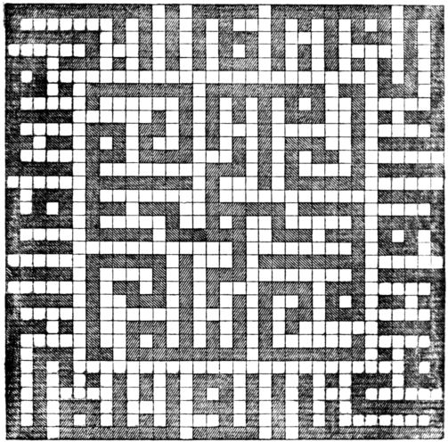
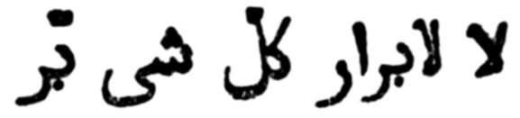
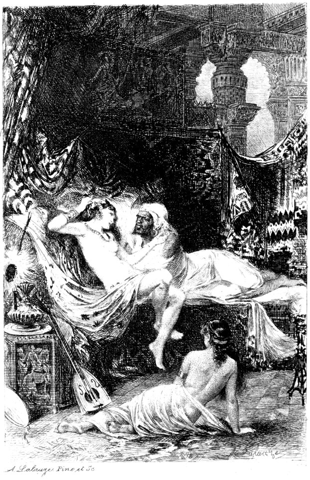
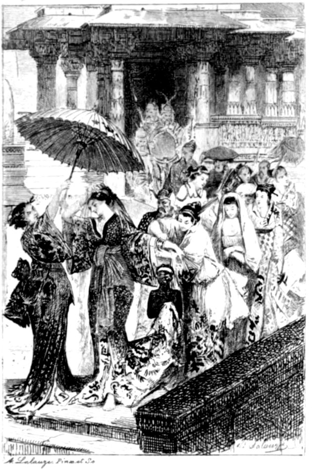
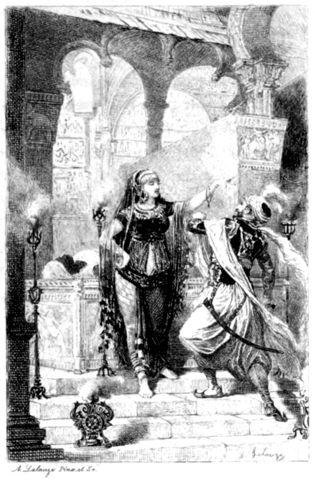
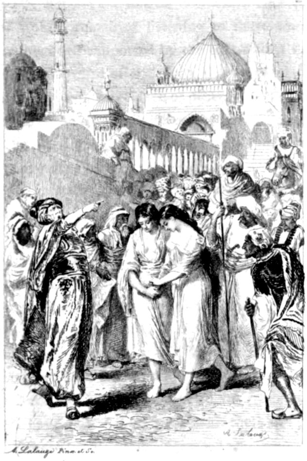
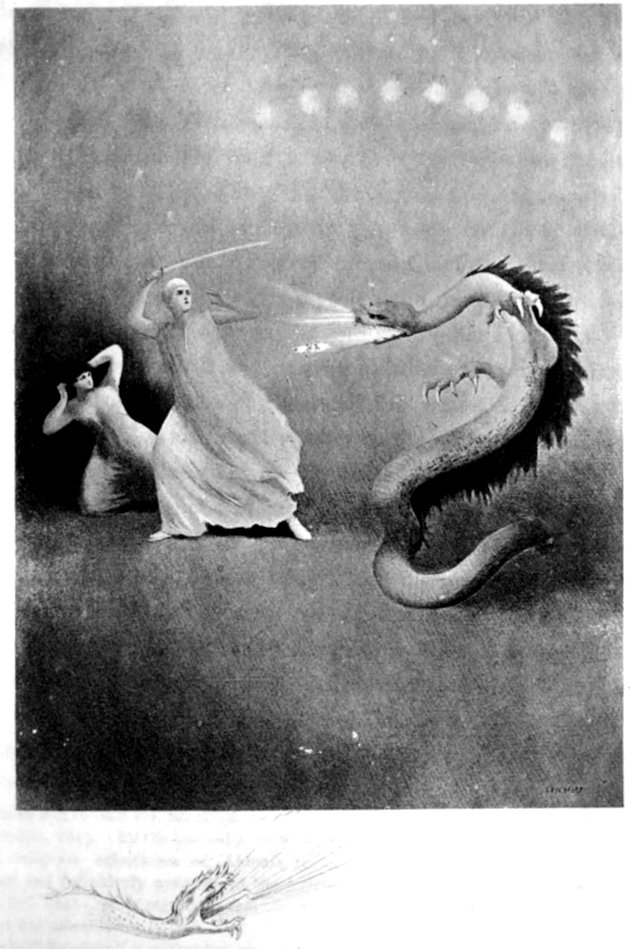

Title: Supplemental Nights to the Book of the Thousand and One Nights — Volume 5 (of 6)
Translator: Sir Richard Francis Burton
Release date: September 22, 2020 [eBook #63266]
Most recently updated: May 25, 2025
Language: English
Other information and formats: www.gutenberg.org/ebooks/63266
Credits: Produced by Richard Tonsing, Richard Hulse, and the Online
Distributed Proofreading Team at https://www.pgdp.net (This
file was produced from images generously made available
by The Internet Archive)
Transcriber's Note:
The cover image was created by the transcriber and is placed in the public domain.


“The pleasure we derive from perusing the Thousand-and-One Stories makes us regret that we possess only a comparatively small part of these truly enchanting fictions.”

A. Lalauze. Pinx. et Sc.
Limited to one thousand numbered sets, of which this is
I take the liberty of placing your names at the head of this Volume which owes its rarest and raciest passages to your kindly refusing the temporary transfer of the Wortley Montague MS. from your pleasant library to the care of Dr. Rost, Chief Librarian, India Office. As a sop to “bigotry and virtue,” as a concession to the “Scribes and Pharisees,” I had undertaken, in case the loan were granted, not to translate tales and passages which might expose you, the Curators, to unfriendly comment. But, possibly anticipating what injury would thereby accrue to the Volume and what sorrow to my subscribers, you were good enough not to sanction the transfer—indeed you refused it to me twice—and for this step my clientèle will be (or ought to be) truly thankful to you.
| PAGE | |||
|---|---|---|---|
| 1. | THE HISTORY OF THE KING’S SON OF SIND AND THE LADY FATIMAH | 1 | |
| 2. | HISTORY OF THE LOVERS OF SYRIA | 19 | |
| 3. | HISTORY OF AL-HAJJAJ BIN YUSUF AND THE YOUNG SAYYID | 37 | |
| 4. | NIGHT ADVENTURE OF HARUN AL-RASHID AND THE YOUTH MANJAB | 61 | |
| The Loves of the Lovers of Bassorah | 65 | ||
| Story of the Darwaysh and the Barber’s Boy and the Greedy Sultan | 105 | ||
| Tale of the Simpleton Husband | 116 | ||
| Note concerning the “Tirrea Bede,” Night 655 | 119 | ||
| 5. | THE LOVES OF AL-HAYFA AND YUSUF | 121 | |
| 6. | THE THREE PRINCES OF CHINA | 211 | |
| 7. | THE RIGHTEOUS WAZIR WRONGFULLY GAOLED | 229 | |
| 8. | THE CAIRENE YOUTH, THE BARBER AND THE CAPTAIN | 241 | |
| 9. | THE GOODWIFE OF CAIRO AND HER FOUR GALLANTS | 251 | |
| 10. | THE TAILOR AND THE LADY AND THE CAPTAIN | 261 | |
| 11. | THE SYRIAN AND THE THREE WOMEN OF CAIRO | 271 | |
| 12. | THE LADY WITH TWO COYNTES | 279 | |
| viii13. | THE WHORISH WIFE WHO VAUNTED HER VIRTUE | 287 | |
| 14. | CŒLEBS THE DROLL AND HIS WIFE AND HER FOUR LOVERS | 295 | |
| 15. | THE GATE-KEEPER OF CAIRO AND THE CUNNING SHE-THIEF | 307 | |
| 16. | TALE OF MOHSIN AND MUSA | 319 | |
| 17. | MOHAMMED THE SHALABI AND HIS MISTRESS AND HIS WIFE | 333 | |
| 18. | THE FELLAH AND HIS WICKED WIFE | 345 | |
| 19. | THE WOMAN WHO HUMOURED HER LOVER AT HER HUSBAND’S EXPENSE | 355 | |
| 20. | THE KAZI SCHOOLED BY HIS WIFE | 361 | |
| 21. | THE MERCHANT’S DAUGHTER AND THE PRINCE OF AL-IRAK | 371 | |
| 22. | STORY OF THE YOUTH WHO WOULD FUTTER HIS FATHER’S WIVES | 439 | |
| 23. | STORY OF THE TWO LACK-TACTS OF CAIRO AND DAMASCUS | 453 | |
| 24. | TALE OF HIMSELF TOLD BY THE KING | 463 | |
| Appendix I. | |||
| CATALOGUE OF WORTLEY MONTAGUE MANUSCRIPT CONTENTS | 497 | ||
| Appendix II. | |||
| By W. F. KIRBY. | |||
| I. | —NOTES ON THE STORIES CONTAINED IN VOL. IV. OF “SUPPLEMENTAL NIGHTS” | 505 | |
| II. | —NOTES ON THE STORIES CONTAINED IN VOL. V. OF “SUPPLEMENTAL NIGHTS” | 513 | |
This volume contains the last of my versions from the Wortley Montague Codex, and this is the place to offer a short account of that much bewritten MS.
In the “Annals of the Bodleian Library,” etc., by the Reverend William Dunn Macray, M.A. (London, Oxford and Cambridge, 1868: 8vo. p. 206), we find the following official notice:—
“A.D. 1803.”
“An Arabic MS. in seven volumes, written in 1764–5, and containing what is rarely met with, a complete collection of the Thousand and one Tales (N.B. an error for “Nights”) of the Arabian Nights Entertainments, was bought from Captain Jonathan Scott for £50. Mr. Scott published, in 1811, an edition of the Tales in six volumes (N.B. He reprinted the wretched English version of Prof. Galland’s admirable French, and his “revisions” and “occasional corrections” are purely imaginative,) in which this MS. is described, (N.B. after the mos majorum). He obtained it from Dr. (Joseph) White, the Professor of Hebrew and Arabic at Oxford, who had bought it at the sale of the library of Edward Wortley Montague, by whom it had been brought from the East. (N.B. Dr. White at one time intended to translate it literally, and thereby eclipse the Anglo-French version.) It is xnoticed in Ouseley’s Oriental Collections (Cadell and Davies), vol. ii. p. 25.”
The Jonathan Scott above alluded to appears under various titles as Mr. Scott, Captain Scott and Doctor Scott. He was an officer in the Bengal Army about the end of the last century, and was made Persian Secretary by “Warren Hastings, Esq.,” to whom he dedicated his “Tales, Anecdotes and Letters, translated from the Arabic and Persian” (Cadell and Davies, London, 1800), and he englished the “Bahár-i-Dánish” (A.D. 1799) and “Firishtah’s History of the Dakkhan (Deccan) and of the reigns of the later Emperors of Hindostan.” He became Dr. Scott because made an LL.D. at Oxford as meet for a “Professor (of Oriental languages) at the Royal Military and East India Colleges”; and finally he settled at Netley, in Shropshire, where he died.
It is not the fault of English Orientalists if the MS. in question is not thoroughly well-known to the world of letters. In 1797 Sir Gore Ouseley’s “Oriental Collections” (vol. ii. pp. 25–33) describes it, evidently with the aid of Scott, who is the authority for stating that the tales generally appear like pearls strung at random on the same thread; adding, “if they are truly Oriental it is a matter of little importance to us Europeans whether they are strung on this night or that night.”[1] This first and somewhat xiimperfect catalogue of the contents was followed in 1811 by a second, which concludes the six-volume edition of “The
The sixth volume, whose second title is “Tales | selected from the Manuscript copy | of the | 1001 Nights | brought to Europe by Edward Wortley Montague, Esq.,” ends with a general Appendix, of which ten pages are devoted to a description of the Codex and a Catalogue of its contents. Scott’s sixth volume, like the rest of his version, is now becoming rare, and it is regretable that when Messieurs Nimmo and Bain reprinted, in 1882, the bulk of the work (4 vols. 8vo) they stopped short at volume five.
Lastly we find a third list dating from 1835 in the “Catalogi | Codicum Manuscriptorum Orientalium | Bibliothecæ Bodleianæ | Pars Secunda | Arabicos | complectens. | Confecit | Alexander Nicoll, J.C.D. | Nuper Linguæ Heb. Professor Regius, necnon Ædis Christi Canonicus. | Editionem absolvit | et Catalogum urianum[2] aliquatenus emendavit | G. B. Pusey, S.T.B. | Viri xiidesideratissimi Successor. | Oxonii, | E Typographio Academico | MDCCCXXXV.” This is introduced under the head, “Codicis Arabici Mahommedani Narrationes Fictæ sive Historiæ Romanenses | in Quarto” (pp. 145–150).
I am not aware that any attempt has been made to trace the history of the Wortley Montague MS.; but its internal evidence supplies a modicum of information.
By way of colophon to the seventh and last volume we have, “On this wise end to us the Stories of the Kings and histories of various folk as foregoing in the Thousand Nights and a Night, perfected and completed, on the eighteenth day of Safar the auspicious, which is of the months of (the year A. H.) one thousand one hundred and seventy-eight” (= A.D. 1764–65).
“Copied by the humblest and neediest of the poor, Omar-al-Safatí, to whose sins may Allah be Ruthful!
The term “Suftah” is now and has been applied for the last century to the sons of Turkish fathers by Arab mothers, and many of these Mulattos live by the pen. On the fly-leaf of vol. i. is written in a fine and flowing Persian (?) hand, strongly contrasting with the text of the tome, which is unusually careless and bad, “This Book | The Thousand Nights and a Night of the Acts and deeds (Sírat) of the Kings | and what befel them from sundry | women that were whorish | and witty | and various | Tales | therein.” Below it also is a Persian couplet written in vulgar Iranian characters of the half-Shikastah type:—
Moreover, at the beginning of vol. i. is a list of fifteen tales written in Europeo-Arabic characters, after schoolboy fashion, xiiiand probably by Scott. In vol. ii. there is no initial list, but by way of Foreword we read, “This is volume the second of the Thousand Nights and a Night from the xciiid. Night, full and complete.” And the Colophon declares, “And this is what hath been finished for us of the fourth (probably a clerical error for “second”) tome of the Thousand Nights and a Night to the clxxviith. Night, written on the twentieth day of the month Sha’bán A.H., one thousand one hundred and seventy-seven” (= A.D. 1764). This date shows that the MS. was finished during the year after incept.
The text from which our MS. was copied must have been valuable, and we have reason to regret that so many passages both of poetry and prose are almost hopelessly corrupt. Its tone and tenor are distinctly Nilotic; and, as Mr. E. Wortley Montague lived for some time in Egypt, he may have bought it at the Capital of the Nile-land. The story of the Syrian (v. 468) and that of the Two Lack-tacts (vi. 262), notably exalt Misr and Cairo at the expense of Shám and Damascus; and there are many other instances of preferring Kemi the Black Soil to the so-called “Holy Land.” The general tone, as well as the special incidents of the book, argues that the stories may have been ancient, but they certainly have been modernised. Coffee is commonly used (passim) although tobacco is still unknown; a youth learns archery and gunnery (Zarb al-Risás, vol. vii. 440); casting of cannon occurs (vol. v. 186), and in one place (vol. vi. 134) we read of “Tabanjatayn,” a pair of pistols; the word, which is still popular, being a corruption of the Persian “Tabáncheh” = a slap or blow, even as the French call a derringer coup de poing. The characteristic of this Recueil is its want of finish. The stories are told after perfunctory fashion as though the writer had not taken the trouble to work out the details. There are no names or titles to the tales, so that every translator must give his own; and the endings are equally unsatisfactory, they usually content themselves, after xiv“native” fashion, with “Intihá” = finis; and the connection with the thread of the work must be supplied by the story-teller or the translator. Headlines were not in use for the MSS. of that day, and the catchwords are often irregular, a new word taking the place of the initial in the following page.
The handwriting, save and except in the first volume, has the merit of regularity, and appears the same throughout the succeeding six, except in the rare places (e.g. vi. 92–93), where the lazy copyist did not care to change a worn-out pen, and continued to write with a double nib. On the other hand, it is the character of a village-schoolmaster whose literary culture is at its lowest. Hardly a sheet appears without some blunder which only in rare places is erased or corrected, and a few lacunæ are supplied by several hands, Oriental and European, the latter presumably Scott’s. Not unfrequently the terminal word of a line is divided, a sign of great incuria or ignorance, as “Sháhr | baz” (i. 4), “Shahr | zád” (v. 309, vi. 106), and “Fawa | jadtu-h” = so I found him (v. 104). Koranic quotations almost always lack vowel-points, and are introduced without the usual ceremony. Poetry also, that crux of a skilful scribe, is carelessly treated, and often enough two sets of verse are thrown into one, the first rhyming in úr, and the second in ír (e.g. vol. v. 256). The rhyme-words also are repeated within unlawful limits (passim and vol. v. 308, ll. 6 and 11). Verse is thrust into the body of the page (vii. 112) without signs of citation in red ink or other (iii. 406); and rarely we find it, as it should be, in distichs divided by the normal conventional marks, asterisks and similar separations. Sometimes it appears in a column of hemistichs after the fashion of Europe (iv. 111; iv. 232, etc.): here (v. 226) a quotation is huddled into a single line; there (v. 242) four lines, written as monostichs, are followed by two distichs in as many lines.
As regards the metrical part Dr. Steingass writes to me, “The verses in Al-Hayfá and Yúsuf, where not mere doggerel, are spoiled xvby the spelling. I was rarely able to make out even the metre and I think you have accomplished a feat by translating them as you have done.”
The language of the MS. is generally that of the Felláh and notably so in sundry of the tales, such as, “The Goodwife of Cairo and her four Gallants” (v. 444). Of this a few verbal and phrasal instances will suffice. Adíní = here am I (v. 198); Ahná (passim, for nahnu) nakháf = we fear; ’Alaykí (for ’alaykĭ) = on thee; and generally the long vowel (-kí) for the short (-ki) in the pronoun of the second person feminine; Antah (for anta) = thou (vi. 96) and Antú (for antum) = you (iii. 351); Aráha and even arúha, rúhat and rúha (for ráha) = he went (vii. 74 and iv. 75) and Arúhú (for rúhú) = go ye (iv. 179); Bakarah * * * allazi (for allatí) = a cow (he) who, etc.; (see in this vol., p. 253) and generally a fine and utter contempt for genders, e.g. Hum (for hunna) masc. for fem. (iii. 91; iii. 146; and v. 233); Tá’áli (for ta’ál) fem. for masc. (vi. 96 et passim); Bíhím (for bi-him) = with them (v. 367); Bi-kám (for bi-kum) = with you (iii. 142) are fair specimens of long broad vowels supplanting the short, a peculiarity known in classical Arab., e.g. Miftáh (for Miftah) = a key. Here, however, it is exaggerated, e.g. Bá’íd (for ba’íd) = far (iv. 167); Kám (for kam) = how many? Kúm (for kum) = you (v. 118); Kúl-há (for kul-há) = tell it (iv. 58); Mín (for man) = who? (iii. 89); Mirwád (for Mirwad) = a branding iron; Natanáshshad (for natanashshad) = we seek tidings (v. 211); Rájal (pron. Rágil, for Rajul) = a man (iv. 118 and passim); Sáhal (for sahal) = easy, facile (iv. 71); Sír (for sir) = go, be off! (v. 199); Shíl (for shil) = carry away (i. 111); and Záhab (for zahab) = gold (v. 186). This broad Doric or Caledonian articulation is not musical to unaccustomed organs. As in popular parlance the Dál supplants the Zál; e.g. Dahaba (for zahaba) = he went (v. 277 and passim); also T takes the place of Th, as Tult for thulth = one third (iii. 348) and Tamrat (for thamrat) = xvifruit (v. 260), thus generally ignoring the sibilant Th after the fashion of the modern Egyptians who say Tumm (for thumma) = again; “Kattir (for kaththir) Khayrak” = God increase thy weal, and Lattama (for laththama) = he veiled. Also a general ignoring of the dual, e.g. Házá ’usfurayn (for ’Usfuráni) = these be birds (vi. 121); Nazalú al-Wazirayn (do) = the two Wazirs went down (vii. 123); and lastly Al-Wuzará al-itnayn (for Al-Wazíráni) = the two Wazirs (vii. 121). Again a fine contempt for numbers, as Nanzur ana (for Anzur) = I (we) see (v. 198) and Inní (for inná) narúhu = indeed I (we) go (iii. 190). Also an equally conscientious disregard for cases, as Min mál abú-há (for abí-há) = out of the moneys of her sire (iv. 190); and this is apparently the rule of the writer.
Of Egyptianisms and vulgarisms we have Ant, má ghibtshayy = thou, hast thou not been absent at all? with the shayy (a thing) subjoined to the verb in this and similar other phrases; Baksísh for Bakhshish (iv. 356); Al-Jawáz (for al-zíwáj) = marriage (i. 14); Fakí or Fikí (for fakih) = a divine (vi. 207 and passim); Finjál (for finján) = a coffee-cup (v. 424, also a Najdí or Central Arabian corruption); Kuwayyis = nice, pretty (iv. 179); Láyálí (لايالى for liallá لئلا) = lest that (v. 285); Luhúmát (for luhúm) = meats, a mere barbarism (v. 247); Matah (for Matá) = when? (v. 464); Ma’áyah (for ma’í) = with me (vi. 13 et passim); Shuwayy (or shuwayyah) Mayah, a double diminutive (for Muwayy or Muwayh) = a small little water, intensely Nilotic (iv. 44); Mbarih or Embárah (for Al-bárihah) = yesterday (v. 449); Takkat (for Dakkat) = she rapped (iv. 190); Úzbáshá and Uzbáshá (for Yúzbáshí) = a centurion, a captain (v. 430 et passim); Záídjah for Záijah (vi. 329); Zarághít (for Zaghárít) = lullilooing (iv. 12); Zínah (for Ziná) = adultery, and lastly Zúda (for Záda) = increased (iv. 87). Here the reader will cry jam satis; while the student will compare the list with that given in my Terminal Essay (vol. x. 168–9).
xviiThe two Appendices require no explanation. No. I. is a Catalogue of the Tales in the Wortley Montague MS., and No. II. contains Notes upon the Storiology of the Supplemental Volumes IV. and V. by the practised pen of Mr. W. F. Kirby. The sheets during my absence from England have been passed through the press and sundry additions and corrections have been made by Dr. Steingass.
In conclusion I would state that my hope was to see this Volume (No. xv.) terminate my long task; but circumstance is stronger than my will and I must ask leave to bring out one more—The New Arabian Nights.
3It is related that whilome there was a King of the many Kings of Sind who had a son by other than his wife. Now the youth, whenever he entered the palace, would revile[4] and abuse and curse and use harsh words to his step-mother, his father’s Queen, who was beautiful exceedingly; and presently her charms were changed and her face waxed wan and for the excess of what she heard from him she hated life and fell to longing for death. Withal she could not say a word concerning the Prince to his parent. One day of the days, behold, an aged woman (which had been her nurse) came in to her and saw her in excessive sorrow and perplext as to her affair for that she knew not what she could do with her step-son. So the ancient dame said to her, “O my lady, no harm shall befal thee; yet is thy case changed into other case and thy colour hath turned to yellow.” Hereupon the Queen told her all that had befallen her from her step-son of 4harsh language and revilement and abuse, and the other rejoined, “O my lady, let not thy breast be straitened, and when the youth shall come to thee and revile and abuse thee, do thou say him:—Pull thy wits somewhat together till such time as thou shalt have brought back the Lady Fatimah, daughter of ’Ámir ibn al-Nu’umán.” The old woman taught her these words by heart, and anon went forth from her, when the Prince entered by the door and spoke harsh words and abused and reviled her; so his father’s wife said to him, “Lower thy tone and pull thy wits somewhat together, for thou be a small matter until thou shalt bring back the daughter of the Sultan, hight Fatimah, the child of ’Amir ibn al-Nu’uman.” Now when he heard these words he cried, “By Allah, ’tis not possible but that I go and return with the said Lady Fatimah;” after which he repaired to his sire and said, “’Tis my desire to travel; so do thou prepare for me provision of all manner wherewith I may wend my way to a far land, nor will I return until I win to my wish.” Hereupon his father fell to transporting whatso he required of victuals various and manifold, until all was provided, and he got ready for him whatso befitted of bales and camels and pages and slaves and eunuchs and negro chattels. Presently they loaded up and the youth, having farewelled his father and his friends and his familiars, set forth seeking the country of Fatimah bint Amir, and he travelled for the first day and the second day until he found himself in the middle of the wilds and the Wadys, and the mountains and the stony wastes. This lasted for two months till such time as he reached a region wherein were Ghúls and ferals, and to one and all who met him and opposed him he would give something of provaunt and gentle them and persuade them to guide him upon his way. After a time he met a Shaykh well stricken in years; so he salamed to him and the other, after returning his greeting, asked him saying, “What was it brought thee to this land and region wherein are naught but wild beasts 5and Ghuls?” whereto he answered, “O Shaykh, I came hither for the sake of the Lady Fatimah, daughter of ’Amir ibn al-Nu’uman.” Hereat exclaimed the greybeard, “Deceive not thyself, for assuredly thou shalt be lost together with what are with thee of men and moneys, and the maiden in question hath been the cause of destruction to many Kings and Sultans. Her father hath three tasks which he proposeth to every suitor, nor owneth any the power to accomplish a single one, and he conditioneth that if any fail to fulfil them and avail not so to do, he shall be slain. But I, O my son, will inform thee of the three which be these: First the King will bring together an ardabb of sesame grain and an ardabb of clover-seed and an ardabb of lentils; and he will mingle them one with other, and he will say:—Whoso seeketh my daughter to wife, let him set apart each sort, and whoso hath no power thereto I will smite his neck. And as all have failed in the attempt their heads were struck off next morning and were hung up over the Palace gateway. Now the second task is this: the King hath a cistern[5] full of water, and he conditioneth that the suitor shall drink it up to the last drop, under pain of losing his life; and the third is as follows: he owneth a house without doors and windows, and it hath[6] three hundred entrances and a thousand skylights and two thousand closets: so he covenanteth with the suitor that he make for that place whatever befitteth of doors and lattices and cabinets, and 6the whole in a single night. Now here is sufficient to engross thine intellect, O my son, but take thou no heed and I will do thy task for thee.” Quoth the other, “O my uncle, puissance and omnipotence are to Allah!” and quoth the Shaykh, “Go, O my son, and may the Almighty forward the works of thee.” So the Prince farewelled him and travelled for the space of two days, when suddenly the ferals and the Ghuls opposed his passage and he gave them somewhat of provaunt which they ate, and after they pointed out to him the right path. Then he entered upon a Wady wherein flights of locusts barred the passage, so he scattered for them somewhat of fine flour which they picked up till they had eaten their sufficiency. Presently he found his way into another valley of iron-bound rocks, and in it there were of the Jánn what could not be numbered or described, and they cut and crossed his way athwart that iron tract. So he came forward and salam’d to them and gave them somewhat of bread and meat and water, and they ate and drank till they were filled, after which they guided him on his journey and set him in the right direction. Then he fared forwards till he came to the middle of the mountain, where he was opposed by none, or mankind or Jinn-kind, and he ceased not marching until he drew near the city of the Sultan whose daughter he sought to wife. Here he set up a tent and sat therein seeking repose for a term of three days; then he arose and walked forwards until he entered the city, where he fell to looking about him leftwards and rightwards till he had reached the palace[7] of the King. He found there over the gateway some hundred heads which were hanging up, and he cried to himself, “Veil me, O thou Veiler! All these skulls were suspended for the sake of the Lady Fatimah, but the bye-word saith:—Whoso dieth not by the sword dieth of his life-term, and manifold are the causes whereas death be singlefold.” Thereupon 7he went forwards to the palace gate——And Shahrazad was surprised by the dawn of day, and fell silent and ceased saying her permitted say. Then quoth her sister Dunyazad, “How sweet and tasteful is thy tale, O sister mine, and how enjoyable and delectable!” Quoth she, “And where is this compared with that I would relate to you on the coming night an the Sovran suffer me to survive?” Now when it was the next night and that was
Dunyazad said to her, “Allah upon thee, O my sister, an thou be other than sleepy, finish for us thy tale that we may cut short the watching of this our latter night!” She replied:——With love and good will!—It hath reached me, O auspicious King, the director, the right-guiding, lord of the rede which is benefiting and of deeds fair-seeming and worthy celebrating, that the Prince went forward to the Palace gate and purposed to enter, but they forbade him nor availed he to go in; so he returned to his tents and there spent the night till dawn. Then he again turned to the King’s Serai and attempted to make entry, but they stayed him and he was unable to succeed, nor could he attain to the presence of the Sovran. So he devised with one who was standing at the door a device to enter the presence, but again he failed in his object and whenever he craved admission they rejected him and drave him away saying, “O youth, tell us what may be thy need?” Said he, “I have a requirement of the Sultan and my purport is a business I may transact with him and speech containeth both private and public matters; nor is it possible that I mention my want to any save to the Sovran.” So a Chamberlain of the chamberlains went in to the presence and reported the affair to the King, who permitted them admit the stranger, and when he stood before the throne he kissed ground 8and deprecated evil for the ruler and prayed for his glory and permanency, and the Monarch, who marvelled at the terseness of his tongue and the sweetness of his speech, said to him, “O youth, what may be thy requirement?” Quoth the Prince, “Allah prolong the reign of our lord the Sultan! I came to thee seeking connexion with thee through thy daughter the lady concealed and the pearl unrevealed.” Quoth the Sultan, “By Allah, verily this youth would doom himself hopelessly to die and, Oh the pity of it for the loquence of his language;” presently adding, “O youth, say me, art thou satisfied with the conditions wherewith I would oblige thee?” and the Prince replied, “O my lord, Omnipotence is to Allah; and, if the Almighty empower me to fulfil thy pact, I shall fulfil it.” The King continued, “I have three tasks to impose upon thee,” and the Prince rejoined, “I am satisfied with all articles thou shalt appoint.” Hereupon the Sovran summoned the writers and witnesses, and they indited the youth’s covenant and gave testimony that he was content therewith; and when the Prince had signified his satisfaction and obligation, the King sent for an ardabb of sesame and an ardabb of clover-seed and an ardabb of lentils and let mingle all three kinds one with other till they became a single heap. Then said the King to the Prince, “Do thou separate each sort by itself during the course of the coming night, and if dawn shall arise and every seed is not set apart, I will cut off thy head.” Replied the other, “Hearing and obeying.” Then the King bade place all the mixed heap in a stead apart, and commanded the suitor retire into solitude; accordingly, he passed alone into that site and looked upon that case and condition, and he sat beside the heap deep in thought, so he set his hand upon his cheek and fell to weeping, and was certified of death. Anon he arose and going forwards attempted of himself to separate the various sorts of grain, but he failed; and had two hundred thousand thousands of men been gathered together for the work they had on nowise 9availed to it. Hereupon he set his right hand upon his cheek[8] and he fell to weeping and suffered the first third of the dark hours to pass, when he said to himself, “There remaineth naught of thy life save the remnant of this night!” But the while he was conjecturing and taking thought, behold, an army of the locusts to whom he had thrown the flour upon his road came speeding over him like a cloud dispread and said to him with the tongue of the case,[9] “Fear not neither grieve, for we have flocked hither to solace thee and ward from thee the woe wherein thou art: so take thou no further heed.” Then they proceeded to separate each kind of grain and set it by itself, and hardly an hour had passed before the whole sample was distributed grain by grain into its proper place while he sat gazing thereon. After this the locusts arose and went their ways, and when morning dawned the Sultan came forth and took seat in the Hall of Commandment and said to those who were present, “Arise ye and bring hither the youth that we may cut off his head.” They did his bidding but, when entering in to the Prince, they found all the different grains piled separately, sesame by itself and clover-seed alone and lentils distributed apart, whereat they marvelled and cried, “This thing is indeed a mighty great matter from this youth, nor could it befal any save himself of those who came before him or of those who shall follow after him.” Presently they brought him to the Sultan and said, “O King of the Age, all the grains are sorted;” whereat the Sovran wondered and exclaimed, “Bring the whole before me.” And when they brought it he looked upon it with amazement and rejoiced thereat, but soon recovered himself and cried, “O youth, there remain to thee two tasks for two nights; and if thou fulfil them, thou shalt win to thy wish, and if thou fail therein, I will smite thy neck.” Said the Prince, “O King of the 10Age, the All-might is to Allah, the One, the Omnipotent!” Now when night drew nigh the King opened to him a cistern and said, “Drink up all that is herein and leave not of it a drop, nor spill aught thereof upon the ground, and if thou drain the whole of it, thou shalt indeed attain to thine aim, but if thou fail to swallow it, I will smite thy neck.” The Prince answered, “There is no Majesty and there is no Might save in Allah, the Glorious, the Great!” Then he took his seat at the cistern-mouth and fell to thinking and saying in his mind, “Wherefore, O certain person, shouldst thou venture thy life and incur the cruel consequence of this King on account of thy frowardness to thy father’s wife? and by Allah, this is naught save Jinn-struck madness on thy part!” So he placed his left hand upon his cheek, and in his right was a stick wherewith he tapped and drew lines in absent fashion upon the ground,[10] and he wept and wailed until the third of the first part of the dark hours had passed, when he said in himself, “There remaineth naught of thine age, ho, Such-an-one, save the remainder of this night.” And he ceased not to be drowned in thought when suddenly a host of savage beasts and wild birds came up to him and said with the tongue of the case, “Fear not neither grieve, O youth, for none is faithless to the food save the son of adultery and thou wast the first to work our weal, so we will veil and protect thee, and let there be no sorrowing with thee on account of this matter.” Hereupon they gathered together in a body, birds and beasts, and they were like unto a lowering cloud, no term to them was shown and no end was known as they followed in close file one upon other——And Shahrazad was surprised by the dawn of day, and fell silent and ceased to say her permitted say. Then quoth her sister Dunyazad, “How sweet is thy story, O sister mine, and 11how enjoyable and delectable!” Quoth she, “And where is this compared with that I would relate to you on the coming night an the King suffer me to survive?” Now when it was the next night and that was
Dunyazad said to her, “Allah upon thee, O my sister, an thou be other than sleepy finish for us thy tale that we may cut short the watching of this our latter night!” She replied:——With love and good will! It hath reached me, O auspicious King, the director, the right-guiding, lord of the rede which is benefiting and of deeds fair-seeming and worthy celebrating, that the wild beasts and the feral birds met one another beside that cistern and each took his turn thereat and drank without drinking his full[11] until naught of water remained in the reservoir and they fell to licking the sides with their tongues so that anyone seeing it would say that for the last ten years not a drop of liquid had been stored therein. And after this they all went their ways. Now as soon as it was morning-tide the King arose and hied forth the Harem and taking his seat in the Hall of Commandment said to sundry of his pages and Chamberlains, “Go bring us tidings of the cistern.” Accordingly they went thither and inspected it but found no trace of water therein; so they returned straightway to the ruler and reported the matter. Hereupon the Sultan was amazed and his wits were bewildered and he was certified that none had power to win his daughter for wife save that youth. So he cried, “Bring him hither,” and they fared to fetch him and presented him in the presence where he salam’d to the Sovran and 12deprecated[12] for him and prayed for him. The Sultan greeted him in return and said, “O Youth, there now remaineth with me but a single task which if thou accomplish shall save thee and win for thee my daughter; however if thou fail therein I will smite thy neck.” “Power is to Allah!” exclaimed the Prince whereat the Sultan marvelled and said in his mind, “Glory be to God: the words and works of this youth be wonderful. Whatever I bid him do he beginneth with naming the name of the Lord whereas those who forewent him never suffered me hear aught of the sort. However, the fortunate are Fortune’s favourites and Misfortune never befalleth them.” Now when it was night-tide the Sultan said, “O youth, in very deed this mansion which standeth beside the palace is brand-new and therein are store of wood and timbers of every kind, but it lacketh portals and lattices and the finishing of the cabinets; so I desire that thou make for it doors and windows and closets. I have provided thee with everything thou dost require of carpenter’s gear and turner’s lathes; and either thou shalt work all this during the coming night; or, if thou be wanting in aught and morning shall morrow without all the needful being finished, I will cut off thy head. This is the fine of thy three labours which an thou avail to accomplish thou shalt attain thine aim and if thou fail thereof I will smite thy neck. Such be then my last word.” Accordingly the Prince arose and faring from before him entered the unfinished mansion which he found to be a palace greater and grander than that wherein the King abode. He cried, “O Veiler, withdraw not Thy veiling!” and he sat therein by himself (and he drowned in thought) and said, “By Allah, if at this hour I could find somewhat to swallow I would die thereby and rest from this toil and trouble have been my lot;[13] and 13the morning shall not morrow ere I shall find repose nor shall any one of the town folk solace himself and say:—The Sultan is about to cut off the head of this youth. Withal the bye-word hath it:—Joyance which cometh from Allah is nearer than is the eyebrow to the eye, and if Almighty (be He extolled and exalted!) have determined aught to my destiny, there is no flight therefrom. Moreover one of the Sages hath said:—He released me from pillar to post and the Almighty bringeth happiness nearhand. From this time until dawn of day many a matter may proceed from the Lord wherein haply shall be salvation for me or destruction.” Then he fell to pondering his affair and thinking over his frowardness to the wife of his father, after which he said, “The slave meditateth and the Lord determineth, nor doth the meditation of the slave accord with the determination of the Lord.” And while thus drowned in care he heard the sound of the Darabukkah-drum[14] and the turmoil of work and the shiftings of voices whilst the house was full of forms dimly seen and a voice cried out to him, “O youth, be hearty of heart and sprightly of spirits: verily we will requite thee the kindness thou wroughtest to us in providing us with thy provision; and we will come to thine aidance this very night, for they who are visiting and assisting thee are of the Jánn from the Valley of Iron.” Then they began taking up the timbers and working them and some turned the wood with lathes, and other planed the material with planes, whilst others again fell to painting and dyeing the doors and windows, these green and those red and those yellow; and presently they set them in their several steads, nor did that night go by ere the labour was perfected and there was no royal palace like unto it, either in ordinance or in emplacement. Now as morning morrowed the Sultan went forth to his divan, and when he looked abroad he saw a 14somewhat of magnificence in the mansion which was not to be found in his palace, so he said in his surprise, “By Allah, the works of this youth be wondrous and had the joiners and carpenters loitered over three years upon this work they never would have fulfilled such task: moreover we ken not by what manner of means this young man hath been able to accomplish the labour.” Thereupon he sent for the Prince to the presence and robed him with a sumptuous robe of honour and assigned to him a mighty matter of money, saying, “Verily thou deservest, O youth, and thou art the only one who meriteth that thou become to my daughter baron and she become to thee femme.” Presently Sultan Amir ibn al-Nu’uman bade tie the marriage-tie and led to her in procession the bridegroom who found her a treasure wherefrom the talisman had been loosed;[15] and the bride rejoiced with even more joyance than he did by cause of her sire, with his three tasks, having made her believe that she would never be wedded and bedded but die a maid, and she had long been in sadness for such reason. Then the married couple abode with the King their father for the space of a month, and all this time the camp of the young Prince remained pitched without the town, and every day he would send to his pages and eunuchs whatso they needed of meat and drink. But when that term ended he craved from the Sultan leave of travel to his own land and his father-in-law answered, “O youth, do whatso thou ever wishest anent returning to thy native realm;” and forthwith fell to fitting out his daughter till all her preparations were completed and she was found ready for wayfare together with her body-women and eunuchs. The Prince having farewelled his father-in-law caused his loads to be loaded and set out seeking his native country and kingdom; and he travelled by day and by night, and he pushed his way through 15Wadys and over mountains for a while of time until he drew near his own land, and between him and his father’s city remained only some two or three marches. Here suddenly men met him upon the road and as he asked them the tidings they replied that his sire was besieged within his capital of Sind by a neighbour King who had attacked him and determined to dethrone him and make himself Sovereign and Sultan in his stead. Now when he heard this account he pushed forward with forced marches till he reached his father’s city which he found as had been reported; and the old King with all his forces was girded around within his own walls nor could he sally out to offer battle for that the foe was more forceful than himself. Hereupon the Prince pitched his camp and prepared himself for fight and fray; and a many of his men rode with him whilst another many remained on guard at the tents.——And Shahrazad was surprised by the dawn of day and fell silent and ceased saying her permitted say. Then quoth her sister Dunyazad, “How sweet and tasteful is thy tale, O sister mine, and how enjoyable and delectable!” Quoth she, “And where is this compared with that I would relate to you on the coming night an the Sovran suffer me to survive?” Now when it was the next night and that was
Dunyazad said to her, “Allah upon thee, O my sister, an thou be other than sleepy finish for us thy tale that we may cut short the watching of this our latter night!” She replied:——With love and good will! It hath reached me, O auspicious King, the director, the right-guiding, lord of the rede which is benefiting and of deeds fair-seeming and worthy celebrating, that the Prince busked him for fight and fray seeking to assault the army of the King who had besieged his sire, and the two hosts fought together a strenuous fight and a stubborn. On this wise fared it with them; 16but as regards the bride, she took patience till such time as her bridegroom had ridden forth, when she donned her weapons of war and veiled herself with a face-veil and sallying forth in Mameluke’s habit presently came up with her mate the Prince whom she found straitened by the multitude of his foes. Now this Princess was mistress of all manner weapons, so she drew her sword from its sheath and she laid on load rightwards and leftwards until the wits of all beholders were wildered and her bridegroom inclined to her and said, “Verily this Mameluke he is not one of our party.” But she continued battling till the sun rose high in the firmament-vault when she determined to attack the ensigns and colours which were flying after right royal of fashion, and in the midst thereof was the hostile Sultan. So she smote the ancient who bore the banner and cast him to the ground and then she made for the King and charged down upon him and struck him with the side of the sword a blow so sore that of his affright he fell from his steed. But when his host saw him unhorsed and prostrate upon the plain they sought safety in flight and escape, deeming him to be dead; whereupon she alighted and pinioned his elbows behind his back and tied his forearms to his side, and lashed him on to his charger and bound him in bonds like a captive vile. Then she committed him to her bridegroom who still knew her not and she departed the field seeking her camp until she arrived there and entered her pavilion where she changed her attire and arrayed herself in women’s raiment. After this she sat down expecting the Prince who, when she had committed to him the captured King, carried him into the city where he found the gates thrown open. Hereupon his sire sallied forth and greeted him albeit he recognized him not but was saying, “Needs must I find the Knight who came to our assistance.” “O my papa,” quoth the Prince, “dost thou not know me?” and quoth the other, “O young man, I know thee not;” whereat the other rejoined, “I am thy son Such-an-one.” But hardly had the old King heard these words when behold, he 17fell upon him and threw his arms round his neck and was like to lose his sense and his senses for stress of joyance. After a time he recovered and looking upon the captive King asked him, “What was it drave thee to come hither and seek to seize from me my realm?” and the other answered him with humility and craved his pardon and promised not again to offend, so he released him and bade him gang his gait. After this the young Prince went forth and caused his Harim and his pages and whoso were with him enter the city and when they were seated in the women’s apartment the husband and wife fell to talking of their journey and what they had borne therein of toil and travail. At last the Princess said to him, “O my lord, what became of the King who besieged thy sire in his capital and who sought to bereave him of his realm?” and said he, “I myself took him captive and committed him to my father who admitted his excuses and suffered him depart.” Quoth she, “And was it thou who capturedst him?” and quoth he, “Yea verily, none made him prisoner save myself.” Hereupon said she, “Thee it besitteth not to become after thy sire Sovran and Sultan!” and said he, “Why and wherefore?” “For that a lie defameth and dishonoureth the speaker,” cried she, “and thou hast proved thee a liar.” “What made it manifest to thee that I lied?” asked the Prince, and the Princess answered, “Thou claimest to have captured the King when it was other than thyself took him prisoner and committed him to thy hands.” He enquired, “And who was he?” and she replied, “I know not, withal I had him in sight.” Hereupon the bridegroom repeated his query till at last she confessed it was she had done that deed of derring-do; and the Prince rejoiced much in her.[16] Then the twain made an entry 18in triumph and the city was adorned and the general joy was increased. Now his taking to wife the Lady Fatimah daughter of the Sultan Amir bin Al-Nu’uman so reconciled him to his step-mother, the spouse of his father the Sovran of Sind, that both forgot their differences and they lived ever afterwards in harmony and happiness.
21It is stated that of olden times and by-gone there dwelt in the land of Syria two men which were brothers and whereof one was wealthy and the other was needy. Now the rich man had a lovesome daughter and a lovely, whilst the poor man had a son who gave his heart to his cousin as soon as his age had reached his tenth year. But at that time his father the pauper died and he was left an orphan without aught of the goods of this world; the damsel his cousin, however, loved him with exceeding love and ever and anon would send him a somewhat of dirhams and this continued till both of them attained their fourteenth years. Then the youth was minded to marry the daughter of his uncle, so he sent a party of friends to her home by way of urging his claim that the father might wed her to him, but the man rejected them and they returned disappointed. However, when it was the second day a body of warm men and wealthy came to ask for the maid in marriage, and they conditioned the needful conditions and stood agreed upon the nuptials. Presently the tidings reached the damsel who took patience till the noon o’ night, when she arose and sought the son of her uncle, bringing with her a sum of two thousand dinars which she had taken of her father’s good and she knocked softly at the door. Hereupon the youth started from sleep and went forth and found his cousin who was leading a she-mule and an ass, so the twain bestrode either beast and travelled through the remnant of the night until the morning morrowed. Then they alighted to drink and to hide themselves in fear of being 22seen until the second night fell when they mounted and rode for two successive days, at the end of which they entered a town seated on the shore of the sea. Here they found a ship equipped for voyage, so they repaired to the Ra’is and hired for themselves a sitting place; after which the cousin went forth to sell the ass and the she-mule, and disappeared for a short time. Meanwhile the ship had sailed with the daughter of his uncle and had left the youth upon the strand and ceased not sailing day after day for the space of ten days, and lastly made the port she purposed and there cast anchor.[18] Thus it befel them; but as regards the youth, when he had sold the beasts he returned to the ship and found her not, and when he asked tidings thereof they told him that she had put to sea; and hearing this he was mazed as to his mind and sore amated as to his affair, nor wot he whither he should wend. So he turned him inland sore dismayed. Now when the vessel anchored in that port quoth the damsel to the captain, “O Ra’is,[19] hie thee ashore and bring for us a portion of flesh and fresh bread,” and quoth he, “Hearkening and obedience,” whereupon he betook himself to the town. But as soon as he was far from the vessel she arose and donning male’s dress said to the sailors, “Do ye weigh anchor and set sail,” and she shouted at them with the shouting of seamen. Accordingly they did as she bade them and the wind being fair and the weather favourable, ere an hour had sped they passed beyond sight of land.[20] Presently the captain 23returned bringing bread and meat but he found ne’er a ship, so he asked tidings of her and they answered, “Verily she is gone.” Hereupon he was perplext and he fell to striking hand upon hand and crying out, “O my good and the good of folk!” and he repented whenas repentance availed him naught. Accordingly, he returned to the town unknowing whither he should wend and he walked about like one blind and deaf for the loss of his craft. But as regards the vessel, she ceased not sailing with those within till she cast anchor near a city wherein was a King; and no sooner was she made fast than the damsel arose and donning her most sumptuous dress and decorations fell to scattering money amongst the crew and saying to them, “Hearten your hearts and be not afraid on any wise!” In due time the news of a fresh arrival reached the Ruler, and he ordered his men to bring him tidings concerning that vessel, and when they went for her and boarded her they found that her captain was a damsel of virginal semblance exceeding in beauty and loveliness. So they returned and reported this to the King who despatched messengers bidding her lodge with him for they had heightened their praises of her and the excess of her comeliness, and he said in his mind, “By Allah, an she prove as they describe her, needs must I marry her.” But the damsel sent back saying, “I am a clean maid, nor may I land alone but do thou send to me forty girls, virgins like myself when I will disembark together with them.”——And Shahrazad was surprised by the dawn of day and fell silent and ceased to say her permitted say. Then quoth her sister Dunyazad, “How sweet is thy story, O sister mine, and how enjoyable and delectable!” Quoth she, “And where is this compared with that I would relate to you on the coming night an the King suffer me to survive?” Now when it was the next night and that was
Dunyazad said to her, “Allah upon thee, O my sister, an thou be other than sleepy, finish for us thy tale that we may cut short the watching of this our latter night!” She replied:——With love and good will! It hath reached me, O auspicious King, the director, the right-guiding, lord of the rede, which is benefiting and of deeds fair-seeming and worthy celebrating, that the damsel demanded of the King forty clean maids and said, “We will land, I and they together,” whereto he replied, “The right is with her.” Hereupon he ordered all those about him, the Lords of his land and the Commons, that each and every who had in the house a virginal daughter, should bring her to him until the full tale of forty (the daughter of the Wazir being amongst them) was told and he sent them on board the ship where the damsel was about sitting down to supper. But as soon as the maidens came she met them in her finest attire, none of the number being more beauteous than herself, and she salam’d to them and invited them into the cuddy[21] where she bade food be served to them and they ate and were cheered and solaced, after which they sat down to converse till it was the middle of the night. Now when sleep prevailed over the girls they retired to their several berths, and when they were drowned in slumber, the damsel arose softly and arousing the crew bade them leave their moorings and shake out their canvas; nor did daylight dawn to them ere they had covered a far distance. As soon as the maidens awoke they saw themselves on board a ship amid the billows of the main, and as they asked the Captainess she answered, “Fear not for yourselves or for the voyage you are making;”[22] and she gentled them and solaced them 25until whatso was in their hearts was allayed. However, touching the affair of the King, when morrowed the morn he sent to the ship with an order for the damsel to land with the forty virgins, but they found not the craft and they returned and reported the same to their lord, who cried, “By Allah, this be the discreetest of deeds which none other save she could have done.” So he arose without stay or delay and taking with him the Wazir (both being in disguise), he went down to the shore and looked around but he could not find what had become of them. And as regards the vessel carrying the virgins she ceased not sailing until she made port beside a ruined city wherein was none inhabitant, and here the crew cast anchor and furled their sails when behold, a gang of forty pirate[23] men, ever ready to cut the highway and their friends to betray, boarded them, crying in high glee, “Let us slay all in her and carry off whatso we find.” When they appeared before the damsel they would have effected their intent; but she welcomed them and said, “Do ye return ashore: we be forty maids and ye forty men and to each of you shall befal one and I will belong to your Shaykh, for that I am the Captainess.” Now when they heard this they rejoiced with excessive joy and they said, “Walláhi, our night shall be a blessed one by virtue of your coming to us;” whereto she asked, “Have you with you aught of sheep?” They answered, “We have,” and quoth she, “Do ye slay of them somewhat for supper and fetch the meat that we may cook it for you.” So a troop of pirates went off and brought back ten lambs which they slaughtered and flayed and brittled. Then the damsel and those with her tucked up their sleeves and hung up their chauldrons[24] and cooked the meat after delicatest fashion, and when 26it was thoroughly done and prepared, they spread the trays and the pirates came forward one and all, and ate and washed their hands and they were in high spirits each and every saying, “This night I will take to me a girl.” Lastly she brought to them coffee which they drank, but hardly had it settled in their maws when the Forty Thieves fell to the ground, for she had mixed up with it flying Bhang[25] and those who had drunk thereof became like unto dead men. Hereupon the damsel arose without loss of time and taking in her hand a sharp-grided sword fell to cutting off their heads and casting them into the sea until she came to the Shaykh of the Pirates and in his case she was satisfied with shaving his beard and tearing out his eye-teeth and bidding the crew cast him ashore. They did as she commanded, after which she conveyed the property of all the caitiffs and having distributed the booty amongst the sailors, bade them weigh anchor and shake out their canvas. On this wise they left that ruined city until they had made the middle of the main and they fared for a number of days athwart the billowy deep nor could they hit upon their course amongst the courses of the sea until Destiny cast them beside a city. They made fast to the anchorage-ground, and the damsel arose and donning Mameluke’s dress and arraying the Forty Virgins in the same attire all walked together and paced about the shore and they were like garden blooms. When they entered the streets they found all the folk a-sorrowing, so they asked one of them and he answered, “The Sultan who over-reigneth this city is dead and the reign lacketh rule.” Now in that stead and under the hand of the Wazir, was a Bird which they let loose at certain times, and whenever he skimmed round and perched upon the head of any man to him they would give the Sultanate.[26] By the decree 27of the Decreer they cast the fowl high in air at the very hour when the damsel was landing and he hovered above her and settled upon her head (she being in slave’s attire), and the city folk and the lords of the land cried out, “Strange! passing strange!” So they flushed the bird from the place where he had alighted and on the next day they freed him again at a time when the damsel had left the ship, and once more he came and settled upon her head. They drove him away, crying, “Oh rare! oh rare!” but as often as they started him from off her head he returned to it and alighted there again. “Marvellous!” cried the Wazir, “but Allah Almighty hath done this[27] and none shall object to what He doeth nor shall any reject what He decreeth.” Accordingly, they gave her the Sultanate together with the signet-ring of governance and the turband of commandment and they seated her upon the throne of the reign. Hereupon she fell to ordering the Forty Virgins who were still habited as Mamelukes and they served the Sultan for a while of time, till one day of the days when the Wazir came to the presence and said, “O King of the Age, I have a daughter, a model of beauty and loveliness and I am desirous of wedding her with the Sovran because one such as thou should not remain in single blessedness.”——And Shahrazad was surprised by the dawn of day and fell silent, and ceased saying her permitted say. Then quoth her sister Dunyazad, “How sweet and tasteful is thy tale, O sister mine, and how enjoyable and delectable!” Quoth she, “And where is this compared with that I would relate to you on the coming night an the Sovran suffer me to survive?” Now when it was the next night and that was
Dunyazad said to her, “Allah upon thee, O my sister, an thou be other than sleepy finish for us thy tale that we may cut short the watching of this our latter night!” She replied:——With love and good will! It hath reached me, O auspicious King, the director, the right-guiding, lord of the rede which is benefiting and of deeds fair-seeming and worthy celebrating, that quoth the Wazir to the Sultan, “I have a daughter, a model of beauty and loveliness, and I am desirous of wedding her with the Sultan, because one such as thou should not remain in single blessedness.” “Do whatso thou wishest,” quoth the King, “and Allah prosper thy doing.” Hereupon the Wazir fell to preparing the marriage-portion[28] of his daughter, and of forwarding her affair with the Sultan, until her wedding appointments[29] and other matters were completed. After this he caused the marriage-tie be tied, and he brought her to the supposed Sultan where she lay for the first night, but the damsel having performed the Wuzú ablution did naught but pray through the hours of darkness. When dawned the day the Wazir’s wife which was the mother of the maiden came to look upon her daughter and asked her of her case, and the bride answered, “All the livelong night hath he passed in orisons, nor came he near me even once.” Quoth the mother, “O my daughter, this be the first night, and assuredly he was 29ashamed, for he is young in years, and he knoweth not what to do; haply also his heart hangeth not upon thee; and he is but a raw lad.[30] However, on the coming night ye shall both enjoy your desire.” But as soon as it was the evening of the next day the Sultan went in to his Harim and made the minor ablution, and abode in prayer through the night until the morrow morrowed, when again the mother came to see how matters stood, and she asked her daughter, who answered, “All the dark hours he hath passed in devotion, and he never approached me.” Now on the third night it happened after like fashion, so the mother said, “O my daughter, whenever thou shalt see thy husband sitting by thy side, do thou throw thyself upon his bosom.” The bride did as she was bidden, and casting herself upon his breast cried, “O King of the Age, haply I please thee not at all;” whereat said the other, “O light of mine eyes, thou art a joy to me for ever; but I am about to confide to thee somewhat and say me canst thou keep a secret?” Quoth she, “Who is there like me for hiding things in my heart?” and quoth the other, “I am a clean maid, and my like is thy like, but the reason for my being in man’s habit is that the son of my uncle, who is my betrothed, hath been lost from me and I have been lost from him, but when Allah shall decree the reunion of our lots he shall marry thee first and he shall not pay the bridegroom’s visit save unto thee, and after that to myself.” The Wazir’s daughter accepted the excuse, and then arising went forth and brought a pigeon whose weazand she split and whose blood she daubed upon the snow-white sheet.[31] And when it was morning and her mother again visited her, the bride 30showed her this proof of her pucelage, and she rejoiced thereat and her father rejoiced also. After this the Sultan ruled for a while of time, but she was ever in deep thought concerning what device could be devised in order to obtain tidings of her father and her cousin and what had wrought with them the changes of times and tides. So she bade edify a magnificent Hammám and by its side a coffee house,[32] both nearhand to the palace, and forthwith she summoned architects and masons and plasterers and painters, and when all came between her hands she said to them, “Do ye take a long look at my semblance and mark well my features for I desire that you make me a carven image[33] which shall resemble me in all points, and that you fashion it according to my form and figure, and you adorn it aright and render it to represent my very self in all proportions, and then bring it to me.” They obeyed her order and brought her a statue which was herself to a nail, so she looked upon it and was pleased therewith. Then she ordered them set the image over the Hammam-door, so they placed it there, and after she issued a firman and caused it to be cried through the city that whoso should enter that Bath to bathe and drink coffee, should do so free and gratis and for naught. When this was done the tongues of the folk were loosed with benison, and they fell to praying for the Sultan and the endurance of his glory, and the permanence of his governance till such time as the bruit was spread abroad by the caravans and travellers, and the folk of all regions had heard of the Hammam and the coffee-house. Meanwhile the Sultan had summoned two eunuchs and ordered them and repeatedly enjoined them that whoso might approach the statue and consider it straitly him should they seize and bring before the presence. Accordingly, the slaves fared forth and took their seats before the doors of the 31baths. After a while of time the father of the damsel who had become Sultan wandered forth to seek her,[34] and arrived at that city, where he heard that whoso entered the Hammam to bathe and afterwards drank coffee did this without cost; so he said in his mind, “Let me go thither and enjoy myself.” Then he repaired to the building and designed to enter, when behold, he looked at the statue over the gateway, and he stood still and considered it with the tears flowing adown his cheeks, and he cried, “Indeed this figure be like her!” But when the eunuchs saw him they seized him and carried him away until they had led him to the Sultan his daughter, who, seeing him, recognised him forthright, and bade set apart for him an apartment and appointed to him rations for the time being. The next that appeared was the son of her uncle, who also had wandered as far as that city seeking his cousin, and he also having heard the folk speaking anent a free entrance to the Baths, said in himself, “Do thou get thee like others to that Hammam and solace thyself.” But when he arrived there he also cast a look at that image and stood before it and wept for an hour or so as he devoured it with his eyes, when the eunuchry beholding him seized and carried him off to the Sultan, who knew him at first sight. So she bade prepare a place for him and appointed to him rations for the time being. Then also came the Ra’is of the ship, who had reached that city seeking his lost vessel, and when the fame of the free Hammam came to his ears, he said in his mind, “Go thou to the Baths and solace thyself.” And when he arrived there and looked upon the statue and fixed his glance upon it he cried out, “Walláhi! ’tis her very self.” Hereupon the eunuchry seized him and carried him to the Sultan who seeing him recognized him and placed him in a place apart for a while of time. Anon the King and the Wazir, who were 32responsible for the Forty Virgins came to that city.——And Shahrazad was surprised by the dawn of day, and fell silent, and ceased to say her permitted say. Then quoth her sister Dunyazad, “How sweet is thy story, O sister mine, and how enjoyable and delectable!” Quoth she, “And where is this compared with that I would relate to you on the coming night an the King suffer me to survive?” Now when it was the next night and that was
Dunyazad said to her, “Allah upon thee, O my sister, an thou be other than sleepy finish for us thy tale that we may cut short the watching of this our latter night?” She replied:——With love and good will! It hath reached me, O auspicious King, the director, the right-guiding, lord of the rede which is benefiting and of deeds fair-seeming and worthy celebrating that the King accompanied by the Wazir came to that city seeking the lost Forty Virgins and when the twain had settled there and were stablisht at ease their souls longed for the Baths and they said each to other, “Hie we to the Hammam that we may wash away the dirt which be the result of travel.” So they repaired to the place and as they entered the gateway they looked up and fixed their eyes upon the statue; and, as they continued to gaze thereupon, the eunuchs who sighted them seized them and carried them off to the Sultan.[35] When they stood between her hands and they beheld the Forty Mamelukes who were also before her, the Wazir’s glance happened to fall upon his daughter who was on similar wise in slave’s habit, and he looked at her with the tears flowing adown his cheeks and he said in his mind, “Walláhi! Verily this Mameluke is like my child as like can be.” Hereupon the Sultan considered 33the twain[36] and asked them of their case[37] and they answered, “We be Such-and-such and we are wandering about to seek our daughter and her nine-and-thirty maidens.” Hereupon she assigned to them also lodgings and rations for the present. Lastly appeared the Pirate which had been Shaykh and comrade of the Forty Thieves also seeking that city, and albeit he was aweary and perplext yet he ceased not to wander that he might come upon the damsel who had slain his associates and who had shaved his beard and had torn out his eye teeth. He also when he heard of the Hammam without charge and the free coffee-house said in himself, “Hie thee to that place!” and as he was entering the gateway he beheld the image and stood still and fell to speaking fulsome speech and crying aloud and saying, “By Allah, this statue is likest to her in stature and size and, by the Almighty, if I can only lay my hand upon her and seize her I will slaughter her even as one cutteth a mutton’s throat. Ah! Ah! an I could but catch hold of her.” As he spake these words the eunuchry heard him; so they seized him and dragged him along and carried him before the Sultan who no sooner saw him and knew him than she ordered him to jail. And they imprisoned him for he had not come to that city save for the shortening of his days and the lavishing of his life-blood and he knew not what was predestined to him and in very sooth he deserved all that befel him. Hereupon the damsel bade bring before her, her father and her cousin and the Ra’is and the King and the Wazir and the Pirate (while she still bore herself as one who administered the Sultanate), and when it became night time all began to converse one with other and presently quoth she to them, “O folk, let each and every who hath a tale solace us with telling it.” Hereat quoth one and all of them, “We wist not a recital nor can we 34recount one;” and she rejoined, “I will relate unto you an adventure.” They cried, “O King of the Age, pardon us! for how shalt thou rehearse us an history and we sit listening thereto?”[38] and she replied, “Forasmuch as you have no say to say, I will speak in your stead that we may shorten this our night.” Then she continued, “There was a merchant man and a wealthy with a brother which was needy, and the richard had a daughter while the pauper had a son. But when the poor man died he left only the boy who sought to marry the girl his cousin: his paternal uncle, however, refused him maugre that she loved him and she was beloved of him. Presently there came a party of substantial merchants who demanded her in wedlock and obtained her and agreed upon the conditions; when her sire was minded to marry her to their man. This was hard upon the damsel and sore grievous to her so she said:—By Allah, I will mate with none save with my uncle’s son. Then she came to him at midnight leading a she-mule and an ass and bringing somewhat of her father’s moneys and she knocked at the youth’s door and he came out to her and both went forth, he and she, in the outer darkness of that murky night and the Veiler veiled her way.” Now when the father and the cousin heard this adventure they threw themselves on her neck,[39] and rejoiced in her until the turn came for her recounting the tale of the merchant-captain and he also approved her and was solaced by her words. Then, as she related the history concerning the King and the Wazir, they said, “By Allah, this indeed is a sweet story and full of light and leading 35and our lord the Sultan deserveth for this recital whatso he may require.” But when she came to the Pirate he cried, “Walláhi, O our lord the Sultan, this adventure is a grievous, and Allah upon thee, tell us some other tale;” whereat all the hearers rejoined, “By Allah, in very sooth the recital is a pleasing.” She continued to acquaint them with the adventure of the Bird which invested her with the monarchy and she ended with relating the matter of the Hammam, at all whereof the audience wondered and said, “By Allah, this is a delectable matter and a dainty;” but the Pirate cried aloud, “Such story pleaseth me not in any way for ’tis heavy upon my heart!”——And Shahrazad was surprised by the dawn of day and fell silent and ceased saying her permitted say. Then quoth her sister Dunyazad, “How sweet and tasteful is thy tale, O sister mine, and how enjoyable and delectable!” Quoth she, “And where is this compared with that I would relate to you on the coming night an the Sovran suffer me to survive?” Now when it was the next night and that was
Dunyazad said to her, “Allah upon thee, O my sister, an thou be other than sleepy finish for us thy tale that we may cut short the watching of this our latter night!” She replied:——With love and good will! It hath reached me, O auspicious King, the director, the right-guiding, lord of the rede which is benefiting and of deeds fair-seeming and worthy celebrating that the Pirate cried out, “This tale is heavy upon my heart!” Presently the damsel resumed her speech and said:—Walláhi! if my mother and my father say sooth this be my sire and that be my cousin and here standeth the King and there the Wazir and yonder are the Ra’is and the Pirate, the comrade of the Forty Thieves whose only will and wish was to dishonour us maidens all. Then she resumed, addressing the King and his Minister, “These forty Mamelukes 36whom you see standing between your hands are the virgin girls belonging to you.” After which she presented the twain with sumptuous gifts and they took their maidens and with them went their ways. Next she restored to the Ra’is his ship and freighted it with her good and he set forth in it on his return voyage. But as regards the Pirate she commanded her attendants to kindle for him a furious fire and they lit it till it roared and the sparks flew high in air, after which they pinioned him and cast him into the flames, where his flesh was melted before his bones.[40] But as concerned her cousin she caused the marriage tie to be tied between him and the Wazir’s daughter and he paid her his first visit on that same night and then she ordered her father to knit the wedding knot with the youth on the next night and when this was done forthwith he went in unto her. After this she committed to him the Sultanate and he became a Sovran and Sultan in her stead, and she bade fetch her mother to that city where her cousin governed and where her father-in-law the Wazir was chief Councillor of the realm. On this wise it endured for the length of their lives, and fair to them were the term and the tide and the age and the time, and they led of lives the joyfullest and a livelihood of the perfectest until they were consumed by the world and died out generation of the generation.[41]
39It is related (but Allah is All-knowing) that there was in times of yore a man named ’Abdullah al-Karkhí and he was wont to tell the following tale:—One day I was present in the assembly of Al-Hajjáj the son of Yúsuf the Thakafí[43] what time he was 40Governor of Kúfah, and the folk around him were seated and for awe of him prostrated and these were the Emirs and Wazirs and the Nabobs and the Chamberlains and the Lords of the Land and the Headmen in command and amongst whom he showed like a rending lion. And behold, there came to him a man young in years and ragged of raiment and of case debased and there was none of blossom upon his cheeks and the World had changed his cuticle and Need had altered his complexion. Presently he salam’d and deprecated and was eloquent in his salutation to the Governor who returned his greeting and looking at him asked, “Who art thou, O young man, and what hast thou to say and what is thine excuse for pushing into the assembly of the Kings even as if, O youth, thou hadst been an invited guest?[44] So say 41me, who art thou and whose son art thou?” “I am the son of my mother and my father,” answered he, and Al-Hajjaj continued, “In what fashion hast thou come hither?”—“In my clothes.” (¿) “Whence hast thou come?”—“From behind me.” (¿) “Whither art thou intending?”—“Before me.” (¿) “On what hast thou come?”—“On the ground.” (¿) “Whence art thou, O young man?”—“I am from the city Misr.” (¿) “Art thou from Cairo?”[45]—“Why askest thou me, O Hajjaj?” Whereupon the Lieutenant of Kufah replied, “Verily her ground is gold and her Nile is rare to behold and her women are a toy for the conqueror to enjoy, and her men are nor burghers nor Badawis.” Quoth the youth, “I am not of them,” and quoth Al-Hajjaj, “Then whence art thou, O young man?”—“I am from the city of Syria.” (¿) “Then art thou from the stubbornest of places and of the feeblest of races.”[46] “Wherefore, O Hajjaj?”—“For that it is a mixed breed I ween, nor Jew nor Nazarene.” “I am not of them.” (¿) “Then whence art thou, O young man?”—“I am of Khorásán of ’Ajamí-land.” (¿) “Thou art therefore from a place the fulsomest and of faith the infirmest.”—“Wherefore, O Hajjaj?” (¿) “Because flocks and herds are their chums and they are Ajams of the Ajams from whom liberal deed never comes, and their morals and manners none to praise presumes and their speech is gross and weighty, and stingy are their rich and wealthy.” “I am not of them.” “Then whence art thou, O young man?” “I am from Mosul.” (¿) “Then art 42thou from the foulest and filthiest of a Catamite race, whose youth is a scapegrace and whose old age hath wits as the wits of an ass.” “I am not of them.” (¿) “Then whence art thou, O young man?” “I am from the land of Al-Yaman.” (¿) “Then art thou from a clime other than delectable. And why so, O Hajjaj?” (¿) “For that their noblest make womanly use of Murd[47] or beardless boys and the meanest of them tan hides and the lowest amongst them train baboons to dance, and others are weavers of Burd or woollen plaids.”[48] “I am not of them.” (¿) “Then whence art thou, O young man?” “I am from Meccah.” (¿) “Then art thou from a mine of captious carping and ignorance and lack of wits and of sleep over-abundant, whereto Allah commissioned a noble Prophet, and him they belied and they rejected: so he went forth unto a folk which loved him and honoured him and made him a conqueror despite the nose of the Meccan churls.” “I am not of them.” (¿) “Then whence art thou, O young man? for verily thou hast been abundant of prate and my heart longeth to cut off thy pate.”[49] Hereupon quoth the youth, “An I knew thou couldst slay me I had not worshipped any god save thyself,” and quoth Al-Hajjaj, “Woe to thee, and who shall stay me from slaying thee?” “To thyself be the woe with measure enow,” cried the youth; “He shall hinder thee from killing me who administereth between a man and his heart,[50] and who falseth 43not his promise.” “’Tis He,” rejoined Al-Hajjaj, “who directeth me to thy death;” but the Youth retorted, “Allah forfend that He appoint thee to my slaughter; nay rather art thou commissioned by thy Devil, and I take refuge with the Lord from Satan the stoned.” (¿) “Whence then art thou, O young man?” “I am from Yathrib.”[51] (¿) “And what be Yathrib?” “It is Tayyibah.” (¿) “And what be Tayyibah?” “Al-Madinah, the Luminate, the mine of inspiration and explanation and prohibition and licitation,[52] and I am the seed of the Banú Ghálib[53] and the purest scion of the Imam ’Ali ibn Abí Talíb (Allah honour his countenance and accept of him!), and all degree and descent[54] must fail save my descent and degree which shall never be cut off until the Day of Doom.” Hereupon Al-Hajjaj raged with exceeding rage and ordered the Youth to execution; whereat rose up against him the Lords of the realm and the headmen of the reign and sued him by way of intercession and stretched out to him their necks, saying, “Here are our heads before his head and our lives before his life. By Allah, ho thou the Emir, there is naught but that thou accept our impetration in the matter of this Youth, for he is on no wise deserving of death.” Quoth 44the Governor, “Weary not yourselves for needs must I slay him; and even were an Angel from Heaven to cry out ’Kill him not,’ I would never hearken to his cry.” Quoth the youth, “Thou shalt be baffled[55] O Hajjaj! Who art thou that an Angel from Heaven should cry out to thee ’Kill him not,’ for thou art of the vilest and meanest of mankind nor hast thou power to find a path to my death.” Cried Al-Hajjaj, “By Allah, I will not slay thee except upon a plea I will plead against thee, and convict thee by thy very words.” “What is that, O Hajjaj?” asked the Youth, and answered Hajjaj, “I will now question thee, and out of thine own mouth will I convict thee and strike off thy head.[56] Now say me, O young man:—Whereby doth the slave draw near to Allah Almighty?” “By five things, prayer (1), and fasting (2), and alms (3), and pilgrimage (4), and Holy War upon the path of Almighty Allah (5).” “But I draw near to the Lord with the blood of the men who declare that Hasan and Husayn were the sons and successors of the Apostle of Allah.[57] Furthermore, O young man, how can they be born of the Apostle of Almighty Allah when he sayeth, ’Never was Mohammed the father of any man amongst you, but he was the Apostle of Allah and the Seal of the Prophets,’”[58] “Hear thou, O Hajjaj, my answer with another Koranic verse,[59] ’What the Apostle hath given you, take: 45and what he hath refused you, refuse.’ Now Allah Almighty hath forbidden the taking of life, whose destruction is therefore unlawful.” (¿) “Thou hast spoken sooth, O young man, but inform me of what is incumbent on thee every day and every night?” “The five canonical prayers,” (¿) “And for every year?” “The fast of the month Ramazán.” (¿) “And for the whole of thy life?” “One pilgrimage to the Holy House of Allah.” (¿) “Sooth thou hast said, O young man; now do thou inform me”——And Shahrazad was surprised by the dawn of day, and fell silent and ceased to say her permitted say. Then quoth her sister Dunyazad, “How sweet is thy story, O sister mine, and how enjoyable and delectable!” Quoth she, “And where is this compared with that I would relate to you on the coming night an the King suffer me to survive?” Now when it was the next night and that was
Dunyazad said to her, “Allah upon thee, O my sister, an thou be other than sleepy finish for us thy tale that we may cut short the watching of this our latter night!” She replied:——With love and good will! It hath reached me, O auspicious King, the director, the right-guiding, lord of the rede which is benefiting and of deeds fair-seeming and worthy celebrating, that Al-Hajjaj said, “Now do thou inform me who is the most excellent of the Arabs and the noblest and of blood the purest?”—“The Khoraysh.” (¿) “And wherefore so?” “For that the Prophets from them proceeded.” (¿) “And what tribe is the knightliest of the Arabs and 46the bravest and the firmest in fight?”—“The Banu Háshim.”[60] (¿) “And wherefore so?” “For that my grandsire the Imám Alí ibn Abí Tálib is of them.” (¿) “And who is the most generous of the Arabs and most steadfast in the guest-rite?”—“The Banu Tayy.” (¿) “And wherefore so?” “For that Hátim of Tayy[61] was one thereof.” (¿) “And who is the vilest of the Arabs and the meanest and the most miserly, in whom weal is smallest and ill is greatest?” “The Banu Thakíf.”[62] (¿) “And wherefore so?” “Because thou, O Hajjaj, art of them.” Thereupon the Lieutenant of Kufah raged with exceeding rage and ordered the slaughter of the youth; but the Grandees of the State rose up and prayed him for mercy, when he accepted their intercession and pardoned the offender. After which he said to him, “O young man, concerning the kid[63] that is in the firmament, tell me be it male or female?” for he was minded on this wise to cut short his words. The young Sayyid replied, “O Hajjaj, draw me aside its tail, so I may inform thee thereanent.”[64] (¿) “O young man, say 47me on what pasture best grow the horns of the camel?” “From leaves of stone.” (¿) “O lack wit! do stones bear leaves.” “O swollen of lips and little of wits and wisdom, say me do camels have horns?” (¿) “Haply thou art a lover fond, O youth?” “Yes! in love drowned.” (¿) “And whom lovest thou?”—“I love my Lord, of whom I hope that he will turn my annoy into joy, and who can save me this day from thee, O Hajjaj.” (¿) “And dost thou know the Lord?” “Yes, I do.” (¿) “And whereby hast thou known Him?” “By the Book of Him which descended upon His Prophet-Apostle.” (¿) “And knowest thou the Koran by heart?” “Doth the Koran fly from me that I should learn it by rote?” (¿) “Hast thou confirmed knowledge thereof?” “Verily Allah sent down a book confirmed.”[65] (¿) “Hast thou perused and mastered that which is therein?” “I have.” (¿) “Then, O young man, if thou have read and learned what it containeth, tell me which verset is the sublimest (1) and which verset is the most imperious (2) and which verset is hopefullest (3) and which verset is fearfullest (4) and which verset is believed by the Jew and the Nazarene (5) and in which verset Allah speaketh purely of Himself (6) and in which verset be the Angels mentioned (7) and which verset alludeth to the Prophets (8) and in which verset be mentioned the People of Paradise (9) and which verset speaketh of the Folk of the Fire (10) and which verset containeth tenfold signs (11) and which verset (12) speaketh of Iblís (whom Allah accurse!).” Then quoth the youth, “Listen to my answering, O Hajjaj, with the aid of the Beneficent King.” Now the sublimest 48verset in the Book of Allah Almighty is the Throne verse;[66] and the most imperious is the word of Almighty Allah, ’Verily Allah ordereth justice and well-doing and bestowal of gifts upon kith and kin’;[67] and the justest is the word of the Almighty, ’Whoso shall have wrought a mithkál (nay an atom) of good works shall see it again, and whoso shall have wrought a mithkál (nay an atom) of ill shall again see it’;[68] and the fullest of fear is that spoken by the Almighty, ’Doth not every man of them desire that he enter into the Paradise hight Al-Na’im?’[69] and the fullest of hope is the word of the Almighty, ’Say Me, O My worshippers who have sinned against your own souls, do not despair of Allah’s ruth’;[70] and the verset which containeth ten signs is the word of the Lord which saith[71] ’Verily in the Creation of the Heavens and the Earth and in the shifts of Night and Day and in the ships which pass through the sea with what is useful to mankind; and in the rain 49which Allah sendeth down from Heaven, thereby giving to the earth life after death, and by scattering thereover all the moving creatures, and in the change of the winds, and in the clouds which are made to do service between the Heavens and the Earth are signs for those who understand’; and the verset wherein believe both Jews and Nazarenes is the word of Almighty Allah,[72] ‘The Jews say the Nazarenes are on naught, and the Christians say the Jews are on naught, and both speak the sooth for they are on naught.’ And the verset wherein Allah Almighty speaketh purely of Himself is that word of Almighty Allah,[73] ’And I created not Jinn-kind and mankind save to the end that they adore Me’; and the verset which was spoken of the Angels is the word of Almighty Allah which saith,[74] ’Laud to Thee! we have no knowledge save what Thou hast given us to know, and verily Thou art the Knowing, the Wise.’ And the verset which speaketh of the Prophets is the word of Almighty Allah that saith[75] ’And We have already sent Apostles before thee: of some We have told thee, and of others we have told thee naught: yet no Apostle had the power to come with a sign unless by the leave of Allah. But when Allah’s behest cometh, everything shall be decided with truth; and then perish they who entreated it as a vain thing’; and the verset which speaketh of the Folk of the Fire is the word of Almighty Allah which saith[76] ’O our Lord! Bring us forth from her (the Fire), and, if we return (to our sins), we shall indeed be of the evildoers’; and the verset that speaketh of the People of Paradise is the word of Almighty Allah,[77] ’And they shall say: Laud to the 50Lord who abated to us grief, and verily our lord is Gracious, Grateful’; and the verset which speaketh of Iblis (whom Allah Almighty accurse!), is the word of Almighty Allah,[78] ’He said: (I swear) therefore by Thy Glory, that all of them will I surely lead astray.’ Hereupon Al-Hajjaj exclaimed, “Laud to the Lord and thanksgiving Who giveth wisdom unto whoso He please! Never indeed saw I a youth like this youth upon whom the Almighty hath bestowed wits and wisdom and knowledge for all the tenderness of his age. But say me, Who art thou, O young man?” Quoth the youth, “I am of the folk of these things,[79] O Hajjaj.” Resumed the Lieutenant, (¿) “Inform me concerning the son of Adam what injureth him and what profiteth him?” And the youth replied, “I will, O Hajjaj; do thou and these present who are longing for permanency (and none is permanent save Allah Almighty!) be early the fast to break, nor be over late supper to make; and wear light body-clothes in summer and gar heavy the headgear in winter, and guard the brain with what it conserveth and the belly with what it preserveth and begin every meal with salt for it driveth away seventy and two kinds of malady: and whoso breaketh his fast each day with seven raisins red of hue”——And Shahrazad was surprised by the dawn of day and fell silent and ceased saying her permitted say. Then quoth her sister Dunyazad, “How sweet and tasteful is thy tale, O sister mine, and how enjoyable and delectable!” Quoth she, “And where is this compared with that I would relate to you on the coming night an the Sovran suffer me to survive?” Now when it was the next night, and that was
Dunyazad said to her, “Allah upon thee, O my sister, an thou be other than sleepy, finish for us thy tale that we may cut short the watching of this our latter night!” She replied:——“With love and good will! It hath reached me, O auspicious King, the director, the right-guiding, lord of the rede which is benefiting and of deeds fair-seeming and worthy celebrating, that the youth continued to Al-Hajjaj:—And whoso breaketh his fast daily with seven raisins red of hue shall never find in his body aught that irketh him; moreover, whoso each morning eateth on the spittle[80] three ripe dates all the worms in his belly shall be slain and whoso exceedeth in diet of boucan’d meat[81] and fish shall find his strength weakened and his powers of carnal copulation abated; and beware lest thou eat beef[82] by cause that ’tis a disease forsure whereas the soured milk of cows is a remedy secure and clarified butter is a perfect cure: withal is its hide a succour for use and ure. And do thou take to thee, O Hajjaj, the greater Salve.”[83] Cried the Lieutenant, “What may be that?” and said the youth in reply, “A bittock of hard bread eaten[84] upon the spittle, for indeed such food consumeth the phlegm and similar humours which be at 52the mouth of the maw.[85] And let not blood in the hot bath for it enfeebleth man’s force, and gaze not upon the metal pots of the Balnea because such sight breedeth dimness of vision. Also have no connection with woman in the Hammam for its consequence is the palsy; nor do thou lie with her when thou art full or when thou art empty or when thou art drunken with wine or when thou art in wrath nor when lying on thy side, for that it occasioneth swelling of the testicle-veins;[86] or when thou art under a fruit-bearing tree. And avoid carnal knowledge of the old woman[87] for that she taketh from thee and giveth not to thee. Moreover let thy signet-ring be made of carnelian[88] because it is a guard against poverty; also a look at the Holy Volume every morning increaseth thy daily bread and to gaze at flowing water whetteth the sight and to look upon the face of children is an act of adoration. And when thou chancest lose thy way, crave aidance of Allah from Satan the Stoned.” Hereupon quoth Al-Hajjaj, “Allah hath been copious to thee, O young man for thou hast drowned me in the depths of thy lore, but now inform me, Where is the seat of thy dignified behaviour?”—“The two eyes.” (¿) “And where is the seat of thy well-doing?”—“My tongue.” (¿) “And where is the seat of thy intellect?”—“My brain.” (¿) “And where is the seat of thy hearing?”—“The sensorium of mine ears.” (¿) “And where is the seat of thy smelling?”—“The sensorium of my nose.” 53(¿) “And where is the seat of thy taste?”—“My palate.” (¿) “And where is the seat of thy gladness?”—“My heart.” (¿) “And where is the seat of thy sorrow?”—“My soul.” (¿) “And where is the seat of thy wrath?”—“My liver.” (¿) “And where is the seat of thy laughing?”—“My spleen.”[89] (¿) “And where is the seat of thy bodily strength?”—“My two shoulders.” (¿) “And where is that of thy weakness?”—“My two calves.” Hereupon Al-Hajjaj exclaimed, “Laud to the Lord and thanksgiving; for indeed, O young man, I see that thou knowest everything. So tell me somewhat concerning husbandry?”—“The best of corn is the thickest of cob and the grossest of grain and the fullest sized of shock.”[90] (¿) “And what sayest thou concerning palm-trees?”—“The most excellent is that which the greatest of gathering doth own and whose height is low-grown and within whose meat is the smallest stone.” (¿) “And what dost thou say anent the vine?”—“The most noble is that which is stout of stem and big of bunch.” (¿) “And what sayest thou concerning the Heavens?”—“This is the furthest extent of man’s sight and the dwelling-place of the Sun and Moon and all the Stars that give light, raised on high without columns pight and overshadowing the numbers that stand beneath its height.” (¿) “And what dost thou say concerning the Earth?”—“It is wide dispread in length and breadth.” (¿) “And what dost thou say anent the rain?”—“The most excellent is that which filleth the pits and pools and which overfloweth into the wadys and the rivers.” Hereupon quoth 54Al-Hajjaj, “O young man inform me what women be the best”——And Shahrazad was surprised by the dawn of day and fell silent and ceased to say her permitted say. Then quoth her sister Dunyazad, “How sweet is thy story, O sister mine, and how enjoyable and delectable!” Quoth she, “And where is this compared with that I would relate to you on the coming night an the King suffer me to survive?” Now when it was the next night and that was
Dunyazad said to her, “Allah upon thee, O my sister, an thou be other than sleepy finish for us thy tale that we may cut short the watching of this our latter night!” She replied:——With love and good will! It hath reached me, O auspicious King, the director, the right guiding, lord of the rede which is benefiting and of deeds fair-seeming and worthy celebrating, that Al-Hajjaj said “O young man, inform me what women be the best and the most enjoyable.”[91]—“One in winning ways excelling and in comeliness exceeding and in speech killing: one whose brow glanceth marvellous bright to whoso filleth his eyes with her sight and to whom she bequeatheth sorrow and blight; one whose breasts are small whilst her hips are large and her cheeks are rosy red and her eyes are deeply black and her lips are full-formed; one who if she look upon the heavens even the rocks will be robed in green, and if she look upon the earth her lips[92] unpierced pearls shall rain; one the dews of whose mouth are the sweetest of waters; one who in beauty hath no peer nor is there any loveliness 55can with hers compare: the coolth of the eyes to great and small; in fine, one whose praises certain of the poets have sung in these harmonious couplets:[93]—
Hereupon quoth Al-Hajjaj, “Thou hast said well and hast spoken fair, O young man; and now what canst thou declare concerning a maiden of ten years told?” Quoth the youth, “She is a joy to behold.” (¿) “And a damsel of twenty years old?”—“A coolth to eyes manifold.” (¿) “And a woman thirty of age?”—“One who the hearts of enjoyers can engage.” (¿) “And in her fortieth year?”—“Fat, fresh and fair doth she appear.” (¿) “And of the half century?”—“The mother of men and maids in plenty.” (¿) “And a crone of three score?”—“Men ask of her never more.” (¿) “And when three score and ten?”—“An old trot and remnant of men.” (¿) “And one who reacheth four score?” “Unfit for the world and for the faith forlore.” (¿) “And one of ninety?”—“Ask not of whoso in Jahím be”[94] (¿) “And a woman who to an hundred hath owned?”—“I take refuge with Allah from Satan the Stoned.” Then Al-Hajjaj laughed aloud and said, “O young man, I desire of thee even as thou describedst womankind in prose so thou show me their conditions in verse;” and the Sayyid, 56having answered, “Hearkening and obedience, O Hajjaj,” fell to improvising these couplets[95]:—
Hereupon Al-Hajjaj laughed aloud and all who were with him in assembly; and presently he resumed, “O youth, tell me concerning the first man who spake in verse[96] and that was our common sire, Adam (The Peace be upon him!) what time Kábíl[97] 57slew Hábíl his brother when our forefather improvised these lines:—
Hereat Al-Hajjaj asked, “O, young man, what drove our ancestor to poetry?” whereto answered the youth——And Shahrazad was surprised by the dawn of day and fell silent and ceased saying her permitted say. Then quoth her sister Dunyazad, “How sweet and tasteful is thy tale, O sister mine, and how enjoyable and delectable!” Quoth she, “And where is this compared with that I would relate to you on the coming night an the Sovran suffer me to survive?” Now when it was the next night and that was
Dunyazad said to her, “Allah upon thee, O my sister, an thou be other than sleepy, finish for us thy tale that we may cut short the watching of this our latter night!” She replied:——With love and good will! It hath reached me, O auspicious King, the director, the right-guiding, lord of the rede which is benefiting and of deeds fair-seeming and worthy celebrating, that the youth 58replied, “He was driven to poetry by Iblis (whom Allah accurse!) when he spake in this verse:—
Whereupon quoth Al-Hajjaj, “O young man, inform me concerning the first couplet of verse spoken by the Arab in praise of munificence;” and quoth the youth, “O Hajjaj, the first Arabic distich known to me was spoken by Hátim of Tayy, and ’twas as follows:—
Then cried Al-Hajjaj, “Thou hast said well and hast spoken fair, O young man; and thy due is incumbent upon us for that thou hast drowned us in the deeps of thy wisdom.” Presently the Lieutenant of Kufah turning towards one of his eunuchs said, “Bring me at this very moment a purse containing ten thousand dirhams[100] upon a charger of red gold and a suit of the rarest of my raiment and a blood mare the noblest steed of my steeds with a saddle of gold and a haubergeon;[101] and a lance of full length and a handmaid 59the handsomest of my slave-girls.” The attendant disappeared for a while, and presently brought all this between the hands of Al-Hajjaj, who said, “O young man, this damsel is the fairest of my chattels, and this be the purse on a charger of gold, and this mare is the purest in blood of my steeds together with her housings, so do thou take whatever thou desirest thereof, either the mare with all upon her or the purse of gold or the concubine,” presently saying to himself, “If the young man prefer the purse, ’twill prove that he loveth the world and I will slay him, also if he choose the girl, he lusteth after womankind, and I will do him die: but if he take the mare and her furniture, he will show himself the brave of braves, and he meriteth not destruction at my hands.” Then the youth came forward and took the mare and her appointments. Now the damsel was standing by the young Sayyid, and she winked at him with her eye as one saying, “Do thou choose me and leave all the rest;” whereupon he began to improvise the following couplets:—
Presently the handmaid answered his verse with the following couplets:—
Hearing these words Al-Hajjaj exclaimed, “Woe to thee, O damsel, dost thou answer him in his verse? and do thou O young man, take the whole, and may Allah give thee no blessing therein.”[103] Answered the young Sayyid, “Here with them, O Hajjaj, inasmuch as thou hast given them to me, I will not oppose the order of Allah through thee, but another time there is no union between us twain, me and thee, as there hath been this day.” Now the city of Al-Hajjaj had two gates—the door of Destruction and the door of Salvation; and when the youth asked him, “O Hajjaj, shall I go forth from this or from that?” the Lieutenant of Kufah cried, “Issue by this outlet,” and showed him the Gate of Safety. Then the youth took all the presents and fared forth by the passage which had been shown to him, and went his ways and was seen no more. Hereupon the Grandees of the kingdom said to Al-Hajjaj, “O our lord, how hast thou given to him these gifts and he hath on nowise thanked thee, nor wished thee well[104] for thy favours, and yet hast thou pointed out to him the Gate of Salvation?” Hereupon he replied, “Verily, the youth asked direction of me, and it becometh the director to be trustworthy and no traitor (Allah’s curse be upon him who betrayeth!), and this youth meriteth naught save mercy by reason of his learning.”[105]
63It is told in various relations of the folk (but Allah is All-knowing of His secret purpose and All-powerful and All-beneficent and All-merciful in whatso of bygone years transpired and amid peoples of old took place) that the Caliph Hárún al-Rashíd being straitened of breast one day summoned his Chief of the Eunuchs and said to him, “O Masrúr!” Quoth he, “Adsum, O my lord;” and quoth the other, “This day my breast is straitened and I would have thee bring me somewhat to hearten my heart and consume my care.” Replied Masrur, “O my lord, do thou go forth to thy garden and look upon the trees and the blooms and the rills and listen to the warblings of the fowls.” Harun replied, “O Masrur, thou hast mentioned a matter which palleth on my palate[107] nor may my breast be broadened by aught thou hast commended.” Rejoined the Eunuch, “Then do thou enter thy palace and having gathered thy handmaids before thee, let each and every say her say whilst all are robed in the choicest of raiment and ornaments; so shalt thou look upon them and thy spirits shall be cheered.” The Caliph retorted, “O Masrur, we want other than this;” whereupon quoth the slave, “O Prince of True Believers, send after the Wazirs and thy brotherhood of learned men and let them improvise for thee poetry and set before 64thee stories whereby shall thy care be solaced.” Quoth he, “O Masrur, naught of this shall profit me.” Hereat cried the Eunuch, “Then, O my lord, I see naught for thee save to take thy sabre and smite the neck of thy slave: haply and peradventure this may comfort thee and do away with thy disgust.”[108] When the King Harun al-Rashid heard these words, he laughed aloud and said to him, “O Masrur, go forth to the gate where haply thou shalt find some one of my cup-companions.” Accordingly he went to the porte in haste and there came upon one of the courtiers which was Ali ibn Mansúr Al-Dimishkí and brought him in. The Commander of the Faithful seeing him bade him be seated and said, “O Ibn Mansur, I would have thee tell me a tale somewhat rare and strange; so perchance my breast may be broadened and my doleful dumps from me depart.” Said he, “O Prince of True Believers, dost thou desire that I relate to thee of the things which are past and gone or I recount a matter I espied with my own eyes?” Al-Rashid replied, “An thou have sighted somewhat worthy seeing relate it to us for hearing is not like beholding.” He rejoined, “O Emir al-Muuminín, whilst I tell thee this tale needs must thou lend me ear and mind;” and the Caliph[109] retorted, “Out with thy story, for here am I hearkening to thee with ears and eyes wide awake, so that my soul may understand the whole of this say.” Hereupon Ibn Mansur related to him
Now when Al-Rashid heard the tale of Ibn Mansur there fell from him somewhat of his cark and care but he was not wholly comforted. He spent the night in this case and when it was morning he summoned the Wazir Ja’afar ibn Yahyá the Barmaki, and cried to him, “O Ja’afar!” He replied, “Here am I! Allah lengthen thy life, and make permanent thy prosperity.” The Caliph resumed, “Verily my breast is straitened and it hath passed through my thought that we fare forth, I and thou (and Eunuch Masrur shall make a third), and we will promenade the main streets of Baghdad and solace ourselves with seeing its several places and peradventure I may espy somewhat to hearten my heart and clear off my care and relieve me of what is with me of straitness of breast.” Ja’afar made answer, “O Commander of the Faithful, know that thou art Caliph and Regent and Cousin to the Apostle of Allah and haply some of the sons of the city may speak words that suit thee not and from that matter may result other matter with discomfort to thy heart and annoyance to thy mind, the offender unknowing the while that thou art walking the streets by night. Then thou wilt command his head to be cut off and what was meant for pleasure may end in displeasure and wrath and wrong-doing.” Al-Rashid replied, “I swear by the rights of my forbears and ancestors even if aught mishap to us from the meanest of folk as is wont to happen or he speak words which should not be spoken, that I will neither regard them nor reply thereto, neither will I punish the aggressor, nor shall aught linger in my heart against the addresser; but need must I pass through 66the Bazar this very night.” Hereupon quoth Ja’afar to the Caliph, “O Viceregent of Allah upon earth, do thou be steadfast of purpose and rely upon Allah!”[111] Then they arose and arousing Masrur doffed what was upon them of outer dress and bag-trousers and habited themselves each one of them in garments differing from those of the city folks. Presently they sallied forth by the private postern and walked from place to place till they came to one of the highways of the capital and after threading its length they arrived at a narrow street whose like was never seen about all the horizons.[112] This they found swept and sprinkled with the sweet northern breeze playing through it and at the head thereof rose a mansion towering from the dust and hanging from the necks of the clouds. Its whole length was of sixty cubits whereas its breadth was of twenty ells; its gate was of ebony inlaid with ivory and plated with plates of yellow brass while athwart the doorway hung a curtain of sendal and over it was a chandelier of gold fed with oil of ’Irákí violets which brightened all that quarter with its light. The King Harun al-Rashid and the Wazir and the Eunuch stood marvelling at what they saw of these signs and at what they smelt of the scents breathing from the clarity[113] of this palace as though they were the waftings of the perfumed gardens of Paradise and they cast curious glances at the abode so lofty and of base so goodly and of corners so sturdy, whose like was never builded in those days. Presently they noted that its entrance was poikilate with carvings manifold and arabesques of glittering gold and over it was a line writ in letters of lapis lazuli. So Al-Rashid took seat under the 67candelabrum with Ja’afar standing on his right and Masrur afoot to his left and he exclaimed, “O Wazir, this mansion is naught save in the utmost perfection of beauty and degree; and verily its lord must have expended upon it wealth galore and of gold a store; and, as its exterior is magnificent exceedingly, so would to Heaven I knew what be its interior.” Then the Caliph cast a glance at the upper lintel of the door whereupon he saw inscribed in letters of golden water which glittered in the rays of the chandelier,
Hereupon quoth Al-Rashid, “O Ja’afar, the house-master never wrote yonder lines save for a reason and I desire to discover what may be his object, so let us forgather with him and ask him the cause of this legend being inscribed in this place.” Quoth Ja’afar, “O Prince of True Believers, yonder lines were never written save in fear of the curtain of concealment being withdrawn.”——And Shahrazad was surprised by the dawn of day, and fell silent and ceased to say her permitted say. Then quoth her sister Dunyazad, “How sweet is thy story, O sister mine, and how enjoyable and delectable!” Quoth she, “And where is this compared with that I would relate to you on the coming night an the King suffer me to survive?” Now when it was the next night, and that was
Dunyazad said to her, “Allah upon thee, O my sister, an thou be other than sleepy finish for us thy tale that we may cut short the watching of this our latter night!” She replied:——With love and good will! It hath reached me, O auspicious King, the director, the right-guiding, lord of the rede which is benefiting and of deeds fair-seeming and worthy celebrating, that Ja’afar the 68Barmecide said to the King, “Verily the master of this house never wrote yonder lines save in fear lest the curtain of concealment be withdrawn.” Hearing this the Caliph held his peace for a while and fell to pondering this matter then said he, “O Ja’afar, knock at the door and ask for us a gugglet of water;” and when the Wazir did his bidding one of the slaves called out from within the entrance, “Who is it rappeth at our gate?” Hereupon said Masrur to him, “O son of my uncle, open to us the door and give us a gugglet of water for that our lord thirsteth.” The chattel went in to his master, the young man, Manjáb hight, who owned the mansion, and said, “O my lord, verily there be at our door three persons who have rapped for us and who ask for a drink of water.” The master asked, “What manner of men may they be?” and the slave answered, “One of them sitteth under the chandelier and another of them standeth by his side and the third is a black slave between their hands; and all three show signs of staidness and dignity than which naught can be more.” “Go forth to them,” exclaimed the master, “and say to them:—My lord inviteth you to become of his guests.” So the servile went out and delivered the message, whereat they entered and found five lines of inscription in different parts of the hall with a candelabrum overhanging each and every and the whole five contained the sentence we have before mentioned; furthermore all the lights were hung up over the legend that the writing might be made manifest unto whoso would read it. Accordingly Harun al-Rashid entered and found a mansion of kingly degree[114] and of marvellous 69ordinance in the utmost that could be of beauty and ornament and five black slaves and as many Eunuchs were standing in the saloon to offer their services. Seeing this the Caliph marvelled with extreme marvel at the house and the house-master who greeted them in friendly guise; after which he to whom the palace belonged sat down upon a divan and bade Al-Rashid sit over against him and signed to Ja’afar and Masrur to take their places in due degree,[115] whilst the negroes and the eunuchs stood expecting their commands for suit and service. Presently was brought to them a huge waxen taper which lighted up the whole of the hall and the young house-master accosted the King and said to him, “Well come and welcome and fair welcome to our guests who to us are the most esteemed of folk and may Allah honour their places!” Hereupon he began to repeat the following couplets:[116]—
Presently Manjab the master of the house bade bring for his guests meats and viands meet for the great, of all kinds and of every colour, so they obeyed his orders and when they had eaten their sufficiency they were served with confections perfumed with rosewater wondrous fine. Hereupon quoth the youth to Al-Rashid and those with him, “Almighty Allah make it pleasant to you[117] and blame us not and accept our excuses for what Allah hath made easy to us at such time of night, and there is no doubt but that this be a fortunate day when ye made act of presence before us.” They thanked him and Al-Rashid’s breast was broadened and his heart was heartened and there fell from him all that whilom 70irked him. Then the youth shifted them from that place to another room which was the women’s apartment; and here he seated them upon the highest Divan and bade serve to them a platter containing fruits of all descriptions and ordered his servants to bring roast meats and fried meats and when this was done they set before them the service of wine. Anon appeared four troops of singers with their instruments of music and each was composed of five handmaids, so the whole numbered a score and these when they appeared before the master kissed ground between his hands and sat down each one in her own degree. Then amongst them the cups went about and all sorrow was put to rout and the birds of joyance flapped their wings. This continued for an hour of time whilst the guests sat listening to the performers on the lute and other instruments and after there came forward five damsels other than the first twenty and formed a second and separate set and they showed their art of singing in wondrous mode even as was done by the first troop. Presently on like guise came set after set till the whole twenty had performed and as Al-Rashid heard their strains he shook with pleasure——And Shahrazad was surprised by the dawn of day and fell silent and ceased saying her permitted say. Then quoth her sister Dunyazad, “How sweet and tasteful is thy tale, O sister mine, and how enjoyable and delectable!” Quoth she, “And where is this compared with that I would relate to you on the coming night an the Sovran suffer me to survive?” Now when it was the next night and that was
Dunyazad said to her, “Allah upon thee, O my sister, an thou be other than sleepy finish for us thy tale that we may cut short the watching of this our latter night!” She replied:——With love and good will! It hath reached me, O auspicious King, the director, the right-guiding, lord of the rede which is benefiting and 71of deeds fair-seeming and worthy celebrating that when Al-Rashid heard their strains, he shook with pleasure and wonder and joyance and enjoyment until he rent his robes[118] and the house-master beholding this said to him, “O our lord, be the heart of thine enemies thus rended asunder!” Now there was amongst the handmaids a songstress who began to sing and to improvise these couplets:—
Hereupon Ja’afar was delighted with exceeding delight and rent his raiment even as the Caliph had done, but when the house-master saw this from him he ordered for the twain a suit of clothes that befitted them and bade strip them of the rended garments and clothed them in the new. Presently the young man said, “O my lords, your time is gleesome and Allah make it to you gladsome and broaden your hearts and from you fend everything loathsome and lasting to you be honour and all that is blithesome.” Hereupon he ordered another damsel to chaunt that was with her and when Masrur the Eunuch heard it he tare his garment as had been done by Al-Rashid and the Wazir, when the house-master bade bring for him a suit that besitted him and they donned it after doffing the torn clothes. Then the youth ordered a handmaid of the fourth set who sang a tune and spake these couplets:—
Hearing this Manjab the master of the house shrieked out a mighty loud shriek and tare his upper dress and fell aswoon to the ground, and as Al-Rashid looked upon him (and he bestrown in his fainting fit) he beheld upon his sides the stripes of scourging with rods and palm-sticks. At this sight he was surprised and said, “O Ja’afar, verily I marvel at this youth and his generosity and munificence and fine manners, especially when I look upon that which hath befallen him of beating and bastinadoing, and in good sooth this is a wondrous matter.” Quoth the other, “O our lord, haply someone hath harmed him in much money and his enemy took flight and the owner of the property administered to him this beating[122] or peradventure someone lied concerning him, and he 73fell into the hands of the rulers and the Sultan bade bastinado him, or again perchance his tongue tripped and his fate was fulfilled to him.” Quoth Al-Rashid, “O Ja’afar, this youth be not in the conditions thou hast mentioned to me,” and, replied the other, “Sooth thou hast said, O our lord; by cause that indeed this young man, when we asked him for a gugglet of water invited us into his place and honoured us with all this honour and heartened our hearts and this was of the stress of his generosity and his abundant goodness.” Al-Rashid continued to converse with his Wazir while the young man did not recover from his swoon for a while of time, when another maiden of the maidens spoke out reciting these couplets:—
Hereat the young man came to himself and shrieked a mighty loud shriek more violent than the first and put forth his hand to his garment and rent it in rags and fell swooning a second time, when his sides were bared more fully than before until the whole of his back appeared and Al-Rashid was straitened thereby as to his breast and his patience made protest, and he cried, “O Ja’afar, there is no help but that I ask concerning the wheals of this bastinadoing.” And as they talked over the matter of the youth behold, he came to his senses and his slaves brought him a fresh suit and caused him don it, whereupon Al-Rashid came forward and said, “O young man, thou hast honoured us and favoured us and entreated us with such kindness as other than thyself could never do nor can any requite us with the like; withal there 74remaineth a somewhat in my heart”——And Shahrazad was surprised by the dawn of day and fell silent and ceased to say her permitted say. Then quoth her sister Dunyazad, “How sweet is thy story, O sister mine, and how enjoyable and delectable!” Quoth she, “And where is this compared with that I would relate to you on the coming night an the King suffer me to survive?” Now when it was the next night and that was
Dunyazad said to her, “Allah upon thee, O my sister, an thou be other than sleepy finish for us thy tale that we may cut short the watching of this our latter night!” She replied:——With love and good will? It hath reached me, O auspicious King, the director, the right-guiding, lord of the rede which is benefiting and of deeds fair-seeming and worthy celebrating, that Al-Rashid said to the youth, the master of the house, “Withal there remaineth a somewhat in my heart which if I manifest not to thee will abide there to my displeasure in my thought; and, albeit there is nothing to equal that thou hast done with us, still I desire of thee and of the excellence of thy kindness a fulfilling of thy favour.” Said the youth, “What dost thou wish of me, ho thou the lord?” and said the Caliph, “I would have thee inform me concerning the scars upon thy sides and let me know for what cause they be there.” Now when the young man heard these words he bowed his brow groundwards and wept awhile, then he wiped his face and raised his head and asked, “What hath urged you to this? But the fault is from me and I merit a penalty even greater. O sons of impurity, say me have you not read the lines written over the doors of my house that here you are speaking of what concerneth you not and so right soon shall ye hear what pleaseth you not? However, had ye never entered my house you would not have 75known of my case and my shame,[123] and withal sooth spoke he who said amongst his many sayings:—
Resumed the young man, “O vilest of folk, you asked of me a gugglet of water, and I brought you into my house and honoured and welcomed you and you ate of my victual and my salt, after which I led you into my Harem with the fancy that ye were honest men and behold you are no men. Woe to you, what may ye be?” On this wise he continued to chide and revile them unknowing that the Caliph Harun al-Rashid stood before him, and presently the Prince of True Believers made reply, “We be folk of Bassorah.” “Truth you have spoken,” cried the other, “nothing cometh from Bassorah save the meanest of men and the weakest of wits but now rise up, O ye dung[124] of mankind, O ye foulest of folk, and go forth from us and may Allah curse him who speaketh of whatso concerneth him not.” All this and Ja’afar and Masrur rose to their feet for shame of the youth and of what they had heard from him of ill language and they went from beside him. But Al-Rashid’s temper was ruffled and his jugulars swelled and the Hashimi vein stood out between his eyes and he cried, “Woe to thee, O Ja’afar! go this moment to Such-an-one the Wali and bid him muster his men of whom each one must have in hand an implement of iron, and let him repair to the mansion of this youth and raze it till it return to be level with the ground, nor let the morning dawn and show a trace thereof upon the face of earth.” Quoth Ja’afar to Al-Rashid, “O Prince of True Believers, from the very first we feared for all this, and did we not make condition on the subject? However, O our lord, the good man is not ruined by the good man and this work is not righteous; nay, 76’tis wholly unright and one of the sages hath said:—The mild in mind is not known save in the hour of wrath. But, O Prince of faithful men and O Caliph of the Lord who the worlds dost vicereign, thou swarest an oath that although the vilest of men should ill-speak thee yet wouldest thou not requite him with evil, nor return him aught of reply nor keep aught of rancour in thy heart for his unmannerly address. Moreover, O our lord, the youth hath no default at all and the offence is from us, for that he forbade and forefended us and wrote up in many a place the warning words, Whoso speaketh of what concerneth him not, shall hear what pleaseth him not. Therefore he unmeriteth the pain of death. Now what we had better do in this case is as follows:—Send thou for the Wali and bid him bring the youth and when he is present between thy hands, encounter him with kindness that his fear may find rest and his affright be arrested after which he shall inform thee of whatso befel him.” Cried Al-Rashid, “This is the right rede and Allah requite thee with weal, O Ja’afar. ’Tis the like of thee should be Wazir of the Councillors and Counseller of the Kings.” Hereupon Harun al-Rashid returned to his palace in company with Masrur the eunuch, and they entered the aforesaid private door whereby they had gone forth, nor was any aware of them. But when Ja’afar reached his abode he took thought in his mind as to how he should act and how he should send the Wali to the young man and bring him into the presence; and presently he retraced his way afoot and going to the Chief of Police acquainted him with the matter of the youth and carefully described his house and said to him, “Needs must thou bring him to us in the front of morning, but do thou be courteous in thy dealing and show him comradeship and startle him not nor cause him aught of fear.” After this Ja’afar dismissed the Wali and returned to his own quarters. And when the morning morrowed the Chief of Police having chosen him as escort a single Mameluke, made for the house of the youth, and when he had reached it 77knocked at the door, upon which the owner came out to him and the Wali knew him by the description wherewith Ja’afar had described him, so he bade him accompany him. Hereat the heart of the young man fluttered.——And Shahrazad was surprised by the dawn of day and fell silent and ceased saying her permitted say. Then quoth her sister Dunyazad, “How sweet and tasteful is thy tale, O sister mine, and how enjoyable and delectable!” Quoth she, “And where is this compared with that I would relate to you on the coming night, an the Sovran suffer me to survive.” Now when it was the next night and that was
Dunyazad said to her, “Allah upon thee, O my sister, an thou be other than sleepy, finish for us thy tale that we may cut short the watching of this our latter night!” She replied:——With love and good will! It hath reached me, O auspicious King, the director, the right-guiding, lord of the rede which is benefiting and of deeds fair-seeming and worthy celebrating, that the youth’s heart fluttered when the Chief of Police summoned him to go in his company and he was smitten by sore fear; but the Wali said to him, “No harm shall befal thee: obey the summons of the Commander of the Faithful.” Now when he heard these words Manjab was terrified with sorer alarm and affright, so by leave of the Wali he entered his house and farewelled his family and familiars after which he fared forth with the Chief of Police saying, “Hearkening and obedience to Allah and to the Prince of True Believers.” Then he mounted his beast and the two rode together until they reached the Palace of the Caliph Harun al-Rashid where they craved admission to the presence; and, when leave was granted, the youth went in and standing between the hands of Harun he encouraged his intent and made his tongue eloquent and kissed ground between the royal hands and sat respectfully 78before him. Then he began with a tongue that was free of fear and showed naught of apprehension and spake the following lines:—
After which he said, “The peace be upon thee, O Commander of the Faithful, and Allah prolong thy life and gladden unto thee what He hath given.” Hereat Al-Rashid raised his head, and returning his greeting signed to the Wazir Ja’afar who, as was his wont, stood by his side, and the Minister taking the youth’s hand, led him up to Al-Rashid and seated him beside him. “Draw near me,” said Harun al-Rashid, and the young man did accordingly until he was close to the King who thus addressed him, “O young man, what is thy name?” The other replied, “I am Manjab hight wherefrom hath been cut off all cause of delight and who for a year hath suffered parlous plight.” “O Manjab,” quoth the Caliph, “favour for favour and the beginner is the better, and ill for ill and the first is the worst, and whoso seed of good soweth shall reap it, and whoso planteth evil shall harvest it, and know thou, O Manjab, that yesterday we were thy guests, and that in thee was no default, but we transgressed against thee when thou honouredst us with most high honour, and favouredst us with the highmost favours. I desire, however, that thou relate to me the cause of the blows upon thy body and no harm shall befal thee.” The youth replied, “O Prince of True Believers, an thou desire to hear my tale order me a cushion to be placed on my right hand, and deign lend unto me three things, to wit, thine ears and thine eyes and thy heart, for verily my adventure is wondrous, and were it graven with needle-gravers on the eye-corners it would be a warning to whoso would be warned and a matter of thought to whoso 79would think. Learn, O Commander of the Faithful, that my father was a jeweller man, a connoisseur in gems, who owned no son save myself; but when I had increased in age and had grown in stature and Allah had given me comeliness and perfection and beauty and brilliancy and plenty and good fortune, and my sire had brought me up with the best of education, Allah vouchsafed to him a daughter. Now as I had reached the age of twenty years my parent departed to the ruth of Allah Almighty, bequeathing to me a thousand thousand dinars and fiefs and tenements and landed estates, so I let perform for him a sufficiency of mortuary-ceremonies after committing him to mother earth, and caused read twenty perfections of the Koran, and bestowed for him in alms a mighty matter. I abode a-mourning for him a month full told, and when the term was ended my heart turned to diversion and disport and eating and drinking, and I made presents and gave away and doled charities of that my property, and I bought other tenements at the highest price. After this I purchased me singing damsels of the greatest value, and whosoever of my friends and companions was pleased with a musician girl I would hand her over to him without price; nay, I would present her in free gift, and if any saw aught of my belongings which pleased him and said to me, “This is nice,” I would bestow it upon him without money-claim. Furthermore I robed all my familiars in honourable robes, and honoured them with the highest honour, lavishing all that was by me, and whatever my hand possessed, ever quoting these lines:—
But when my mother, O Commander of the Faithful, espied these 80doings she reproached me, yet would I not be reproved. Then she saw that my wealth would be wasted, so she divided it between me and her, to each one half, a moiety for herself and her daughter, and the rest for myself. And presently she left me carrying away her good and separated herself from me, abiding afar and leaving me to enjoy my frivolity and intoxication. I ceased not eating and drinking and diversion and disport, and enjoying the all-conquering faces of the beautiful,[125] until the days smote me with their shafts, and all my wealth fell away from me and naught remained to me either above me or below me, and I ceased to be master of aught. Then my condition waxed strait, and as nothing was left to me at home I sold the pots and pans until I lacked even a sleeping-mat, and I used to patch my skirt with my sleeve. And naught profited me, neither friend nor familiar nor lover, nor remained there any one of them to feed me with a loaf of bread; so my case became hard and the folk entreated me evilly, nor was there one of my comrades or compeers who would take thought for me; nay more, when I met any of them on the road or at the receptions they would turn away their faces from me. So at last I took to pulling up the slabs[126] of the house floor and selling them by way of a livelihood, and one day as I did on this wise, lo and behold! there opened in the floor a large vault whereinto I descended.——And Shahrazad was surprised by the dawn of day, and fell silent and ceased to say her permitted say. Then quoth her sister Dunyazad, “How sweet is thy story, O sister mine, and how enjoyable and delectable.” Quoth she, “And where is this compared with that I would relate to you on the coming night an the 81King suffer me to survive?” Now when it was the next night, and that was
Dunyazad said to her, “Allah upon thee, O my sister, an thou be other than sleepy, finish for us thy tale that we may cut short the watching of this our latter night!” She replied:——With love and good will! It hath reached me, O auspicious King, the director, the right-guiding, lord of the rede which is benefiting and of deeds fair-seeming and worthy celebrating, that the youth Manjab continued his tale to Al-Rashid in these words. So I descended into the vault, O Commander of the Faithful, and I found there three boxes each containing five bags and every bag held five thousand gold pieces. I carried forth the whole of them and set them in an apartment of the apartments and returned the flag of the floor to its place. Then I pondered what my brethren and companions had done with me, after which, O Prince of True Believers, I bought handsome clothes and made my person as it was before; and as soon as those men who were with me of yore and upon whom I had spent my substance in gifts and presents beheld me on such wise they flocked around me again. I accepted of them for a device which I purposed carrying out and took patience with them for a whole month whilst they came to visit me every day. But when it was the thirty-first day I summoned the Kazi and his assessors whom I concealed in a private place and bade write a bond and an acceptance for everything they might hear from my familiars and friends. After this I spread a feast and assembled all my associates; and when we had eaten and drunken and made merry, I drew them on to talk and to each and every whom I had gifted with a present I said, “Allah upon thee, O Such-an-one, did I not donate to thee so-and-so without taking any return from thee?” And they replied “Yes, thou gavest it to me for naught.” 82I continued, O Prince of True Believers, to address each and all after this fashion whilst the Kazi and witnesses wrote down against them everything they heard from them and documented every word until not one of my friends remained without confession. Then, O Commander of the Faithful, I rose to my feet without delay and ere anyone could leave the assembly I brought out the Kazi and his assessors and showed them the writ in the name of everyone, specifying whatso he had received from the youth Manjab. After this manner I redeemed all they had taken from me and my hand was again in possession thereof, and I waxed sound of frame and my good case returned to me as it had been. Now one day of the days I took thought in my mind, O Prince of True Believers, that I could open the shop of my sire and I would sit in it as my parent was wont to do, selling and buying in sumptuous Hindi cloths and jewelry and precious metals. Accordingly I repaired to the place, which I found fast locked and the spider had pitched her web-tent about it; so I hired a man to wipe it and sweep it clean of all that was therein. And when the Bazar folk and the merchants and the masters of shops saw me they rejoiced in me and came to congratulate me saying, “Praise be to Allah who opened not the store save for the owner thereof in succession to his sire.” Then I took of merchandise a mighty matter and my shop became one whose like was not to be looked upon throughout the market-street, and amongst the goods I laid in were carnelians of Al-Yaman; after which I seated me upon my shop-board that very day and sold and bought and took and gave, and I ceased not to be after such wise for nine days. Now when it was the tenth day I entered the Hammam and came out after donning a dress which was worth one thousand gold pieces, and my beauty was increased and my colour waxed sheeny-bright and my youth looked as though it had been redoubled, and I was not such but that the women were like to throw themselves upon me. However, when I returned from the Baths and sat in my store for an hour 83or so behold, I heard a shout that came from the depths of the Bazar and heard one saying, “Have patience,”[127] when suddenly I looked up and saw a stare-coloured mule whereon was a saddle of gold dubbed with pearls and gems, and upon it an old woman was riding accompanied by three pages. She ceased not going till she stood at my shop-door where she drew rein and her servants halted with her. Then she salam’d to me and said, “How long is’t since thou hast opened this store?” and said I, “This day is the full tenth.” Quoth she, “Allah have ruth upon the owner of this shop, for he was indeed a merchant.” Quoth I, “He was my parent,” and replied she, “Thou art Manjab named and as uniter of thy friends enfamed.” Said I, “Yes!” whereat she smiled and questioned me, “And how is thy sister, and what is the condition of thy mother, and what is the state of thy neighbours?” “They are all well,” said I, when said she, “O my son, O Manjab, thou hast grown up and reached man’s estate.” Rejoined I, “Whoso liveth groweth up;” and she continued, “Say me hast thou a necklace of gems which is pleasing to the sight?” I responded, “With me in the shop are many necklaces but I have better at home and I will bring them for thee betimes to-morrow if it be the will of Almighty Allah.” When she heard these my words she returned by the way she came and her pages walked by her side; and at the end of the day I went to my mother and informed her of the adventure how it was with the old woman and she said, “O my son, O Manjab, verily that ancient dame is a confidential nurse and she conferreth benefits upon the folk amongst whom was thy sire before thee: therefore do thou be urgent in bringing about her business nor do thou forgo thine appointment with her.” The old woman disappeared for a day; but on the next she returned in her wonted state and when she came to my shop she said, “O Manjab, arise and mount thy mule, in weal and good 84health!” So I left my store and mounted my she-mule—And Shahrazad was surprised by the dawn of day and fell silent and ceased saying her permitted say. Then quoth her sister Dunyazad, “How sweet and tasteful is thy tale, O sister mine, and how enjoyable and delectable!” Quoth she, “And where is this compared with that I would relate to you in the coming night an the Sovran suffer me to survive?” Now when it was the next night, and that was
Dunyazad said to her, “Allah upon thee, O my sister, an thou be other than sleepy, finish for us thy tale that we may cut short the watching of this our latter night!” She replied:——With love and good will! It hath reached me, O auspicious King, the director, the right-guiding, lord of the rede which is benefiting and of deeds fair-seeming and worthy celebrating, that the youth Manjab said to the Prince of True Believers:—So I mounted my she-mule and I went with the old woman until I came to a mansion built of stone and wide of gates; so we dismounted, I and she, and entered the door, I following after her until we came to the great hall. There I found, O Prince of True Believers, carpets of fine silk and embroidered hangings and mattresses of gold-cloth and vases of the same kind all golden and fine brocades and jars of porcelain and shelves of crystal; in fine I saw things which I may not describe to thee, O Commander of the Faithful. And at the side of the mansion within were four bench-seats of yellow brass, plain and without carving and the old woman seated me upon the highest mattress and she pointed out to me a porch where stood pourtrayed all manner birds and beasts, and hills and channels were limned. Now as I cast my eye over these paintings suddenly a young lady accosted us speaking with a delicate voice demure and words that the sick and sorry would 85cure and she was behind a hanging and saying, “Whoso hath let down this curtain let him receive one hundred stripes.” Then she bade withdraw it and they removed it and behold, I felt as though the lightning were gleaming and glittering and it took away my sight until my head was near striking the ground, for there stood before me a young lady of lance-like stature and a face like the morning bright as though she were a chandelier a-hanging amid the cressets. She was dressed in sumptuous raiment and was even as said of her the poet:—
Then, O Commander of the Faithful, she cried out to the slave girls, “Woe to you, where is the Nurse,” and when she was fetched between her hands she asked her, “Hast thou brought the jeweller;” and the other answered, “Yea, verily, O lady of loveliness, and here he is sitting like the full moon when it easteth.” The young lady cried, “O old woman, is this he or is it his servant?”[128] Whereto she replied, “No, ’tis he himself, O lady of loveliness.” Quoth the other, “By the life of my youth,[129] thou deservest naught for this[130] save whatso thou fanciest not and thou hast 86raised me from before my food[131] while yet I fancied that he merited rising up to him.” Then she considered me and cried, “Am I then in this fashion become[132] a bundle of dirty clothes all of poverty, and say me now, hast thou not even washed thy face?” But I, O Prince of True Believers, was still as I came forth from the Hammam and my countenance was shining like unto lightning. Hereat I made myself exceeding small and it mortified me to hear how she had found fault with my face and befouled my dress, scorning me till I became between her hands smaller than the very smallest. Then she fixed her sight upon me and she said to me, “Thou art Manjab hight, thou dogs’ trysting-site or gatherer of friends as saith other wight, but by Allah how far be familiars and friends from thy sight, O thou Manjab hight! Now, however, do thou look upon me, O Jeweller man, the while I eat and when my meal shall end there will be talk.” Hereupon, O Commander of the Faithful, they brought her a crystal platter in a golden basin and therein were the thighs of fowls; so she took seat before me and fell to eating without shyness or difficulty as though in her presence I were other than a son of Adam. And I stood looking at her and whenever she raised her wrist to take up a morsel, the dimple[133] became manifest from without, and upon the skin was a tattoo of green colour and about it jewelled ornaments[134] and armlets of red 87gold and a pink dye appeared upon the whiteness of her hand: so glory be to Him who created her and she was naught but a seduction to whoso espied her and blessed be Allah the best of Creators. May the Almighty have ruth upon the poet who said concerning the beauty of his lover these couplets:—
Then, O Prince of True Believers, she fell to conversing with me hending in hand a broidered kerchief wherewith whenever she had eaten a morsel she wiped her lips and when her sleeve fell from off her wrist she tucked it up even as the poet said of such:—
Now when she had eaten, O Commander of the Faithful, I gazed at her face and she cried, “O ye women, behold how Manjab looketh upon me and I am eating till my nature cry enough;” presently adding, “O Manjab, what calamity hath befallen thee that thou comest not forward and eatest not of this food?” So I drew anigh and ate with her, but I was dazed of my wits and sore amazed at her ways.——And Shahrazad was surprised by the dawn of day and fell silent and ceased to say her permitted say. Then quoth her sister Dunyazad, “How sweet is thy story, O sister mine, and how enjoyable and delectable!” Quoth she, “And where is this compared with that I would relate to you on the coming night, an the King suffer me to survive?” Now when it was the next night and that was
Dunyazad said to her, “Allah upon thee, O my sister, an thou be other than sleepy finish for us thy tale that we may cut short the watching of this our latter night!” She replied:——With love and good will! It hath reached me, O auspicious King, the director, the right-guiding, lord of the rede which is benefiting and of deeds fair-seeming and worthy celebrating that Manjab continued to the Caliph:—Verily I came forward and ate with her, but I was so dazed of my wits and so sore amazed at her beauty and loveliness that as I took up a mouthful to carry it to my mouth behold, I would carry it to my eyes in consequence of what befel me from seeing that was in this young lady. And presently she fell to laughing at me and inclining towards me in her haughtiness and in beauty’s pride, saying at the same time, “By Allah, indeed this man is a maniac and a Bahlúl:[135] where is thy mouth and how far from thine eye?” So said I, “By Allah, O lady of loveliness, I am nor a madman nor a Bahlúl, but whilst looking at thy beauty my wits have fled and I am in condition of unknowing how I ate.” Then she asked me, “Do I please thee, O Manjab?” and I answered her “Yes! Walláhi, O my lady, indeed thou dost.” Quoth she, “What should be the penalty of him who owning me and my white beauties[136] shall then forsake me to take other than myself?” and quoth I, “His award should be a thousand stripes upon his right side and as many upon his left ribs, together with the cutting off of his tongue and his two hands and the plucking out of either eye.” She cried, “Wilt thou marry me upon this condition?” and I replied, “O my lady, dost thou mock and laugh at me?” Said she, “No, by Allah, my word is naught save a true word;” and said I, “I am satisfied and I accept this 89compact; however do thou make haste and delay not.” But when she looked at me and heard mine intent regarding the marriage she shook with joy and pride and she inclined towards me as she sat before me and my senses were like to take flight. Then she rose up and left me for an hour and came back dressed in sumptuous garments and fairer than before, and perfumes reeked from her sides as she walked between four handmaidens like unto the refulgent moon. But I, when I looked upon her in this condition, cried out with a loud outcry and fell fainting to the ground for what befel me from her beauty and perfection: and she had no design therein, O Commander of the Faithful, save her favour for me. When I came to myself she said, “O Manjab, what dost thou say of my beauty and comeliness?” and I replied, “By Allah, O lady of loveliness, there is none in this time can be thy peer.” Then quoth she, “An I please thee thou wilt be content with these conditions?” whereto quoth I, “Content! Content!! CONTENT!!!” Thereupon she bade summon the Kazi and the assessors who came without stay or delay and she said to the Judge “Do thou listen to the condition of this marriage and write from his word of mouth a bond on oath and under penalty for breaking it, to the effect that if he betray me and mate with other or by way of right or of unright, I will smite him a thousand stripes on his right side and as many on his left ribs and I will cut off his tongue and his two hands and I will pluck out his either eye.” Said the Kazi to me, “Shall we bear witness against thee with this condition?” and when I answered “Yes,” he wrote out, O Commander of the Faithful, his testimony together with the penalty, while I hardly believed in all this. Presently, she brought out a tray, whereupon were a thousand miskals of gold and a thousand dirhams of silver which she scattered among the Kazi and witnesses; so they took them and went their ways having duly tied the marriage-knot and indited the penalty thereto attached. Then they served up food and we ate and drank and I 90lay with her that night in the pleasantest of nighting and the gladsomest of living and I only desired that morning would never appear for the stress of what befel me of joyance and delight; and, verily, I never saw and never heard and never knew any that was the like of her. So I abode with her, O Prince of True Believers, for seven days which passed away as one watch,[137] and on the eighth she said to me, “O thou Manjab named and for friend of friends enfamed, do thou take this purse wherein are a thousand dinars and buy with it merchandise of necklaces and gems and fine clothes wherewith to beautify thy shop and other things that befit thee; for ’tis my will that thou become the greatest of men in the Bazar and that none therein shall boast of more good than thyself. Moreover ’tis my wish, O Manjab, that thou fare to thy store at early dawn and return to me about noon-tide, lest my breast be straitened by thine absence.” Replied I, “Hearkening and obedience;” but, O Commander of the Faithful, it was mine intent and desire never to fare forth from her, or by night or by day, from the stress of what befel me of enjoyment with my bride. Now she was wont every hour to go don a dress other than that which was upon her, and 91when I saw her in that condition I could not contain my passion, so I would arise and fulfil my need of her and she would do likewise. Also, as soon as morn appeared I would repair to my shop and open it and take seat therein until midday, at which time my mule would be brought me to ride homewards when she would meet me alone at the threshold whereupon opened the door of her apartment. And I would throw my arms round her neck as soon as she appeared to me till she and I entered the Harem where I had no patience from her but was fain to enjoy my desire. After this she would cry to her women and bid them bring us dinner whereof I ate with her, and in due time she would arise and command her slave-girls to clean the Hammam and perfume it with pastiles of lign-aloes and ambergris adding a sufficiency of rosewater. Then we would enter it, I and she, and doff our dresses when I again lost patience until I had my will of her twice or three times.[138] Anon we would wash and wipe ourselves with apron napkins of thick silk and drying towels of palm-fibre, after which she would cry aloud to the women who, coming to us at her call, would bring sherberts and we would drink, I and she, until mid-afternoon. Then I would mount my she-mule and return to my store and as evening fell I would order the slave to padlock the door and I would return to my house. Now I abode in such case for ten months, but it fortuned one day of the days that, as I was sitting upon my shop-board, suddenly I saw a Badawi woman bestriding a she-dromedary and she was marked with a Burka’[139] of brocade and her eyes danced under her face-veil as though they were the wantoning eyes of a gazelle. When I looked upon her, O 92Commander of the Faithful, I was perplexed as to my affair.——And Shahrazad was surprised by the dawn of day and fell silent and ceased to say her permitted say. Then quoth her sister Dunyazad, “How sweet and tasteful is thy tale, O sister mine, and how enjoyable and delectable!” Quoth she, “And where is this compared with that I would relate to you on the coming night an the Sovran suffer me to survive?” Now when it was the next night and that was
Dunyazad said to her, “Allah upon thee, O my sister, an thou be other than sleepy, finish for us thy tale that we may cut short the watching of this our latter night!” She replied:——With love and good will! It hath reached me, O auspicious King, the director, the right-guiding, lord of the rede which is benefiting and of deeds fair-seeming and worthy celebrating, that quoth Manjab to the Caliph:—O Prince of True Believers, when I beheld the eyes of the Badawi woman under her Burka’ which were like those of a gazelle they tempted my passions hereto and I forgot my oath and its penalty and the Kazi and witnesses. Then she approached me and said, “Allah give thee long life, O Chief of the Arabs;” and said I, “To thee too, O most seemly of semblance!” Cried she, “O comely of countenance, say me, hast thou a necklace fine enough for the like of me;” whereto I rejoined, “Yes.” Then I arose and brought out one to her, but she seeing it said, “Hast thou naught better than this?” So I displayed to her, O Commander of the Faithful, all the necklaces I had by me in the shop but, none of them pleasing her, I said, “In all the stores there is naught finer than these.” Then, O Prince of True Believers, she brought out to me from off her neck a carcanet and said, “I want one such;” and, as I looked upon it, I knew that there was nothing like it in my store, and that all I had by me of collars and jewels and other goods were not worth 93a single grain of that carcanet. So I said to her, “O Winsome of Eyes, this is a thing whereto none of this time can avail save it be with the Commander of the Faithful or with his Wazir Ja’afar bin Yahyá the Barmaki.” Quoth she, “Wilt thou buy it of me?” and quoth I, “I have no power to its price,” when she exclaimed, “I require no payment for this necklace, and I want from thee nothing save a kiss upon thy cheek.” Then said I, “O Lady of loveliness, bussing without treading I trow is like a bowyer sans a bow,” and she replied, “Whoso kisseth surely treadeth.” Then, O Prince of True Believers, she sprang from off her dromedary and seated herself beside me within my store, so I arose with her and went into the inner room, she following me (albeit I expected not this from her), and when we were safely inside she clasped me to her bosom and encountered me with her breasts never withal withdrawing her veil from her face. Hereat I lost all power over my senses and when I felt her strain me to her bosom I also strained her to mine, and fulfilled of her my desire after the fairest fashion. And when this was done she sprang to her feet even as springeth the lion from his lair, and flying to the door of the shop swiftlier than a bird and leaving the necklace with me, she mounted her dromedary and went her ways. I imagined, O Prince of True Believers, that she would never return to me at all; so my heart rejoiced in the necklace which she had left and I was of that fancy and opinion anent the matter and manner of her going, when suddenly my pages brought me the she-mule, and said to me, “O our lord, rise up and fare to the house, for that our lady hath required thee at this very hour and she hath caused dinner to be served and sore we fear lest it wax cold.” Therefore, O Commander of the Faithful, I found it impossible to bathe[140] by reason of the pages which were 94standing with the mule at the door of my shop; so I mounted and rode home. I entered my house according to my usual habit when my wife met me and said to me “O my dearling, my heart hath been occupied with thee this day, for thou has tarried away from me so long a time and contrary to thy custom is delaying on such a day as this.” Said I, “This morning the Bazar was crowded exceedingly and all the merchants were sitting in their shops, nor was it possible for me to rise from my store whilst the market was so warm.” Quoth she, “O my dearling and coolth of mine eyes, I was at this moment sitting and reading in the Sublime Volume when there befel me a doubt concerning a word in the chapter ’Yá Sín’[141] and I desire that thou certify it to me that I may learn it by heart from thee.” Quoth I, “O lady of loveliness, I am unable to touch The Book much less may I read the Koran;” and quoth she, “What is the cause of that?” Replied I, “I was sleeping at the side of my shop when I had a polluting dream;” and she rejoined, “An this thy speech be sooth-fast thy bag-trowsers must be fouled, so draw them off that I may see to their washing.” I retorted, “Indeed my trowsers are not bewrayed because I doffed them before lying down to sleep.” Now when she heard these my words, O Commander of the Faithful, she said to a slave of my slaves whose name was Rayhán, “O man, go and open the shop and bring the kerchief that is therein.”[142] Then said I, “O lady of lovelings, I presented it in alms-gift to an old woman who was naked of head and her condition pained me and her poverty, so I largessed it to her.” Rejoined she, “Say me, was the old woman she who was mounted on the dromedary, the owner of the valuable necklace which she sold to thee for a kiss when thou saidst to her:—O 95Winsome of Eyes, bussing without treading I trow, is as a bowyer sans bow.” Now when her words were ended, O Commander of the Faithful, she turned to her women and cried to them, “Bring hither this moment Sa’ídíyah, the kitchen-wench,” and when she came between her hands behold, she was a slave-girl, a negress, and she was the same in species and substance who came to me under the form of a Badawi woman with a face-veil of brocade covering her features. Hereupon my wife drew the Burka’ from before the woman’s face and caused her doff her dress, and when she was stripped she was black as a bit of charcoal. Now as soon as I saw this, O Viceregent of Allah, my wits were bewildered and I considered my affair and I knew not what to do, thinking of the conditions whereto I had consented——And Shahrazad was surprised by the dawn of day and fell silent and ceased to say her permitted say. Then quoth her sister Dunyazad, “How sweet is thy story, O sister mine, and how enjoyable and delectable!” Quoth she, “And where is this compared with that I would relate to you on the coming night an the King suffer me to survive?” Now when it was the next night and that was
Dunyazad said to her, “Allah upon thee, O my sister, an thou be other than sleepy, finish for us thy tale that we may cut short the watching of this our latter night!” She replied:——With love and good will! It hath reached me, O auspicious King, the director, the right-guiding, lord of the rede which is benefiting and of deeds fair-seeming and worthy celebrating, that Manjab continued:—And I thought of the conditions whereto I had consented and the penalty which had been written for me by the Kazi in the presence of his assessors, so I wandered from my right mind when she looked at me and said, “Is this our compact, 96O Manjab hight, thou dogs’ trysting-site?” and when I heard her speech, O Commander of the Faithful, I hanged my head groundwards and could not return a reply, nor even attempt to address her could I. Said she, “Woe to thee, did I not say to thee:—O Manjab hight, thou who with curs dost unite and no foregatherer with friendly wight? Woe to thee, and he lied not who said that in men-kind there be no trust. But how, O Manjab, didst thou prefer this slave-girl before me and make her my equal in dress and semblance? However, O ye women, do ye send and bring the Kazi and the assessors at this moment and instant.” So they fetched them without stay or delay, and they produced the obligation which had been written, with the penalty duly attested by testimony. Then she said to the witnesses, “Read all that for him,” and they did so and asked me, “What hast thou to say about this obligation and the punishment for breaking it?” Answered I, “The document is right and fair, nor have I aught to utter thereanent.” Hereupon, O Prince of True Believers, she summoned the Governor and his officials, and I confessed before them and bore witness against myself, when they reviled me and abused me, and I told them the tale full and complete. But they would not excuse me and they all cried, “Verily, thou deservest splitting or quartering;[143] thou who wouldst abandon this beauty and perfection and brilliancy and stature and symmetry and wouldst throw thyself upon a slave-girl black as charcoal; thou who wouldst leave this semblance which is like the splendours of moonlight and wouldst follow yon fulsome figure which resembleth the murks of night.” Hereupon, O Prince of True 97Believers, she said to the Governor, “Hearken unto what I tell thee. I bear witness against myself that I have excused him the cutting off his hand and tongue and the plucking out his eyes; but do ye redeem my rights of him by one condition.” “And what may that be?” asked they; and she answered, “A thousand stripes upon his right side, and as many upon his left ribs.” Hereupon, O Commander of the Faithful, they seized me and smote me upon my right flank until I was estranged from the world,[144] and after they took a handful of salt, which they rubbed upon the wounds.[145] Then they applied a thousand stripes to my left ribs, and threw over me a ragged robe wherewith to veil my shame. But my flanks had been torn open by such a bastinado, nor did I recover for a space of three days, when I found myself lying cast-out upon a dunghill. Seeing this my condition, I pulled myself together, and arising walked to the mansion wherein I was wont to wone; but I found the door locked with three padlocks and it was empty and void, nor was voice or sound to be heard therein at all, and ’twas, as said one of the poets in this couplet:—
So I lingered there an hour of time, when a woman suddenly came out from one of the neighbouring houses and asked me, “What dost thou want, O asker; and what seekest thou?” I answered, “We are in quest of the owners of this mansion;” and said she, “Here they were in crowds and then they abandoned it, and may Allah have mercy upon him who spake these two couplets:—
Then indeed I repented, O Commander of the Faithful, over that I had done and regretted what had befallen me and what had proceeded from me of ill-deeds, and quoth I to the woman who had addressed me, “Allah upon thee, O my mistress, say me, hast thou of their traces any tidings?”——And Shahrazad was surprised by the dawn of day and fell silent, and ceased saying her permitted say. Then quoth her sister Dunyazad, “How sweet and tasteful is thy tale, O sister mine, and how enjoyable and delectable!” Quoth she, “And where is this compared with that I would relate to you on the coming night an the Sovran suffer me to survive?” Now when it was the next night and that was
Dunyazad said to her, “Allah upon thee, O my sister, an thou be other than sleepy, finish for us thy tale that we may cut short the watching of this our latter night.” She replied:——With love and good will! It hath reached me, O auspicious King, the director, the right-guiding, lord of the rede which is benefiting and of deeds fair-seeming and worthy celebrating, that Manjab, speaking to the woman, said, “O my lady; say me, dost thou know of their traces any tidings, and hast thou come upon any manifest news?” Said she, “This thing was to befal thee of old, O thou poor fellow, even as quoth the poet in the following couplets:—
Then, O Commander of the Faithful, my longings grew and I poured fast tears in torrents and I was like to choke with my sobs, so I arose to walk about the city highways and I clung from wall to wall for what befel me of despight and affright at the disappearance of them,[147] and as I wandered about I repeated these verses:—
After this, O Prince of True Believers, I remained immersed in cark and care and anxious thought, and as ever I wandered about behold, a man met me and said, “’Tis now three days since they marched away and none wotteth where they have alighted.”[148] So I returned once more to the mansion door and I sat beside it to take my rest when my glance was raised and fell upon the lintel and I saw attached to it a folded paper which I hent in hand and found written therein these lines:—
Thereupon, O Commander of the Faithful, I returned to my mother and sister and told them the tale of what had betided me, first and last, and the twain wept over me and my parent said, “I thought not, O my son, that such case as this would come down upon thee; withal every calamity save Death is no calamity at all; so be thou of long-suffering, O my child, for the compensation of patience is upon Allah; and indeed this that hath happened to thee hath happened unto many the likes of thee, and know thou that Fate is effectual and Sort is sealed. Hast thou not heard the words of the poet who spoke these couplets:[149]—
101Now when I heard these words of my mother, O Prince of True Believers, and what she addressed to me of wise sayings and poetry, I took patience and rendered account to Allah;——And Shahrazad was surprised by the dawn of day and fell silent and ceased to say her permitted say. Then quoth her sister Dunyazad, “How sweet is thy story, O sister mine, and how enjoyable and delectable!” Quoth she, “And where is this compared with that I would relate to you on the coming night an the King suffer me to survive?” Now when it was the next night and that was was
Dunyazad said to her, “Allah upon thee, O my sister, an thou be other than sleepy, finish for us thy tale that we may cut short the watching of this our latter night!” She replied:——With love and good will! It hath reached me, O auspicious King, the director, the right-guiding, lord of the rede which is benefiting and of deeds fair-seeming and worthy celebrating, that Manjab said, “O Commander of the Faithful, I had patience and rendered my account to Allah Almighty. Then my mother fell to nursing me, with medicines and unguents and what not else of remedies wherefrom cometh health until I was healed, yet there remained to me the scars even as thou sawest. But I inscribed not those lines upon my house which thou didst espy, O Commander of the Faithful, save that the news thereof might reach thee, and that naught be concealed from thee of my tidings and my past fate, and present condition. And this is the whole that hath befallen me.”[150] Now when the Caliph Harun al-Rashid heard these words he smote hand upon hand and cried, “There is no Majesty and there is no Might save in Allah the Glorious, the Great.” Then 102he cried upon the Minister Ja’afar the Barmecide, and said to him, “O Wazir, unless thou bring me information of this affair and root out this matter and make manifest to me the condition of this youth, verily I will smite thy neck.” The Minister answered, “Hearing and obeying: however, do thou, O Commander of the Faithful, give me three days’ delay,” and the Caliph rejoined, “I have granted this to thee.” Hereupon Ja’afar went forth like unto one blind and deaf, unseeing nor hearing aught, and he was perplext and distraught as to his affair and continued saying, “Would Heaven we had not forgathered with this youth, nor ever had seen the sight of him.” And he ceased not faring till he arrived at his own house, where he changed his dress and fell to threading the thoroughfares of Baghdad, which in the time of Harun al-Rashid was a mighty great city, and in every street he entered he sought intelligence and questioned the folk concerning every affair which had happened in town from dawn to dark, but he hit upon no trace nor information manifest touching this matter. On the second day it was the same, and nothing became known to him between morning and evening; but on the third day as he fared forth he repeated these words:—
And he crossed and recrossed the city until it was noon-tide without aught of novelty appearing to him, so he returned to his mansion where he had a confidential nurse whom he apprised of the tidings and, concealing naught from her said, “Verily the term allowed to me by the King is until set of sun, at which time unless I bring him the information required he will cut off my head.” Thereupon the Kahramánah went forth and circled through the city until it was mid-afternoon, but she brought back no fresh tidings; whereat Ja’afar cried, “There is no Majesty and there is no Might, save in Allah, the Glorious, the Great!” Now the 103Wazir had a sister who lived single in his home with her women and eunuchs, and he said to himself, “I will go to my sister Budúr and solace myself by conversing awhile with her and farewell her: haply Fate is not afar.” This sister was yet unwedded for none dared come forward and propose marriage to her, albeit in the city of Baghdad not one was her peer in beauty, even amongst the women of the Caliph. Accordingly he turned towards her apartment and entered therein, when she met him upon the threshold of the gate, and as she saw him changed of condition she cried, “No harm to thee, O my brother, verily thou art altered in case;” and he replied, “Indeed I have fallen into evil plight and into a matter of affright, whereupon naught can deliver me save the power of Allah of All-might, and unless the affair be made evident to me by the morning the Caliph will cut off my head.” Then he related to her the affair from beginning to end, and she, when she heard the words of her brother, waxed wan of colour, and was altered in case and said, “O brother mine, give me immunity and a binding bond when I will explain to thee the matter of this youth.” Hereat calmed was his affright, and his heart was satisfied quite, and he gave her promise of safety and a binding bond and contract not to harm her; whereupon said she to him, “O my brother, womankind was created for mankind, and mankind was created for womankind, and albe falsehood is an excuse, yet soothfastness is more saving and safe-guiding. The whole of this business is mine and I am she who married him and made with him that condition which he accepted for himself, being contented with the covenant and its penalty.” Now when Ja’afar heard these words spoken to him by his sister concerning the case of Manjab, he outwardly made merry but he inwardly mourned, for that he had forbidden her to wed, and she had worked this craft and had given herself away to wife. Hereupon he arose without stay or delay and fared forth until he went in to the Caliph Harun al-Rashid whom he blessed and greeted, and the King, having 104returned his salam, asked him, “Hast thou brought to me the required tidings, O Ja’afar?” The Wazir answered, “Yes, O my lord, the news hath become manifest and ’tis certified to me that this is a private matter; and had not the Creator favoured me by forgathering with the young lady in her substance and accidence and had I not met her at a term not appointed, I should have been done to die.” Quoth the Caliph, “And who is she that I may requite her for her deeds and for what she hath practised upon Manjab, who verily deserveth not that which hath betided him, although he may have been somewhat in fault.” Then Ja’afar came forward and craved pardon from the Caliph in token of honour for his sister’s sake, and quoth his lord, “O Ja’afar, thou hast declared that she it is with whom thou hast forgathered.” Quoth Ja’afar, “O Prince of True Believers, the same is my sister Budúr.” But when the Caliph heard these words, he asked, “O Ja’afar, and why did thy sister do such deed?” and the Wazir answered, “Whatso is fated shall take place nor shall any defer the predestined nor forbid it when decreed, nor hasten it when forbidden. This thing which hath happened was of no profit to anyone and whatever thou shalt ordain that shall be done.” Thereat Manjab after saluting the Caliph, accompanied Ja’afar to the house of his sister, and when they went in the Wazir made peace between the two, and the Caliph largessed the youth with most sumptuous presents. Now the Caliph every year at times appointed was accustomed to go by night in disguise to the house of Manjab accompanied by Ja’afar for the sake of hearing music, and one night of the nights he said to the youth, “Alhamdolillah—Glory be to God—O Manjab, that I have caused reunion between thee and Budúr, thy beloved; but I desire that thou tell me some tale which shall be rare and shall broaden my breast.” The youth replied, “Hearing and obeying,”——And Shahrazad was surprised by the dawn of day and fell silent and ceased to say her permitted say. Then quoth her sister Dunyazad, “How sweet is thy story, O sister mine, and how 105enjoyable and delectable!” Quoth she, “And where is this compared with that I would relate to you on the coming night, an the King suffer me to survive?” Now when it was the next night, and that was
Dunyazad said to her, “Allah upon thee, O my sister, an thou be other than sleepy, finish for us thy tale that we may cut short the watching of this our latter night!” She replied:——With love and goodwill! It hath reached me, O auspicious King, the director, the right-guiding, lord of the rede which is benefiting and of deeds fair-seeming and worthy celebrating, that the King and Caliph, Harun al-Rashid, bade the youth Manjab tell him some tale of the Kings of old and he replied, “Hearkening and obedience, O Prince of True Believers;” and thereupon he fell recounting the
It is related (but Allah is All-knowing of hidden things and All-wise!) that in the days of a King called Dahmár[151] there was a barber who had in his booth a boy for apprentice and one day of the days there came in a Darwaysh man who took seat and turning to the lad saw that he was a model of beauty and loveliness and stature and symmetric grace. So he asked him for a mirror and when it was brought he took it and considered his face therein and combed his beard, after which he put hand in pouch and pulling out an Ashrafi of gold set it upon the looking-glass 106which he gave back to the boy.[152] Hereupon the barber turned towards the beggar and wondered in himself and said, “Praise be to Allah, albeit this man be a Fakir yet he placeth a golden piece upon the mirror, and surely this is a marvellous matter.” Hereupon the Darwaysh went his ways, and on the following day he suddenly made his appearance and entering the booth called for a looking-glass from the barber’s prentice and when it was handed to him combed his beard after he had looked at his features therein; then, bringing forth an Ashrafi, he set it upon the mirror and gave it back to the boy; and the barber marvelled yet the more to see the Fakir rising up and wending his ways.[153] The beggar ceased not coming every day and gazing at himself in the glass and laying down his ducat, whereat the barber said to himself, “By Allah, indeed this Darwaysh must have some object of his own and haply he is in love with the lad my prentice and I fear from the beggar lest he seduce the boy and take him away from me.” Hereat he cried, “O boy, when the Darwaysh shall come to thee draw thou not anear him; and when he demandeth the looking-glass give it not to him; for I myself will do so.” On the third day behold, the Fakir appeared according to his custom and asked for the mirror from the boy who wittingly disregarded him, whereupon he turned towards him and waxed wroth[154] and was like to slay him. The apprentice was terrified at his rage and gave him the looking-glass whilst he was still an-angered; 107but when the man had reviewed himself therein and had combed his beard and had finished his need, he brought out ten dinars of gold and setting them upon the mirror handed them to the lad. Seeing this the barber wondered anew with extreme wonderment, saying to himself, “By Allah, this Darwaysh cometh daily and layeth down an Ashrafi, but this day he hath given ten gold pieces; withal there accrueth not to me from my shop even half a piastre of daily wage. However, O Boy, when the man shall come hither, as is his wont, do thou spread for him a prayer-rug in the inner room of the shop, lest the people seeing his constant visits should have ill suspicions of us.” “Yes!” said the lad. So when it was the next day the Fakir came and went into the ben whither he was shown by the boy, and he followed him till they were in the innermost of the booth. Now the heart of this Religious hung to the love of the barber’s boy for that he had of beauty and perfection and he continued frequenting the shop every day whilst the lad ceased not spreading the rug and receiving upon the mirror ten Ashrafis. Hereat the barber and his apprentice rejoiced till one day of the days when the Darwaysh came to the shaving-shop, as was his wont, where he met none but only the boy nor was there any other in sight. So he asked concerning his employer and the other answered, “O uncle, my master hath gone forth to solace himself with seeing the casting of the cannon; for this day the Sultan and the Wazir and the Lords of the land will all be present thereat.” Said he, “O my son, go thou with us and we will also enjoy the spectacle and return before the rest of the folk, ere thy master can be back, and we will enjoy ourselves and make merry and look at the sport before I set out upon my journey, for ’tis my intention this day to go forth about noontide.” Quoth the lad, “’Tis well O uncle;” and arising he locked the shop-door and walked with the Darwaysh till they reached the spot where the cannon were being cast. There they found the Sultan and the Wazirs and the 108Chamberlains and the Lords of the land and the Grandees of the realm all standing in a body until presently the workmen took the crucibles[155] from off the fire. Now the first who went up to them was the Sultan and he found them full of molten brass: so he put his hand into his pocket and drew it forth full of gold which he cast into the melting pots. Then the Grand Wazir walked forward and did as the King had done and all the Notables who were present threw cash into the crucibles, bar-silver and piastres and dollars. Thereat the Darwaysh stepped out of the crowd and brought from his cowl a reed used as an étui[156] wherefrom he drew a spoon-like ear-picker and cast into one of the crucibles a something of powder like grain.[157] This he did to each one of the melting pots; after which he disappeared from the eyes of the folk and taking the boy with him returned to the booth and opened it and said to him, “O my child, when the Sultan shall send after thee and shall question thee concerning me, do thou tell him that I am in such a town where shouldst thou come to seek me thou shalt find me sitting beside the gate.” Then he farewelled the boy, the barber’s apprentice, and set forth seeking that city. Such was the case with these twain; but as regards the matter of the King, he ceased not standing there until they had brought the crucibles to the cannon-moulds and when the folks designed to pour out their contents they found all therein pure gold. Then 109quoth the Sultan to the Wazir and the Notables of his realm, “Who was it threw aught into the crucibles and what stranger man happened to be here?” Quoth they, “We beheld a Darwaysh man who took some powder and fell to casting thereof a somewhat into the crucibles.” Hereupon enquiries were made of the bystanders and they gave information how that same Darwaysh was inclined to the barber’s apprentice who lived in such a quarter. Hereupon the Sultan ordered one of his Chamberlains to bring the boy,——And Shahrazad was surprised by the dawn of day and fell silent and ceased to say her permitted say. Then quoth her sister Dunyazad, “How sweet is thy story, O sister mine, and how enjoyable and delectable!” Quoth she, “And where is this compared with that I would relate to you on the coming night an the King suffer me to survive?” Now when it was the next night and that was
Dunyazad said to her, “Allah upon thee, O my sister, an thou be other than sleepy, finish for us thy tale that we may cut short the watching of this our latter night!” She replied:——With love and good will! It hath reached me, O auspicious King, the director, the right-guiding, lord of the rede which is benefiting and of deeds fair-seeming and worthy celebrating, that the Sultan sent one of his Chamberlains to the boy, the apprentice of the barber, whom they sought for and brought into the presence and placed between the royal hands; and he on entering kissed ground and deprecated and prayed for his liege lord with prayers fit for the Caliphs. The Sovran returned his salam and questioned him concerning the Darwaysh who had been with him and he replied, “O King of the Realm, he charged me saying that he was faring for and would be found in such a city.” Hereupon the Sultan commanded the lad go forth and bring him, and was answered, 110“Hearkening and obedience;” so he appointed for him an especial ship and gifted him with various presents and the boy set sail and voyaged for a short while till he reached the port-town in question. Here he landed and made for the city-gate and as he entered it behold, he came face to face with the Darwaysh who was sitting upon a raised bench, and when he beheld him he salam’d to him and told him what had taken place. The Fakir at once arose, and without resisting the lad, went down to the ship and they shook out the sails and the two voyaged together until they reached the city of the Sultan. Here the twain went in to him and kissed ground between his hands and salam’d to him and their greeting was answered. Now as to the lad, the King largessed him largely and raised his degree to Governor and despatched him to one of his provinces therein to rule;[158] but as for the Darwaysh, he remained beside King Dahmár the first day and the second until the seventh; after which quoth the Sovran, “’Tis my desire that thou teach me the art and mystery of making gold;” whereto the other replied, “Hearing and obeying, O our lord the Sultan.” Presently the Darwaysh arose; and, bringing a brazier,[159] ranged thereupon the implements of his industry and lighted a fire thereunder; then, fetching a portion of lead and a modicum of tin and a quant. suff. of copper, the whole weighing about a quintal, he fanned the flame that was beneath the crucible until the metal was fluid as water. And while the Sultan was sitting and looking on and considering the operation, the Fakir brought out something from a casket and taking a pinch of it on the ear-picker besprinkled therewith the lead and copper and the tin which presently became virgin gold. He repeated this feat once or twice before the King who after that 111fell to working as the Religious had wrought and turned out in his presence the purest gold. So the Sultan rejoiced and was wont to sit before the Darwaysh whatever time his heart chose[160] and there and then he gathered together ignoble metals and besprinkled them with the powder[161] which had been given to him by the Fakir and all came out of the noblest gold. Now one night of the nights, as the Sultan was sitting in his Harem and would have worked as he had wrought in the presence of the Darwaysh, nothing went right with him; whereat he was exceedingly sorrowful and said, “I have neither magnified nor minished aught, so how is this case?”[162] As soon as it was morning he forgathered with the Fakir and worked in his presence and produced virgin gold; so in his surprise he said, “Walláhi, ’tis indeed most marvellous that whatso I work alone cometh not right and when I have wrought in presence of the Darwaysh it succeedeth and turneth to gold.” After this the Sultan never transmuted metals save in the presence of the Fakir, until one day of the days when his breast was narrowed and he sought recreation in the gardens. Accordingly he rode forth, he and the Lords of the land, taking also the Darwaysh with him and he went to the riverside, the Monarch preceding and the Mendicant following together with the suite. And as the King rode along with a heavy hand upon the reins he grasped them strongly and his fist closed upon them; but suddenly he relaxed his grip when his seal-ring flew from his little finger and fell into the water, where it sank to the bottom. Seeing this the Sultan drew bridle and halted and said, “We will on no wise remove from this place till such time as my seal-ring shall be restored to me.” So the suite dismounted, one and all, and designed plunging into 112the stream, when behold, the Fakir finding the King standing alone and in woeful plight by cause of his signet asked him saying, “What is to do with thee, O King of the Age, that I find thee here halted?” He replied, “Verily my signet-ring of Kingship[163] hath dropped from me into the river somewhere about this place.” Quoth the Darwaysh, “Be not grieved, O our lord;” after which he brought out from his breast pocket a pencase, and having drawn from it a bit of bees’ wax, he fashioned it into the form of a man and cast it into the water. Then he stood gazing thereat when, lo and behold! the Figure came forth the river with the seal-ring hanging to its neck and sprang upon the saddle-bow in front of the Sultan. The King would have taken his signet when the Form jumped off and approached the Darwaysh who hent the ring in hand and rubbed it and the Figure at once became wax as it had been. Hereupon the Darwaysh restored it to his pencase and said to the Sovran, “Now do thou ride on!” All this and the Lords of the land sat gazing upon the Darwaysh and what he had done; after which the whole party fared forwards till they reached the gardens, where they dismounted and took seat and fell to conversing together. They enjoyed themselves that day and when evening fell they remounted and sought their homes, and the Darwaysh returned to the apartment which had been set apart for him. But presently the Grandees of the realm forgathered with the Sultan and said to him, “O King of the Age, yon Darwaysh requireth of thee exceeding caution seeing that he, whenso he ever will, availeth to slay everyone in the Palace, and after doing thee die can raise himself to rule in thy stead.” “How so?” quoth the King, and quoth they, “In that ’twere easy for him to make Figures of wax and cause them prevail over thee and over us, so that they may kill us and he may succeed thee as 113Sultan; nor would this be aught of inconvenience to him.” Now when the King heard these words he was afeared and cried, “By Allah, sooth ye speak, and this is the right rede and one which may not be blamed indeed!” presently adding, “And how shall we manage with this Darwaysh?” Said they, “Do thou send for him and summon him and slay him forthright; and better ’twere that thou kill him ere he kill thee;[164] and if he say thee I will go and return, suffer him not depart.” The Sultan acted after their counsel and sending to fetch the Fakir——And Shahrazad was surprised by the dawn of day and fell silent and ceased saying her permitted say. Then quoth her sister Dunyazad, “How sweet and tasteful is thy tale, O sister mine, and how enjoyable and delectable!” Quoth she, “And where is this compared with that I would relate to you on the coming night an the Sovran suffer me to survive?” Now when it was the next night and that was
Dunyazad said to her, “Allah upon thee, O my sister, an thou be other than sleepy, finish for us thy tale that we may cut short the watching of this our latter night!” She replied:——With love and good will! It hath reached me, O auspicious King, the director, the right-guiding, lord of the rede which is benefiting and of deeds fair-seeming and worthy celebrating, that the Sultan sent after the Darwaysh and bade him be brought into the presence and set between his hands, when he said to him, “O Darwaysh, do thou know ’tis mine aim and intention to slay thee: say me then, hast thou any charge thou wouldst send to thy family?” Quoth the Religious, “Wherefore shouldst thou kill me, O our lord, and what of ill deeds hath proceeded from me that thou shouldst 114destroy me therefor, and do thou make me aware of my sin, and then if I merit death kill me or decree to me banishment.” Quoth the King, “There is no help but that I slay thee,”[165] and the Darwaysh fell to gentling him but it availed him naught; so as soon as he was certified that the Sultan would not release him or dismiss him, he arose and drew a wide ring upon the ground in noose shape and measuring some fifteen ells, within which he described a lesser circle. Then he stood up before the Sovran and said, “O King of the Age, verily this greater circle is the dominion belonging to thee, whilst the lesser round is mine own realm.” So saying he moved from his place and stepped forwards and passing into the smaller ring quoth he, “An thy reign, O King of the Age, be not ample for me I will inhabit my own;” and forthright upon entering the lesser circle he vanished from the view of those present. Cried the Sultan to the Lords of the land, “Seize him”; but they availed not to find him, and after going forth in search they returned and reported that they could light upon no one. Then said the Sovran, “He was beside me in this place and passed into the smaller ring; so do ye seek for him again;” and accordingly they went forth once more but could not see a trace of him. Hereupon the Sultan repented and cried, “There is no Majesty and there is no Might save in Allah the Glorious, the Great: verily we have exceeded in the matter of this Darwaysh and we have hearkened to the words of hypocrites who caused us to fall into trouble by obeying them in all they said to me against him. However, whatso they did to me that will I do unto them.” And as soon as it was morning-tide and the Lords of the land forgathered in the Divan, the Sultan commanded to slay those who had counselled him to kill the Darwaysh, and some of them were done to death and others of them were banished the country.[166] Now when the Caliph Harun al-Rashid 115heard this narrative from Manjab, he wondered with extreme wonderment and said to him, “By Allah, O Manjab, thou deservest to be a cup-companion of the Kings:” so he created him from that moment his Equerry in honour to the Grand Wazir Ja’áfar the Barmaki, whereof he had become brother-in-law. Now after some time Al-Rashid asked from Manjab a tale concerning the wiles of womankind, and when the youth hung his head groundwards and blushed before him, Harun said to him, “O Manjab, verily the place of the Kings in privacy is also the place for laying aside gravity.” Said Manjab, “O Prince of True Believers, to-morrow night (Inshallah!) I will tell thee a tale in brief concerning the freaks of the gender feminine, and what things they do with their mates.” Accordingly when night came on, the Caliph sent for and summoned Manjab to the presence, and when he came there he kissed ground and said, “An it be thy will, O Commander of the Faithful, that I relate thee aught concerning the wiles of wives, let it be in a private place lest haply one of the slave girls hear me and any of them report my tale to the Queen.” Quoth Rashid, “This is the right rede which may not be blamed indeed!” So he went with him to a private place concealed from the folk, and took seat, he and the youth, and none beside, when Manjab related to him the following
It is related that there was a Badawi man who had a wife and he dwelt under a tent of hair[168] in the desert where, as is the fashion of Arabs, he used to shift from site to site for the purpose of pasturing his camels. Now the woman was of exceeding beauty and comeliness and perfection, and she had a friend (also a Badawi man) who at all times would come to her and have his wicked will of her, after which he would wend his ways. But one day of the days her lover visited her and said, “Walláhi, ’tis not possible but that what time we sleep together, I and thou, we make merry with thy husband looking on.”——And Shahrazad was surprised by the dawn of day and fell silent and ceased to say her permitted say. Then quoth her sister Dunyazad, “How sweet is thy story, O sister mine, and how enjoyable and delectable!” Quoth she, “And where is this compared with that I would relate to you on the coming night an the King suffer me to survive?” Now when it was the next night and that was
Dunyazad said to her, “Allah upon thee, O my sister, an thou be other than sleepy, finish for us thy tale that we may cut short the watching of this our latter night!” She replied:——With love and good will! It hath reached me, O auspicious King, the director, the right-guiding, lord of the rede which is benefiting and of deeds fair-seeming and worthy celebrating, that the man which 117was the friend of the Badawi’s wife said to her, “Walláhi, ’tis not possible but that when we make merry, I and thou, thy husband shall look upon us.” Quoth she, “Why should we suffer at such time of our enjoyment either my husband or any wight to be present?” and quoth he, “This must needs be, and unless thou consent I will take to me a mistress other than thyself.” Then said she, “How shall we enjoy ourselves with my husband looking on? This is a matter which may not be managed.” Hereupon the woman sat down and took thought of her affair and how she should do for an hour or so, and presently she arose and dug her amiddlemost the tent a hole[169] which would contain a man, wherein she concealed her lover. Now, hard by the tent was a tall sycamore tree,[170] and as the noodle her husband was returning from the wild the woman said to him, “Ho thou, Such-an-one! climb up this tree and bring me therefrom a somewhat of figs that we may eat them.” Said he, “’Tis well;” and arising he swarmed up the tree-trunk, when she signed to her lover who came out and mounted and fell to riding upon her. But her mate considered her and cried aloud, “What is this, O whore: doth a man cavalcade thee before me and the while I am looking at thee?” Then he came down from the tree in haste, but he saw no one, for as soon as the lover had finished his business the good-wife thrust him into the hole amiddlemost the tent and covered him with a mat. When the husband went inside to the booth and met his wife he found no stranger with her so said she to him, “O man, thou hast sinned against me, saying:—Verily, some one is riding thee; and thou hast slandered me by falsely charging me with folly.” Quoth he, “By Allah I saw thee with my own eyes;” but quoth she, “Do thou sit here the while I have a look.” Hereupon she arose and 118swarmed up the trunk and sat upon one of the branches, and as she peered at her spouse she shrieked aloud crying, “O man, do thou have some regard for thine honour. Why do on this wise and lie down and allow a man to ride thee, and at this moment he worketh his will on thee.” Said her husband, “Beside me there is neither man nor boy.” And said she, “Here I am[171] looking at thee from the top of this tree.” Quoth he, “O woman, this place must be haunted,[172] so let us remove hence;” and quoth she, “Why change our place? rather let us remain therein.” Hereupon the Caliph said to Manjab, “By Allah, verily, this woman was an adulteress;” and the youth replied, “Amongst womankind indeed are many more whorish than this. But of that anon; and now do thou hear from me and learn of me this marvellous tale anent
Scott refers to a tale in the “Bahar-Danush” (Bahár-i-Dánish); or, “Garden of Knowledge,” translated by himself, story viii. lesson 4; chapter xii. vol. iii. pp. 64–68. Cadell & Co., Strand, London, 1799. Five women come from a town to draw water at a well; and, finding there a young Brahmin, become his teachers and undertake to instruct him in the “Tirrea” or fifth “Veda”—there being only four of these Hindu Scriptures. Each lesson consists of an adventure showing how to cornute a husband, and the fourth runs as follows. I leave them in Scott’s language:—
The fourth lady through dread of the arrow of whose cunning the warrior of the fifth heaven[173] trembled in the sky, like the reed, having bestowed her attention on the pilgrim bramin (Brahman), despatched him to an orchard; and having gone home, said to her husband, “I have heard that in the orchard of a certain husbandman there is a date tree, the fruit of which is of remarkably fine flavour; but what is yet stranger, whoever ascends it, sees many wonderful objects. If to-day, going to visit this orchard, we gather dates from this tree, and also see the wonders of it, it will not be unproductive of amusement.” In short, she so worked upon her husband with flattering speeches and caresses, that nolens volens he went to the orchard, and at the instigation of his wife, ascended the tree. At this instant she beckoned to the bramin, who was previously seated, expectantly, in a corner of the garden.
The husband, from the top of the tree, beholding what was not fit to be seen, exclaimed in extreme rage, “Ah! thou shameless Russian-born[174] wretch, what abominable action is this?” The wife making not the least answer, the flames of anger seized the mind of the man, and he began to descend from the tree; when the bramin with activity and speed having hurried over the fourth section of the Tirrea Bede,[175] went his way.
The wife during her husband’s descent from the tree having arranged her plan, said, “Surely, man, frenzy must have deprived thy brain of the fumes of sense, that having foolishly set up such a cry, and not reflecting upon thy own disgrace (for here, excepting thyself, what male is present?), thou wouldst fix upon me the charge of infidelity?” The husband, when he saw no person near, was astonished, and said to himself, “Certainly, this vision must have been miraculous.”
The completely artful wife, from the hesitation of her husband, guessed the cause, and impudently began to abuse him. Then instantly tying her vest round her waist she ascended the tree. When she had reached the topmost branch, she suddenly cried out, “O thou shameless man, what abominable action is this! If thy evil star hath led thee from the path of virtue, surely thou mightest have in secret ventured upon it. Doubtless to pull down the curtain of modesty from thy eyes, and with such impudence to commit such a wicked deed is the very extreme of debauchery.”
120The husband replied, “Woman, do not ridiculously cry out, but be silent; for such is the property of this tree, that whoever ascends it, sees man or woman below in such situations.” The cunning wife now came down, and said to her husband, “What a charming garden and amusing spot is this! where one can gather fruit, and at the same time behold the wonders of the world.” The husband replied, “Destruction seize the wonders which falsely accuse man of abomination!” In short the devilish wife, notwithstanding the impudence of such an action, escaped safely to her house, and the next day, according to custom, attending at the well, introduced the bramin to the ladies, and informed them of her worthy contrivance.[176]

123I had a familiar in the Northern region who was called ’Abd al-Jawád and he was one of the greatest of merchants there and made of money; also he loved voyage and travel, and at whatever time I visited him and we forgathered, I and he, we exchanged citations of poetry. Now one day my heart yearned to visit him, so I repaired to his place and found him there; and as we came together we both sat down in friendly converse, I and he; and he said to me:—“O my brother, do thou hear what happened and was accomplished for me in these times. I travelled to the land of Al-Yaman and therein met a familiar who, when we sat down to talk, I and he, said:—O my brother, verily there befel me and betided me in the land of Al-Hind a case that was strange and an adventure that was admirable and it ran as follows. There was erewhile a King of the kings of India and one of her greatest, who was abundant in money and troops and guards and he was called Al-Mihrján.”[178] This same was a lord of high degree and a majestic and he had lived for a long while of his age without having issue male or female. Wherefor he was full of cark and care wanting one who after him would preserve his memory, so he 124said in his mind one night of the nights, “Whenas I die cut off shall be my name, and effaced shall be my fame nor shall anyone remember me.” So saying he raised both hands to Heaven and humbled himself before Allah (be He extolled and exalted!) to vouchsafe him a child who should outlive him with the view that man might not lose the memory of him. Now one night as he was sleeping a-bed dreaming and drowned in slumber behold, he heard a Voice (without seeing any form) which said to him, “O Mihrjan the Sage, and O King of the Age, arouse thee this moment and go to thy wife and lie with her and know her carnally, for she shall indeed conceive of thee at this very hour and bear thee a child which, an it be a boy shall become thine aider in all thine affairs but will, an it prove a girl, cause thy ruin and thy destruction and the uprooting of thy traces.” When Al-Mihrjan heard from the Speaker these words and such sayings, he left his couch without stay or delay in great joy and gladness and he went to his wife and slept with her and swived her and as soon as he arose from off her she said, “O King of the Age, verily I feel that I have become pregnant; and (Inshallah—if Almighty Allah please!) this shall prove the case.”[179] When Al-Mihrjan heard the words of his wife he was glad and rejoiced at good news and he caused that night be documented in the archives of his kingdom. Then, when it was morning he took seat upon the throne of his kingship and summoned the Astrologers and the Scribes of characts and Students of the skies and told them what had been accomplished to him in his night and what words he had heard from the Voice; whereupon the Sages one and all struck tables of sand and considered the ascendant. But each and every of them concealed his thought and hid all he had seen nor would any return a reply or aught of address would supply; and said they, “O King of the Age, verily appearances in dreams hit the 125mark at times and at times fly wide; for when a man is of a melancholic humour he seeth in his sleep things which be terrible and horrible and he waxeth startled thereat: haply this vision thou hast beheld may be of the imbroglios of dreams so do thou commit the reins to Him who all overreigns and the best Worker is He of all that wisheth and willeth He.” Now when Al-Mihrjan heard these words of the Sages and the Star-gazers he gifted and largessed them and he freed the captives in prison mewed and he clothed the widows and the poor and nude. But his heart remained in sore doubt concerning what he had heard from the Voice and he was thoughtful over that matter and bewildered and he knew not what to do; and on such wise sped those days. Now, however, returneth the tale to the Queen his Consort who, when her months had gone by, proved truly to be pregnant and her condition showed itself, so she sent to inform her husband thereof. He was gladdened and rejoiced in the good news and when the months of gestation were completed the labour-pains set in and she was delivered of a girl-child (praise be to Him who had created and had perfected what He had produced in this creation!), which was winsome of face and lovesome of form and fair fashioned of limbs, with cheeks rosaceous and eyne gracious and eyebrows continuous and perfect in symmetrical proportion. Now after the midwives delivered her from the womb and cut her navel-string and kohl’d her eyes, they sent for King Al-Mihrjan and informed him that his Queen had borne a maid-babe, but when the Eunuchs gave this message, his breast was narrowed and he was bewildered in his wits, and rising without stay or delay he went to his wife. Here they brought to him the new-born when he uncovered her face and, noting her piquancy and elegancy and beauty and brilliancy and size and symmetry, his vitals fluttered and he was seized with yearning sorrow for her fate; and he named her Al-Hayfá[180] for her 126seemlihead. Then he gifted the midwife——And Shahrazad was surprised by the dawn of day and ceased to say her permitted say. Then quoth her sister Dunyazad, “How sweet is thy story, O sister mine and how enjoyable and delectable!” Quoth she, “And where is this compared with that I would relate to you on the coming night an the King suffer me to survive?” Now when it was the next night and that was

Dunyazad said to her, “Allah upon thee, O my sister, an thou be other than sleepy, finish for us thy tale that we may cut short the watching of this our latter night!” She replied:——With love and good will! It hath reached me, O auspicious King, the director, the right-guiding, lord of the rede which is benefiting and of deeds fair-seeming and worthy celebrating, that King Al-Mihrjan largessed a robe of honour to the midwife and gifted her with a thousand gold pieces and went forth from beside his daughter. Then they committed her to wetnurses and drynurses and governesses who reared her with the fairest rearing, and after she had reached the age of four they brought to her divines who lessoned her in the art of writing and of making selections[181] and presently she approved herself sharp of wits, clever, loquent of tongue, eloquent of speech, sweet spoken of phrase; and every day she increased in beauty and loveliness and stature and perfect grace. And when she reached the age of fourteen she was well read in science and she had perused the annals of the past and she had mastered astrology and geomancy and she wrote with caligraphic pen all the seven handwritings and she was mistress of metres and modes of poetry and still she grew in grace of speech. Now as her age reached her fourteenth year her sire the Sultan chose for her a 127palace and settled her therein and placed about her slave-girls, high-bosomed virgins numbering an hundred, and each and every famous for beauty and loveliness; and presently she selected of them a score who were all maidenhoods, illustrious for comeliness and seemliness. These she taught in verse and poetry and in the strangenesses of history and in striking instruments of mirth and merriment until they surpassed all the folk of their day; and she assiduously enjoined upon them the drinking of wine pure and new and boon-companionship with choice histories and strange tales and the rare events of the time. Such was the case with Al-Hayfa; but as regards her father, King Al-Mihrjan, as one night he was lying abed pondering what he had heard from the Voice, suddenly there addressed him a sound without a form and said, “O King of the Age,” whereat he was fully aroused by sore terror and his vitals fluttered and his wits were bewildered and he was perplexed as to his affair. So he took refuge with Allah from Satan the Stoned and repeated somewhat of the Koran and fenced himself about with certain of the holy names of Allah the Munificent; then he would have returned to his couch but was unable, even to place cheek on pillow. Presently sounded the Voice a second time, saying, “O King of the Age, O Mihrjan, verily shalt thou die by reason of her;” and forthwith improvised the following couplets:—
Now when Al-Mihrjan had heard what the Voice had spoken of verse and had produced for him of prose, he was wholly aroused 128from his sleep and became like one drunken with wine who knew not what he did and his vitals fluttered and increased his cark and care and anxious thought. So he removed from that site into another stead and was stirred up and went awandering about. Then he set his head upon the pillow but was unable to close his eyelids and the Voice drew nearer and cried upon him in frightful accents and said, “O Mihrjan, dost thou not hearken to my words and understand my verse; to wit, that thy daughter Al-Hayfa shall bequeath to thee shame and thou shalt perish by cause of her?” Then the Unseen One recited these couplets[183]:—
But when Al-Mihrjan had heard the words of the Voice and what it had urged upon him of poetry and of prose-addresses, he arose from his rest in haste and anxiety until Allah caused the morn to morrow and break in its sheen and it shone, whereupon the King summoned the Mathematicians and the Interpreters of dreams and the Commentators on the Koran; and, when they came between his hands, he related to them his vision, fully and formally, and they practised their several arts, making all apparent to them; but they concealed the truth and would not reveal it, saying to him, “Indeed the consequence of thy vision is auspicious.”——And Shahrazad was surprised by the dawn of day and fell silent and ceased saying her permitted say. Then quoth her sister Dunyazad, “How sweet and tasteful is thy tale, O sister mine, and how enjoyable and delectable!” Quoth she, “And where is this compared with that I would relate to you on the coming night an the 129Sovran suffer me to survive?” Now when it was the next night, and that was
Dunyazad said to her, “Allah upon thee, O my sister, an thou be other than sleepy, finish for us thy tale that we may cut short the watching of this our latter night!” She replied:——With love and good will! It hath reached me, O auspicious King, the director, the right-guiding, lord of the rede which is benefiting and of deeds fair-seeming and worthy celebrating, that the Astrologers said to King Al-Mihrjan, “Verily the consequence of thy vision is auspicious;” and on the second night Iblis the Accursed appeared to him under the bodily form of a handsome man and said, “Ho thou the King, I am he who terrified thee yesternight in thy dream, for the reason that thou hast ruined the Monastery of the Archers[184] wherein I lay homed. However an thou wilt edify it again I will favour thee with my counsel, ho thou the King!” Al-Mihrjan replied, “Upon me be its rebuilding an thou wilt honour me with thy advice, ho thou the Voice!” Hereupon Iblis fell to lying with him and saying, “Verily I am thine aider in building thee a palace by the river Al-Kawá’ib,[185] O thou will of me and desire of me!” (Now the folk heard these words spoken aloud.) Then Al-Mihrjan arose from his sleep joyful and cheerful and when morning came he summoned the Mathematicians and Architects and Masons and bade them rebuild the Monastery of the Archers; so they obeyed his bidding until they had completed it in the handsomest fashion and with the best of workmanship. After that the King ordered they construct for his daughter Al-Hayfa a palace unsurpassed by any edifice and perfectly builded and 130decorated, hard by the river Al-Kawa’ib; moreover that it should be situate in a wady, a hill-girt plain through which meandered the stream. So they obeyed his bidding and laid its foundations and marked with large stones the lines thereof which measured a parasang of length by a parasang of breadth. Then they showed their design to the King, who gathering together his army returned with them to the city. Presently the Architects and Master-masons fell to building it square of corners and towering in air over the height of an hundred ells and an ell; and amiddlemost thereof stood a quadrangular hall with four-fold saloons, one fronting other, whilst in each was set apart a cabinet for private converse. At the head of every saloon a latticed window projected over the garden whereof the description shall follow in its place; and they paved the ground with vari-coloured marbles and alabastrine slabs which were dubbed with bezel stones and onyx[186] of Al-Yaman. The ceilings were inlaid with choice gems and lapis lazuli and precious metals: the walls were coated with white stucco painted over with ceruse[187] and the frieze was covered with silver and gold and ultramarine and costly minerals. Then they set up for the latticed windows colonnettes of gold and silver and noble ores, and the doors of the sitting chamber were made of 131chaunders-wood alternating with ebony which they studded with jewels and arabesque’d with gold and silver. Also they placed in each sitting-room a pillar of Comorin lign-aloes and the best of sandal-wood encrusted with gems; and over the speak-room they threw cupolas supported upon arches and connecting columns and lighted in the upper part by skylights of chrystal and carnelian and onyx. And at the head of each saloon was a couch of juniper-wood whose four legs were of elephants’ ivories studded with rubies and over each was let down a hanging[188] of golden weft and a network of gems, whilst higher than the whole was a latticed casement adorned with pearls which were threaded upon golden wire and curtains bearing scented satchels of ambergris. The furniture of the divans was of raw silk stuffed with ostrich-down and the cushions were purfled with gold. The floors of all the saloons were spread with carpets and rugs embroidered with sendal, and in the heart of the Great Hall amiddlemost the four saloons rose a marble jet-d’eau, square of shape, whose corners were cunningly wrought and whose floor and marge were set with gems of every hue. They also placed upon the edges of that fountain figures fashioned of gold and silver representing all manner birds and beasts, each modelled according to his several tint and peculiar form; their bellies too were hollow and from the fountain was conducted a conduit which led the water into their insides and caused it gush from their mouths so that they jetted one at other like two hosts about to do battle. After this the same water returned to the middle of the fountain and thence flowed into the gardens, of which a description will follow in its place.[189] Also the walls of the Great Hall were variegated with wondrous pictures in gold and lapis lazuli and precious materials 132of every kind, and over the doors of the sitting-places they hung candelabra of chrystal with chains of gold wherein were set jewels and jacinths and the costliest stones; after which they inscribed upon the entrance of the speak-rooms couplets to the following purport:—
Upon the chandeliers themselves were inscribed these lines:—
And upon the Palace-door was inscribed the following quatrain:—
And when they had finished this inscription over the doorway, they went forth from the entrance which stood at the head of the Great Hall and proceeded to a square of large space abounding in trees and enjoyable for rills; and they surrounded it with a fencing-wall built of rough stone which they stuccoed over and figured with various paintings. Then they planted this garden with all manner fruit-bearing trees and fragrant herbs and flowers and firstlings of every kind and hue and they trained the branches after a wonderful fashion, leading under their shade leats and runnels of cool water; and the boughs were cunningly dispread so as to veil the ground which was planted with grains of divers sorts and greens and all of vegetation that serveth for the food of man. Also they provided it with a watering wheel whose well was revetted with alabaster[190]——And Shahrazad was surprised by the 133dawn of day and fell silent and ceased to say her permitted say. Then quoth her sister Dunyazad, “How sweet is thy story, O sister mine, and how enjoyable and delectable!” Quoth she, “And where is this compared with that I would relate to you on the coming night an the King suffer me to survive?” Now when it was the next night and that was
Dunyazad said to her “Allah upon thee, O my sister, an thou be other than sleepy, finish for us thy tale that we may cut short the watching of this our latter night!” She replied:——With love and good will! It hath reached me, O auspicious King, the director, the right-guiding, lord of the rede which is benefiting and of deeds fair-seeming and worthy celebrating, that the Architects set up in that palace-garden a water-wheel whose well was revetted with alabaster and whose wood-work and wheel were of chaunders-wood, whilst its pitchers were of fine porcelain and its cordage[191] was of raw silk. And when they were free of this work they edified amongst the scented shrubs and blossoms a towering dome based upon four-square walls of variegated marbles and alabasters studded with carbuncles[192] and its ceiling was supported upon columns of the finest stone with joinery of lign-aloes and sandal, and they dubbed its cupola with jewels and precious stones and arabesque’d[193] it with gold and silver. Then they made therein four saloons more, each fronting other, and at the head of one and all was a latticed window impending over the bloomy shrubs and fragrant herbs; the colonnettes of 134those casements were silvern whilst the shutters were of sandal-wood plated and studded with precious metals; and over the lintels thereof was an ornamental frieze of gold inscribed with lines of verse which shall be described in its due place. And they inlaid that frieze with rubies and jacinths until it made the cupola resemble the domes of Paradise. Moreover they trained the flowering shrubs and the perfumed herbs to overrun with their tendrils the casements in the drum of the dome, and when they had completed the work and had embellished it with all adornments they pierced for it an entrance and ranged around it three ramparts which, built up with large stones, were in breadth seven cubits. Then they edified for the Palace an impregnable gateway of Chinese steel whereunto led flights of alabastrine steps which were continued to the highmost parts, and lastly they derived the river Al-Kawa’ib till it surrounded the edifice on every side and encircled it as signet-ring girdeth finger or wristlet wrist. Now when the Architects and Master-masons had made an end of building the Palace and its domes and had finished laying out and planting the parterres, they went in to King Al-Mihrjan and kissing ground between his hands informed him thereof; and he, receiving this report, at once took his daughter, Al-Hayfa, and mounting horse, he and the Lords of his land rode forth till they reached the river Al-Kawa’ib which ran at three days’ distance from his capital. When he arrived there and looked upon the Palace and its elevation in fortalice-form he was pleased therewith and so were all of his suite and retinue; whereupon he went up to it and beholding the ordinance and the ornamentation and the cupolas and the gardens and the edification and embellishment of the whole, he sent for the Architects and Master-masons and the artificers whom he thanked for their work, and he bestowed upon them robes of honour and gifted and largessed them and assigned to them rations and pay and allowances. So they kissed ground before him and 135went their ways. Then King Al-Mihrjan and his host withdrew within the Palace, and he bade serve up the trays of viands and sumptuous food for a banquet, after which he and his abode three days in eating and drinking and diversion and disport; and he gave robes of honour to his Wazirs and Emirs and the Grandees of his kingdom, and in fine issued orders for their departure. When they went forth from him, he commanded to summon Al-Hayfa and her women with all their belongings; and she, having made act of presence and having ascended to the Palace and considered it with its beauty and artifice and ornamentation, was pleased and rejoiced therein. The father abode with her three days, and then farewelling her returned to his capital; and she on his departure bade her slave-girls distribute the couches about the saloons placing in each one a seat of ebony plated with glittering gold, whose legs were of elephant’s ivory, and over one and all they reared canopies of silk and brocade adorned with jewels and precious metals and bespread them with mattresses and cushions and pillows, and over the floor of the palaces they laid down carpets whereupon was orfrayed this couplet:—
Then they set upon them settees for seats whereupon were inscribed these couplets:—
Then[195] the attendants decorated the whole Palace until it became 136like unto one of the Mansions of Heaven, and when the women had done her bidding Al-Hayfa was much pleased, so she took one of the slave-girls by the hand and walked with the rest of them around the Palace considering its artifice and its embellishment, especially the paintings which covered the walls; and they rejoiced thereat, marvelling at the cunning decorations and they were grateful to the Architects who had builded and presented all these representations. And when Al-Hayfa reached the terrace-roof of the Palace she descended by its long flight of steps which led to the river-side, and bidding the door be thrown open she gazed upon the water which encircled it like ring around finger or armlet round arm, and admired its breadth and its swiftness of streaming; and she magnified the work and admired the gateway of steel for its strength and power of defence and sued for pardon of Almighty Allah.[196]——And Shahrazad was surprised by the dawn of day and fell silent and ceased saying her permitted say. Then quoth her sister Dunyazad, “How sweet and tasteful is thy tale, O sister mine, and how enjoyable and delectable!” Quoth she, “And where is this compared with that I would relate to you on the coming night an the Sovran suffer me to survive?” Now when it was the next night and that was
Dunyazad said to her, “Allah upon thee, O my sister, an thou be other than sleepy, finish for us thy tale that we may cut short the watching of this our latter night! She replied:——With love and good will! It hath reached me, O auspicious King, the director, the right-guiding, lord of the rede which is benefiting 137and of deeds fair-seeming and worthy celebrating, that Al-Hayfa sued pardon of Allah the Great and took refuge with the Almighty from Satan the Stoned, after which said she, “There is no diverter to whatso is doomed by the Lord nor availeth aught of solicitude against that commanded by the Omnipotent, the All-puissant; and His power is upon me with His destiny and needs must it come to pass.” Then she called for a pencase of gold and she wrote for placing over the gateway of the Palace the following couplets:[197]—
When Al-Hayfa had finished her writing and what she had improvised of verse and couplets, she bade close the entrance of the Palace and went up, she and her women, to the higher apartments; and the while she was drowned in thought and fell to saying, “Would Heaven I knew an this mighty guard and ward will defend Al-Mihrjan and would I wot if this fortalice will fend off Fate and what fain must be.” Then she enjoined her women to high diet and the drinking of wine and listening to intimate converse and the hearing of songs and musical instruments and gladness and gaiety for a while of time; and she felt herself safe from the shifts of chance and change. Such was her case but now we will recount (Inshallah!) what further befel her.[200] In the land of Sind was a King hight Sahl[201] and he was of the Monarchs of might, endowed with puissance and prepotency and exalted degree, abounding in troops and guards and overruling all that fair region. Now Allah (be He extolled and exalted!) had vouchsafed him a son than whom was none in his age fairer of semblance: beautiful exceedingly was he, with a face brighter far than the full moon; and he was of tongue eloquent and of pluck puissant, valorous, formidable. Also he was mighty fond of wine mere and rare and of drinks in the morning air and of converse with the fair and he delighted in mirth and merriment and he was assiduous in his carousing which he would never forego during the watches of the night or the 139wards of the day. Now for the abundance of his comeliness and the brilliancy of his countenance, whenever he walked abroad in the capital he would swathe his face with the Lithám,[202] lest wax madly enamoured of him the woman-kind and all creation, wherefore he was named the Veiled Yúsuf of Beauty. It chanced one night as he sat carousing with his boon companions that the wine prevailed over him and he became sprightly and frolicsome; so he went forth from the door of his cabinet in a state of drink, understanding naught and knowing nothing of that he did. He wandered about the rooms belonging to his father and there he saw a damsel of the paternal concubines standing at the door of her bower and his wine so mastered him that he went up to her and clasped her to his bosom and threw her backwards upon the floor. She cried aloud to the royal Eunuchs who stood there looking on at him, not one of them, however, dared arrest him or even draw near him to free the girl, so he had his will of her and abated her maidenhead after which he rose up from off her and left her all bleeding[203] from his assault. Now this slave-girl had been gifted to his sire and Yusuf left her to recover her condition when he would have visited her again, but as soon as he had returned to his apartment (and he not knowing what he had done) the Eunuchs took the damsel (she bleeding as before) and carried her to King Sahl who seeing her in such case exclaimed, “What man hath done this to her?” Said they, “’Tis thy son Yusuf;” and he, when he heard the words of his slaves, felt that this matter was hard upon him and sent to fetch the Prince. They hastened to bring him, but amongst the Mamelukes was one lovingly inclined to the youth 140who told him the whole tale and how his father had bade the body-guards summon him to the presence. And when Yusuf had heard the words of the Mameluke he arose in haste and baldrick’d his blade and hending his spear in hand he went down to the stables and saddled him a steed of the noblest blood and likeliest strain; then he mounted and, taking with him a score of Mamelukes his pages, he sallied forth with them through the city gate and rode on unknowing what was concealed from him in the Secret Purpose.——And Shahrazad was surprised by the dawn of day and fell silent and ceased to say her permitted say. Then quoth her sister Dunyazad, “How sweet is thy story, O sister mine, and how enjoyable and delectable!” Quoth she, “And where is this compared with that I would relate to you on the coming night an the King suffer me to survive.” Now when it was the next night and that was
Dunyazad said to her, “Allah upon thee, O my sister, an thou be other than sleepy, finish for us thy tale that we may cut short the watching of this our latter night!” She replied:——With love and good will! It hath reached me, O auspicious King, the director, the right-guiding, lord of the rede which is benefiting and of deeds fair-seeming and worthy celebrating, that Prince Yusuf, son of King Sahl, went forth the city all unknowing whither he should wend and to what part he should turn, and he ceased not faring with his merry men for ten full-told days, cutting across the wold and wild and the valley and the stone-clad hill, and he was perplext as to his affair. But whilst he was still journeying he came upon the river Al-Kawa’ib and he drew in sight of the castle of Al-Hayfa, which stood amiddlemost that mighty stream with its height and bulk and defensive strength. Hereupon quoth Yusuf to himself, “By Allah, none founded this 141puissant fortalice in such power and prepotency and forcefulness save for a mighty matter and a cause of much consequence. Would Heaven I wot to whom this belongeth and who dwelleth therein!” Then he applied his mind and had recourse to the knowledge of his companions the Mamelukes and he commanded all his white slaves alight upon the marge of the river for the purpose of rest, and when they had reposed he asked them, “Who amongst you will go down to this stream and will over-swim it and will visit the lord of the Castle and bring us news of it and tidings of its ownership and discover for us the man to whom it belongeth?” But as no one would return him a reply he repeated his words without any answer and he, when he saw that, arose forthright and doffed what he had upon him of dress, all save his shirt only. Then he took his bow and quiver and placing his clothes with his weapon and arrow-case upon his head he went down to the river and swam it until he came forth it on the further side. Here he walked up to the gateway and found an impregnable entrance all of steel which none might avail to open, but when he saw the verses thereon inscribed and understood their significance he gave himself joy and was certified of entering. Then he took from his quiver a pen case and paper whereupon he inscribed these couplets:—
And when Yusuf had ended his writing, he folded the paper and made it fast to a shaft; then he took his bow and arming it drew the string and aimed the arrow at the upper terrace, where it dropped within the parapet. Now, by the decree of The Decreer 142Al-Hayfa was walking there with her women when the shaft fell between her feet and the paper became manifest, so she caught sight of it and took it up and opened it, and having read it understood its significance. Hereat she rejoiced and congratulated herself and her cheeks flushed rosy-red, and presently she went hastily in the direction of the entrance, whilst her women still looked down from the terrace upon the doorway and saw Yusuf a-foot before it. They cried out to their lady, “Verily there standeth below a youth lovely in his youthfulness, with his face gladdening as the crescent moon of Sha’abán.”[204] But when Al-Hayfa heard the words of the women she was glad and gave herself joy and sensed an oppression of pleasure, whilst her vitals palpitated and she perspired in her petticoat trowsers.[205] Then she went down to the gateway which she bade be thrown open, and seeing Prince Yusuf she smiled in his face and welcomed him and greeted him. He returned her salam with sweetness of phrase and softness of words, when said she to him, “Well come and welcome and good cheer to thee, O thou who dost visit us and takest refuge in our demesne[206] and in our presence, for that here thou hast immunity and impunity and civility;” presently adding, “Enter into this guarded stead and feel thou no fear from any foe, for thou has wrought thy wish and hast attained thine aim and hast won thy will, O fair of face and O perfect of form, O thou whose countenance excelleth the new moon: here thou hast preserved thy life and art saved from foeman’s strife.” Thereupon she mounted the staircase and he behind her, while the slave-girls surrounded the twain, and she conversed with him and cheered him with fair words and welcomed him once more till they had entered the Castle saloon, when she took his hand 143and seated him at the head of the hall. But as Yusuf looked upon the portalice and the beauty of its building and the excellence of its ordinance and the high degree of its decorations which made it like unto the Palaces of Paradise, and as he beheld that furniture and those couches, with what was over them of hangings, and the gems and jewels and precious metals which abounded there, he magnified the matter in his mind and said to himself, “This place belongeth to none save to a mighty monarch!” Then Al-Hayfa bade her women bring a bundle of clothing, and when they had set it between her hands, she opened it and drew forth a suit of Daylakian[207] garments and a caftan of Coptick stuff (fine linen of Misraim purfled with gold), and bestowed them upon him, and she bound around his head an or-fringed Shásh[208] with either end gem-adorned. And when he donned the dress his countenance became brilliant and its light shone afar, and his cheeks waxed red as rose, and she seeing this felt her wits bewildered and was like to faint. However, she soon recovered herself and said, “This is no mortal: verily he is naught but of the Húrs of Heaven.” Then she bade her women bring food——And Shahrazad was surprised by the dawn of day, and fell silent and ceased saying her permitted say. Then quoth her sister Dunyazad, “How sweet and tasteful is thy tale, O sister mine, and how enjoyable and delectable!” Quoth she, “And where is this compared with that I would relate to you on the coming night an the Sovran suffer me to survive?” Now when it was the next night and that was
Dunyazad said to her, “Allah upon thee, O my sister, an thou be other than sleepy, finish for us thy tale that we may cut short 144the watching of this our latter night!” She replied:——With love and good will! It hath reached me, O auspicious King, the director, the right-guiding, lord of the rede which is benefiting and of deeds fair-seeming and worthy celebrating, that Al-Hayfa bade her women bring the food trays, and when they obeyed her bidding and placed them between the hands of Yusuf, he considered them and saw that one was made of Yamání onyx and another of red carnelian and a third of rock chrystal, and they bore platters of gold and silver and porcelain and jasper. Upon them were ranged dishes furnished with the daintiest food which perplexed the wits, and sweetmeats and sumptuous meats, such as gazelle’s haunch and venison and fatted mutton and flesh of birds, all the big and the small, such as pigeon and rock-pigeon, and greens marinated and viands roasted and fried of every kind and colour and cheeses and sugared dishes. Then she seated Yusuf beside her and served him with all manner cates and confections and conjured him to fall-to and morselled him until he had eaten his sufficiency; after which they twain sat together in laughter and enjoyment each conjoined to other and both cast in the mould of beauty and loveliness and brilliancy and stature and symmetric grace as though in the likeness of a rattan-palm. All this and Al-Hayfa rejoiced in Yusuf, but ever and anon she took thought anent her sire King Al-Mihrjan and his works and she kept saying in her mind, “Would Heaven I wot will he wed me to this youth so charming of inner grace; and, if my father be not satisfied therewith, I will marry my lover in despite of him.” And the while Yusuf quoth to himself, “Would Heaven I wot how my sire will act in the business of the concubine whose pucelage I did away, and would Heaven I knew if he have ridden forth in search of me, or he have lost sight of me and never asked of me.” On this wise either of the twain spoke to themselves, and neither of them believed in safety, all unknowing what was predestined to them by Him who saith to a thing, “Be” and it becometh. So Al-Hayfa and 145Yusuf sat drowned in the depths of thought, withal their joyance and enjoyment made them clean forget that writ for them by Fate; and the Prince gazing upon the greater tray saw graven upon its edge these couplets:—
Then the attendants placed bread upon the trays, and the Prince found writ in moulded letters upon the loaves the couplets that follow:—
Presently the handmaidens piled upon the trays platters of silver and porcelain (whereof mention hath been made) containing all that lip and tongue gratify of the meat of muttons in fry and Katá-grouse and pigeon-poults and quails and things that fly of every kind and dye which hungry men can long to espy, and Yusuf saw inscribed upon the china dishes the following couplets:—
Then he looked upon the silver plate and found it graven with these lines:—
And portrayed upon the porcelain were all that grow and fly of geese and poultry. Anon a handmaid brought in hand a knife 146wherewith to carve the meats, and Yusuf looking at the blade saw upon it letters gold-inlaid and forming these verses:—
Hereupon the handmaids ended the ordinance of the table and set everything in its own stead; after which the Princess took seat beside the Prince and said to him, “O my lord, hearten our heart and deign grace to us and honour us by eating with us: this indeed be a day of joy for my union with thee and for thy lighting this my lodging with the splendour of thy semblance so bright and thy beauty so rare and for thine alighting at my home and thine opportune kindness and thine inner graciousness,[209] O thou unique one of the Age and the Time, and O thou who hast no peer in our day and our tide.” Now when Yusuf heard the words of Al-Hayfa he said to her, “Walláhi, O thou who the moons adornest and who the sun and the daylight shamest, O lady of brow flower-bright and of stature elegant-slight, O thou who passest in beauty and comeliness all mortal beings, O thou with smile like water sweet and mouth-dews like purest spring and of speech the softest, I wot thou art the lady of goodness and excellence and generosity and liberality.” Then she again fell to morselling the Prince until they both had a sufficiency of food, whereupon she bade them fetch water for washing their hands after meat. And they brought to Yusuf a basin of glittering gold, when he rejoiced with exceeding exultation the while he was sunk in meditation, and at times he gazed upon Al-Hayfa and his wits were bewildered and his senses seduced him to something he would do with her for the abundance that was in her of beauty and loveliness. But his reason forbade to him his passion, and quoth he in his mind, “To everything its own time,”——And Shahrazad 147was surprised by the dawn of day and fell silent and ceased to say her permitted say. Then quoth her sister Dunyazad, “How sweet is thy story, O sister mine, and how enjoyable and delectable!” Quoth she, “And where is this compared with that I would relate to you on the coming night an the King suffer me to survive?” Now when it was the next night and that was
Dunyazad said to her, “Allah upon thee, O my sister, an thou be other than sleepy, finish for us thy tale that we may cut short the watching of this our latter night!” She replied:——With love and good will! It hath reached me, O auspicious King, the director, the right-guiding, lord of the rede which is benefiting and of deeds fair-seeming and worthy celebrating, that Yusuf said, “To everything its own time, and soothly sayeth the old saw, Whoso hurrieth upon a matter ere opportunity consent shall at last repent.” Now when they brought the basin before him and therein stood an ewer of chrystal garnished with gold, he looked at it and saw graven thereupon the following couplets:—
Thereat he considered the ewer and saw inscribed upon it these lines:—
And when he had finished washing his hands and had dried them with the napkins he pointed at them and spoke these couplets:—
When Prince Yusuf had finished his improvisation and the poetry which he produced, Princess Al-Hayfa bussed him upon the brow, and he seeing this waxed dazed of his wits and right judgment fled him and he fell fainting to the floor for a while of time. And when he came to himself he pondered how she had entreated him and his Passion would have persuaded him to do with her somewhat but Reason forbad and with her force he overcame himself. After his improvising Al-Hayfa again saluted him on the front and cried, “Indeed thou hast done well in thy words, O thou with Crescent’s brow!” Presently she came for the table of wine and filling a cup drank it off; then she crowned another goblet and passed it to Yusuf who took it and kissed it while she improvised some couplets as follows:—
And presently she added:[213]—
And when Al-Hayfa had finished her improvisation and her poetry, Yusuf drained the goblet and after kissing it returned it to her; but he was as one a-swoon. Then she took it from him and he recovered and presently declaimed for her the following couplets:—
150As soon as Yusuf had finished his improvisation and what of poetry he had produced, Al-Hayfa took seat by his side and fell to conversing with him in sweetest words with softest smiles, the while saying, “Fair welcome to thee, O wonder of beauty and lovesome in eloquence and Oh charming in riant semblance and lord of high degree and clear nobility: thou hast indeed illumined our place with the light of thy flower-like forehead and to our hearts joyance hast thou given and our cares afar hast thou driven and eke our breasts hast made broad; and this is a day of festival to laud, so do thou solace our souls and drain of our wine with us for thou art the bourne and end and aim of our intent.” Then Al-Hayfa took a cup of chrystal, and crowning it with clear-strained wine which had been sealed with musk and saffron, she passed it to Prince Yusuf. He accepted it from her albeit his hand trembled from what befel him of her beauty and the sweetness of her poetry and her perfection; after which he began to improvise these couplets:—
Then Al-Hayfa responded to him in the same rhyme and measure and spake to him as follows:—
And when Al-Hayfa had ended her improvisation and what she had spoken to him of poetry, and Yusuf had given ear to the last couplet, he was dazed and amazed and he shrieked aloud and waxed distraught for her and for the women that were beside and about her, and after the cry he fell fainting to the ground. But in an hour[218] he came to, when the evening evened and the wax candles and the chandeliers were lighted, his desire grew and his patience flew and he would have risen to his feet and wandered in his craze but he found no force in his knees. So he feared for himself and he remained sitting as before.——And Shahrazad was surprised by the dawn of day and fell silent and ceased saying her permitted say. Then quoth her sister Dunyazad, “How sweet and tasteful is thy tale, O sister mine, and how enjoyable and delectable!” Quoth she, “And where is this 152compared with that I would relate to you on the coming night an the Sovran suffer me to survive?” Now when it was the next night and that was
Dunyazad said to her, “Allah upon thee, O my sister, an thou be other than sleepy, finish for us thy tale that we may cut short the watching of this our latter night!” She replied:——With love and good will! It hath reached me, O auspicious King, the director, the right-guiding, lord of the rede which is benefiting and of deeds fair-seeming and worthy celebrating, that when Yusuf remained sitting as before, Al-Hayfa asked him saying, “How art thou hight, O dearling of my heart and fruit of my vitals?” Hereupon he told her his name and the name of his sire, and related to her the whole of what had befallen him, first and last, with the affair of the concubine and his faring forth from his own city and how he had sighted her Palace and had swum the stream and shot the shaft that carried the paper, after which he recited to her these couplets:—
When Al-Hayfa heard his name her great love to him waxed greater. Then she took the lute upon her lap and caressed it with her finger-tips when it sighed and sobbed and groaned and moaned[219] and she fell to singing these verses:—
Now when Yusuf heard the words of Al-Hayfa he rejoiced with exceeding joy and she was gladdened in like manner, after which he gifted her with all that was upon him of gear and in similar guise she doffed what dress was upon her and presented it to him.[222] Then she bade the slave girls bring her an especial suit and they fetched her a second bundle and she clothed Yusuf with what was therein of sumptuous clothes. After this the Prince abode with Al-Hayfa as an inmate of her palace for a term of ten days in all the happiness of life, eating and drinking and enjoying conjugal intercourse.[223] Presently Almighty Allah (be He extolled and exalted!) decreed that, when all tidings of Yusuf son of Sahl were lost, his sire sent in search of him Yahyà,[224] his cousin and the son of his maternal aunt, amongst a troop of twenty knights to 154track his trail and be taught his tidings until Allah (be He glorified and magnified!) guided him to the pages who had been left upon the river-bank. Here they had tarried for ten days whilst the sunshine burnt them and hunger was exterminating them; and when they were asked concerning their lord, they gave notice that he had swum the stream and had gone up to yonder Castle and had entered therein. “And we know not (they ended) whether he be alive or dead.” So the lord Yahya said to them, “Is there amongst you any will cross the current and bring us news of him?” but not one of them would consent and they remained in silence and confusion. So he asked them a second time and a third time yet none would rise up before him and hearten him to attempt the dangers of the stream, whereupon he drew forth his ink case of brass and a sheet of paper and he fell to writing the following verses:—
Presently he took a reed and grasping it thrust thereinto the twisted and folded paper, after which he stopped the hole with wax; then, lashing it to the surface of the shaft, he set it upon the bow-handle and drew the string and shot the bolt in the direction of the Castle, whither it flew and fell at the foot of the staircase beside the main entrance. It so fortuned at that time a slave-girl came forth to fill her pitcher with water and she found the arrow and picked it up and carried it to her lady who was sitting in the speak-room at converse with Yusuf. Hereupon the Prince 155hent the reed in hand and broke it and drew forth the paper which he opened and read and comprehended. Hereupon he wept with exceeding great weeping until he fell to the floor a-faint and the Princess took the note from his grasp and perused it, and it was hard upon her, so she bade them beat the slave-girl who brought the writ with an hundred blows and they bastinadoed her till she lost her senses. But when Yusuf recovered, he thought of his pages and his people and his homestead and his family and he cried to Al-Hayfa, “Wallahi, I have sinned with a great sin when I left my suite in the desert; and Satan garred me forget them and the wine made me mindless of them and banished from my thought my folk and my home. And now ’tis my desire to fare and look upon my pages and to forgather with Yahya my cousin, the son of the King’s sister and greet them and dismiss them to their homesteads, after which I will return to thee forthright.” Quoth she, “By Allah, I may not patient myself away from thee a single hour otherwise shall my spirit depart my body, and I conjure thee by the Almighty that thou bid me return to them a reply!” Quoth Prince Yusuf, “What news wilt thou give them? An thou say that I never came to thee none will believe; for indeed my pages saw me passing into thy Palace”——And Shahrazad was surprised by the dawn of day and fell silent and ceased to say her permitted say. Then quoth her sister Dunyazad, “How sweet is thy story, O sister mine, and how enjoyable and delectable!” Quoth she, “And where is this compared with that I would relate to you on the coming night an the King suffer me to survive?” Now when it was the next night and that was
Dunyazad said to her, “Allah upon thee, O my sister, an thou be other than sleepy, finish for us thy tale that we may cut short the watching of this our latter night!” She replied:——With 156love and good will! It hath reached me, O auspicious King, the director, the right-guiding, lord of the rede which is benefiting and of deeds fair-seeming and worthy celebrating, that Prince Yusuf said to the Princess Al-Hayfa, “Indeed my pages saw me passing into the Palace and have given him[225] tidings to that effect.” And she responded to him with fairest response and tenderness of terms and gem-like verse. Then she took her ink-case and paper and a brazen pen and would have written but he forbade her, saying by way of deprecation, “This be not the right rede! An thou return a reply my slaves will take it and will bear it to my native country and will inform the folk of all our adventure: ’tis better far that I fare to them myself and greet them and going with them to my own country satisfy my sire, after which I will return to thee in hottest haste. And do not thou on this wise, for we fear lest our affair be made public and this our case be reported to thy royal father, and it prove hard to him by reason that all such talk in the case of the Kings is to them mighty grievous. Moreover, when he shall be acquainted with the truth he will either transport thee to his presence or he shall place over this Palace guards who may forbid thee from me and forbid me from thee, and this shall be a cause of our separation each from other.” But Al-Hayfa shrieked aloud when she heard these words and wept and wailing said, “O my lord, prithee take me with thee, me and my handmaids and all that be in this my Palace.” Said he, “I will not delay from thee save for the space of my wayfare an I live and Allah Almighty preserve me.” Hereat she wept with loud weeping and groaned, and love-longing surged up in her and she fell to repeating the following couplets:—
And when Al-Hayfa had ended her verse, Yusuf wept with sore weeping and cried, “By Allah, I had intended to return to thee after I had fared to them and had settled the matter in hand. But suffer me dismiss those who have come for me and seek reunion with thee, Inshallah—an it be the will of Allah Almighty.” Then he farewelled her and doffed what he had of dress, and when Al-Hayfa asked him, “Wherefore take off these clothes?” he answered[226] “I will not inform anyone of our news, and indeed this dress mostly befitteth womenkind.” Then he went forth from her with a grief-bound heart and she wept and cried, “Help! Help!”[227] and all her women shrieked and shed tears over parting with him. But as soon as Yusuf passed out of the palace-door he took off the gown which was upon him and turband’d it around his head together with his bow and quiver, and he stinted not to stem the stream until he had reached the further bank where he found and greeted the lord Yahya and his Mamelukes. They all kissed his hand, and his cousin enquired of him, “What is the cause of thy disappearing from these thy men for a space of ten days?” He replied, “By Allah, O son of my aunt, when I went up to yonder Palace, I found there a Youth of the sons of the kings, who welcomed and greeted me as a guest and honoured me with the highmost honour and favoured me with the fullest favour. But when I would have taken leave of him, the air smote me[228] and fell upon my loins and laid me up so that I feared to swim the stream 158and the unease that was upon me increased, and such is the reason of my delaying away from you.” Then he took horse together with Yahya and the pages, and they all sought their homes and cut across the wilds and the wastes and the vales and the stony hills until they drew near to their destination and their city rose clear before eyes of them. As soon as they reached it the tidings were told to King Sahl[229] who made ready for faring forth, he and the lords of his land, to meet and greet his son and heir Yusuf; and meanwhile he bade decorate the capital with the choicest decorations and ornaments and adornments. The lieges gave one another joy of their Prince’s safe return, and clothed their city in gala-guise, and the father having met the son alighted from his steed and embraced him and kissed him between the eyes, and personally conducting him up to the Palace did him due honour and largessed him; and so great and lasting was their joy that the day of arrival became high holiday. As soon as night fell, Prince Yusuf repaired to his own Palace where he was met by his mother and his women who were as full moons a-rising; and the spouses numbered three, besides forty concubines. However he turned away from them and he lay alone that night moaning even as moaneth the dove for the loss of her mate; and he regarded not one of those wives and lemans, and he passed the dark hours in brooding over the loss of his beloved, and in weeping and in the reciting of poetry,——And Shahrazad was surprised by the dawn of day and fell silent and ceased saying her permitted say. Then quoth her sister Dunyazad, “How sweet and tasteful is thy tale, O sister mine, and how enjoyable and delectable!” Quoth she, “And where is this compared with that I would relate to you on the coming night an the Sovran suffer me to survive?” Now when it was the next night and that was
Dunyazad said to her, “Allah upon thee, O my sister, an thou be other than sleepy, finish for us thy tale that we may cut short the watching of this our latter night!” She replied:——With love and good will! It hath reached me, O auspicious King, the director, the right-guiding, lord of the rede which is benefiting and of deeds fair-seeming and worthy celebrating, that Yusuf passed the night weeping and improvising verse, but he let not fall a word of explanation fearing lest he divulge his secret; and his spouses supposed that he was wroth with his sire and knew not what there was in his vitals of exceeding desire to Al-Hayfa. But when brake the day he was roused and gazing upon the rise of awaking Dawn he pondered the happy mornings which had passed; so he wept and complained and moaned like the culver and he fell to reciting these couplets:——
And when Yusuf has finished his poetry he fell into a fainting fit and he quivered as quivereth the fowl with cut throat,[230] and he came not to himself save when the sun had arisen arraying the lowlands with its rays. Then he waxed wood and sat with eyes at the ground, a-gazing and not accosting anyone nor answering aught, and lastly he took to his pillow. These tidings presently reached the King his father, who accompanied by the Lords of his land came to him 160and after greeting him said, “O my son, whom I would ransom with my life, what contagion hath come upon thee of disease, and whereof dost thou complain?” Quoth he, “O my father, the air hath struck me and hath cut my joints,”[231] and quoth his father, “O my son, Almighty Allah vouchsafe ease thee of this thy disease.” Then the King mounted and went forth from him, and sent a leach which was a Jew[232] of wits penetrating and sagacious. The man went in to him, and sitting beside him felt his joints and asked him of his case; but he held his peace nor would return aught of reply. So the Israelite knew that he was a lover and in the depths of love bedrowned; accordingly he left him and told the King that the Prince had no complaint save that he was a hot amourist and distraught of vitals. Hereupon his mother came to Yusuf and said, “O my son, fear Almighty Allah for thy soul, and have some regard for thy wives and concubines and yield not to thy passions which will mislead thee from the path of Allah.” But he deigned not answer her. In this condition he remained until three days sped, taking no taste of meat or drink, nor finding pleasure in any stead, nor aught of rest a-bed. Presently he bade summon a Mameluke of the Mamelukes Hilál hight, and asked him, “O Hilal, say me wilt thou be my companion in travel?” whereto the other answered, “Yea, verily, O my lord, to hear is to obey thee in all thou devisest and desirest.” Hereupon the Prince bade him saddle a steed of the purest blood, whose name was “The-Bull-aye-ready-and-for-Battle-day-steady,”[233] a beast which 161was a bye-word amongst the folk. The Prince waited until the first third of the night had gone by when he mounted the courser and placed Hilal his Mameluke upon the crupper, and they cut once more the wilds and the wastes until they sighted hard-by the river Al-Kawa’ib and the Castle of Al-Hayfa rising from its waters. Hereupon Yusuf fell to the ground in a swoon, and he when he recovered said to Hilal, “Do thou ungirth the horse’s saddle and hide it within the cave amid the rocks;” and the Mameluke did as he was bidden and returned to him. Herewith Prince Yusuf turband’d himself with his clothes and those of his man, and backing the horse bade Hilal hang on by its tail, then the beast breasted the stream and ceased not swimming with them until it reached the farther side. There Yusuf dismounted and knocked at the door when a confidential handmaid established in the good graces of her mistress,[234] came down and threw it open, after which she embraced him and kissed his hands and his breast and his brow between the eyes. Then she ran up and informed thereof her lady who with wits bedazed for excess of joy hurried down to him and threw her arms round his neck, and he threw his arms round hers, and she clasped him to her bosom, and he clasped her to his, and he kissed her and she kissed him, and they exchanged accolades, after which they both of them fell fainting to the floor until the women who stood by thought that they had been reaped by Death, and that their latest hour had been doomed. But when they recovered from their swoon they complained and wept, each lamenting to other the pains of parting, and lastly she asked him concerning Hilal, and he answered, “This is a Mameluke of the number of my Mamelukes.” So she marvelled how two men had come upon one 162horse,[235] and quoth she to him, “O Yusuf, thou hast indeed tortured me with thine absence;” and quoth he to her, “By Allah (and beside Him God there is none!) my hand never touched or woman or aught of feminine kind or of she-Jinn or Jinn kind, but in me desire for thee ever surged up, and wake and in vitals a fiery ache.” Then the Princess bade her handmaids wend with Hilal in a body to the garden, and when they obeyed her bidding she arose and walked forth with Yusuf.——And Shahrazad was surprised by dawn of day and fell silent and ceased to say her permitted say. Then quoth her sister Dunyazad, “How sweet and tasteful is thy story, O sister mine, and how enjoyable and delectable!” Quoth she, “And where is this compared with that I would relate to you on the coming night an the King suffer me to survive?” Now when it was the next night and that was
Dunyazad said to her, “Allah upon thee, O my sister, an thou be other than sleepy, finish for us thy tale that we may cut short the watching of this our latter night!” She replied:——With love and good will! It hath reached me, O auspicious King, the director, the right-guiding, lord of the rede which is benefiting, and of deeds fair-seeming and worthy celebrating, that Al-Hayfa walked forth with Yusuf and led him to the saloon of session where they passed their day in privacy, he and she, and right joyous was the joy of them twain. After this the Prince abode with her thirty full-told days in merriment prime and pleasure and wine. But when that time had elapsed, she said to him, “O light of my eyes, do thou arise and go up with me to the highmost post of the Palace that we may look upon this flow of stream and command a view of these mounts and mountains and these wilds and valleys 163wherein wander the gazelles.” Thereupon the twain fared together and solaced themselves with the spectacle of the antelopes browsing on the desert growth, when quoth Al-Hayfa, “Ah, O my lord, would I had for captive one of these herding roes to keep beside me in the Palace,” and quoth he, “By the rights of thine eyes, and the night of their pupils, I indeed will fill the place with them.” Hereupon he went forth from her in haste, albeit she hung on to him and forbade him from that, and she invoked upon herself a mighty strong invocation, yet would he not be stayed, but taking his horse and saddling it he left his Mameluke Hilal in the Castle and swam the stream upon his steed, and rode through the wold in quest of the gazelles. He ceased not chasing them till he had taken three,[236] which he tied fast and slung upon his courser and rode back until he had reached the river-bank, and Al-Hayfa sat looking at him as he pounced upon and snatched up the roes from his courser’s back like a lion and she wondered with extreme wonderment. But when he had made sure of his place on the water-side and purposed returning to the palace, lo and behold! he saw a batel[237] manned by sundry men coming towards him down-stream from the direction of his capital. Now Al-Hayfa, who was in her bower, expected the craft to be sent, bearing rarities and presents, by her sire King Al-Mihrjan; and Yusuf, when he looked upon its approach, was certified that it came from her father. So he delayed going down to the river till he had seen what action might be taken by the batel, but when the Princess sighted it she made sure of its coming from her sire, so she bade bring paper for note and a pen of brass wrought wherewith she wrote in verse and lastly indited to Yusuf these couplets:
Then she made fast the paper to a shaft and setting it upon a bow-handle drew the string aiming high in air, and the arrow fell between the feet of the Prince, who seeing it took it up and read the writ and comprehended its meaning and full significance. So he hung back and he turned to wandering amongst the mountains, but anon he said in himself, “There is no help but that I discover this matter.” Then he dismounted from his steed and stabled it in a cave hard-by, and having loosed the antelopes he propped himself against a rock and fell to gazing upon the batel, which ceased not floating down until it made fast at the Palace gate. Hereupon there issued from it a youth, singular of comeliness, whom Al-Hayfa greeted and embraced, and forthright led within her Palace. Presently came forth from the batel the four pages that were therein, and amongst them was a man hight Mohammed ibn Ibráhím, one of the King’s cup-companions, whereas the youth she had embraced was her cousin, named Sahlúb, the son of her maternal aunt. But when Yusuf looked upon this lover-like reception, his wits were wildered and the sparks started from his eyes, and he deprecated and waxed care-full and indeed he was like one Jinn-mad, and he cried, “Walláhi, I will stay away from them this night and see whatso they do.” Now Al-Hayfa had left her trusty handmaid at the Palace gate, saying to her, “Tarry here alone: haply Yusuf shall return during the dark hours, when do thou open to him the door.” Then she returned to her guests and bade serve the table of wine and seated Sahlub and Ibn Ibrahim, and took seat between them after she had hidden the Mameluke Hilal in a closet and she had disposed of the pages about the Palace-sides. Then they fell to drinking wine. Such was the case with these; 165but as regards Yusuf, he took patience until the dark hours drew near, when he swam the stream and he came forth it to the Palace-door, at which he knocked a light knock. Hereupon the porter-handmaiden opened to him and he accosted her and questioned her concerning her lady, and was told that she was sitting with her cousin and the prime favourite and cup-companion of her sire. So quoth he to the girl, “Say me, canst thou place me in some commanding place that I may look upon them?” and she did accordingly, choosing a site whence he might spy them without being espied. He gazed at them as one distraught, while Al-Hayfa engaged them in converse and improvised verse to them; and this was so distressful to him that at last he asked the slave-girl, “Say me, hast thou by thee ink-case and paper?”——And Shahrazad was surprised by the dawn of day and fell silent and ceased saying her permitted say. Then quoth her sister Dunyazad, “How sweet and tasteful is thy tale, O sister mine, and how enjoyable and delectable!” Quoth she, “And where is this compared with that I would relate to you on the coming night an the Sovran suffer me to survive?” Now when it was the next night and that was
Dunyazad said to her, “Allah upon thee, O my sister, an thou be other than sleepy, finish for us thy tale, that we may cut short the watching of this our latter night!” She replied:——With love and good will! It hath reached me, O auspicious King, the director, the right-guiding, lord of the rede which is benefiting and of deeds fair-seeming and worthy celebrating, that Prince Yusuf took from the handmaid the pen case and paper, and waxing void of sense through jealousy, fell to writing the following couplets:—
This done, he folded the paper and gave it to the slave-girl crying, “Say me, dost thou know where be Hilal?” and as she replied “Yes,” he told her to fetch him. So she went and brought him, and when he came his lord dismissed the girl on some pretext; then he opened the Castle-door and turband’d himself with his gear and that of his Mameluke, and the twain went down to the river and swam the stream until they reached the other side. When they stood on terra firma, the Prince found his horse and saddled and mounted him, taking Hilal upon the crupper, and rode forth to his own country. Such was the case with Yusuf; but as regards Al-Hayfa, when she awoke a-morn, she asked of her lover and her handmaid handed to her the letter; so she took it and read it and mastered its meaning and significance, after which she wept with excessive weeping until she fainted and the blood issued from her eyes. Presently she came to herself and dismissed Sahlub and his companions; then she said to Ibn Ibrahim, “Rise thou and depart our presence; haply some wight may come to us and swim the stream and pass into the Palace.” But Ibn Ibrahim remained behind while Sahlub departed with those about him; and when they had left the company, Al-Hayfa asked, “O Ibn Ibrahim, say me, canst thou keep my secret and my being fascinate[239] by love?” and he answered, “Yea, verily, O my lady, how should I not conceal 167it for thee, when thou art my mistress and princess and the daughter of my master, even though I keep it inside mine eyes?” So she continued, “O Ibn Ibrahim, there came to me a youth named the Veiled Yusuf of Beauty, son of King Sahl, Sovran of Sind; and I waxed enamoured of him and he waxed enamoured of me, and he abode with me two score of days. One day of the days, quoth I to him:—Come up with me to the Palace-roof that we may gaze upon the view, when we saw from its height a herd of gazelles, and I cried:—Ah that I had one of these! Hereat said he, By Allah, and by the life of thine eyes and by the blackness of their pupils, I will in very deed fill thy Palace therewith; and with such words he went forth and saddled his steed and swam the river to the further side, where he rode down three roes within sight of me. Then I looked city-ward up stream and saw a batel cleaving the waters, whereby I knew that my father had sent me somewhat therein; so I wrote to the Prince and shot the paper bound to a shaft and bade him hide away from your faces until ye should have departed. So he concealed himself within a cave where he tethered his horse, then he sought tidings of me, and seeing my cousin Sahlub, he was seized by jealousy. So he lingered till yesternight, when he again swam the stream and came to the Palace where I had posted Rádih, the handmaid, bidding her take seat beside the door lest haply he should enter; and presently she opened to him and he sought a place commanding a sight of us, and he saw me sitting with you twain, and both of you were carousing over your wine. Now this was sore to him; so he wrote to me yonder note, and taking his Mameluke with him, fared forth to his own folk; and my desire is that you hie to him.”[240]——And Shahrazad was surprised 168by the dawn of day, and fell silent and ceased to say her permitted say. Then quoth her sister Dunyazad, “How sweet is thy story, O sister mine, and how enjoyable and delectable!” Quoth she, “And where is this compared with that I would relate to you on the coming night, an the King suffer me to survive?” Now when it was the next night and that was
Dunyazad said to her “Allah upon thee, O my sister, an thou be other than sleepy, finish for us thy tale that we may cut short the watching of this our latter night!” She replied:——With love and good will! It hath reached me, O auspicious King, the director, the right-guiding, lord of the rede which is benefiting and of deeds fair-seeming and worthy celebrating, that quoth Al-Hayfa to Ibn Ibrahim, “I devise that thou hie to Yusuf with this letter;” whereto quoth he, “Hearkening is obedience: I will, however, take this thy writ and wend with it first to my own folk, after which I will mount my horse and fare to find him.” So she largessed him with an hundred gold pieces and entrusted to him the paper which contained the following purport in these couplets:—
Then Mohammed Ibn Ibrahim took the paper and Al-Hayfa said to him, “Ho thou! Inform none that thou wast sitting beside me on that night.” Then he went forth until he drew near his folk 169and there he mounted a she-dromedary and pushed her pace until he arrived at the capital of Sind. He asked for the son of the King; and when they had directed him thereto he entered and found the Prince in privacy; so he kissed hands and gave him the writ which he took and opened and read. But when he had comprehended its object and purport, he turned and returned it with stern regards until he had well nigh torn it to tatters. Then he threw it to Ibn Ibrahim who said to him, “O lord of the Time and the Tide, ’tis not on this wise that the sons of the Kings cast away an address without returning aught of reply.” Quoth he, “There is no response from me,” and quoth Ibn Ibrahim, “O King of the Age, pity that thou mayest be pitied!”[241] Hereupon the Prince called for pen-case and paper of note and pen of brass wrought[242] and wrote in reply to her poetry the following couplets:—
Then Yusuf folded the paper and handed it to Ibn Ibrahim and ordered him a robe of honour and an hundred dinars. So he took them and rode forth until he drew near the Palace of Al-Hayfa, when he tethered his dromedary and hid her in a cave whose mouth he walled with stones. Then he went down to the 170river and swam it till he reached the other side; and entering into the presence of Al-Hayfa he drew forth the paper and committed it to her. But she, after perusing it, wept with sore weeping and groaned until she swooned away for excess of tears and for the stress of what had befallen her. Such was the effect of what she had read in the letter, and she knew not what might be the issue of all this affair and she was perplext as one drunken without wine. But when she recovered she called for pen-case and paper, and she wrote these improvised couplets:—
And after she had ended writing she folded her note and gave it to Ibn Ibrahim who took it, and cried to his slaves, “Saddle my she-dromedary,” after which he mounted and fared until he had made the city of Sind. Then he repaired to Yusuf and after greetings handed the letter to him, but the Prince after perusing it[243] threw it in his face, and presently rose and would have left him. But Ibn Ibrahim followed him and heard him say to his pages, “Send him back without beating him,” and they did accordingly, after forbidding him the place. So he again bestrode his she-camel and ceased not pushing on till he arrived at the Palace of Al-Hayfa where he presented himself in her presence.[244] 171But when he handed to her the writ she found it was that very same she had sent to the Prince, so she wept and sorrow was sore upon her and presently she cried, “O Ibn Ibrahim! what’s to do?” He replied, “When I delivered thy writ to him, he brake its seal and read it and threw it in my face: then he rose in wrath from beside me, and as I followed he bade his slaves and pages drive me away, adding:—I have for her nor answer nor address; and this was all he did.” When the Princess heard his words, she felt the matter to be grievous, and she wept unknowing how she should act, and fainted for awhile, and when she recovered she said, “O Ibn Ibrahim, what is this affair and on what wise shall I behave? Do thou advise me in my case; and haply joy shall come to me from thy hand, for that thou be a Counsellor of the Kings and their boon-companion.” “O my lady,” he replied, “do thou not cut off thy tidings from him and haply shall Almighty Allah change his heart from case to case and peradventure insistance overcometh hindrance.”[245] Quoth she, “Had he sent me a reply I had been rightly directed as to what I should write, but now I wot not what to indite, and if this condition long endure I shall die.” “Address him again,” answered he, “and I will fare back once more and fain would I ransom thee with my life, nor will I return without a reply.”——And Shahrazad was surprised by the dawn of day and fell silent and ceased saying her permitted say. Then quoth her sister Dunyazad, “How sweet and tasteful is thy tale, O sister mine, and how enjoyable and delectable!” Quoth she, “And where is this compared with that I would relate to you on the coming night an the Sovran suffer me to survive?” Now when it was the next night and that was
Dunyazad said to her, “Allah upon thee, O my sister, an thou be other than sleepy, finish for us thy tale that we may cut short the watching of this our latter night!” She replied:——With love and good will! It hath reached me, O auspicious King, the director, the right-guiding, lord of the rede which is benefiting and of deeds fair-seeming and worthy celebrating, that Ibn Ibrahim said to Al-Hayfa, “Do thou write to him and there is no help but that I return to thee with a reply, albe life depart from me.” Then she asked for pen-case and paper and thereon indited the following couplets:—
And when she had written her reply, she largessed Ibn Ibrahim with an hundred dinars, after which he returned[248] to the capital of Sind, where he found Yusuf issuing forth to hunt; so he handed to him the letter, and the Prince returning citywards set apart for 173him a fair apartment and spent the livelong night asking anent Al-Hayfa. And when it was morning he called for pen-case and paper whereupon he wrote these improvised couplets:—
Then Prince Yusuf robed Ibn Ibrahim in a robe of green; and giving him an hundred gold pieces, entrusted him with the letter which he carried to Al-Hayfa and handed it to her. She brake the seal and read it and considered its contents, whereupon she wept with sore weeping which ended in her shrieking aloud; and after she abode perplext as to her affair and for a time she found no sweetness in meat and drink nor was sleep pleasant to her for the stress of her love-longing to Yusuf. Also her nature tempted her to cast herself headlong from the terrace of the Palace; but Ibn Ibrahim forbade her saying, “Do thou write to him replies, time after time; haply shall his heart be turned and he will return unto thee.” So she again called for writing materials and indited these couplets, which came from the very core of her heart:—
174These she committed[249] to Ibn Ibrahim who rode again on his route and forgathered with Prince Yusuf and gave him the letter, whose contents were grievous to him; so he took writing materials and returned a reply in the following verses:—
Then he entrusted the writ to Ibn Ibrahim, after giving him an hundred dinars, and he fared forth and ceased not faring till he had reached the palace of the Princess. Presently he went in and handed to her the writ, and as soon as she had read it, the contents seemed to her sore and she wept until her vitals were torn with sobs. After this she raised her hand[250] heavenwards and invoked Allah and humbled herself before him and said, “My God, O my Lord, do Thou soften the heart of Yusuf ibn Sahl and turn him mewards and afflict him with love of me even as thou hast afflicted me with his love; for Thou to whatso Thou wishest canst avail, O bestest of Rulers and O forcefullest of Aiders.” Anon she fell to writing and indited these verses:—
She then handed the letter to Ibn Ibrahim, after giving him an hundred dinars; and he returned forthright to the city of Sind and, repairing to Yusuf, gave him the writ which he took and read. Hereupon the Prince waxed sore sorrowful and said to himself, “By Allah, indeed Al-Hayfa cleaveth to love.”——And Shahrazad was surprised by the dawn of day and fell silent and ceased to say her permitted say. Then quoth her sister Dunyazad, “How sweet is thy story, O sister mine, and how enjoyable and delectable!” Quoth she, “And where is this compared with that I would relate to you on the coming night an the King suffer me to survive?” Now when it was the next night and that was
Dunyazad said to her, “Allah upon thee, O my sister, an thou be other than sleepy, finish for us thy tale that we may cut short the watching of this our latter night!” She replied:——With love and good will! It hath reached me, O auspicious King, the director, the right-guiding, lord of the rede which is benefiting and of deeds fair-seeming and worthy celebrating, that Prince Yusuf said, “By Allah, had Al-Hayfa any save myself she had not sent me these letters; but the outgoings of the heart conciliate lovers and correspond each with other.” Then he took writing materials and after thinking awhile he improvised these couplets:—
And when Yusuf had ended his poetry he presented an hundred dinars to Ibn Ibrahim, who took the letter and fell to cutting through the wilds and the wolds, after which he went in to the presence of Al-Hayfa and gave her the missive. She wept and wailed and cried, “O Ibn Ibrahim, this letter is indeed softer than all forewent it; and as thou hast brought it to me, O Ibn Ibrahim, I will largesse thee with two honourable robes of golden brocade and a thousand dinars.” So saying, she called for pen-case and paper whereupon she indited these couplets:—
177She then handed the paper to Ibn Ibrahim who again set out and sought the Prince and kissed his hand and gave him the letter; whereupon said he, “O Ibn Ibrahim, come not thou again bringing me aught of missive—ever or any more after this one.” Quoth Ibn Ibrahim, “Wherefore, O my lord, shall I not do on such wise?” and quoth Yusuf, “Suffer her to learn the fates of menkind.” Said the other, “I conjure thee, by Allah Almighty, ho thou the King, inasmuch as thou art of the seed of mighty monarchs, disappoint her not of her question; and Allah upon thee, unless thou show pity to her heart it haply will melt away with melancholy and love and madness for thy sake; and all of this is for the truth of her affection.” Hereupon Yusuf smiled and taking up his pen wrote these couplets:—
And when Yusuf had finished his writing, he gifted Ibrahim with an hundred dinars and sent him again to Al-Hayfa with the letter, and she on receiving it shed tears and said, “O Ibn Ibrahim, seeing that his soul and heart be with us, Allah Almighty availeth to turn his thoughts and his fancy and the mind of him.” Hereupon she took writing materials and wrote:—
Then she passed her missive to Ibn Ibrahim giving him an hundred gold pieces and he pushed his pace till he reached the city of Sind, where he went in to Yusuf and kissed his hands and feet. The Prince taking the letter smiled and laughed and said, “O Ibn Ibrahim, when Allah (be He extolled and exalted!) shall decree my faring I will fare to them[256] within a short while; but do thou return and let know that I intend forgathering with them.” Quoth the other, “Ah! O my lord, do thou indite her a reply, otherwise she will have no trust in me;” so the Prince fell to penning these lines:—
Then Prince Yusuf passed the letter to Ibn Ibrahim who, after receiving his hundred dinars, repaired to Al-Hayfa and greeted her[257] informing her the while that her lover was about to make act of presence.——And Shahrazad was surprised by the dawn of day and fell silent and ceased saying her permitted say. Then 179quoth her sister Dunyazad, “How sweet and tasteful is thy tale, O sister mine, and how enjoyable and delectable!” Quoth she, “And where is this compared with that I would relate to you on the coming night an the Sovran suffer me to survive?” Now when it was the next night and that was
Dunyazad said to her, “Allah upon thee, O my sister, an thou be other than sleepy, finish for us thy tale that we may cut short the watching of this our latter night!” She replied:——With love and good will! It hath reached me, O auspicious King, the director, the right-guiding, lord of the rede which is benefiting and of deeds fair-seeming and worthy celebrating, that Ibn Ibrahim said to Al-Hayfa, “Verily Yusuf purposeth to visit thee after a little while.” But when the Princess heard his words she would not believe him albeit her heart palpitated with pleasure; whereupon Ibn Ibrahim improvised to her as follows:—
And when Ibn Ibrahim had ended his verse, Al-Hayfa joyed with increased and exceeding joy, and in her delight she answered him according to the rhyme and rhythm of his verse:—
And when Al-Hayfa had finished her verses, Ibn Ibrahim brought out to her the letter of the Prince, and as soon as she read it her heart was comforted and she waxed glad with exceeding gladness and she bade them present him with largesse of value great and a thousand dinars upon a china plate. After this she took him by the hand and led him into a closet and said, “O Ibn Ibrahim, all that be in this cabinet is a free gift to thee when thou shalt have brought to me that lover of mine.” Such was the case with them; but as regards Prince Yusuf, when Ibn Ibrahim left him, he felt love-lowe aflaming in his heart, and he summoned his Mameluke Hilal and said to him, “Go saddle for us the steed known by the name of The Bull-aye-ready-and-for-Battle-day-steady.” Hereupon the slave arose and enselled the courser and Yusuf mounted; and, taking his Mameluke on the crupper, pushed his pace (and he madly in love with Al-Hayfa), and he ceased not faring till he reached her Palace. He then swam the stream with his Mameluke hanging on, as before, to the tail, and knocked at the door which was opened by a damsel hight Nuzhat al-Zaman[261] and she on recognising him kissed his hands and hurrying to her lady informed her of his coming. Al-Hayfa hearing of the arrival fell 181fainting to the ground and when she recovered she found Yusuf standing beside her head; so she arose and embraced him for a long while, after which she improvised and said:—
And when she had ended her verses she bade the slave-girls convey Ibn Ibrahim and Hilal to the gardens, after which she led Yusuf to the saloon of session and the twain passed the night together he and she, in joyance and enjoyment, for that night was indeed a night of delight. But when Allah bade the morn to morrow, Al-Hayfa arose and cried, “How short it is for a night: Ah that it had been longer for us! but ’tis for me to say even as said Imr al-Kays[262] in sundry of his verses upon a similar theme:—
Now when it was the second day, Al-Hayfa took seat in the assembly of converse.——And Shahrazad was surprised by the dawn of day and fell silent and ceased to say her permitted say. Then quoth her sister Dunyazad, “How sweet is thy story, O sister mine, and how enjoyable and delectable!” Quoth she, “And where is this compared with that I would relate to you on the coming night an the King suffer me to survive?” Now when it was the next night and that was
Dunyazad said to her, “Allah upon thee, O my sister, an thou be other than sleepy, finish for us thy tale that we may cut short the watching of this our latter night.” She replied:——With love and good will! It hath reached me, O auspicious King, the director, the right-guiding, lord of the rede which is benefiting and of deeds fair-seeming and worthy celebrating, that Al-Hayfa repaired to the saloon of séance, she and Yusuf, and summoned Ibn Ibrahim and bade the handmaids bring everything that was in the closet. They obeyed her bidding and fetched her all the contents, amongst which were ten robes of honour and three coffers of silk and fine linen and a packet of musk and a parcel of rubies and pearls and jacinths and corals and similar objects of high price. And she conferred the whole of this upon Mohammed ibn Ibrahim, the while improvising these verses:—
And when Al-Hayfa had ended her poetry, Prince Yusuf largessed[263] Ibn Ibrahim and said to him, “Thou shalt have on my part one thousand dinars and twenty robes of brocade and an hundred she-camels and eighty horses (whereof the meanest is worth five hundred gold pieces and each is saddled with a golden selle), and lastly forty handmaids.” After which he began to improvise these couplets:—
And when Yusuf had finished his verse, Ibn Ibrahim arose and bussed his hands and feet and cried, “Allah dole to thee all thou desirest.” The other replied, “When thou shalt return to our city, do thou go to my quarters and therefrom take thee whatso I have promised.” Then the Prince and Princess waxed assiduous in the eating of meat and the drinking of wine; and this continued for many successive months[264] until Ibn Ibrahim craved leave to visit his folk; and, when he received permission, he took with him that was light in weight and weighty of worth. And as he set forth, Al-Hayfa said to him, “When thou shalt return to thy people in safety, do thou salute for me my sire and name to him a certain stallion which same he shall largesse to thee and likewise its saddle and bridle.” Hereupon he farewelled them and went forth and stemmed the stream and withdrawing his she-dromedary from the cave harnessed her and mounted her and set forth upon his desert way, and as soon as he reached the capital of Sind he went to his folk who greeted him kindly. Now when King Al-Mihrjan heard of Mohammed ibn Ibrahim’s coming he sent to summon him and as soon as he appeared between his hands he asked concerning his absence. “O King of the Time and the Tide,” quoth he, “I have been in Yathrib[265] city;” and indeed he was one of the cup-companions of Al-Hayfa’s father and by the decree of Destiny he had been ever in high favour with the King. So the twain sat down to drink wine and as Fortune willed it Ibn 184Ibrahim bore about him a letter containing poetry, part of the correspondence between the Prince and Princess, wherein were written the names of all three. Now when he was at the height of his joy he wagged his head and shook off his turband and the paper fell therefrom into Al-Mihrjan’s lap.[266] The King took it and read it and understood its contents but he kept the case secret for a while; presently, however, he dismissed his Courtiers and Equerries who were around him and forthright bade smite Mohammed ibn Ibrahim with stripes until his sides were torn. Then quoth he, “Acquaint me concerning this youth who correspondeth with my daughter, making thee the goer between them twain, otherwise I will cut off thy head.” Quoth Ibn Ibrahim, “Ho thou the King; verily this be only poetry which I found in one of the histories of old.”——And Shahrazad was surprised by the dawn of day and fell silent and ceased saying her permitted say. Then quoth her sister Dunyazad, “How sweet and tasteful is thy tale, O sister mine, and how enjoyable and delectable!” Quoth she, “And where is this compared with that I would relate to you on the coming night an the Sovran suffer me to survive?” Now when it was the next night and that was
Dunyazad said to her, “Allah upon thee, O my sister, an thou be other than sleepy, finish for us thy tale that we may cut short the watching of this our latter night!” She replied:——“With love and good will!” It hath reached me, O auspicious King, the director, the right-guiding, lord of the rede which is benefiting and of deeds fair-seeming and worthy celebrating, that Ibn Ibrahim said to 185Al-Mihrjan, “Verily I found this poetry in a tale of the olden time.” So the King issued orders to smite his neck, when intercession was made for him by a Courtier hight Tá’il al-Wasf,[267] whereupon the King commanded him to jail, whither he was taken forthright. But as Ibn Ibrahim was being locked up, he said to the gaoler, “Say me, canst thou bring for me a pen-case and paper and pen?” and the other assented, fetching for him whatso he wanted. So he wrote to Prince Yusuf the following couplets:—
Now when Ibn Ibrahim had finished his verse, he said to the gaoler, “Do thou summon for me the son of my brother hight Manná’[268] and thou shalt have from me one hundred gold pieces.” The man did his bidding, and when the youth came the uncle gave him the letter and bespake him as follows: “O son of my brother, take thou this paper and fare with it to the Castle of Al-Hayfa 186and swim the stream, and go up to the building and enter therein and commit this missive unto a youth whom thou shalt see sitting beside the Princess. Then do thou greet him with the salam from me, and inform him of all that I am in and what I have seen and what thou hast witnessed, and for this service I will give thee an hundred gold pieces.” The nephew took the uncle’s letter and set forth from the first of the night until he drew nigh the Castle. Such was the case with Ibn Ibrahim and his sending his nephew Manna’ on a mission to the Princess; but as regards King Al-Mihrjan, when the morning morrowed and showed its sheen and shone and the sun uprose with rays a-lowland strown, he sent to summon Ibn Ibrahim; and, when they set him between his hands, he adjured him saying, “O thou! by the rights of the God unique in his rule for Unity; by Him who set up the skies without prop and stay and dispread the Earths firmly upon the watery way, unless thou inform me and apprise me rightly and truly I will order thy head to be struck off this very moment.” So the cup-companion related to the King the whole affair of Princess Al-Hayfa and Prince Yusuf, and all that had passed between the twain; whereupon Al-Mihrjan asked, “And this Yusuf from what land may he be?” “He is son to the Sovran of Sind, King Sahl,” quoth the other, and quoth Al-Mihrjan, “And is he still in the Palace, or hath he gone to his own country?” “He was therein,” replied Ibn Ibrahim, “but I know not whether he be yet there, or he be gone thence.” Hereupon Al-Mihrjan commanded his host at once to mount, and all took horse and rode forth making for the Castle of Al-Hayfa. Now, between Manna’ and King Al-Mihrjan was a march of only a single night, when the youth went up to the Palace of the Princess, where he knocked at the door and they opened and admitted him to the presence of Prince Yusuf. There he handed to him the letter, which the Prince opened and read; then he suddenly rose up crying upon Hilal, whom when he was fetched 187he bade forthwith bring out his steed. Hereat cried Al-Hayfa, “I ask thee by Allah, O my lord, what may be the news?” and he answered her, “Verily when Ibn Ibrahim fared from us to his folk he was summoned on his arrival by thy sire, and he went to him and informed him of all that hath befallen us, first and last.” So saying he put the letter into her hands, and she having read it exclaimed, “O my lord, do thou take me with thee lest haply he slay me.” Answered the Prince, “O end and aim of mine every wish, we have naught with us save this one steed who availeth not to carry three; therefore will thy father overtake us upon the road and will put us to death one and all. Now the rede that is right be this, that thou conceal thyself somewhere in the Palace and charge the slave-girls when thy sire shall come hither, to tell him that I have carried thee off to mine own country, and for the rest be thou assured that I will tarry away from thee but a few days.” So saying Yusuf took his horse with him and Hilal his page a-crupper and swam the river and made for his own land pushing his pace, and presently he drew within sight of the capital. Such was the case of Prince Yusuf, son to King Sahl; but as regards the matter of King Al-Mihrjan and his host, he ceased not marching them till such time as he came within sight of the Castle of his daughter Al-Hayfa; and this was soon after the departure of Yusuf. And when he had led hither his host, which was like unto a dashing sea, he dismounted upon the river-bank that all might free themselves of their fatigue, after which he summoned Sahlub and bade him swim the stream and walk up to the Castle and knock at the door. The youth did as he was bidden, and the handmaids opened to him and greeted him as he asked for Al-Hayfa——And Shahrazad was surprised by the dawn of day, and fell silent and ceased to say her permitted say. Then quoth her sister Dunyazad, “How sweet is thy story, O sister mine, and how enjoyable and delectable!” Quoth she, “And where is this compared with that I would relate to you on the coming night an 188the King suffer me to survive?” Now when it was the next night and that was
Dunyazad said to her, “Allah upon thee, O my sister, an thou be other than sleepy, finish for us thy tale that we may cut short the watching of this our latter night!” She replied:——With love and good will! It hath reached me, O auspicious King, the director, the right-guiding, lord of the rede which is benefiting and of deeds fair-seeming and worthy celebrating, that when Sahlub went up to the Palace, he asked of Al-Hayfa, and the slave-girls told him that a youth had come thither and had taken her away and had carried her off to his own country. So he returned to Al-Mihrjan and informed him thereof, when the King took horse with all his host and pursued Yusuf with uttermost haste and hurry until there was between the twain less than a day’s march. But as the Prince drew near his capital on the tenth day he went in to his sire and told him whatso had befallen him from incept to conclusion, nor did he hide from him aught; whereupon King Sahl mustered his many (all who received from him royal solde and allowances), and bade them take horse with his son Yusuf. The troops did accordingly and the Prince rode a-van, and after a little while the two armies met. Now Ibn Ibrahim had made a compact with five of the nobles who were the chiefest men of King Al-Mihrjan’s reign and had promised them five hundred thousand dinars. So when the two hosts were about to engage, an Emir of the Emirs came forth (and he was one of those whom Ibn Ibrahim had appointed to watch over Yusuf) and said to the Prince, “O Son of the King, verily Ibn Ibrahim hath promised five of the nobles as many hundred thousand dinars of gold the which we may take and receive from thee.” Replied he, “The like sum shall be thine from me with all thou canst ask of us.” Presently the Emir 189returned from him to Al-Mihrjan and said to him, “Verily I have asked this youth that he make vain and void the battle between us twain, but he assented not and sware an oath that he would never return from affray until the enemies should meet and fight it out, and that he had with him a mighty host and a conquering whose van was not known from its rear.[269] Now ’tis my rede that thou strive to take him prisoner[270] and then do whatso he may please, especially he being son to thee, King of the mighty Kings and with him a thousand thousand knights all mailed cap-à-pie and clothed in steel not one of whom hath any fear of fight.” King Al-Mihrjan waxed wroth at the Emir’s speech and cried, “What words be these? Shall the Kings of the Age remain saying of me that a man hath debauched the daughter of Al-Mihrjan and hath carried her away perforce despite the nose of her father? Never shall such thing be spoken of me; no, never! But do thou know, ho thou the Amir, that an ye have no taste for fray nor avail for fight and ye have no training save for bibbing of wine and ease at home, I have sworn and swear by Him who lighted the lucident fires of the Sun and the Moon, none shall sally forth to do single combat with this youth save I myself.” But when so saying he knew not that was hidden from him in the World of Secrets. Presently he rushed into the field of fight with reins floating upon his courser’s neck and he renowned it, showing himself between the foremost files, and he played with the edge of glaive and spit of spear until men’s wits were bewildered and he improvised the while and cried out the following couplets:—
Now when King Al-Mihrjan finished his verse, Yusuf rushed out to him, and cried at him with a terrible cry and a terrifying, and garred his own steed bound upon the battle-plain, where he played with brand and lance until he cast into oblivion every knight, reciting in the meantime the following verses:—
King Al-Mihrjan re-echoed his war-cry, but hardly had he ended when Yusuf drawing near him answered it with a shout which enquaked his heart and ravished his reason with sore terror, and repeated in reply these couplets:—
When Yusuf had ended these words, Al-Mihrjan rushed forth and charged down upon him, and the two drawing nigh each of the foemen set on the other with a mighty onset and a prodigious. They fought in duello and lanced out with lance and smote with sword, and dashed together as they were two ships or two mountains clashing; and they approached and retired, and the dust-cloud 191arose over them and they disappeared from men’s sight. But hardly had an hour passed by when Yusuf made a final attack upon his enemy and narrowed his course and barred his way and pressed him hard; and, hanging upon his flank, smote him with the scymitar upon the nape of the neck[273] and caused his head to fall between his feet, when he slipt from his steed upon the ground, and he lay stone dead and in his gore drowned. Now as soon as the folk looked upon Yusuf and what he had dealt to their King and how he had made his head fly his body and had done him dead, they turned to take flight. Thereupon Yusuf recognised Sahlub the cousin of Al-Hayfa, he who had been the cause of their separation and had roused her wrath against him; so he drew near to him and smote him with the bright shining blade on the right flank, and it came forth gleaming between his left ribs; so he fell to the ground drenched with blood, and he was left prostrate in the dust. And when Yusuf had slain King Al-Mihrjan and Sahlub, his nephew, the Grandees of the realm came around him and greeted him with the salam.——And Shahrazad was surprised by the dawn of day and fell silent and ceased saying her permitted say. Then quoth her sister Dunyazad, “How sweet and tasteful is thy tale, O sister mine, and how enjoyable and delectable!” Quoth she, “And where is this compared with that I would relate to you on the coming night an the Sovran suffer me to survive?” Now when it was the next night and that was
Dunyazad said to her, “Allah upon thee, O my sister, an thou be other than sleepy, finish for us thy tale that we may cut short the watching of this our latter night!” She replied:——With love and good will! It hath reached me, O auspicious King, the 192director, the right-guiding, lord of the rede which is benefiting and of deeds fair-seeming and worthy celebrating, that when the Grandees of King Al-Mihrjan’s reign saw their Sovran slain, they flocked to Prince Yusuf and greeted him, marvelling at his beauty and valour and excellence: then they all agreed to salute him as their Sultan and they raised him to the rank of King and sole ruler over them. Presently they led him with them, and fared seeking the city of Al-Mihrjan until they reached it, when they adorned the streets on the occasion of his coming. And King Yusuf having entered his capital took seat on the throne of his kingship and bade and forbade and deposed and appointed; and lastly freed Mohammed ibn Ibrahim from gaol, and established him his Wazir. Hereupon the new Minister displayed to him the four wives and the hundred concubines of King Al-Mihrjan, also his negro slaves, male and female, whom he found to number two hundred and four hundred. Moreover, he showed his riches and rarities and treasuries wherein were found an hundred boxes full of silk and fine linen, and parcels of pearls and rubies and jacinths and jewels and precious minerals and other wealth in abundance. So he distributed the whole amongst his nobles, and largessed them with excessive largesses; and his partisans of his subjects and his guards flocked to him with presents and offerings; and all the city-folk gave him joy and rejoiced in him. Then he commissioned Ibn Ibrahim to Al-Hayfa, daughter of King Al-Mihrjan, saying, “Do thou bring her hither to me, her and her handmaids and all that be in her palace.” Accordingly he went forth to Al-Hayfa’s Castle, and ceased not wending till he came to its entrance where he discovered that King Yusuf had appointed a craft for the river transport. And when he arrived there and found the vessel afloat he went in to Al-Hayfa and he greeted her. Then he related to her what had betided her sire from Yusuf and how the Prince had slain him after the fashion of what befel; so she cried, “There is no Majesty and no Might save in Allah, the 193Glorious, the Great; and this was writ in the Book of Life!” Then she asked Ibn Ibrahim touching her mother, and he answered that she was sound and safe in her own home which she had never left nor did any one go in to her; and, (added he) “she expecteth thy coming to her.” Then he bade carry down her impediments and her bondmaids and all the good that was in her Castle until nothing remained, and embarked them upon the craft; and presently, mounting her in a litter of sandal-wood plated with ruddy gold, he set her women in Howdahs;[274] and, taking horse himself, he rode until they drew near the city. And when they arrived there he went up to King Yusuf whom he informed of their coming and was told, “Suffer them to be till night shall set in.” Hereupon he took patience, and when came the appointed term Al-Hayfa went up to the Palace. Now as Allah caused the morn to morrow and to light the world with its shine and sheen, King Yusuf sent to summon the Kazi and witnesses and bade them write his writ of marriage with Al-Hayfa and was wedded to her by Book and traditional Usage.[275] After this Al-Hayfa sent to fetch her mother and bore her to her home and their joy and enjoyment were great and lasting. Now by the decree of the Decreer anon it befel that the Caliph Al-Maamun waxed strait of breast one night of the nights: so he summoned a certain of his courtiers whose name was Ibrahim the Cup-companion;[276] but, as they found him not, he bade bring a man hight Al-Khadí’a, and when he came between his hands quoth he to him “’Tis a while since I have seen thee here.” Quoth the other, “O Commander of the Faithful, I have been wayfaring about the land of 194Syria.” Continued the Prince of True Believers, “Do thou this very night broaden the Caliph’s heart with a delectable tale;” and the other rejoined, “O Viceregent of Allah upon Earth, know thou an adventure befel me with a youth named the Veiled Yusuf of Beauty, son to King Sahl, the friendly ruler of Al-Sind, and with Al-Hayfa the daughter of King Al-Mihrjan, and ’tis a tale whose like hath never been heard; no, never.” Hereupon he related to Al-Maamun the history of the two, first and last, adding, “Furthermore, O Commander of the Faithful, I have learnt that Al-Hayfa owneth ten handmaidens whose peers are not to be found in thy Palace, and they are mistresses of all manner instruments of mirth and merriment and other matters; and amongst things said of them by their lady when they marvelled at her good fortune,” “Verily this day I have acquired half a score of slave-girls the like of which Al-Maamun hath never collected.” But when the Prince of True Believers heard this he gave ear to the tale anent them during the livelong night till Allah caused the morn to morrow. Then he sent for Ibrahim the Cup-companion, and to him coming into the presence the Viceregent of Allah exclaimed, “Mount without stay and delay taking with thee one thousand Mamelukes and make thy way to this youth who is King of Al-Sind[277] and named ’The Veiled Yusuf of Beauty,’ and bring me his ten handmaidens. After which do thou ask concerning his case and anent his subjects, whether he be just or unjust to the lieges, and if he be righteous I will robe him in honourable robes and if otherwise do thou bring him to my presence.” Hereupon Ibrahim took leave of the Caliph and went forth at that very time and tide intending for Al-Sind, and he ceased not wending till he arrived there and found Yusuf setting out for the chase. But when the youth saw the host approaching him——And Shahrazad was surprised by the dawn of day and fell silent and ceased to say her permitted 195say. Then quoth her sister Dunyazad, “How sweet is thy story, O sister mine, and how enjoyable and delectable!” Quoth she, “And where is this compared with that I would relate to you on the coming night an the King suffer me to survive?” Now when it was the next night, and that was
Dunyazad said to her, “Allah upon thee, O my sister, an thou be other than sleepy, finish for us thy tale that we may cut short the watching of this our latter night!” She replied:——With love and good will! It hath reached me, O auspicious King, the director, the right-guiding, lord of the rede which is benefiting and of deeds fair-seeming and worthy celebrating, that, when Yusuf beheld Ibrahim the Cup-companion, and those in his company, he returned to the city and took them with him; yet he knew not Ibrahim nor did Ibrahim know him. But on entering the capital he was met by his guards and his soldiers who blessed him and prayed for him length of days and permanence of rule wherefor the courtier knew him to be a just King. Yusuf led them to and lodged them in the House of Hospitality; after which returning to his own Palace he sent for Ibrahim and assembled for him a session and received him with the highmost honour that could be, and rose to him and greeted him and embraced him and accompanied him to the sitting-saloon where the twain took their places. Then Yusuf bade summon the ten handmaidens with as many instruments of music; and, sitting down begirt by them, he ordered wine be brought. So they set before him flagons and beakers of chrystal and jewelled cups; and presently pointing to the first of the slave-girls whose name is not recorded, bade her recite somewhat of her pleasantest poetry. So she hent the lute in hand and set it upon her lap and swept it with a light touch and caressed it with her finger-tips and smote it after eleven 196modes; then she returned to the first[278] and recited these couplets:—
When the first handmaiden had finished, Yusuf rejoiced (as did Ibrahim the Cup-companion) with excessive joy and the King bade robe her in a sumptuous robe. Hereupon she drained her cup and passed it to her compeer whose name was Takná, and this second handmaiden taking beaker in hand placed it afore her and hending the lute smote on it with many a mode; then, returning to the first[279] while the wits of all were bewildered, she improvised the following verses:—
But when Takná had finished her poetry Yusuf and Ibrahim were gladdened and the King bade largesse her with a sumptuous robe and a thousand dinars and she tossed off her cup and passed it to her successor the third handmaiden Mubdi’[280] hight. She accepted it and setting it before her took the lute and smote it after manifold fashions and presently she spake these couplets:—
And when Mubdi’ had sung her song, Ibrahim the Cup-companion and King Yusuf smiled and rejoiced and anon there befel them what there befel and the two slipt down aswoon;——And Shahrazad was surprised by the dawn of day and fell silent and ceased saying her permitted say. Then quoth her sister Dunyazad, “How sweet is thy story, O sister mine, and how enjoyable and delectable!” Quoth she, “And where is this compared with that I would relate to you on the coming night an the Sovran suffer me to survive?” Now when it was the next night and that was
Dunyazad said to her, “Allah upon thee, O my sister, an thou be other than sleepy, finish for us thy tale that we may cut short the watching of this our latter night!” She replied:——With love and good will! It hath reached me, O auspicious King, the director, the right-guiding, lord of the rede which is benefiting and of deeds fair-seeming and worthy celebrating, that King Yusuf and Ibrahim the Cup-companion hearing the song sung by Mubdi’, the third handmaiden, both fell to the floor aswoon; and when they revived after an hour or so, Ibrahim largessed to her one thousand dinars and a robe purfled with glistening gold. Then she drained her cup and crowning it again passed it to her compeer whose name was Nasím[281] and who took it and set it in 198front of her. Then hending in hand the lute she played upon it with manifold modes and lastly spake these couplets:—
When the fourth handmaiden had ended her verse, Ibrahim gifted her with one thousand dinars and presented a sumptuous robe to her owner, then she drank off her cup and passed it to her compeer hight Al-Badr[282] and she sang the following lines:—
When she had finished Ibrahim bade reward her like the rest with gold and gear and she passed her cup to her compeer whose name was Radáh.[284] The sixth handmaiden drained it and performed in four-and-twenty modes after which she sang these couplets:—
When Radah ended her verse and her improvising of mysterious significance, and secret, King Yusuf and Ibrahim the Cup-companion tore their robes from their bodies until naught remained upon them save only the bag-breeches about their waists. Then the twain shrieked aloud and at one moment and they fell fainting to the floor, unheeding the world and their own selves from the excess of that was in their heads of wine and hearing of poetry spoken by the slave-girl. They remained in such condition for a while of time, after which they recovered though still amazed, a-drunken. Then they donned other dresses and sat down to listen as before, when Radah drained her goblet and filled and passed it to her compeer whose name was Na’ím;[286] and she taking her lute, improvised the following verses:—
When the seventh handmaiden had ended her verses, King Yusuf and Ibrahim rejoiced with exceeding joy and each of them bade gift her with a thousand gold pieces and quoth the courtier, “By Allah Almighty, none of the Emirs or of the Wazirs or of the 200Kings or of the Caliphs hath attained excellence like unto this handmaid. Hereupon Na’im passed her goblet to her compeer and she, whose name was Surúr,[287] tossed it off and taking in hand her lute, sang these couplets:—
When the eighth handmaiden had ended her song, the twain marvelled at her eloquence and were like to rend that was upon them of raiment——And Shahrazad was surprised by the dawn of day and fell silent and ceased to say her permitted say. Then quoth her sister Dunyazad, “How sweet is thy story, O sister mine, and how enjoyable and delectable!” Quoth she, “And where is this compared with that I would relate to you on the coming night an the King suffer me to survive?” Now when it was the next night and that was
Dunyazad said to her, “Allah upon thee, O my sister, an thou be other than sleepy, finish for us thy tale that we may cut short the watching of this our latter night!” She replied:——With love and goodwill! It hath reached me, O auspicious King, the director, 201the right-guiding, lord of the rede which is benefiting and of deeds fair-seeming and worthy celebrating, that King Yusuf and Ibrahim the Cup-companion were like to rend that was upon them of raiment and they joyed with extreme joy after hearing what Surúr had sang to them. Hereupon she passed her cup to her fellow, hight Zahrat al-Hayy,[289] who took it and recited as follows:—
Yusuf and Ibrahim, hearing her words, were gladdened with excessive gladness and cried to the ninth handmaid, “May the lord be copious to thee like the fruitful years!” Then the Cup-companion bade gift her with one thousand gold pieces as likewise did her lord. Hereupon she passed her cup to the tenth handmaiden known as Muhjat al-Kulúb[291] who fell to improvising these couplets:—
When Muhjat al-Kulub ended her song, Yusuf gifted her with a splendid robe and a thousand gold pieces as eke did Ibrahim, and presently the courtier said to the handmaiden, “Who is Ibrahim that thou shouldst sing of him in song?” She replied, “Walláhi, O my lord, he is son of Ishak, amongst the pleasant ones sans peer and a cup-companion to the Caliphs dear and the pearl concealed and the boon friend of our lord the Commander of the Faithful Al-Maamún and his familiar who to him joy and enjoyment maketh known. Ah! happy the man who can look upon him and forgather with him and company with him before his death; and verily by Allah he is the master of the Age and the one Wonder of the World. Moreover, by the Almighty, O my lord, wert thou to see this lute fall into his hands, thou wouldst hear it converse in every language with the tongues of birds and beasts and of the sons of Adam: and well nigh would the place dance ere he had improvised a word. And he the horizons can make to joy and lover with overlove can destroy, nor shall any after his decease such excellence of speech employ.” All this, and Muhjat al-Kulub knew not who was sitting beside them as she went on to praise Ibrahim. Hereupon he took the lute from her hand and smote it till thou hadst deemed that within the instrument lurked babes of the Jinns[293] which were crying and wailing while spake the strings, 203and in fine King Yusuf imagined that the palace had upflown with them between heaven and earth. And the handmaidens sang to his tunes in sore astonishment; when Ibrahim designed to talk but King Yusuf cut him short and fell to saying poetry in these couplets:—
Now Ibrahim kept his secret and did not manifest himself to any, but presently he also improvised and spake in these words preserving the measure and rhyme:—
And when Ibrahim had finished his verses, Yusuf said to him, “By the virtue of Almighty Allah, an I guess aright and my shot[297] go not amiss, thou art Ibrahim the musician;” but the courtier retained his incognito and replied, “O my lord, Ibrahim is my familiar friend and I am a man of Al-Basrah who hath stolen 204from him sundry of his modes and airs for the lute and other instruments and I have the practice of improvisation.” Now when Ibrahim was speaking behold, there came one of the Caliph’s pages and he walked up to the head of the assembly bearing with him a letter, which he handed to his lord. But Yusuf put forth his hand and took it, and after reading the superscription he learnt that his companion was Ibrahim without doubt or mistake, so he said to him, “By Allah, O my lord, verily thou hast slighted me, for that thou hast not informed me of thyself.” Quoth the other, “By Allah, I feared from thee lest I give thee excess of trouble;” and quoth Yusuf, “Do thou take to thee all these handmaids whom the Commander of the Faithful hath bid thee receive.” Ibrahim replied, “Nay, I will not accept from thee the handmaidens but rather will I fend from thee the Prince of True Believers;” however, King Yusuf rejoined, “I have gifted them to the Viceregent of Allah: an thou take them not I will send them by other than thyself.” Presently King Yusuf set apart for the Caliph great store of gifts, and when the handmaidens heard of that they wept with sore weeping. Ibrahim, hearing their wailing, found it hard to bear, and he also shed tears for the sobbing and crying of them; and presently he exclaimed, “Allah upon thee, O Yusuf, leave these ten handmaidens by thee and I will be thy ward with the Prince of True Believers.” But Yusuf answered, “Now by the might of Him who stablished the mountains stable, unless thou bear them away with thee I will despatch them escorted by another.” Hereupon Ibrahim took them and farewelled King Yusuf and fared forth and hastened his faring till the party arrived at Baghdad, the House of Peace, where he went up into the Palace of the Commander of the Faithful——And Shahrazad was surprised by the dawn of day and fell silent and ceased saying her permitted say. Then quoth her sister Dunyazad, “How sweet and tasteful is thy tale, O sister mine, and how enjoyable and delectable!” Quoth she, “And where is 205this compared with that I would relate to you on the coming night an the Sovran suffer me to survive?” Now when it was the next night and that was
Dunyazad said to her, “Allah upon thee, O my sister, an thou be other than sleepy, finish for us thy tale that we may cut short the watching of this our latter night!” She replied:——With love and good will! It hath reached me, O auspicious King, the director, the right-guiding, lord of the rede which is benefiting and of deeds fair-seeming and worthy celebrating, that when Ibrahim reached Baghdad and went up to the Palace of the Commander of the Faithful and stood in the presence he was asked, “What hast thou brought for us from thy journey, O Ibrahim?” whereto he answered, “O our lord, I have come to thee with all thou willest and wishest that of rede be right and of word apposite.” Quoth he, “And what may that be?” and quoth the other, “The ten handmaids:” and so saying he set them before the Caliph, whereupon they kissed ground and did him suit and service and deprecated for him and greeted him with blessings, and each and every of them addressed him in tongue most eloquent and with theme most prevalent. The Prince of True Believers hugely admired them, marvelling at their deftness of address and their sweetness of speech which he had never witnessed in any other; and he was delighted with their beauty and loveliness and their stature and symmetrical grace, and he wondered with extreme wonderment how their lord had consented they should be brought before him. Then cried he, “O Ibrahim, what hath been thy case with the owner of these damsels, and did he commit them to thee despite himself in anger and care or with resignation of mind and broadening of bosom and joy and satisfaction?” “O my lord,” said Ibrahim, “verily he made them over to me in none 206except the best of dispositions, and Allah give him length of life for a youth! How benign was his countenance and how beautiful, and how perfect and how liberal were his hands and prompt to act, and how excellent were his wits and how goodly and gracious was his society and how yielding was his nature and how great was his dignity and how just were his dealings with his lieges! By Allah, O Commander of the Faithful, when I went to him from thee I found him outside his city intending for the hunt and chase and about to enjoy himself in pleasurable case, but seeing our coming he met me and salam’d to me and greeted me and rejoiced in me with extreme joy. All this, and he knew me not nor did I on my part know him; but he took me with him and returned to town, and as we entered he was met by the Lords of the land and the lieges who prayed for him; so I knew that man to be their King and Captain of commandment, also that he was equitable to his subjects. Then he made me alight in his House of Hospitality, and went up into his Palace, after which he sent to call me and I obeyed his summons, when he set apart for me an apartment under his own roof and taking me by the hand led me thereto, where I found everything the best that could be. Anon he despatched for us wine and wax candles and perfumes and fruits fresh and dry and whatnot of that which becometh such assembly; and, when this was done, he bade summon the ten handmaidens, and they also took their seats in the session, and they smote their instruments and they sang verse wherein each one excelled her companion. But one of them insisted in her song upon the name of me, saying:—None availeth to compose such lines save Ibrahim the Cup-companion, the son of Ishak. Now I had denied myself to their lord and acquainted him not with my name; but when the damsel had finished her verse, I largessed to her a thousand gold pieces and asked her, Who may be this Ibrahim whereat thou hast hinted in thy song? Said she, He is the boon-companion of the Caliph and he is unique among the 207pleasant; then she fell to praising me with praise galore than which naught could be more, unknowing me the while, until I took the lute from her hand and smote it with a touch unlike their play. Hereby their lord discovered me and said in his verse:—Thou art Ibrahim without doubt or mistake; but still I denied myself replying, I am a man from Al-Basrah and a familiar of Ibrahim the Master-Musician: And on this wise I answered him, when behold, there came up to us a page bearing a rescript from thee. So King Yusuf took it from his hand and read the address when he made certain that I was Ibrahim, the Cup-companion, and having learnt my name he blamed me saying:—O Ibrahim, thou hast denied thyself to me. O my lord, I replied, ’Twas that I feared for thee excess of trouble; after which quoth he, Verily these ten damsels are a free gift from me to the Commander of the Faithful. Hearing these words I refused to receive them and promised on my return to the Caliph that I would defend their lord from all detraction, but he cried, O Ibrahim, unless thou take them I will forward them with other than thyself. And lastly, O Prince of True Believers, he presented to me fifty slave-girls and as many Mamelukes and an hundred and fifty negro-serviles and twenty steeds of purest blood, with their housings and furniture, and four hundred she-camels and twenty pods of musk.[298]” Then having told his tale, the Cup-companion fell to commending Yusuf, and the Caliph inclined ear to him admiring at this man and his generosity and his openness of hand and the eloquence of his tongue and the excellence of his manners, until Al-Maamun desired to forgather with him and work him weal and gift him with liberal gifts. Presently the Caliph bade summon the ten handmaidens and the hour was past supper-tide, at which time Ibrahim the 208Cup-companion, was seated beside him without other being present. And as soon as the girls came before him the Caliph bade them take their seats, and when they obeyed his order the wine cups went merrily round, and the ten were directed to let him hear somewhat of their chaunting and playing. So they fell to smiting their instruments of mirth and merriment and singing their songs, one after other, and each as she ended her poetry touched the Caliph with delight until it came to the last of them, who was hight Muhjat al-Kulúb;——And Shahrazad was surprised by the dawn of day and fell silent and ceased to say her permitted say. Then quoth her sister Dunyazad, “How sweet is thy story, O sister mine, and how enjoyable and delectable!” Quoth she, “And where is this compared with that I would relate to you on the coming night an the King suffer me to survive?” Now when it was the next night and that was
Dunyazad said to her, “Allah upon thee, O my sister, an thou be other than sleepy, finish for us thy tale that we may cut short the watching of this our latter night!” She replied:——With love and good will! It hath reached me, O auspicious King, the director, the right-guiding, lord of the rede which is benefiting and of deeds fair-seeming and worthy celebrating, that the last poetical piece recited by the ten damsels to the Commander of the Faithful was by Muhjat al-Kulub; and he upon hearing it rose at once to his feet and shrieked and fell aswoon for an hour of time. And when he recovered he cried, “By Allah, O Muhjat al-Kulub and Oh of eyne the coolth, do thou repeat to me what thou hast said.” Hereupon she touched her instrument with another touch accompanying the repetition of her poetry in a style wholly unlike the first, and she repeated her song in the 209mode and form Nahawand.[299] But when the Caliph heard her, his wits were wildered, and he rent that was upon him of raiment, and he fell fainting to the floor until Ibrahim the Cup-companion and the ten handmaidens deemed him dead. But as he revived after an hour of time he said to the handmaiden, “O Muhjat al-Kulub, ask and it shall be granted to thee.” “I pray,” quoth she, “first of Allah and then of the Commander of the Faithful that he restore us, all the ten, unto our lord;” and he granted her request after he had gifted them all and largessed them.[300] He also wrote to their owner, King Yusuf, a royal Rescript appointing him Sultan over all the kingdoms that were in and about the land of Al-Sind; and moreover that whenas the Caliph might be absent from his good city of Baghdad, Yusuf should take his place in bidding and forbidding and ordering and governing. This ended, he despatched the ten slave-girls with a body of his Chamberlains after giving them wealth galore and of presents and rarities great store; and they fared forth from him and ceased not faring till they reached the city of Al-Sind. Now when the ten handmaidens drew nigh thereto they sent to inform King Yusuf of their coming, and he commissioned his Wazir Mohammed bin Ibrahim to meet and receive them, and he caused them enter the Palace, wondering the while that his ten bondswomen had not found favour with the Prince of True Believers. So he summoned them to his presence and asked them thereanent, and they answered by relating all that had befallen them; and presently Muhjat al-Kulub presented to him the royal Rescript, and when he read it he 210increased in joy and delight.[301] Now[302] when supper was over the Prince of True Believers said to Ibn Ahyam, “Needs must thou relate unto us a story which shall solace us;” and said the other, “O Commander of the Faithful, I have heard a tale touching one of the Kings.” “What is that?” asked the Caliph, whereupon Ibn Ahyam fell to relating the adventures of
213Whilome there was a King in the land of Al-Sín and he had three male children to whose mother befel a mysterious malady. So they summoned for her Sages and leaches of whom none could understand her ailment and she abode for a while of time strown upon her couch. At last came a learned physician to whom they described her disorder and he declared, “Indeed this sickness cannot be healed save and except by the Water of Life, a treasure that can be trove only in the land Al-’Irák.” When her sons heard these words they said to their sire, “There is no help but that we make our best endeavour and fare thither and thence bring for our mother the water in question.” Hereupon the King gat ready for them a sufficiency of provaunt for the way and they farewelled him and set forth intending for Barbarian-land.[304] The three Princes ceased not travelling together for seven days, at the end of which time one said to other, “Let us separate and let each make search in a different stead, so haply shall we hit upon our need.” So speaking they parted after dividing their viaticum and, bidding adieu to one another, each went his own way. Now the eldest Prince ceased not wending over the wastes and none directed him to a town save after a while when his victual was exhausted and he had naught remaining to eat. At that time he drew near to one of the cities where he was met at the entrance by a Jewish man who asked him saying, “Wilt thou serve, O Moslem?” 214Quoth the youth to himself, “I will take service and haply Allah shall discover to me my need.” Then said he aloud, “I will engage myself to thee;” and said the Jew, “Every day thou shalt serve me in yonder Synagogue, whose floor thou shalt sweep and clean its mattings and rugs and thou shalt scour the candlesticks.” “’Tis well,” replied the Prince, after which he fell to serving in the Jew’s house, until one day of the days when his employer said to him, “O Youth, I will bargain with thee a bargain.” “And what may that be?” asked the young Prince, and the man answered, “I will condition with thee for thy daily food a scone and a half but the broken loaf thou shalt not devour nor shalt thou break the whole bread; yet do thou eat thy sufficiency and whoso doth contrary to our agreement we will flay[305] his face. So, an it be thy desire to serve, thou art welcome.” Now of his inexperience the Prince said to him, “We will serve thee;” whereupon his employer rationed him with a scone and a half and went forth leaving him in the Synagogue. When it was noon the youth waxed anhungered so he ate the loaf and a half; and about mid-afternoon the Jew came to him and finding that he had devoured the bread asked him thereanent and the other answered, “I was hungry and I ate up all.” Cried the Jew, “I made compact with thee from the beginning that thou shouldst eat neither the whole nor the broken,” and so saying he fared forth from him and presently brought a party of Jews, who in that town numbered some fifty head, and they seized the youth and slew him and bundling up the body in a mat[306] set it in a corner of the Synagogue. 215Such was his case; but as regards the Cadet Prince, he ceased not wayfaring and wending from town to town until Fate at last threw him into the same place where his brother had been slain and perchance as he entered it he found the same Jew standing at the Synagogue-door. The man asked him, “Wilt thou serve, O Moslem?” and as the youth answered “Yea verily,” he led the new comer to his quarters. After this the Jew had patience for the first day and the second day——And Shahrazad was surprised by the dawn of day and fell silent and ceased saying her permitted say. Then quoth her sister Dunyazad, “How sweet and tasteful is thy tale, O sister mine, and how enjoyable and delectable!” Quoth she, “And where is this compared with that I would relate to you on the coming night an the Sovran suffer me to survive?” Now when it was the next night and that was
Dunyazad said to her, “Allah upon thee, O my sister, an thou be other than sleepy, finish for us thy tale that we may cut short the watching of this our latter night!” She replied:——“With love and good will!” It hath reached me, O auspicious King, the director, the right-guiding, lord of the rede which is benefiting and of deeds fair-seeming and worthy celebrating, that the King’s son tarried with the Jewish man the first day and the second day, after which his employer did with him even as he had done by his brother before him; to wit, he slew him and wrapping him in a mat placed his corpse beside that of the eldest Prince. On this wise it happed to these twain; but as regards the youngest of the three, he ceased 216not travelling from town to town and enduring excessive fatigue and hunger and nakedness until by decree of Destiny and by determination of the Predestinator he was thrown into the hands of the same Jew whom he found standing at the Synagogue-door. Here the man accosted him, saying, “Wilt thou serve, O Moslem?” and the Youth agreeing he imposed upon him the same pact which he had made with his two brothers, and the Prince said “’Tis well, O Master.” Then quoth the Jew, “Do thou sweep the Synagogue and cleanse it and shake out the mats and rugs;” and quoth the other, “Good!” But when the Prince left him and went into the building, his glance fell upon the two bundles of matting wherein were wrapped the corpses of his brothers, so he drew near to them and, raising a corner of the covering, found the bodies stinking and rotten. Hereat he arose and fared forth the Synagogue and opening a pit in the ground took up his brothers (and he sorrowing over them and weeping) and buried them. Then he returned to the building and, rolling up the mats, heaped them together and so with the rugs, after which he built a fire under them until the whole were burnt and after he took down the candlesticks one and all and brake them to bits. Now when it was mid-afternoon behold, the Jew came to the Synagogue and found a bonfire and all the furniture thereof lying in ashes and when he saw this he buffeted his face and cried, “Wherefore, O Moslem, hast thou done on such wise?” Replied the youth, “Thou hast defrauded me, O Master,” and rejoined the Jew, “I have not cheated thee of aught. However, O Moslem, hie thee home and bid thy mistress slaughter a meat-offering and cook it and do thou bring it hither forthright.” “’Tis well, O my Master,” said the Prince. Now the Jew had two boy children in whom he delighted and the youth going to his house knocked at the door which was opened to him by the Jewess and she asked, “What needest thou?” Quoth the Prince to the Jew’s wife, “O my mistress, my master hath sent me to thee saying:—Do thou 217slaughter the two lambs that are with thee and fifty chickens and an hundred pair[307] of pigeons, for all the masters are with him in the Synagogue and ’tis his desire to circumcise the boys.”[308] The Jew’s wife replied to him, “And who shall slaughter me all this?” when he rejoined, “I will.” So she brought out to him the lambs and the chickens and the pigeons and he cut the throats of all. The Jewess hereupon arose and cried upon her neighbours to aid her in the cooking until the meats were well done and all were dished up. Then the youth hending the ten porcelain plates in hand went with them to a house in the Ghetto[309] and rapped at the door and said, “My Master hath sent all these to you.” Meanwhile the Jew was in the Synagogue unknowing of such doings; and as the Prince was setting down the last of the plates which he carried with him, behold! the Jew came to that house because he had noticed his servant’s absence, so he repaired thither to see concerning the business of the meat offering wherewith he had charged him. He found his home in a state of pother and up-take and down-set and he asked the folk, “What is the matter?” They related the whole to him and said, “Thou sentest to demand such-and-such,” and when he heard this case he beat his face with his brogue[310]——And Shahrazad was surprised by the dawn of day and fell silent and ceased to say her permitted 218say. Then quoth her sister Dunyazad, “How sweet is thy story, O sister mine, and how enjoyable and delectable!” Quoth she, “And where is this compared with that I would relate to you on the coming night an the King suffer me to survive?” Now when it was the next night and that was
Dunyazad said to her, “Allah upon thee, O my sister, an thou be other than sleepy, finish for us thy tale, that we may cut short the watching of this our latter night.” She replied:——With love and good will! It hath reached me, O auspicious King, the director, the right-guiding, lord of the rede which is benefiting and of deeds fair-seeming and worthy celebrating, that, when the Jew came to his home and looked around, he found it in the condition which the youth had contrived, so he beat his face with his brogue and cried, “O the ruin of my house!” Suddenly the Prince entered and his employer asked him, “Wherefore doest thou on such wise, O Moslem?” Answered the youth, “Verily thou hast defrauded me,” and rejoined the other, “No; I have not cheated thee on any wise.” Then said the Jew in his mind:—“Needs must I set a snare for this youth and slay him;” so he went in to his wife and said, “Spread for us our beds upon the terrace-roof; and we will take thereto the young Moslem, our servant, and cause him lie upon the edge, and when he is drowned in slumber we will push him between us and roll him along the floor till he fall down from the terrace and break to bits his neck.” Now by fiat of Fate the youth was standing and overhearing[311] their words. As soon as it was night-time the woman arose and spread the beds upon the roof according as her husband had charged her do; but about mid-afternoon 219the Prince bought him half a pound of filberts and placed them with all care and circumspection in his breast-pocket. Presently the Jew said to him, “O Moslem, we design to sleep in the open air, for the weather is now summery;” and said he, “’Tis well, O my Master.” Hereupon the Jew and the Jewess and the children and the Prince their servant went up to the roof and the first who lay him down was the house-master, placing his wife and children beside him. Then said he to the youth, “Do thou sleep here upon the side,”[312] when the Prince brought the filberts out of his breast-pocket and cracked them with his teeth, and as often as they repeated to him, “Arise, O Moslem, and take thy place on the couch,” he answered them, “Whenas I shall have eaten these filberts.” He ceased not watching them till all had lain down and were fast asleep, when he took his place on the bed between the mother and the two boys. Presently the Jew awoke, and thinking that the youth was sleeping on the edge, he pushed his wife, and his wife pushed the servant, and the servant pushed the children towards the terrace-marge, and both the little ones fell over and their brain-pans[313] were broken and they died. The Jew hearing the noise of the fall fancied that none had tumbled save his servant the young Moslem; so he rose in joy and awoke his wife saying, “Indeed the youth hath rolled off the terrace-roof and hath been killed.” Hereat the woman sat up, and not finding her boys beside her, whilst the Prince still lay there she wailed and shrieked and buffeted her cheeks, and cried to her husband, “Verily none hath fallen save the children.” Hereat he jumped up and attempted to cast the 220youth from the roof; but he, swiftlier than the lightning, sprang to his feet and shouted at the Jew and filled him with fear, after which he stabbed him with a knife which was handy, and the other fell down killed and drowned in the blood he had spilled. Now the Jew’s wife was a model of beauty and of loveliness and stature and perfect grace, and when the King’s son turned upon her and designed to slay her, she fell at his feet, and kissing them, placed herself under his protection. Hereupon the youth left her alive, saying to himself, “This be a woman and indeed she must not be mishandled;”[314] and the Jewess asked him, “O my lord, what is the cause of thy doing on this wise? At first thou camest to me and toldest me the untruth, such-and-such falsehoods, and secondly, thou wroughtest for the slaughter of my husband and children.” Answered he, “In truth thy man slew my two brothers wrongously and causelessly!” Now when the Jewess heard of this deed she enquired of him, “And art thou their very brother?” and he replied, “In good sooth they were my brethren;” after which he related to her the reason of their faring from their father to seek the Water of Life for their mother’s use. Hereat she cried, “By Allah, O my lord, the wrong was with my mate and not with thee; but the Decreed chevisance doth need, nor is there flight from it indeed; so do thou abide content. However, as regards the Water in question, it is here ready beside me, and if thou wilt carry me along with thee to thy country I will give thee that same, which otherwise I will withhold from thee; and haply my wending with thee may bring thee to fair end.” 221Quoth the Prince in his mind, “Take her with thee and peradventure she shall guide thee to somewhat of good:” and thereupon promised to bear her away. So she arose and led him into a closet where she showed him all the hoards of the Jew, ready moneys and jewellery and furniture and raiment; and everything that was with her of riches and resources she committed to the young Prince, amongst these being the Water of Life. So they bore away the whole of that treasure and he also carried off the Jewess, who was beautiful exceedingly, none being her peer in that day. Then they crossed the wilds and the wastes, intending for the land of Al-Sín, and they persevered for a while of time.——And Shahrazad was surprised by the dawn of day, and fell silent and ceased saying her permitted say. Then quoth her sister Dunyazad, “How sweet and tasteful is thy tale, O sister mine, and how enjoyable and delectable!” Quoth she, “And where is this compared with that I would relate to you on the coming night an the Sovran suffer me to survive?” Now when it was the next night and that was
Dunyazad said to her, “Allah upon thee, O my sister, an thou be other than sleepy, finish for us thy tale that we may cut short the watching of this our latter night!” She replied:——With love and good will! It hath reached me O auspicious King, the director, the right-guiding, lord of the rede which is benefiting and of deeds fair-seeming and worthy celebrating, that the young Prince ceased not wayfaring until the twain drew near to the capital of China[315] where, by the fiat of Fate and the sealed decree of Destiny, on entering the walls he found that his father had fared to the mercy of Allah Almighty, and that the city, being Kingless, had become like unto a flock of sheep lacking shepherd. 222Moreover he was certified that the Lords of his father’s land and the Grandees of the realm and all the lieges were in the uttermost confusion. He went up to the palace and forgathered with his mother, and seeing that she had not been healed of her sickness, he brought her out the Water of Life and gave her to drink some little thereof whereby health returned to her and she rose from her couch and took seat and salam’d to him and asked concerning his brethren. However he concealed his secret thereanent fearing lest it induce in her weakly state a fresh attack and discovered to her naught but said, “Verily, we parted at such a place in order to seek the Water of Life.” Then she looked upon his companion the Jewess (and she cast in the mould of loveliness) and she questioned him concerning the woman and he recounted to her the whole affair, first and last, still concealing for the reason aforesaid, the fate of his brothers. Now on the second day the bruit went abroad throughout the city that the King’s son had returned; so the Wazirs and Emirs and the Lords of the land and all who had their share in governance forgathered with him and they set him as King and Sultan in the stead of his sire. He took seat on the throne of his Kingship and bade and forebade and raised and deposed and so tarried for a while of time, until one day of the days when he determined to enjoy the hunt and chase and divert himself in pleasurable case.[316] So he and his host rode forth the city when his glance fell upon a Badawi girl who was standing with the Shaykh her father considering his retinue; and the age of the maiden might have mastered thirteen years. But as soon as the King looked upon the girl love of her upon his heart alighted, and he was thereby engrossed, for she was perfect in beauty and comeliness. Hereupon he returned to his palace and sending for her father asked her of him in marriage; the Shaykh, however, answered saying, “O our lord the Sultan, I will 223not give up my daughter save to one who hath a handicraft of his own,[317] for verily trade is a defence against poverty and folk say:—Handicraft an it enrich not still it veileth.”[318] Hereupon the King took thought in himself and said to the Shaykh, “O Man, I am Sovran and Sultan and with me is abundant good;” but the other replied, “O King of the Age, in King-craft there is no trust.” However, of his exceeding love to the girl the Sultan presently summoned the Shaykh of the Mat-makers and learnt from him the craft of plaiting and he wove these articles of various colours both plain and striped.[319] After this he sent for the father of the damsel and recounted to him what he had done and the Shaykh said to him “O King of the Age, my daughter is in poor case and you are King and haply from some matter may befal a serious matter; moreover the lieges may say:—Our King hath wived with a Badawi girl.” “O Shaykh,” replied the King, “all men are the sons of Adam and Eve.” Hereupon the Badawi granted to him his daughter and got ready her requisites in the shortest possible time and when the marriage-tie was tied the King went in unto her and found her like unto a pearl.[320] So he rejoiced in her and 224felt his heart at rest and after tarrying with her a full-told year, one chance day of the days he determined to go forth in disguise and to wander about town and solace himself with its spectacles alone and unattended. So he went into the vestiary where the garments were kept and doffing his dress donned a garb which converted him into a Darwaysh. After this he fared forth in early morning to stroll around the streets and enjoy the sights of the highways and markets, yet he knew not what was hidden from him in the World of the Future. Now when it was noon-tide he entered a street which set off from the Bazar and yet was no thoroughfare,[321] 225and this he followed up until he reached the head and end, where stood a cook[322] making Kabábs. So he said to himself, “Enter yon shop and dine therein.” He did so and was met by sundry shopmen who seeing him in Darwaysh’s garb welcomed him and greeted him and led him within, when he said to them, “I want a dinner.” “Upon the head and the eyes be it,” they replied and conducting him into a room within the shop showed him another till he came to the place intended when they said to him, “Enter herein, O my lord.” So he pushed open the door and finding in the closet a matting and a prayer-rug[323] spread thereupon he said to himself, “By Allah, this is indeed a secret spot, well concealed from the eyes of folk.” Then he went up to the prayer-rug and would have sat down upon it after pulling off his papooshes, but hardly had he settled himself in his seat when he fell through the floor for a depth of ten fathoms. And while falling he cried out, “Save me, O God the Saviour;” for now he knew that the people of that place only pretended to make Kababs and they had digged a pit within their premises. Also he was certified that each and every who came in asking for dinner were led to that place where they found the prayer-rug bespread and supposed that it was set therein for the use of the diners. But when the Sultan fell from his seat into the souterrain, he was followed by the thieves who designed to murther him and to carry off his clothes, even as they had done to many others.——And Shahrazad was surprised by the dawn of day and fell silent and ceased to say her permitted say. Then quoth her sister Dunyazad, “How sweet is thy story, O sister mine, and how enjoyable and delectable!” Quoth she, “And where is this compared with that I would relate to you on the coming night an the King suffer me to survive?” Now when it was the next night and that was
Dunyazad said to her, “Allah upon thee, O my sister, an thou be other than sleepy, finish for us thy tale that we may cut short the watching of this our latter night!” She replied:——With love and good will! It hath reached me, O auspicious King, the director, the right-guiding, lord of the rede which is benefiting and of deeds fair-seeming and worthy celebrating, that when the King fell into the pit (and he disguised in Darwaysh-garb) the thieves sought to slay him and carry off his clothes, when quoth he to them, “Wherefore kill me when my garments are not worth a thousand groats[324] and I own not a single one? However, I have at hand a handicraft whereat I am ready to work sitting in this pit and do you take and sell my produce for a thousand faddahs; and every day I will labour for you, finishing one and requiring naught save my meat and drink and perpetual privacy in your quarters.” “At what craft art thou crafty?” asked they, and he answered, “At mat-weaving: so do ye bring me a piastre[325] worth of rushes[326] and the same of yarn.” Accordingly they fared forth and fetched him his need and presently he made a mat and said to them, “Take ye this and sell it not for less than a thousand faddahs.” They hied out and carried the work to the Bazar where, as soon as the folk caught sight thereof, they crowded about the seller, each man offering more until the price had risen to a thousand and two hundred silvern nusfs. Hereupon said the thieves to themselves, “By Allah, this Darwaysh can profit us with much profit and enrich us without other trade;” so every morning for ten days they brought him rushes and yarn and he wove for them a mat which they vended for a like sum. On this wise it happened 227to him; but as regards the Wazirs and Emirs and lords of the land, they went up to the Council-chamber[327] for the first day and the second and the third until the week was ended and they awaited the coming of their King, but he came not, neither found they any tidings nor hit they upon any manifest traces and none knew whither he had wended. So they were sore exercised and confusion befel with much tittle-tattle of folk; each one said his own say nor were they guided by any to what they should do. Furthermore, as often as they asked of the Harem they were answered, “We have no tidings of him;” so they were perplext and at last they agreed, their King being clean lost, to set up a Sultan as his successor. However the Wazirs said, “Tarry ye until Allah shall open unto us a door whereby we shall be rightly directed to him.” Now the King had required from the people of the pit rushes of various colours, red and green, and when they fetched them he fell to weaving a mat like those of the striped sort, whereon he figured by marks and signs the name of the quarter wherein he was gaoled[328] and discovered to his men the way thereto and the site itself; after which he said to the thieves, “Verily this mat misfitteth every save those in the Royal Palace and its price is seven thousand faddahs. Do you take it and hie with it to the Sultan who shall buy it of you and pay you the price.” They obeyed his bidding and wending to the palace of the Grand Wazir found him sitting with the Lords of the land and with the Nobles of the realm talking over the matter of the King when behold, those who brought the mat entered into his presence. Quoth the Minister, “What be that which is with you?” and quoth they, “A mat!” whereupon he bade them unroll it and they did so before him; and he, being sagacious, experienced in all affairs, looked 228thereat and fell to examining the bundle and turning it about, and considering it until suddenly he espied the signs thereupon figured. He at once understood what they meant and he was rightly directed to the place where the King was confined; so he arose without delay and after ordering them to seize those who had brought the mat took with him a party and went forth, he and they, after mastering the marks which were upon the weft. He ceased not wending (and the people of the pit with him under arrest) until such time as he arrived at the place. Here they went in and opened the souterrain and brought out the King who was still in Darwaysh garb. Presently the Wazir sent for the Linkman and when he appeared they seized all who were in that place and struck off their heads; but as for the women they put them into large sacks[329] of camel’s hair and drowned them in the river: furthermore, they spoiled all that was on that site and the Sultan gave orders to raze the house until it became level with the ground. When all this had been done they questioned the Sultan concerning the cause of that event and he informed them of what had befallen him from incept to conclusion and lastly he cried, “Walláhi! the cause of my escape from this danger was naught save the handicraft which I learnt; to wit, the making of mats, and the Almighty requite with welfare him who taught me because he was the means of my release; and, but for my learning this trade, ye had never known the way to discover me, seeing that Allah maketh for every effect a cause.” And having on such wise ended this tale Ibn Ahyam[330] fell to relating to the King the history of
231It is related that there was a King among the manifold Kings of Al-Hind, and he had a Wazir which was a right good counsellor to the realm and pitiful to the lieges and the Fakirs and merciful to the miserable and just in all his dealings. Despite this the Grandees of the kingdom hated him and envied him, and at all times and seasons when he went forth the presence or returned to his house, one of the Emirs would come forward and say to the King, “O our lord, verily the Wazir doth of doings thus and thus,”——And Shahrazad was surprised by the dawn of day and fell silent and ceased saying her permitted say. Then quoth her sister Dunyazad, “How sweet and tasteful is thy tale, O sister mine, and how enjoyable and delectable!” Quoth she, “And where is this compared with that I would relate to you on the coming night an the Sovran suffer me to survive?” Now when it was the next night and that was
Dunyazad said to her, “Allah upon thee, O my sister, an thou be other than sleepy, finish for us thy tale that we may cut short the watching of this our latter night!” She replied:——With love and good will! It hath reached me, O auspicious King, the director, the right-guiding, lord of the rede which is benefiting and of deeds fair-seeming and worthy celebrating, that the Lords of the land, whenever the Wazir was absent 232traduced him and maligned him in the presence of the Sultan, saying, “The Minister doth such and such doings,” and this continued for a while of time. Now one day of the days, as the Sultan was sitting in his palace behold, a running messenger came to him bearing letters from sundry of the provinces which were in his reign imploring help against their foemen’s violence. “What may be done in this case?” asked the Sultan, and his Nobles answered saying, “Send to them the Wazir,” but they spake not this speech save in their resolve to ruin him and their determination to destroy him. Hereupon the King sent for him and summoned him and commanded him to journey to the places in question; but those of whom the complaints had been made threw dangers and difficulties in his way. Said the Wazir, “Hearing and obeying;” and after preparing himself for wayfare he set forth on his way. Now the Lords had despatched letters to the province whither he intended, apprising the folk of his coming, and saying to them, “Empower him not with anything, and if you avail to work him aught of wrong, so do.” When the Wazir marched upon those places he was met by the people with welcomes and deputations to receive him and offer him presents and rarities and sumptuous gifts, and all who were therein honoured him with highmost honour. Presently he sent for their adversaries, and having brought them before him made peace between the two parties, and their gladness increased and their sadness ceased, and he tarried with them for a month full-told; after which he set out on his homeward march. The Lords, however, had reported all this to the King and they were right sore and sorrowful, for that their desire had been the destruction of the Minister. And one day of the days as the Wazir was sitting at home, behold, a party of Chamberlains appeared before him and summoned him to the presence, saying, “Arise, the King requireth thee.” He rose without stay or delay, and taking horse made for the presence, and ceased not 233riding until he had reached the palace and had gone into the King, who forthright bade throw him into gaol. (Now it happened that the prison had seven doors.)[332] Cried the Wazir, “There is no Majesty and there is no Might save in Allah, the Glorious, the Great; and verily we be Allah’s and unto Him are we returning! Would I wot why and wherefore the King hath confined me and for what cause; but Omnipotence is Allah’s.” As soon as the Minister was quartered in his new quarters the Sovran sent to interdict his eating any food of flesh-kind, allowing only bread and cheese and olives and oil, and so left him in durance vile. Hereupon all the folk applied them to addressing the King with petitions and to interceding for the captive; but this was not possible; nay, the Sultan’s wrath waxed hotter nor did it soon cool, for the Wazir abode in gaol during the longsome length of seven years. As last one day of the days that Sultan went forth disguised in Darwaysh-garb and toured about town unattended, and ceased not walking until he reached and passed before the palace of the Wazir, where he found a gathering of much folk, some sweeping and others sprinkling water, and others spreading,[333] whilst the Harem and household were in high glee and gladness. He stood there amongst the spectators and presently asked what was doing, and they informed him, saying, “The Wazir returneth from abroad this night and folk have been informed by messenger that the Sultan hath deigned restore him to favour and expressed himself satisfied, so presently we shall see him once more at home.” “Praise be to Allah!” quoth the King in his mind; “by the 234Almighty, this occurrence hath no cause, and how went the bruit abroad that the King hath again accepted him? And now there is no help but that I forgather with the Wazir and see what there may be to do and how this occurred.” The Sultan increased in disquietude therefor, so he went and bought a somewhat of bread and repairing to the gaol (he being still in Fakir’s garb) accosted the gaoler and said to him, “Allah upon thee, O my lord, open to me the bridewell that I may enter and distribute this provaunt among the prisoners, for that I have obliged myself to such course by oath, and the cause is that when suffering from a sickness which brought me nigh to death’s door I vowed a vow and sware a strong swear that, an Almighty Allah deign heal me, I would buy somewhat of bread and dole it out to the inmates of the gaol.[334] So here am I come for such purpose.” Upon this the man opened to him the door and he went in and all divided the bread amongst the captives yet he saw not the Wazir; so he said to the gaoler, “Hath any one remained that I may dole to him his share?” “O Darwaysh,” said the other, “whereof askest thou?” and said the Fakir, “O my lord, I have sworn an oath and Allah upon thee, if there be among the captives any save these I have seen, do thou tell me thereof.” Quoth the man, “There remaineth none save the Wazir who is in another place, but indeed he is not in want;” and quoth the Fakir, “O my lord, my desire is to free myself from the obligation of mine oath.” Accordingly the gaoler led him in to the Wazir and when the Darwaysh drew nigh the visitor shrieked and fell fainting to the floor, and the warder seeing him prostrate left him to himself and went his ways. Hereupon the Minister came to him and sprinkling somewhat of water upon his face said to him, “O Darwaysh, there is no harm to thee!” So the Fakir arose and said, “O my lord, my heart hath been 235upon thee for a while of time;”——And Shahrazad was surprised by the dawn of day and fell silent and ceased to say her permitted say. Then quoth her sister Dunyazad, “How sweet is thy story, O sister mine, and how enjoyable and delectable!” Quoth she, “And where is this compared with that I would relate to you on the coming night an the King suffer me to survive?” Now when it was the next night and that was
Dunyazad said to her, “Allah upon thee, O my sister, an thou be other than sleepy, finish for us thy tale that we may cut short the watching of this our latter night!” She replied:——With love and good will! It hath reached me, O auspicious King, the director, the right-guiding, lord of the rede which is benefiting and of deeds fair-seeming and worthy celebrating, that quoth the Fakir to the Wazir, “By Allah, O my lord, my heart hath indeed been with thee for this space of seven years; and often as I went to thy mansion, they told me that the Sultan is wroth with the Wazir; withal I still awaited for thee until this very day, when I repaired to thy quarters according to my custom and I found in thy house much folk, this sweeping and that sprinkling and that spreading, and all were in joyous case. So I asked of the bystanders and they informed me that the Sovran hath become satisfied with thee and that on the ensuing night thou wilt hie thee home for that this thy saying is soothfast.”[335] “O Darwaysh,” replied the other, “’Tis true that I sent to my household and informed them thereof, for that I have received welcome news from an event befel me; so I bade apprise those at home that the Sultan is satisfied with me; and to me, O Darwaysh, hath betided a matter wondrous and an occurrence marvellous; were it written with needle-gravers 236upon the eye-corners it had been a warning to whoso would be warned.” The Fakir asked, “And what may be that?” and the other answered:—By Allah, O Darwaysh, the while I was in the service of His Highness the King, I was a true counsellor to him and pitiful to the lieges and I never deceived him nor did I betray him at any time at all; and often as he sent me to a place wherein were mutual strife and trouble and wrong and tyranny, I smoothed matters and pacified the folk and righted wrongs amongst them by the power of Almighty Allah. But one day of the days, my mind was set upon riding out to the waste lands about the town and the gardens thereof, by way of solacing myself; so I embarked in a little caïque[336] upon the river and when we were amid stream I had a longing for coffee;[337] so I said to the boatman, “Abide in this place and throw out the anchor while we drink coffee.” Hereat all my suite arose and busied themselves in preparing it until ’twas ready and I had a finján[338] worth a treasury[339] of money which they filled and passed to me. I took it as I was sitting upon the gunwale of the boat whence it dropped into the stream; and I was sorely 237sorrowful therefor, because that cup was a souvenir. Seeing this, all in the boat arose and sent for a diver who asked, saying, “In what place hath the finjan fallen that I may seek it? and do ye inform me of its whereabouts.” So we sought for a pebble in the caïque but we found none, and as I wore upon my finger a signet-ring which was worth two treasuries of money I drew it off and cast it into the water crying, “The cup fell from me in this place.” But when the ducker saw me throw my ring he said to me, “Wherefore, O my lord, hast thou parted with thy seal?” and said I to him, “The deed is done.” Then he went down and plunged into the deep for a while and behold he came up grasping the cup, in the middle of which we saw the signet-ring. Now when this mighty great matter befel me, I said to myself, “Ho certain person, there remaineth upon this good luck no better luck; and haply there will befal thee somewhat contrary to this.”[340] However those with me rejoiced at the finding of my two losses, nor did any fear therefrom my change of state and downfall, but they wondered and said, “By Allah, this is a rare matter!” Then we went forward in the caïque until we had reached the place intended, where we tarried the whole of that day and presently returned home. But hardly was I settled and had I taken seat in my home-quarters when behold, a party of Chamberlains of the King’s suite came in to me and said, “The Sultan requireth thee!” Accordingly, I arose and mounted horse and rode on till I had come to the palace and entered the presence; and I designed to offer suit and service to the King as was my wont, when suddenly he cried, “Carry him away.” So they bore me off and confined 238me in this place, after which the Sultan sent and interdicted me from eating a tittle of flesh food, and here I am after the space of seven years, O Darwaysh, still in the same condition. Now on the morning of this day my stomach craved for meat, so I said to the gaoler, “O Such-and-such, ’tis now seven years since I tasted flesh, so take this ashrafi and bring us an ounce of meat.” He accepted the money saying, “’Tis well,” and went forth from me and brought me my need.——And Shahrazad was surprised by the dawn of day and fell silent and ceased saying her permitted say. Then quoth her sister Dunyazad, “How sweet and tasteful is thy tale, O sister mine, and how enjoyable and delectable!” Quoth she, “And where is this compared with that I would relate to you on the coming night an the Sovran suffer me to survive?” Now when it was the next night and that was
Dunyazad said to her, “Allah upon thee, O my sister, an thou be other than sleepy, finish for us thy tale, that we may cut short the watching of this our latter night!” She replied:——With love and good will! It hath reached me, O auspicious King, the director, the right-guiding, lord of the rede which is benefiting, and of deeds fair-seeming and worthy celebrating, that the Wazir continued to the Fakir, “Then, O Darwaysh, we divided the meat (I and the gaoler) with our fingers, and we washed it and set it upon the hearth, building a fire beneath it until it was cooked, when we took it off, and after waiting awhile dished it up and were about to eat it.” But it happened to be noon-tide, and the hour of incumbent orisons, so we said, “Let us pray our prayers;” and we arose and made the Wuzú ablution, and went through the mid-day devotions. After this we set the plate before us; and I, removing its cover, put forth 239my hand to take up a bit of meat, but as I took it, behold, a mouse passed over that same morsel with its tail and paws.[341] I cried, “There is no Majesty and there is no Might save in Allah the Glorious, the Great! I have divided this meat with my own hand and have cooked it myself, so how could this matter have occurred? However, Allah the Omniscient haply knoweth that the stumbling stone hath been removed from my path,” and this I said, for when I saw that mouse do on such wise I felt that glad news and good tidings were coming from the Lord of the Heavens and the Earth. So I sent to my home and informed them that the Sultan was satisfied with me, for things when at their worst mend, and in joyance end; and I opine, O Darwaysh, that all my troubles have now ceased. Said to him the Fakir, “Alhamdolillah—Glory be to God—O my lord, who hath sent thee forerunners of welfare.” Then he arose from beside the Wazir, and went forth and ceased not wending until he came to his palace where he doffed his disguise and donned the garments of the Kings, and taking seat upon the throne of his Kingship summoned the Wazir from his gaol in all joy, and set him between his hands and gifted him with sumptuous gifts. And all displeasure in the Sultan’s heart being removed from the Wazir he committed to him once more the management of all his affairs.[342] But when Ibn Ahyam (continued Shahrazad) had ended his history of the Righteous Wazir he presently began to tell the tale of
243It is related that in Misr there was a Youth, a Shalabí,[343] sans peer for semblance and excellence, and he had to friend a lovely woman whose husband was a Yúzbáshí[344] or captain. Now whenever that young man or his playmate would fain conjoin, each with other, union proved almost impossible and yet his heart was always hanging to her love and she was in similar state and even more enamoured, for that he was passing fair of form and feature. One day of the days the Captain returned home and said to his wife, “I am invited to such a place this afternoon, therefore an thou require aught ask it of me ere I go.” Cried they,[345] “We want nothing save thy safety;” yet were they delighted therewith, and the youth’s friend said, “Alhamdolillah—Glory to God—this day we will send to a certain person and bring him hither and we will make merry he and I.” As soon as the husband fared forth his home in order to visit the gardens according to his invitation, the wife said to a small boy which was an eunuch beside her, “Ho boy, hie thee to Such-an-one (the Shalabi) and seek him till thou forgather with him and say to him:—My lady salameth to thee and saith, Come to her house at this moment.” So the little slave went from his mistress and ceased not wending to seek the Shalabi (her friend) till he found him in a barber’s booth where at that time it was his 244design to have his head shaved and he had ordered the shaver so to do. The man said to him, “O, my lord, may this our day be blessed!” whereupon he brought out from his budget a clean towel, and going up to the Shalabi dispread it all about his breast. Then he took his turband and hung it to a peg[346] and placing a basin before him washed his pate, and was about to poll it when behold, the boy-slave passed within softly pacing, and inclining to him whispered in his ear confidentially between them twain so that none might overhear them, “My lady So-and-so sendeth thee many salams and biddeth me let thee know that to-day the coast is clear, the Captain being invited out to a certain place. Do thou come to her at once and if thou delay but a little thou mayst not avail to possess her nor may she possess thee, and if thou be really reminded to forgather with her come with all speed.” Hearing these words of the boy the lover’s wits were wildered and he could not keep patience; no, not for a minute; and he cried to the Barber, “Dry my head this instant and I will return to thee, for I am in haste to finish a requirement.” With these words he put his hand into his breast pouch and pulling out an ashrafi gave it to the Barber, who said in himself, “An he have given me a gold-piece for wetting his poll, how will it be when I shall have polled him? Doubtless he will then gift me with half a score of dinars!” Hereupon the youth went forth from the Barber who followed him saying, “Allah upon thee, O my lord, when thou shalt have ended thy business, return to me that I may shave thy scalp and ’twere better that thou come to the shop.” “Right well,” said the youth, “we will presently return to thee,” and he continued walking until he drew near the place of his playmate when suddenly the Barber caught him up a second time——And 245Shahrazad was surprised by the dawn of day and fell silent and ceased to say her permitted say. Then quoth her sister Dunyazad, “How sweet is thy story, O sister mine, and how enjoyable and delectable!” Quoth she, “And where is this compared with that I would relate to you on the coming night an the King suffer me to survive?” Now when it was the next night and that was
Dunyazad said to her, “Allah upon thee, O my sister, an thou be other than sleepy, finish for us thy tale that we may cut short the watching of this our latter night!” She replied:——With love and good will! It hath reached me, O auspicious King, the director, the right-guiding, lord of the rede which is benefiting and of deeds fair-seeming and worthy celebrating, that when the youth approached the house of his friends, suddenly the Barber caught him up hard by thereto and placing himself in front said, “Allah upon thee, O my lord, do not forget me, but be sure of return to the shop that I may poll thee.” Quoth the youth to him in his folly, “’Tis well, O Man, I will certainly come back to thee and will not forget thy shop.” So the lover left him and ganged his gait and presently went up to the home of his friend, whilst the Barber stayed expecting him and remained standing at the door; and of the denseness of the tonsorial wits would not budge from that place and would await the youth that he might shave him. Such was the case with them; but as regards the Yuzbashi, when he went forth from his house bent upon seeking his friend who had invited him, he found that a serious matter of business[347] would hinder his giving the entertainment, so the host said to the Captain, “Allah upon thee, O my lord, pardon me for I have this day a matter 246which will prevent my going forth to the garden and Inshallah—God willing—on the morrow we will there meet and enjoy ourselves, we and thou, free and with hearts at rest; for a man who hath work in hand may not take his pleasure and his thoughts will remain ever preoccupied.” Hereupon quoth the Captain “Sooth thou hast said, O Such-and-such, and herein there is naught to excuse of harm or hindrance, and the day’s engagement between us if it be not to-morrow will come after to-morrow.” So he farewelled his host and left him and returned homewards. Now that Yuzbashi was a man of honour and sagacity and pluck and spunk and by nature a brave. He ceased not wending until he had reached his home where he found the Barber standing at the house-door and the fellow came up to him and said, “Allah, upon thee, O my lord, when thou goest within do thou send me down a handsome youth who went upstairs into this dwelling.” The Yuzbashi turned upon him with a face fiery as ruddy sparks and cried to him, “What, O Man, dost thou say that one hath gone up to my house, O pimp, O pander?[348] What manner of man can enter therein and I absent?” Quoth the Barber, “By Allah, O my lord, one did go up whilst I stood awaiting him the while he passed out of my sight; so when thou art abovestairs do thou send him down to me, saying:—Thine own Barber awaiteth thee at the entrance below.” Now when the Yuzbashi heard these words, he waxed wroth with exceeding wrath and going up into his house with haste and hurry knocked at the inner door which defended the Harem. The inmates heard him and knew that it was he, and the Youth fell to piddling in his bag-trowsers; but the woman took him and hid him in the shaft of the cistern[349] and going forth opened the door to her husband. Cried the Yuzbashi, “Of a truth, 247hath any right or reason to say that here in this house is a man?”[350] and she replied, “Oh, the shame of me! How ever, O my lord, can there be here a man?”[351] So the Yuzbashi went about seeking and searching but he came not upon any; then he went down to the Barber wight and cried, “O Man, I have found none upstairs save the womenkind;” but the Barber replied, “By Allah, O my lord, he went up before my eyes and I am still awaiting him.” Then the Captain hurried away a second time and rummaged about, high and low, and left no place whereinto he did not pry and spy, yet he came upon no one. He was perplext at his affair and again going down to the Barber said to him, “O Man, we have found none.” Still the fellow said to him doggedly, “Withal a man did go within, whilst I who am his familiar here stand expecting him, and thou sayest forsooth he is not there, albeit he be abovestairs and after he went in he never came out until this tide.” Hereupon the Captain returned to his Harem a third time and a fourth time unto the seventh time; but he found no one; so he was dazed and amazed and the going in and faring out were longsome to him. All this and the youth concealed in the cistern shaft lay listening to their dialogue and he said, “Allah ruin this rascal Barber!” but he was sore afraid and he quaked with fright lest the Yuzbashi slay 248him and also slay his wife. Now after the eighth time the Captain came down to the Barber and said to him, “An thou saw him enter, up along with me and seek for him.” The man did accordingly, but when the two had examined every site, they came upon no one; so the Barber was stupefied and said to himself, “Whoso went up before me and I looking upon him, whither can he have wended?” Then he fell to pondering and presently said, “By Allah, verily this is a wondrous matter that we have not discovered him;” but the Yuzbashi cried fiercely, “By the life of my head and by Him who created all creatures and numbered the numberings thereof, an I find not this fellow needs must I do thee die.” The Barber of his exceeding terror fell to rummaging all the places but it fortuned that he did not look into the shaft of the cistern; however at last he said, “There remaineth for us only the cistern-shaft;”——And Shahrazad was surprised by the dawn of day, and fell silent, and ceased saying her permitted say. Then quoth her sister Dunyazad, “How sweet and tasteful is thy tale, O sister mine, and how enjoyable and delectable!” Quoth she, “And where is this compared with that I would relate to you on the coming night an the Sovran suffer me to survive?” Now when it was the next night and that was
Dunyazad said to her, “Allah upon thee, O my sister, an thou be other than sleepy, finish for us thy tale that we may cut short the watching of this our latter night!” She replied:——With love and good will! It hath reached me, O auspicious King, the director, the right-guiding, lord of the rede which is benefiting and of deeds fair-seeming and worthy celebrating, that the Barber wight, after he and the Captain had finished their search without finding anyone, said, “There remaineth to us only the cistern-shaft;” so he went and peered therein, but he could not use his 249sight overwell. Hereat the Yuzbashi came up behind him and cuffed him with a mighty cuff upon the neck and laid him prostrate and insensible at the mouth of the shaft. Now when the woman heard the Barber saying, “Let us explore the door which openeth upon the cistern-shaft,” she feared from the Yuzbashi, so coming up to him she said, “O my lord, how is it that thou art a Captain and that thy worth and thy length and thy breadth are on such wise; withal thou obeyest the word of a fellow Jinn-mad[352] and sayest that there is a man in thine own house. This is indeed a reproach to thee.” So the Yuzbashi of his stupidity believed her, and approaching the Barber on the edge of the cistern-shaft cuffed him with a cuff whose excess of violence dazed him and he fell upon the floor retaining naught of his senses. When the woman saw this she cried to her husband, “Pinion his elbows at this moment and suffer me take my due of him by a sound drubbing, and then let him go.” “This is the right rede,” quoth he and after all was done she cried to her husband, “Come with us above that we enjoy our pleasure, and Alhamdolillah that thou didst not go to the place of invitation for I should have been desolate by thine absence this day.” So they ascended and sat together, each beside other, and they sported and were gladdened and rejoiced; and after that the Captain lay down and was presently drowned in slumber. Seeing this the wife arose and repaired to the cistern-shaft wherefrom she released her beloved and finding all his clothes in a filthy state from the excess of what had befallen him of affright penetrating into his heart by reason of the Yuzbashi, she doffed his dress and bringing a bundle of clean clothing garbed him therein; after which his fear was calmed and his heart comforted and he was set on the right way. Then she led him to a private stead, wherein they twain, he and she, took their joyance and had their pleasure and made merry for 250the space of three hours, till such time as each had had fullest will of other. After this he went forth from her and the Veiler veiled him. On such wise were the wife’s doings; but as regards what befel the Barber-man, he ceased not to remain strown on the ground and dazed by the stress of the blow and he abode there pinioned for a while. About mid-afternoon the Yuzbashi’s wife went to her husband and awaking him from sleep made for him coffee which he drank and felt cheered; and he knew nothing anent that his spouse had done with her beloved during the while he slumbered like unto a he-goat. So she said to him, “Rise up and go we to the man and do thou drub him with the soundest drubbing and turn him out.” Quoth he, “Yes indeed, by Allah verily he deserveth this, the pimp! the pander! the procuror!” Accordingly he went to him and finding him lying upon the ground raised him and said to him, “Up with thee and let us seek the man whereof thou spakest.” Hereupon the Barber arose and went down into the cistern-shaft where he found none and therewith the Captain laid the fellow upon his back; and, baring his arms to his elbows, seized a Nabbút[353] and beat him till he made water in his bag-trousers; after which he let him go. So the Barber arose and he in doleful dumps, and went off from the house and ceased not wending until he reached his shop about sunset, hardly believing in his own safety. But (resumed Shahrazad) as regards the history of the woman who was a fornicatress and an adultress, I have to relate to thee the following story of
253It is said that in Misr lived a woman, a model of beauty and loveliness and stature and perfect grace, who had a difficulty with a man which was a Kazi and after this fashion it befel. She was the wife of an Emir[355] and she was wont to visit the Baths once a month; and when the appointed term for her going forth had come, she adorned herself and perfumed herself and beautified herself and hastened, tripping and stumbling,[356] to the Hammám. Now her path passed by the Kazi’s court-house where she saw many a man[357] and she stopped to enjoy the spectacle, upon which the Judge himself glanced at her with a glance of eyes that bequeathed to him a thousand sighs and he asked her saying, “O woman, hast thou any want?” “No indeed,” answered she, “I have none.” Then he inclined to her and drawing near her said, “O lady mine and O light of these eyne, is union possible between us twain?” She replied, “’Tis possible” and he enquired of her 254when it could be, and she made an appointment with him saying, “Do thou come to me after supper-time,”——And Shahrazad was surprised by the dawn of day and fell silent and ceased to say her permitted say. Then quoth her sister Dunyazad, “How sweet is thy story, O sister mine, and how enjoyable and delectable!” Quoth she, “And where is this compared with that I would relate to you on the coming night an the King suffer me to survive?” Now when it was the next night and that was
Dunyazad said to her, “Allah upon thee, O my sister, an thou be other than sleepy, finish for us thy tale that we may cut short the watching of this our latter night.” She replied:——With love and good will! It hath reached me, O auspicious King, the director, the right-guiding, lord of the rede which is benefiting and of deeds fair-seeming and worthy celebrating, that the Goodwife said to the Kazi, “Do thou come to me after supper-time,” and went her ways and entered the Hammam, where she washed herself and cleaned herself; then, coming out thence, she determined to go home. But she was met on her road by a Gentleman[358] who was Sháhbandar of the Trader-guild, and he seeing her set his affections upon her; so he accosted her, saying, “Is’t possible that we ever be merry together?” Hereat she appointed him to come when supper was done, after which she left him and ganged her gait. As she neared her home she was met by a Butcher whose heart inclined to her, so he addressed her saying, “Is union possible?” and she appointed him to visit her an hour after supper had been eaten. Then she went home and mounting the stairs 255took seat in the upper saloon open to the air, where she doffed her head-veil[359] and all that was upon her head. Now in the neighbourhood of her house was a Trader and he had mounted to the terrace-roof for a reason; so when the woman bared her hair and taking up a comb began to dry and prepare it for dressing, his eyes fell upon her whilst so engaged, and his heart was engrossed with her love. Presently he sent to her an old woman; and she returned him a reply and appointed him to visit her house during the night after supper-tide. On this wise she had promised herself to four men.[360] Now the Kazi had got ready for her a Kohl-style and the Gentleman had prepared for her a fine suit of clothes and the Butcher had led for her a full-sized ram and the Trader had set apart for her two pieces of silk. As soon as it was supper-time, behold, the Kazi repaired to her in privacy bringing his gift and knocked at the door which he found unbolted and she cried to him, “Come in.” Accordingly he entered to her and presented to her that which was with him, but hardly had he settled himself comfortably in his seat when the Gentleman arrived and also rapped. Quoth the Kazi to the Goodwife, “Who may this be?” and quoth she, “Fear thou nothing, but arise and doff thy dress;” so he stripped himself altogether and she garbed him in a gaberdine and bonnet[361] and hid him in a closet and went to open the door. Hereupon appeared the Consul and she let him in and accepted what he had brought and seated 256him beside her. But hardly had he settled down when, behold, there came a knock at the door and he cried, “Who may that be?” Said she, “Fear nothing but up and doff thy dress;” so he arose and stripped himself and she disguised him in a gaberdine and bonnet and hid him in another closet all alone. Then she hastened to the door and suddenly the Flesher-man appeared and she let him in and led him within and having accepted his present seated him; but hardly was he at his ease when the door was again knocked, whereat he was overcome and affrighted: however, she said to him, “Fear nothing, but arise and doff thy dress in order that I may hide thee.” So he threw off his clothes and she invested him in a gaberdine and a bonnet and thrust him into a third cabinet. After this she went and opened the door when there came to her the Trader who was her neighbour, so she let him in and took what was with him, and seated him; and he was proceeding to sit down in comfort when behold, some one knocked at the door and he said, “Who may that be?” Hereupon she cried, “Oh my honour! Oh my calamity! This is my husband who but yesterday[362] killed off four men; however do thou rise up and doff thy dress.” He did as she bade him, upon which she garbed him in a gaberdine and a bonnet and laid him in a fourth closet. So these four one and all found themselves in as many cabinets[363] sorely sorrowful and fearful; but she went forth and suddenly her mate the Emir came in and took seat upon a chair that was in the house. Hereat all four sensed that she had opened to her husband and had admitted him; and they said in their minds, “Yesterday he killed four men and now he will kill me.” 257And each and every considered his own affair and determined in his mind what should happen to him from the husband. Such was the case with these four; but as regards the house-master, when he took seat upon the chair, he fell to chatting with his wife and asking her saying, “What hast thou seen this day during thy walk to the Hammam?” Said she, “O my lord, I have witnessed four adventures and on every one hangeth a wondrous tale!” Now when the four heard the Goodwife speaking these words each of them said to himself, “Indeed I am a dead man and ’tis the intention of this woman to peach upon me.” Presently her husband asked her, “What be these four histories?” and answered she, “I saw four men each and every of whom was an antic fellow, a droll, a buffoon; furthermore, O my lord, one and all of them were garbed in gaberdine and bonnet.”——And Shahrazad was surprised by the dawn of day and fell silent and ceased saying her permitted say. Then quoth her sister Dunyazad, “How sweet and tasteful is thy tale, O sister mine, and how enjoyable and delectable!” Quoth she, “And where is this compared with that I would relate to you on the coming night an the Sovran suffer me to survive?” Now when it was the next night and that was
Dunyazad said to her, “Allah upon thee, O my sister, an thou be other than sleepy, finish for us thy tale that we may cut short the watching of this our latter night!” She replied:——With love and good will! It hath reached me, O auspicious King, the director, the right-guiding, lord of the rede which is benefiting and of deeds fair-seeming and worthy celebrating, that the woman said to her husband, “Moreover each of the four was habited in gaberdine and bonnet.” But when the amourists heard these words every one of them said to himself, “Here be a judgment this strumpet of a woman hath wrought upon us, the whore! the 258witch!” and her husband understanding what she told him asked, “Wherefore didst thou not bring them hither that the sight might solace us?” “O my lord,” answered she, “had I brought them what hadst thou said to them? indeed I fear me thou wouldst have slain them!” And he, “No indeed; I would not have killed them, for they are but buffoon-folk, and we should have enjoyed their harlequinades and would have made them dance to us a wee and all and some tell us tales to gladden our minds; after which we would have suffered them depart and go about their own business.” The wife enquired, “And given that they knew neither dancing nor story-telling what hadst thou done with them?” and replied he, “Had the case been as thou sayest and they ignorant of all this, verily we would have killed them and cast them into the chapel of ease.” The four men hearing such threatening words muttered to themselves, “There is no Majesty and there is no Might save in Allah, the Glorious, the Great;” but the Kazi said in his mind, “How remain Judge of this city when I shall have been found garbed in gaberdine and bonnet and dancing and tale-telling? and indeed this is the greater death. Allah bring to ruin this adulteress of a woman!” Then the Flesher took thought as follows, “How shall I continue to be Chief of the Butchers when I prance about with a bonnet on my pate? this is indeed a painful penalty!” Then quoth the Gentleman, the Consul, “How shall it be with me when I am seen dancing and donning a bonnet? indeed death by the sword were lighter than this!” Then muttered the Trader which was the woman’s neighbour, “’Tis easier to kill myself with my own hand than to endure all such ill.” Anon the woman said to her husband, “Inshallah—God willing—on the morrow we will bring them hither to thy house that we may solace ourselves therewith;” but said he, “Walláhi, hadst thou brought them this night ’twere better, for that to-morrow evening I have business in the house of the Chief Emir.” Quoth she to him, “Now grant me immunity 259and give me permission and I will arise and bring them to thee at this moment, but each must come to thee alone and by himself.” Quoth he, “O Woman, leave I do give thee and immunity I do grant thee;” whereupon she rose without stay or delay and went to the closet wherein was the Judge. Then she opened it and entered, and taking him by the hand dragged him forward and came out with him and set him before her spouse garbed as he was in gaberdine and bonnet. The house-master scrutinised him and was certified of his being the Kazi and said to him, “Blessed be to thee, O our lord, this bonnet and this gaberdine which become thee passing well.” But the Judge, as he stood before the presence of the woman’s husband, bowed his front downwards and was clothed as with a garment in the sweat of shame and was sore abashed, when the Emir said to him, “O our lord the Kazi, do thou dance for us a wee the baboon dance and rejoice us; after which performance do thou tell us a tale that our breasts may thereby be broadened.” But when the man said this to him, the Judge feared for his life because he had heard and well remembered the words of the householder and he fell to clapping his palms and prancing to right and left. Hereupon the Emir laughed consumedly, he and his wife, and they signed and signalled each to other deriding the judicial dance, and the Kazi ceased not skipping, until he fell to the floor for his fatigue. Hereupon the man said to him, “Basta! Now tell us thy tale that we may rejoice thereat; then do thou rise up and go about thy business.” “Hearkening and obedience,” said the Judge and forthright he began to relate the adventure of
263It is related that a Tailor was sitting in his shop facing a tall house tenanted by a Yúzbáshi, and this man had a wife who was unique for beauty and loveliness. Now one day of the days as she looked out at the latticed window the Snip espied her and was distraught by her comeliness and seemlihead. So he became engrossed by love of her and remained all day a-gazing at the casement disturbed and perturbed, and as often as she approached the window and peered out therefrom, he would stare at her and say to her, “O my lady and O core of my heart, good morning to thee; and do thou have mercy upon one sore affected by his affection to thee; one whose eyes sleep not by night for thy fair sake.” “This pimp be Jinn-mad!” quoth the Captain’s wife, “and as often as I look out at the window he dareth bespeak me: haply the folk shall say:—Indeed she must needs be his mistress.” But the Tailor persevered in this proceeding for a while of days until the lady was offended thereby and said in her mind, “Walláhi, there is no help but that I devise for him a device which shall make unlawful to him this his staring and casting sheep’s eyes at my casement; nay more, I will work for ousting him from his shop.” So one day of the days when the Yuzbashi went from home, his wife arose and adorned and beautified herself, and donning the bestest of what dresses and decorations she had, despatched one of her slave-girls to the Tailor instructing her to say to him:—“My lady salameth to thee and biddeth thee come and drink coffee with her.” The handmaiden went to his shop and 264delivered the message; and he, when hearing these words,[365] waxed bewildered of wits and rose up quivering in his clothes;——And Shahrazad was surprised by the dawn of day and fell silent and ceased to say her permitted say. Then quoth her sister Dunyazad, “How sweet is thy story, O sister mine, and how enjoyable and delectable!” Quoth she, “And where is this compared with that I would relate to you on the coming night an the King suffer me to survive?” Now when it was the next night and that was
Dunyazad said to her, “Allah upon thee, O my sister, an thou be other than sleepy, finish for us thy tale that we may cut short the watching of this our latter night!” She replied:——With love and good will! It hath reached me, O auspicious King, the director, the right-guiding, lord of the rede which is benefiting and of deeds fair-seeming and worthy celebrating, that when the Tailor heard the girl’s words, he quivered in his clothes; but indeed he recked not aught of the wiles of womankind. So after padlocking his shop he went with her to the house and walked upstairs, where he was met by the lady with a face like the rondure of the moon and she greeted him right merrily, and taking him by the hand led him to a well-mattressed Divan and bade her slave-girl serve him with coffee, and as he drank it she sat facing him. Presently the twain fell to conversing, she and he; and she soothed him with sweet speech, whilst he went clean out of his mind for the excess of her beauty and loveliness. This lasted until near midday, when she bade serve the dinner-trays, and took seat in front of him, and he began picking up morsels[366] designed for his lips and teeth, but in lieu thereof thrust them into his eye. She 265laughed at him, but hardly had he swallowed the second mouthful and the third when behold, the door was knocked, whereupon she looked out from the casement and cried, “Oh my honour! this is my husband.” Hereat the man’s hands and knees began to quake, and he said to her, “Whither shall I wend?” Said she, “Go into this closet,” and forthright she thrust him into a cabinet and shot the bolt upon him and taking the key she tare out one of its teeth[367] and put it in her pocket. After this she went down and opened the door to her husband who walked upstairs; and finding the dinner trays bespread, asked her, “What is this?” She answered, “I and my lover have been dining together.” “And what may be thy lover?” “Here he is.”[368] “Where may he be?” to which she replied, “He is inside this closet.” Now as soon as the Tailor heard her say this say, he piddled in his bag-breeches and befouled himself and he was in a filthy state with skite and piss.[369] Hereupon the Captain asked, “And where’s the key?” and she answered, “Here it is with me.”[370] “Bring it out,” said he, so she pulled it from her pocket and handed it to him. The Captain took the key from his spouse and applying it to the wooden bolt of the cabinet rattled it to and fro[371] but it would not open; so the wife came up to him and cried, “Allah upon thee, O my lord, what wilt thou do with my playmate?” Said 266he, “I will slay him!” and said she, “No, ’tis my opinion that thou hadst better pinion him and bind him as if crucified to the pillar in the court floor and then smite him with thy sword upon the neck and cut off his head; for I, during my born days, never saw a criminal put to death and now ’tis my desire to sight one done to die.” “Sooth is thy speech,” quoth he: so he took the key and fitting it into the wooden bolt would have drawn it back, but it could not move because a tooth had been drawn therefrom and the while he was rattling at the bolt his wife said to him, “O my lord, ’tis my desire that thou lop off his hands and his feet until he shall become marked by his maims;[372] and after do thou smite his neck.” “A sensible speech,” cried the husband and during the whole time her mate was striving to pull the bolt she kept saying to him, “Do this and do that with the fellow,” and he ceased not saying to her, “’Tis well.” All this and the Tailor sat hearkening to their words and melting in his skin; but at last the wife burst out laughing until she fell upon her back and her husband asked her, “Whereat this merriment?” Answered she, “I make mock of thee for that thou art wanting in wits and wisdom.” Quoth he, “Wherefore?” and quoth she, “O my lord, had I a lover and had he been with me should I have told aught of him to thee? Nay; I said in my mind:—Do such and such with the Captain and let’s see whether he will believe or disbelieve. Now when I spake thou didst credit me and it became apparent to me that thou art wanting in wits.” Cried he to her, “Allah disappoint thee! Dost thou make jibe and jape of me? I also said in my thoughts:—How can a man be with her and she speak of him in the face of me?” So he arose and took seat with her, the twain close together, at the dinner-tray and she fell to morselling him and he to morselling her, and they laughed and ate until they had their sufficiency and were filled; then they washed their 267hands and drank coffee. After this they were cheered and they toyed together and played the two-backed beast until their pleasure was fulfilled and this was about mid-afternoon——And Shahrazad was surprised by the dawn of day and fell silent and ceased saying her permitted say. Then quoth her sister Dunyazad, “How sweet and tasteful is thy tale, O sister mine, and how enjoyable and delectable!” Quoth she, “And where is this compared with that I would relate to you on the coming night an the Sovran suffer me to survive?” Now when it was the next night, and that was
Dunyazad said to her, “Allah upon thee, O my sister, an thou be other than sleepy, finish for us thy tale, that we may cut short the watching of this our latter night!” She replied:——With love and good will! It hath reached me, O auspicious King, the director, the right-guiding, lord of the rede which is benefiting and of deeds fair-seeming and worthy celebrating, that the Yuzbashi fell to toying with his wife, and thrusting and foining at her cleft[373], her solution of continuity, and she wriggled to and fro to him, and bucked up and down, after which he tumbled her and both were in gloria.[374] This lasted until near mid-afternoon when he arose 268and went forth to the Hammam. But as soon as he left the house she opened the cabinet and brought out the Tailor, saying, “Hast thou seen what awaiteth thee, O pander, O impure? Now, by Allah, an thou continue staring at the windows or durst bespeak me with one single word it shall be the death of thee. This time I have set thee free, but a second time I will work to the wasting of thy heart’s blood.” Cried he, “I will do so no more; no, never!” Thereupon said she to her slave-girl, “O handmaid, open to him the door;” and she did so, and he fared forth (and he foully bewrayed as to his nether garments) until he had returned to his shop. Now when the Emir heard the tale of the Kazi, he rejoiced thereat and said to him, “Up and gang thy gait!” so the Judge went off garbed in his gaberdine and bonnet. Then said the house-master to his wife, “This be one of the four, where’s Number Two?” Hereat 269she arose and opened the closet in which was the Gentleman and led him out by the hand till he stood before her husband, who looked hard at him and was certified of him and recognised him as the Shâhbandar; so he said to him, “O Khawájah, when didst thou make thee a droll?”[375] but the other returned to him neither answer nor address and only bowed his brow groundwards. Quoth the house-master to him, “Dance for us a wee and when thou shalt have danced do thou tell us a tale.” So he fell perforce to clapping his hands and skipping about until he fell down of fatigue when he said, “O my lord, there is with me a rare story, and an exceeding strange if thou of thy grace accord attention to my words.” “Tell on and I will listen to thee,” quoth the other, whereupon said the Gentleman, “’Tis concerning the wiles of womankind,” and fell to relating the adventures of
273There was a man, a Shámí, who came to the God-guarded city of Misr al-Káhirah—Misr of Mars—and with him was a store of money and merchandize and sumptuous clothing. He hired for himself a room in a caravanserai, and having no slave, he was wont to go forth every day and roam about the city-thoroughfares and cater for himself. Now this continued for a while of time till one day of the days, as he was wandering and diverting his mind by looking to the right and to the left, he was met on the way by three women who were leaning and swaying one towards other as they walked on laughing aloud; and each and every of the three surpassed her fellow in beauty and loveliness. When he looked at them his mustachios curled[378] at the sight and he accosted them and addressed the trio, saying, “May it be that ye will drink coffee in my lodging?” “Indeed we will,” said they, “and we will make mirth with thee and exceeding merriment, passing even the will of thee.” Quoth he, “When shall it be?” and quoth they, “To-night we will come to thy place.” He continued, “I am living in a room of Such-and-such a Wakálah.”[379] 274and they rejoined, “Do thou make ready for us supper and we will visit thee after the hour of night-prayers.” He cried, “These words are well;” so they left him and went their ways; and he, on the return way home, bought flesh and greens and wine and perfumes; then, having reached his room, he cooked five kinds of meats without including rice and conserves, and made ready whatso for the table was suitable. Now when it was supper-time behold, the women came in to him, all three wearing capotes[380] over their dresses, and when they had entered they threw these cloaks off their shoulders and took their seats as they were moons. Hereupon the Syrian arose and set before them the food-trays and they ate their sufficiency, after which he served to them the table of wine, whereat they filled and passed to him and he accepted and swilled until his head whirled round, and as often 275as he looked at any one of them and considered her in her mould of beauty and loveliness he was perplext and his wits were wildered. They ceased not to be after such fashion until the noon o’ night,——And Shahrazad was surprised by the dawn of day and fell silent and ceased to say her permitted say. Then quoth her sister Dunyazad, “How sweet is thy story, O sister mine, and how enjoyable and delectable!” Quoth she, “And where is this compared with that I would relate to you on the coming night an the King suffer me to survive?” Now when it was the next night and that was
Dunyazad said to her, “Allah upon thee, O my sister, an thou be other than sleepy, finish for us thy tale that we may cut short the watching of this our latter night!” She replied:——With love and good will! It hath reached me, O auspicious King, the director, the right-guiding, lord of the rede which is benefiting and of deeds fair-seeming and worthy celebrating, that the Syrian and the three ladies ceased not to persevere in the drinking of wine until the noon o’ night, at which time he would not distinguish between masculine and feminine from the excess of his wine-bibbing, so he said to one of the three, “Allah, upon thee, O my lady, what may be the name of thee?” She replied, “I am hight ’Hast-thou-seen-aught-like-me?’” Whereat he exclaimed, “No, Walláhi!” Then he up-propped himself on his elbow and rising from the ground said to the second, “Thou, O my lady, and life-blood of my heart, what is thy name?” She answered, “I am hight, ’Never-sawest-thou-my-like,’” and he replied, “Inshallah—what Allah willeth—O my lady Never-sawest-thou-my-like.” Then said he to the third, “And thou, O dearling of my heart, what may be the name of thee?” And said she, “I am hight ’Look-at-me-and-thou-shalt-know-me.’” 276When he heard these words he cried out with a loud outcry and fell to the ground saying, “No, by Allah, O my lady, Look-at-me-and-thou-shalt-know-me.”[381] But when the three women regarded him his reason was upset and they forced upon him more wine-bibbing whilst he cried to them, “Fill for me, ho my lady Never-sawest-thou-my-like, and thou too, my lady Hast-thou-seen-aught-like-me, and eke thou, O my lady Look-at-me-and-thou-shalt-know-me.” And they drove him to drink still more until he fell to the ground without a vein swelling[382] for he had become drunken and dead drunk. When they saw him in this condition they doffed his turband and crowned him with a cap, and fringes projecting from the peak,[383] which they had brought with them; then they arose and finding in his room a box full of raiment and ready money, they rifled all that was therein. Presently they donned their dresses and, waiting until the door of the Wakalah was opened after the call to the morning-prayer, they went their ways and the Veiler vouchsafed them protection[384] and they left the Syrian man in his room strown as a tried toper and unknowing what the women had done with him of their wile and guile. Now when it was the undurn-hour he awoke from his crapula and opening his eyes, cried, “Ho my lady Never-sawest-thou-my-like! and ho my lady Hast-thou-seen-aught-like-me! and ho my lady Look-at-me-and-thou-shalt-know me!” But none returned to him any reply. Then he pulled himself together and glanced carefully around but his sight fell not upon anyone beside him, so he arose and went to the box wherein he found never a single thing. 277This restored him to his right senses and he recovered from his drink and cried, “There is no Majesty and there is no Might save in Allah, the Glorious, the Great: this be a judgment they have wrought for me.” Then he went forth still wearing the tall fringed cap and knowing nothing of himself and, when he had issued from his caravanserai, he cried to everyone he met in the streets, “I am seeking Hast-thou-seen-aught-like-me?” and the men would reply, “No, I never sighted the like of thee;” and to a second he would say, “I am looking for one Never-sawest-thou-aught-like-me;” and the other would answer, “Indeed, I never beheld thy fellow;” then he would ask a third “Hast thou seen one Look-at-me-and-thou-shalt-know-me?” and the questioned would answer, “Indeed, I have looked at thee but I know thee not at all.” And he ceased not wandering about, bonnet on head, and everyone who met him by the way returned him the like replies until he came upon a party of folk who were in front of a barber’s booth.[385] There he cried upon them also, “Ah! Hast-thou-seen-aught-like-me! and Ah! Never-sawest-thou-my-like! and Ah! Look upon-me-and-thou-shalt-know-me!” Hereat, understanding that he was touched in brain and this was a judgment that had been wrought upon him, they seized him and forced him into the barber’s shop and bringing a mirror set it in his hands. When he looked therein he found a fool’s cap upon his head, so forthwith he tore it off and took thought and said to those present, “Who of you can guide me to those three women?” They said to him, “O Syrian, march off with thyself to thy own land for that the folk of Egypt can play with the egg and the stone.”[386] So he arose without stay and delay; then, taking what provaunt was sufficient for the way and what little of fine raiment had been left to him, he quitted Cairo intending for his own country. Now the Emir hearing this tale of the Shahbandar wondered thereof with extreme wonderment 278and said to the Gentleman, “An thou have finished do thou fare forth and go about thy business.” Accordingly he went from him still garbed in gaberdine and bonnet on head when the house-master asked his wife, “Who of them here remaineth with thee?” And she answered, “Have patience and I will bring thee the third.” So she arose and opening another closet summoned the Flesher and taking him by the hand, whilst he was ashamed and abashed, led him till he stood before her spouse and the poor fellow availed not to raise his eyes from the ground. Presently the husband considered him and knew him and was certified that he was Such-and-such the Chief Butcher and head of the craft, so he said to him, “Ho thou the clever one, do thou dance for us a wee and after that tell us a tale.” Accordingly he stood up and clapped hands and fell to dancing and prancing till such time as he dropped down for fatigue; after which he said, “O my lord, I have by me a tale anent the craft and cunning of women.” Asked the other, “And what may it be?” and the Butcher began to relate the tale of
281It is told of a woman which was a fornicatress and adulteress and a companion of catastrophes and calamities that she was married to a Káim-makám[387] who had none of the will of mankind to womankind, at all, at all. Now the wife was possessed of beauty and loveliness and she misliked him for that he had no desire to carnal copulation, and there was in the house a Syce-man who was dying for his love of her. But her husband would never quit his quarters, and albeit her longing was that the horse-keeper might possess her person and that she and he might lie together, this was impossible to her. She abode perplext for some sleight wherewith she might serve her mate, and presently she devised a device and said to him, “O my lord, verily my mother is dead and ’tis my wish to hie me and be present at her burial and receive visits of condolence for her; and, if she have left aught by way of heritage, to take it and then fare back to thee.” “Thou mayest go,” said he, and said she, “I dread to fare abroad alone and unattended; nor am I able to walk, my parent’s house being afar. Do thou cry out to the Syce that he fetch me hither an ass and accompany me to the house of my mother, wherein I shall lie some three nights after the fashion of folk.” Hereupon he called to the horse-keeper and when he came before him, ordered the man to bring an ass[388] and mount his mistress and hie with her; and the fellow, hearing these words, was hugely delighted. So he did as 282he was bidden, but instead of going to the house they twain, he and she, repaired to a garden carrying with them a flask of wine and disappeared for the whole day and made merry and took their pleasure[389] until set of sun. Then the man brought up the ass and mounting her thereon went to his own home, where the twain passed the entire night sleeping in mutual embrace on each other’s bosoms, and took their joyance and enjoyment until it was morning tide. Hereupon he arose and did with her as before, leading her to the garden, and the two, Syce and dame, ceased not to be after this fashion for three days solacing themselves and making merry and tasting of love-liesse. On the fourth day he said to her, “Do thou return with us to the house of the Kaim-makam,” and said she, “No; not till we shall have spent together three days more enjoying ourselves, I and thou, and making merry till such time as I have had my full will of thee and thou thy full will of me; and leave we yon preposterous pimp to lie stretched out, as do the dogs,[390] enfolding his head between his two legs.” So the twain ceased not amusing themselves and taking their joyance and enjoyment until they had ended the six days, and on the seventh they wended their way home. They found the Kaim-makam sitting beside a slave which was an old negress; and quoth he, “You have disappeared for a long while!” and quoth she, “Yes, until we had ended with the visits of condolence for that my mother was known to foyson of the folk. But, O my lord, my parent (Allah have ruth upon her!) hath left and bequeathed to me a somewhat exceeding nice.” “What may that be?” asked he, and answered she, “I will not tell thee aught thereof at this time, nor indeed until we remain, I and thou, in privacy of night, when I will describe it unto thee.”——And Shahrazad was surprised by the dawn of day and fell silent and 283ceased to say her permitted say. Then quoth her sister Dunyazad, “How sweet is thy story, O sister mine, and how enjoyable and delectable!” Quoth she, “And where is this compared with that I would relate to you on the coming night an the King suffer me to survive?” Now when it was the next night and that was
Dunyazad said to her, “Allah upon thee, O my sister, an thou be other than sleepy, finish for us thy tale that we may cut short the watching of this our latter night!” She replied:——With love and good will! It hath reached me, O auspicious King, the director, the right-guiding, lord of the rede which is benefiting and of deeds fair-seeming and worthy celebrating, that the woman said to her husband, “My mother hath left and bequeathed to me somewhat, but I will not tell thee thereof till the coming night when we twain shall be alone.” “’Tis well,” said he; after which he continued to address himself, “Would Heaven I knew what hath been left by the mother of our Harím!”[391] Now when darkness came on and he and she had taken seats together, he asked her, “What may be the legacy thy mother left?” and she answered, “O my lord, my mother hath bequeathed to me her Coynte being loath that it be given to other save myself and therefore I have brought it along with me.” Quoth he of his stupidity (for he was like unto a cosset),[392] “Ho thou, solace me with the sight of thy mother’s Coynte.” Hereupon she arose; and, doffing all she had on her of dress until she was mother-naked, said to him, “O my 284lord, I have stuck on my mother’s Coynte hard by and in continuation of mine own cleft and so the twain of them have remained each adjoining other between my hips.” He continued, “Let me see it;” so she stood up before him and pointing to her parts, said, “This which faceth thee is my coynte whereof thou art owner;” after which she raised her backside and bowing her head groundwards showed the nether end of her slit between the two swelling cheeks of her sit-upon, her seat of honour, crying, “Look thou! this be the Coynte of my mother; but, O my lord, ’tis my wish that we wed it unto some good man and pleasant who is faithful and true and not likely treason to do, for that the coynte of my mother must abide by me and whoso shall intermarry therewith I also must bow down to him whilst he shall have his will thereof.” Quoth the Kaim-makam, “O sensible say! but we must seek and find for ourselves a man who shall be agreeable and trustworthy,” presently adding, “O woman, we will not give the Coynte of thy mother in marriage to some stranger lest he trouble thee and trouble me also; so let us bestow this boon upon our own Syce.” Replied the wife of her craft and cursedness, “Haply, O my lord, the horsekeeper will befit us not;” yet the while she had set her heart upon him. Rejoined the Kaim-makam her husband, “If so it be that he have shown thee want of respect we will surely relieve him of his lot.” But after so speaking he said a second time, “’Tis better that we give the Coynte of thy mother to the Syce;” and she retorted, “Well and good! but do thou oblige him that he keep strait watch upon himself.” Hereat the man summoned his servant before him and said to him, “Hear me, O Syce; verily the mother of my wife to her hath bequeathed her Coynte, and ’tis our intent to bestow it upon thee in lawful wedlock; yet beware lest thou draw near that which is our own property.” The horsekeeper answered, “No, O my lord, I never will.” Now after they arrived at that agreement concerning the matter in question, whenever the wife waxed 285hot with heat of lust she would send for the Syce and take him and repair with him, he and she, to a place of privacy within the Harem, whilst her mate remained sitting thoroughly satisfied, and they would enjoy themselves to the uttermost, after which the twain would come forth together. And the Kaim-makam never ceased saying on such occasions, “Beware, O Syce, lest thou poach upon that which is my property;” and at such times the wife would exclaim, “By Allah, O my lord, he is a true man and a trusty.” So they continued for a while[393] in the enjoyment of their luxury and this was equally pleasurable to the husband and wife and the lover. Now when the Emir heard this tale from the Butcher, he began laughing until he fell upon his back and anon he said to him, “Wend thy ways about thine own work;” so the Flesher went forth from him not knowing what he should do in his garb of gaberdine and bonnet. Hereupon the woman arose and going to the fourth closet threw it open and summoned and led the Trader man by the hand and set him before her husband who looked hard at him in his droll’s dress and recognised him and was certified of him that he was his neighbour. So he said, “Ho Such-an-one! Thou art our neighbour and never did we suspect that thou wouldst strive to seduce our Harím;[394] nay rather did we expect thee to keep watch and ward over us and fend off from us all evil.[395] Now by Allah, those whom we have dismissed wrought us no foul wrong even as thou wroughtest us in this affair; for thou at all events art our neighbour. Thou deservest 286in this matter that I slay thee out of hand, but Default cometh not save from the Defaulter; therefore I will do thee no harm at all as did I with thy fellows even save that needs must thou tell us a tale whereby to rejoice us.”[396] Quoth he, “Hearing and obeying,” and herewith fell to relating the story of
289It is related that once upon a time there was a man which was an astronomer[397] and he had a wife who was singular in beauty and loveliness. Now she was ever and aye boasting and saying to him, “O man, there is not amongst womankind my peer in nobility[398] and chastity;” and as often as she repeated this saying to him he would give credit to her words and cry, “Walláhi, no man hath a wife like unto the lady my wife for high caste and continence!” Now he was ever singing her praises in every assembly; but one day of the days as he was sitting in a séance of the great, who all were saying their says anent womankind and feminine deeds and misdeeds, the man rose up and exclaimed, “Amongst women there is none like my wife, for that she is pure of blood and behaviour;” hereat one of those present said to him, “Thou liest, O certain person!”——And Shahrazad was surprised by the dawn of day and fell silent and ceased saying her permitted say. Then quoth her sister Dunyazad, “How sweet and tasteful is thy tale, O sister mine, and how enjoyable and delectable!” Quoth she, “And where is this compared with that I would relate to you on the coming night an the Sovran suffer me to survive?” Now when it was the next night and that was
Dunyazad said to her, “Allah upon thee, O my sister, an thou 290be other than sleepy, finish for us thy tale that we may cut short the watching of this our latter night!” She replied:——With love and good will! It hath reached me, O auspicious King, the director, the right-guiding, lord of the rede which is benefiting and of deeds fair-seeming and worthy celebrating, that while the man was singing the praises of his spouse one of those present rose and said to him, “Walláhi, thou liest, O certain person!” “Wherein do I lie?” quoth he, and quoth the other, “I will teach thee and show thee manifestly whether thy wife be a lady or a whore. Do thou rise up from amongst us and hie thee home and go thou in to her and say:—O Woman, I am intent upon travelling to a certain place and being absent for a matter of four days and after will return; so do thou arise, O Woman, and bring me some bread and a mould of cheese by way of viaticum. Then go thou forth from beside her and disappear for a while; and presently returning home hide thee in a private place without uttering a word.” Cried those present, “By Allah, indeed these words may not be blamed.” Accordingly, the man went forth from them and fared till he entered his house where he said, “O Woman, bring me something of provision for a journey: my design is to travel and to be absent for a space of four days or haply six.” Cried the wife, “O my lord, Thou art about to desolate me nor can I on any wise bear parting from thee; and if thou needs must journey do thou take me with thee.” Now when the man heard these the words of his wife he said to himself, “By Allah, there cannot be the fellow of my spouse amongst the sum of womankind,” presently adding to her, “I shall be away from four to six days but do thou keep watch and ward upon thyself and open not my door to anyone at all.” Quoth she, “O Man, how canst thou quit me?[399] and indeed I cannot suffer such separation.” Quoth he, “I shall not long be separated from thee;” and so saying he fared 291forth from her and disappeared for the space of an hour, after which he returned home softly walking and hid himself in a place where none could see him. Now after the space of two hours behold, a Costermonger[400] came into the house and she met him and salam’d to him and said, “What hast thou brought for me?” “Two lengths of sugar-cane,” said he, and said she, “Set them down in a corner of the room.” Then he asked her, “Whither is thy husband gone?” and she answered, “On a journey: may Allah never bring him back nor write his name among the saved and our Lord deliver me from him as soon as possible!” After this she embraced him and he embraced her and she kissed him and he kissed her and enjoyed her favours till such time as he had his will of her; after which he went his ways. When an hour had passed a Poulterer[401] came to the house, whereupon she arose and salam’d to him and said, “What hast thou brought me?” He answered, “A pair of pigeon-poults;” so she cried, “Place them under yon vessel.[402]” Then the man went up to the woman and he embraced her and she embraced him and he tumbled[403] her and she tumbled him; after which he had his will of her and presently he went off about his own business. When two hours or so had gone by there came to her another man which was a Gardener;[404] so she arose and met him with a meeting still fairer 292than the first two and asked him, “What hast thou brought with thee?” “A somewhat of pomegranates,” answered he; so she took them from him and led him to a secret place where she left him and changed her dress and adorned herself and perfumed herself and Kohl’d[405] her eyes. After that she returned to the pomegranate-man and fell a-toying with him and he toyed with her and she hugged him and he hugged her and at last he rogered and had his wicked will of her and went his ways. Hereupon the woman doffed her sumptuous dress and garbed herself in her everyday garment. All this and the husband was looking on through the chinks of the door behind which he was lurking and listening to whatso befel, and when all was ended he went forth softly and waited awhile and anon returned home. Hereupon the wife arose and her glance falling upon her husband she noted him and accosted him and salam’d to him and said, “Hast thou not been absent at all?” Said he, “O Woman, there befel me a tale on the way which may not be written on any wise, save with foul water upon disks of dung,[406] and indeed I have endured sore toil and travel, and had not Allah (be He praised and exalted!) saved me therefrom, I had never returned.” Quoth his wife, “What hath befallen thee?”——And Shahrazad was surprised by the dawn of day and fell silent, and ceased to say her permitted say. Then quoth her sister Dunyazad, “How sweet is thy story, O sister mine, and how enjoyable and delectable!” Quoth she, “And where is this compared with that I would relate to you on the coming night an the King suffer me to survive?” Now when it was the next night and that was
Dunyazad said to her, “Allah upon thee, O my sister, an thou be other than sleepy, finish for us thy tale, that we may cut short the watching of this our latter night?” She replied:——With love and good will! It hath reached me, O auspicious King, the director, the right-guiding, lord of the rede which is benefiting and of deeds fair-seeming and worthy celebrating, that the wife asked the husband saying, “What hath befallen thee on thy way?” And he answered, “O Woman, when I went forth the town and took the road, behold, a basilisk issued from his den and coming to the highway stretched himself therealong, so I was unable to step a single footstep; and indeed, O Woman, his length was that of yon sugar cane, brought by the Costermonger and which thou placedst in the corner. Also he had hair upon his head like the feathers of the pigeon-poults presented to thee by the Poulterer-man, and which thou hast set under the vessel; and lastly, O Woman, his head was like the pomegranates which thou tookest from the Market Gardener[407] and carriedst within the house.” Whenas the wife heard these words, she lost command of herself and her right senses went wrong and she became purblind and deaf, neither seeing nor hearing, because she was certified that her spouse had sighted and eye-witnessed what she had wrought of waywardness and frowardness. Then the man continued to her, “O Whore! O Fornicatress, O Adulteress. How durst thou say to me, ’There is not amongst womankind my better in nobility and purity?’ and this day I have beheld with my own eyes what thy chastity may be. So do thou take thy belongings 294and go forth from me and be off with thyself to thine own folk.” And so saying he divorced her with the triple divorce and thrust her forth the house. Now when the Emir heard the afore-told tale from his neighbour, he rejoiced therein; this being was a notable wile of the guiles of womankind which they are wont to work with man for “Verily great is their craft.”[408] And presently he dismissed the fourth lover, his neighbour, even as he had freed the other three, and never again did such trouble befal him and his wife, or from Kazi or from any other.[409] And to the same purport (quoth Shahrazad), to wit, the slights and snares of the sex, they also tell the tale of
297There lived at the Court of a certain King a man wherewith he was wont to jest and this droll was unmated. So one day of the days the Sultan said to him, “O Man, thou art a bachelor, so suffer us to marry thee,” and said the buffoon, “No, O King of the Age; allow me to remain in single blessedness, for in womankind there is no rest and they work many a wile, and indeed I fear lest haply we fall upon one who shall be of the fornicatresses, the adulteresses.” Quoth the King, “There is no help but that thou wed;” and quoth the Droll, “’Tis well, O King of the Age.” Hereupon the Sultan sent to summon the Wazir and bade him betroth the man to a woman of righteous conduct and come of decent folk. Now the Minister had with him an old nurse, and he commanded her to find a match for the Sultan’s Jester; whereupon she rose and went out from him and engaged for the man a beautiful woman. And presently the marriage-tie was tied between these twain and he went in unto the bride and she tarried with him a while of time even half a year or may be seven months. Now one day of the days the King’s Jester went forth his house ere the dawn-prayer had been called on some business for the Sultan, intending to return before rise of sun. Such was the case with him; but as regards his wife, she had known when yet unmarried four men who to her were the liefest of her companions and who, during the earlier days of her wedding, had not been able to possess her. However, on the morning when her husband fared forth from her before the call to dawn-prayers, each and every of these four favoured lovers made up their minds to visit their playmate. 298Now one of them was a Pieman[410] and the second was an Herbalist,[411] the third was a Flesher and the fourth was the Shaykh of the Pipers.[412] When the Droll went forth from his wife behold, the Pieman came and rapped at the door, whereat she opened to him and said, “Thou hast come betimes,” and said he, “I have minced the meat and I desired to work it up when I found that the hour was too early and that no one was in the market. So I said to myself:—Up with thee and go to Such-and-such a woman.” “’Tis well,” quoth she; but when they desired to make merry together, of a sudden the door was knocked; so quoth he to her, “Who is this?” and quoth she to him, “I know not, but do thou hie and hide thee in yonder closet.” He did her bidding, whereupon she went forth and threw open the door when behold, it was the Herbalist and she said to him, “This is a time betimes.” Said he, “By Allah, I was nighting in the garden and I have brought these sweet-scented herbs, and as the hour was over-early I said to myself:—Go thou to Such-and-such a woman and make merry, thou and she, for a wee.” So she let him in; but hardly had he settled himself in his seat when suddenly the door was again rapped and he asked her, “Who is this?” and she answered, “I know not, but do thou hie and hide thee in yonder closet.” So he went in and found the Pieman there seated and said to him, “What thing mayest thou be?”[413] and said the other, “I and thou are each like other.” Meanwhile the woman had gone forth and opened the door when behold, she was met by the Flesher whom 299she led within and then said to him, “This is a time betimes.” Quoth he, “By Allah, I arose from sleep and slaughtered a ram[414] and prepared the flesh for selling when I found that the hour was over-early and said I to myself:—Take thee a piece of mutton-flesh and go thou in to a certain person and enjoy yourselves, thou and she, until the Bazar shall have opened.” But hardly had he taken seat when came a fourth knock at the door, and as he heard this he was wonderstruck; so she said to him, “Fear not, but hie thee and hide thee within yonder closet.” Accordingly he went in and found the Pieman and the Herbalist there sitting and he salam’d to the twain who returned his salute; then he asked them, “What hath brought you hither?” and they answered, “That which brought us brought also thee.” He took seat with them while the woman went and threw open the door and behold, she was met by her friend the Shaykh of the Pipers belonging to the Sultan, so she brought him in and said to him, “Indeed thy time is betimes.” Said he, “Walláhi, I went forth my home intending to fare and prepare the band[415] in the Royal Palace when I found the hour was over-early, so said I to myself:—Hie thee to a certain person and make ye merry, thou and she, until the sun shall rise and thou art bound to wend palacewards.” “’Tis well,” quoth she and seated him and designed to take seat beside him when behold, came a rap at the door and he cried, “Who is that?” and she replied, “Allah only is Omniscient, but haply ’tis my husband.” So he was startled and afeard, and when she whispered to him, “Up and enter yon closet,” he did her bidding and found a-facing him therein the Pieman and the Herbalist and the Flesher to whom he said, “Peace be upon you,” and when they returned his greeting he asked them, “Ye, who brought you?” They 300answered him saying, “That which brought us also brought thee.” After this he sat beside them and the four remained seated in the closet and huddled together, whilst each addressed himself saying, “What now wilt thou do?” Meanwhile the woman suddenly went forth and opened the door when behold, it was her mate the Droll who walked in and took seat; whereupon she asked him “And thou, why hast thou come at such hour? ’tis not often thy wont to return early from the King’s presence. Haply thou art unwell, for thy custom is not to appear until near supper-tide and now thou hast forestalled our meeting-time and hast returned a-morn. I suspect that he hath bespoken thee concerning some matter of urgent matters that thou comest home at this hour; but haply thou wilt finish off such business and hie thee back to the Sultan.” Quoth he, “By Allah, O Woman, when I fared forth hence and went to the King I found that he had many and important affairs to settle, so he said:—Hie thee to thy home and abide therein, nor return to me till after the third day.”——And Shahrazad was surprised by the dawn of day and fell silent, and ceased saying her permitted say. Then quoth her sister Dunyazad “How sweet and tasteful is thy tale, O sister mine, and how enjoyable and delectable!” Quoth she, “And where is this compared with that I would relate to you on the coming night an the Sovran suffer me to survive?” Now when it was the next night and that was
Dunyazad said to her, “Allah upon thee, O my sister, an thou be other than sleepy, finish for us thy tale that we may cut short the watching of this our latter night!” She replied:——With love and good will! It hath reached me, O auspicious King, the director, the right-guiding, lord of the rede which is benefiting and of deeds fair-seeming and worthy celebrating, that when the King’s Jester went in 301to his wife she said, “Thou, wherefore hast thou come so early?” and said he, “By Allah, the Sultan hath much and important business and said to me:—Hie thee home, and tarry there and return not to me save after the third day.” Now when the four men who were closeted together heard these words they were perplext as to their affair, and said one to other, “What shall we do? Indeed we are unable to sit out three days in this stead.” Hereupon the Pieman said to them, “Nay, rather let us play a prank whereby we may escape,” and said they, “What may be the device thou wouldest devise?” Quoth he, “Whatso I do that do ye look upon and then act in like guise,” and so speaking he arose and taking his minced meat fell to sticking it upon his skin until he was like a leper covered with sores.[416] Then he went forth the closet to the husband of his mistress, and cried, “The Peace be upon you!” The man returned his salute and asked him, “What art thou?” to which he made answer, “I am the Prophet Job the Ulcered, where is the way out of this?” “Here,” cried the Jester, upon which Job passed out of the door and went about his business and on such wise made his escape. Next the Herbalist stood up and opening his basket brought out fragrant herbs and fell to scattering them over his sconce and about it and over his ears,[417] till such time as all his face was hidden in greens, after which he also went out and accosting the house-master said, “The Peace be upon you!” And when the man returned the salam he asked him, “Hath Job the Ulcered passed by thee on this path?” “Indeed he hath,” said the other; “but what mayst thou be?” “I am Al-Khizr, the Green Prophet” (upon whom be The Peace),[418] and so saying he brushed by the Droll and passed through the door. Now when the 302second lover had gone forth and escaped, the Flesher arose and donning the ram’s skin set its horns upon his head and began crawling out of the closet upon all fours, hands and knees, until he stood before the husband of his beloved, and said to him, “The Peace be upon you!” “And upon you be The Peace,” returned the other, “What mayst thou be?” “I am Iskandar, Lord of the Two Horns,” cried the other; “say me, have there passed by thee Job the Ulcered and Al-Khizr the Green Prophet (upon whom be The Peace)?” Quoth the house-master, “They went by this place and forewent thee.” So the third lover passed through the doorway and escaped, and presently the Shaykh of the Pipers rose to his feet and applying the mouthpiece of his pipe to his lips went up to his mistress’s mate and said, “The Peace be upon you!” and on the man returning his salam, asked him, “Hath it so happened that Job the Ulcered and Al-Khizr the Green Prophet and Iskandar Lord of the Two Horns passed this way?” “They have,” answered the other, “What art thou?” Cried he, “I am Isráfíl,[419] and ’tis my design forthright to blow the Last Trump.” Hereupon the Droll straightway arose and laid hands upon him crying, “Yállah, Yállah,[420] O my brother, blow not at all until we shall have gone, I and thou, to the Sultan.” So saying he took him by the hand and fared forth with him and ceased not faring until he had carried him into the presence, when the King asked, “Wherefore hast thou arrested this man?” Answered he, “O King of the Age, this is our Lord Israfil and ’twas his intent to blow the Last Trump, so I forbade him therefrom until such time as I had brought him for thee to look upon, lest haply he might so have done without thy knowledge, and said I to myself:—By Allah, better set him before the Sultan ere he sound his Trumpet. Furthermore I do pray for 303thy welfare, O King of the Age, inasmuch as thou hast married me to this dame because I had fear of her lest she company with strange men. But I found her a saintly woman who admitted none of mankind save that to-day when I went forth from thee at morning-tide I turned me homewards and going into my house caught with her three Prophets and one Archangel and this is he who intended to blow the Last Trump.” Hereupon quoth the Sultan to him, “O Man, art thou Jinn-mad? How canst thou have found with thy spouse any of the Prophets as thou sayest?” And quoth he, “By Allah, O King of the Age, whatso hath befallen me that I have reported to thee nor have I hidden from thee aught.” The King asked, “Which was he of the Prophets thou foundest beside thy wife?” and he answered, “The Prophet Job (on whom be The Peace) and after him came forth to me from a closet the Prophet Al-Khizr (on whom be The Peace!), and after him Iskandar Lord of the Two Horns (on whom be The Peace!) and lastly this the fourth is the Archangel Israfil.” The Sultan marvelled at his words, and exclaimed “Laud to the Lord! Verily this man whom thou entitlest Israfil is naught but the Shaykh of my Pipers.” “I wist naught, O King of the Age,” said the other, “but I have related to thee what hath occurred and what I beheld and eyewitnessed.” Hereupon the Sultan understood that the wife had friends who forgathered with her, and who had served her husband with such sleight, so he said to the musician, “O man, unless thou tell me truly what happened I will cut off thy head.” Thereupon the Shaykh of the Pipers arose, and kissing ground before the Sultan, said to him, “O King of the Age, give me promise of immunity and I will relate to thee all that befel.” Quoth the King, “’Tis upon condition that thou tell no lies;” and quoth the other, “O King of the Age, verily, I will shun leasing.”[421] So the King gave him a pledge of safety, and the Shaykh described 304everything that had been done and kept nothing back, and when the King heard the story and the trick which had been wrought by the woman’s friends he marvelled thereat and cried, “Allah kill all womankind,[422] the fornicatresses, the adulteresses, the traitresses!” After which he despatched a posse of the Chamberlains to bring into his presence the four persons.——And Shahrazad was surprised by the dawn of day and fell silent and ceased to say her permitted say. Then quoth her sister Dunyazad, “How sweet is thy story, O sister mine, and how enjoyable and delectable!” Quoth she, “And where is this compared with that I would relate to you on the coming night an the King suffer me to survive?” Now when it was the next night and that was
Dunyazad said to her, “Allah upon thee, O my sister, an thou be other than sleepy, finish for us thy tale that we may cut short the watching of this our latter night!” She replied:——With love and good will! It hath reached me, O auspicious King, the director, the right-guiding, lord of the rede which is benefiting and of deeds fair-seeming and worthy celebrating, that the King despatched a posse of his Chamberlains to bring into his presence the four persons who were lovers to the Droll’s wife, and he found the first to be a Pieman who had claimed the rank of our lord Job (on whom be The Peace!) and the second to be a Market-Gardener 305who sold savoury herbs and all manner fragrant growths, and he had made himself out to be Al-Khizr (on whom be The Peace!), and the third to be a Butcher who had passed himself off as Iskandar, Lord of the Two Horns (on whom be The Peace!); whilst the fourth, whom the Jester had brought, and who declared that he was the Archangel Israfil, and was about to blow the Last Trump, proved to be the Shaykh of the Pipers. Now when the four were before the King he gave orders to castrate them all save the Shaykh,[423] this being the award of him who lewdly frequenteth the women of the royal household. Hereupon they gelded them, and each one who was made a eunuch died without stay and delay; and the Droll divorced his wife and sent her about her business. I have also by me (said Shahrazad) another tale concerning the wiles of womankind, and it is that of
309It is related that in Misr of Káhir there was a man who had reached the age of fourscore and ten years, and he was a chief-Watchman of the ward in the service of the Wáli; a brave man withal, and one not wont to be startled or afeard. Now one night as he was going around about the city with the Chief of Police, and he was returning to the guard-house[425] before break o’ day that he might perform the Wuzú-ablution, and at the call to dawn-prayers he might rise and repeat them, it so fortuned that when he was about to stand up to his orisons, according to the custom of him, suddenly a purse fell before him upon the ground. As soon as he had done with his devotions he arose and gazed around to see who had thrown him that bag of money, but he could find nobody; so he took it up and opened it, when an hundred dinars met his sight. Hereat he wondered; but on the following day when he had washed and was praying, behold, a second purse was cast at his feet; so he waited until he had finished his orisons and then stood up and looked around to see who had thrown it. Thereupon, as he failed to find any, he took it up and opened it and again beheld an hundred dinars, a matter which filled him with wonder. This continued till the third day at morning-tide, when he had washed as was his wont and stood up to his prayers, and lo and behold! another purse was dropped at his feet. Herewith 310he cut short his devotions, and turning him round saw beside him a girl whose years had reached fifteen; so he seized her and said, “Who art thou, and what is the reason of thy throwing at my feet every day a purse of an hundred gold pieces, and this is the third time; argal the sum amounteth to three hundred. What may be this case?” Said she, “O my lord, my name is Fátimah, and my wish and will is a matter which thou canst bring to an end for me by means of thy tongue!” Quoth he, “What is’t thou wantest of me?” and quoth she, “’Tis my intent that on the morrow I sham drunkenness with wine and cast myself before the mansion of the Kazi of the Army.[426] Thou shalt find me there strown upon the ground and dressed in all the best of my clothes and finest ornaments. So when thou shalt come to that quarter and espy me lying there in drink do thou bid the Linkman move the links to and fro; then come forward, O Mukaddam,[427] and investigate the case and examine me, and say the Wali:—This girl is in liquor. The Chief of Police shall reply to thee:—Take her and carry her to the watch-house and keep her there till daybreak.”——And Shahrazad was surprised by the dawn of day, and fell silent and ceased saying her permitted say. Then quoth her sister Dunyazad, “How sweet and tasteful is thy tale, O sister mine, and how enjoyable and delectable!” Quoth she, “And where is this compared with that I would relate to you on the coming night an the Sovran suffer me to survive?” Now when it was the next night, and that was
Dunyazad said to her, “Allah upon thee, O my sister, an thou be other than sleepy, finish for us thy tale that we may cut short the watching of this our latter night!” She replied:——With 311love and good will! It hath reached me, O auspicious King, the director, the right-guiding, lord of the rede which is benefiting and of deeds fair-seeming and worthy celebrating, that quoth the girl to the Mukaddam, “And when thou shalt have found me drunken with wine, the Wali shall bid thee:—Take her to the watch-house and there keep her till daybreak. Hereto do thou object:—No! this were not suitable: I will cry upon someone of the quarter and will awake the Kazi of the Army, for that she belongeth to his ward. Then assemble all thy folk and say to them:—Verily this girl is in liquor and not mistress of herself at such time; needs must she be of a great family and daughter to grandees; therefore ’twere not proper that we take her with us to the watch-house; nor let any hold her in his charge save the Kazi of the Army till morning and until such time as she shall have recovered her senses and can fare to her own folk.” Hereupon quoth the Mukaddam to her, “Easy enough!” and quoth she, “An thou act on this wise and my success be from thy hand, I will give thee five hundred dinars besides the three hundred.” “This matter is not far to us,”[428] said he; so she left him and went away. Now when it was the season after night-prayers, the Chief of Police came forth his quarters and, repairing to the watch-house and taking the Mukaddam and his men, would have threaded the highways of Cairo as was his wont, but the head Gate-Keeper forewent him and took the direction of the quarter wherein dwelt the Kazi of the Army; the Wali unknowing the while what was in the man’s thought. They ceased not faring until they entered that part of the town wherein stood the Judge’s house, and when they approached it, lo and behold! the Mukaddam found a something strown upon the ground. So said he to the Linkman who carried the light, “O my son, do thou shake the torch,” and when he moved the link to and fro it illumined the 312whole quarter. Then the Gate-Keeper came forward; and, looking at what was lying there, found it to be a damsel in liquor dressed out with sumptuous dress and adorned with all her ornaments: so he said to the Wali, “O my Chief,[429] this girl is drunken with wine and hath fallen on the ground;” and said the Chief of Police, “Take her up and carry her to the watch-house until morning.” Hereupon quoth the Mukaddam, “No! this were not fitting; nor is it possible for the like of this girl. She is in the ward of the Kazi al-’Askar, to whose household haply she belongeth or to some great man in the quarter, and we fear lest befal her of evil matters some matter and we shall come to be transgressors.” Hereupon, after applying some remedy to the damsel, they made her sit up and presently they called aloud upon the people of the quarter and awoke the Judge and when all the folk came out in a body the Wali said to them, “Look ye upon this girl; peradventure you may know whose daughter she is.” They came forward and examined her and found her garbed in sumptuous garments and trickt out with the whole of her ornaments, whereupon the Chief of Police and the Mukaddam of the Watchmen said to them, “Indeed ’tis not possible for us to remove yon maiden from this place; so do you take her to your homes until morning-tide when she shall recover and be able to care for herself and then fare to her own folk.” Hereat they made agreement that none should lodge her in his house save the Kazi of the Army; so a party of the servants raised her and led her to his mansion and set her in a chamber hard by the open saloon; after which each and every of them fared forth to sleep in his own place. On this wise it befel the Wali and the Mukaddam and the Kazi and the folk of the ward; but as regards the affair of the damsel whom they found stretched on the ground as one drunken, she on entering the Kazi’s abode pulled herself together and recovered 313herself, for that she had wrought all this wily work for the special purpose of being led into the house there to carry out her wish and will. Presently the Judge lay down and was drowned in slumber and knew not what Allah had destined to him from the plans and projects of the girl who, rising up at midnight, opened the door of her chamber leading into the saloon where the Kazi al-’Askar kept all his hoards and coin[430] and dresses and belongings. Now she had appointed her people to meet her at that house, so they came and carried off the whole of what was in the saloon nor did they leave aught therein, at all, at all, save only the matting. And when dawned the morn, the Kazi of the Army arose and repaired to the saloon, as was his wont, for the purpose of dressing but he found therein nothing except the matting. So he buffeted his face with his palms and wailed aloud whereat a party of his servants came to him and asked, “What is the matter with thee, O our lord the Kazi?” then, on going into the saloon they remarked that it had been gutted of everything. So they went from him and threw open the door of the chamber wherein they had placed the damsel but they found her nowhere.——And Shahrazad was surprised by the dawn of day and fell silent and ceased to say her permitted say. Then quoth her sister Dunyazad, “How sweet is thy story, O sister mine, and how enjoyable and delectable!” Quoth she, “And where is this compared with that I would relate to you on the coming night an the King suffer me to survive?” Now when it was the next night and that was
Dunyazad said to her, “Allah upon thee, O my sister, an thou be other than sleepy, finish for us thy tale that we may cut short 314the watching of this our latter night!” She replied:——With love and good will! It hath reached me, O auspicious King, the director, the right-guiding, lord of the rede which is benefiting and of deeds fair-seeming and worthy celebrating, that the Kazi’s folk went and threw open the door of the chamber wherein the damsel had slept; and, when they found nothing therein, they were certified it was she who had carried away the good. After such fashion it happened to these; but as regards the action of the Judge, he took horse and wended his way to the Sultan, and he ceased not wending till he had entered the presence and salam’d and blessed the Sovran who returned his salute. Then cried he, “O King of the Age, there hath befallen me that which is so-and-so, and I have a claim on the Chief of Police and the Mukaddam of the watch, for that indeed they were the men who bade me admit the girl into my home, and this guest of mine hath left me nor muchel nor little.” Hereupon the King bade summon the men with their many, and when they came before him, he bade strike off the heads of the two head men; but they said to him, “O King of the Age, grant us three days’ respite and, if aught discover itself to us and we rid ourselves of the responsibility, we shall be saved; but an we avail not thereto, the sword of the Sultan is long.” “Go forth,” cried the King; “I have granted you a three days’ delay; if you bring the offender ’tis well, and if not, your heads shall be in lieu thereof and eke so your families and your properties.” Hearing this they sued for dismissal, and the Wali went forth to search in this way and wander in one direction and the Mukaddam in another. They roamed about Cairo for two full-told days, but naught happened to them until the third about the call to noontide-prayers, when the Mukaddam entered a narrow street on the side of the city to the west, and behold, a door opened and a speaker spake saying, “O Mukaddam, who is behind the door?” So he turned towards the sound and said, “’Tis well,” and the other cried, “Come thou and draw near 315to me.” He did so and approached the entrance when suddenly he saw the damsel who had shammed drunkenness[431] and whom they had introduced into the Kazi al-’Askar’s house. Now when he accosted her and recognised her, he seized her and she asked him, “Wherefore dost thou arrest me and what is thine intent to do with me?” “We will carry thee to the Sultan,” answered he, “and I and the Wali shall be set free. During the last three days I have done nothing but wander about in search of thee who hast wrought for us such work and after hast fled from us.” Quoth the girl, “O clever one, had I designed the ruin of you I had never made myself manifest to thee, nor couldst thou have met me or forgathered with me: however, I will now work at freeing you from the hands of the Sultan, that both thou and the Wali may escape and that you twain may take from the Judge of the Army whatever of good you want and will.” Quoth he, “How shall we do?” and quoth she, “I have by me a white slave-girl the very likeness of myself and at this time I have dressed her in my dresses and decorations and have cut her throat, and by my cleverness and force of heart I have caused her be carried to a ruin hard by the Kazi’s house and have had her buried therein and have set over her a slab.” So do thou fare hence and taking the Wali seek the Sultan and say him:—“We have wandered about Misr, the whole thereof, but we have found naught of our want, and now nothing remaineth to us save the house of the Kazi al-’Askar; so we desire to search therein and, if we find that damsel murthered, we will gather together the folk of the quarter who saw us before that they may look upon her; and be the Judge also standing by that we may ask the people:—What say ye concerning this maiden? when haply they may reply, This is the girl which was drunken with wine. And as soon as they shall bear witness that it is the same, you twain shall stay behind to converse with the Judge as ye desire 316and take from him whatever you wish and will; and he shall sue you for grace and for aidance. Then will he go up to the King and report to him saying:—I have found my debtor and I have recovered from him all my good; whereupon you shall be set free and eke I shall be freed. And finally do ye come hither to me and we will divide all the plunder I have taken from the Kazi’s house.” Now when the damsel had made the old Watchman understand these words, he left her, and going to the Wali, informed him of the whole affair and reported all that the girl had communicated to him of treachery and plottings, whereupon the Chief of Police took horse, and accompanied by the Mukaddam, rode to the Palace,——And Shahrazad was surprised by the dawn of day and fell silent and ceased saying her permitted say. Then quoth her sister Dunyazad, “How sweet and tasteful is thy story, O sister mine, and how enjoyable and delectable!” Quoth she, “And where is this compared with that I would relate to you on the coming night an the Sovran suffer me to survive?” Now when it was the next night and that was
Dunyazad said to her, “Allah upon thee, O my sister, an thou be other than sleepy, finish for us thy tale that we may cut short the watching of this our latter night!” She replied:——With love and good will! It hath reached me, O auspicious King, the director, the right-guiding, lord of the rede which is benefiting and of deeds fair-seeming and worthy celebrating, that the Wali rode to the Palace, he and the chief Watchman, seeking the Sultan, and they ceased not riding until they entered the presence and saluted the Sovran, praying for the endurance of his glory and the continuance of his life-tide. He returned their salute and asked concerning the affair of his Judge and they answered him, “O King of the Age, verily we have wandered about Misr and 317the entirety thereof, without finding any and now there remaineth for our search naught save the quarters occupied by the Kazi al-’Askar. So we design to examine it that if aught be found therein we may be set free, and if not that thou work upon us thine own intent.” Hereupon the Sultan sent to summon the Judge; and, when he made act of presence, commanded him suffer the Wali and the Mukaddam to search his quarters and he replied, “Hearing and obeying.” The whole forty then fared from the Palace and reaching the Judge’s mansion rummaged it until they came upon the ruined stead described by the damsel; so thither they went and seeing a slab newly laid, pulled it up and found beneath it a white girl full-dressed and ornamented.[432] The Watchman fared forth and summoned all the ward-folk who considered narrowly the corpse of the murthered damsel, and they all cried with a single voice, “Indeed this be the girl which was drunken with wine and which was carried into the Kazi’s quarters.” And they bore official testimony to such effect what while the Judge, who was standing in that stead looking and listening, said to himself, “How can such case have occurred to us without cause?” And when this business was finished, the Wali turned to the Kazi and said “O Shaykh of Islam,[433] we left this damsel in thy charge and to thine honour until morning-tide, deeming that haply she might be the daughter of a grandee house and yet hast thou cut her throat and hidden her within thy premises.” But the Judge could return to him no reply nor attempt any address, for he feared lest the King should hear thereof; so he inclined to the Master of Police and got ready for him an hundred purses and twenty for the Mukaddam that they might keep silence and not report such matter of scandal to the Sultan. Accordingly they accepted that amount of money from him and the Kazi went forth 318from him and took horse and informed the Sultan that he had found his debtor and had recovered his due; but he spoke not these words save for fear of the Chief of Police and the Head of the Watchmen lest they inform the King that they had found the murthered damsel within his demesne. Then the Mukaddam repaired to the house where the She-thief had bespoken him and standing at the door knocked thereat when those inside asked, “Who mayest thou be?” and he answered, “I am seeking Fatimah!” “Who is Fatimah?” cried they, “we have here nor Fatimah nor Halímah.”[434] Thereupon quoth the Mukaddam, “Indeed this Fornicatress, this Adulteress hath wrought upon us and hath escaped us; but, seeing that we also have won free by virtue of the wile she pointed out to us, we will leave her to time and doubtless during the length of days we twain shall forgather again.” On this wise endeth the story (quoth Shahrazad); but I will now relate a very different adventure and ’tis the
321It fortuned once upon a time that two men went forth from the same place, one foregoing the other, and they forgathered by the way. Now each had a bag full of flour and a flask[436] containing somewhat of water; and when they made acquaintance on the road the first of them said to his companion, “O my brother, what may be thy name?” and said the Second, “I am hight Mohsin, the Beneficent,[437] and thou what art thou called?” Quoth the other, “Músà the Malignant.”[438] So the two fared on in converse and whenever mealtime came round, each would bring out a portion of meal and knead it and make of it a scone,[439] and light a fire and bake it thereon: after which they would satisfy their hunger. But Mohsin knew not that had been doomed for him by his companion Musa the Misdoer, so the twain would fare together and feed together. On the following day quoth Musa to Mohsin, “O my brother, I have with me a bag of flour and a flask of water and thou hast the same, and whenever eating-time cometh round each one bringeth out somewhat of his vivers. Now this is not right; ’twere the better 322way that we first eat that is with thee and when ’tis ended we use my provaunt.” “’Tis well, O my brother,” quoth Mohsin. They agreed upon this condition and whenever moved by appetite they ate of Mohsin’s viaticum until his bag of flour and his flask of water were clean emptied. But when the meal-hour came, Musa arose and made for him a single scone and no more, and baked it and ate it by himself, while Mohsin sat-by looking on. This befel time after time for the first day and the second day until Mohsin waxed anhungered and famine wrung his vitals, so quoth he to Musa, “O my brother, give me somewhat of thy food that I may nourish myself therewith, for indeed I am empty exceedingly.” But Musa made reply, “By Allah, I will not give it to thee; no, not a single mouthful.” Rejoined Mohsin, “O my brother, we two made covenant that we should become brethren, and first eat of my provaunt and then of thine; now, however, thou art not pleased to grant me or bite or sup. This is not the act of an honest man.” He answered, “Be brief! an thou be hungry I will give thee half of my scone on condition that I pluck out thine eye.” “How so, O my brother?” rejoined Mohsin, “Wilt thou blind me of one eye for the sake of half a scone? better leave me to die with my sight as it is.” Said Musa, “At thy pleasure!”[440] But on the third day Mohsin was like to sink for extreme hunger, and he cried, “There is no Majesty and there is no Might save in Allah, the Glorious, the Great. Do thou, O Musa, give the half-scone and pluck out one of mine eyes.” Musa did as he was bidden, and thrusting forth his finger gouged[441] out the right eye, whereby Mohsin remained 323purblind, withal was he not filled by the half-scone. Now on the fourth day Mohsin waxed yet more ravenous and famine was right sore upon him, and he cried, “There is no Majesty! by Allah, O Musa, my brother, I am a-famished, so pity me and the Lord shall pity thee.” Replied the other, “I will give thee nothing until I shall have gouged out thine other eye.” Quoth Mohsin, “Verily we are Allah’s and unto him we shall return! but, by the Almighty, famishing is bitter; so do thou with me, O Musa, what the Omniscient hath predestined as to the plucking out of my two eyes.” Accordingly the man gave him the half scone and plucked out his other eye; and on such wise made him stone blind. Hereupon Musa left his companion darkly tramping[442] about the roads. Now in the neighbourhood of that place was a well full of water;[443] so when Mohsin drew near knowing nothing thereof, Musa came up and pushed him thereinto; and while falling into the pit Mohsin said to himself, “O Lord, thou hast doomed me to blinding and at last Thou hast condemned me to drowning.”——And Shahrazad was surprised by the dawn of day and fell silent and ceased to say her permitted say. Then quoth her sister Dunyazad, “How sweet is thy story, O sister mine, and how enjoyable and delectable!” Quoth she, “And where is this compared with that I would relate to you on the coming night an the King suffer me to survive?” Now when it was the next night and that was

Dunyazad said to her, “Allah upon thee, O my sister, an thou be other than sleepy, finish for us thy tale that we may cut short the watching of this our latter night!” She replied:——With love and good will! It hath reached me, O auspicious King, the director, the right-guiding, lord of the rede which is benefiting and of deeds fair-seeming and worthy celebrating, that when Musa had thrust Mohsin into the well with intent to drown him, the blinded man cried, “O Lord thou hast doomed me to blinding, and at last Thou hast condemned me to drowning.” Then he struck out with hands and feet till he felt the walls of the well wherein he found two niches; so he set toes into one of them and there stood awaiting the salvation of Allah which was nearhand; and his heart was satisfied and he drank of the water. When the first night fell behold, two of the Jinns came to the pit and sat down in converse each with other, when quoth the first to the second, “Walláhi! O certain person, there is now to be found nor sage nor leach, and all of them are preposterous pretenders and balkers of man’s intent.” Quoth the other, “What may be these words?” and the former resumed, “By Allah, I have possessed the daughter of the Sultan and she is the dearling of my heart whom I love with dearest love; yet can none avail to unsorcel her of me.” Quoth his companion, “And what would expel thee?” And quoth he, “Naught will oust me save a black cock or a sable chicken; and whenas one shall bring such and cut his throat under her feet of a Saturday,[444] I shall not have power to approach the city wherein she dwelleth.” “By Allah, O my brother,” said the other, “thou hast spoken sooth: there is in this land nor wizard nor mediciner who knoweth aught, and all of them are liars and contradictors who lay claim to science without aught of intelligence; indeed 325there is not one of them who knoweth of this tree (which adjoineth our well) that whoso shall take the leaves thereof and plaster them upon his eyes, even though he be born blind he will be gifted with sight and wax sound after two or three days by the kind permission of Allah Almighty. Yet are the folk all heedless of such virtue in the tree.” Now Mohsin remained listening to these words and pondering them as he stood supported by the side-wall of the well, and when it was the last third of the night, the Jinns which were conversing at the mouth took leave each of other. And as soon as the day brake and the time waxed bright behold there came a Kafilah which passed by the pit seeking drink for themselves and water for their cattle. Presently they let down a bucket by a cord and when Mohsin felt the rope he caught hold thereof, whereat the caravan people cried, “We take refuge with Allah from Satan the Stoned,” and said one to other, “Verily in this well is a Satan!” Mohsin heard their words and answered them and said, “Yá’llah[445] Ho you, draw me out hence, for verily I am of mankind and not of Jinn-kind and being blind I fell yesterday into this hole.” Cried they, “Catch tight hold of the cord,” and when he did so they drew him out and finding him weak from famine they gave him a somewhat of food and he ate and drank. The caravan-folk on like guise drank from the well and watered their beasts; after which they would have led Mohsin away with them but he said, “O my brethren (whose weal Allah increase[446] and whose grace may He reward!), I have a single want wherewith I fain ye would favour me!” Asked they, “And what may that be?” and he answered, “That ye direct me to the tree which adjoineth this well and lead me close thereto and God shall gar your good to grow!” Hereupon one hent him by the hand and after doing as he desired and setting him beside the tree returned to his own folk and the 326caravan loaded and left the place. Presently Mohsin swarmed up the trunk; and, taking seat upon a branch of its branches, fell to cropping the leaves and patching them upon either eye as he had heard the Jinni prescribe; and hardly had two days gone by when he felt healed of his hurt and opened his eyelids and saw what was around him. Then, after taking somewhat of its foliage, he came down from the tree and went on his wayfare until he entered a city and found him a lodging. When this was done he fell to threading the streets and ways crying aloud the while, “I am the Leach, the Healer![447] I am the Mediciner who can cure the blind!” whereat all the one-eyed and the sightless would summon him with outcries and he would apply to them somewhat of his leaves; and after two or three days (he superintending the while) they would open their eyes and see. On this wise went by a term of time until at last the King of that city heard rumour of a new leach; so he sent to him and summoned him and said to him, “Art thou a clever Medicine-man even as they have informed me concerning thee? I have a daughter ridden[448] by a Jinni of the Jánn and we desire of thee that thou unsorcel her.” “And if I avail not to free her?” asked Mohsin, and the King answered, “Then will I kill thee even as I have slain a many before thee who have looked upon the face of the Princess.” “And if I prove able to deliver her and fend her from further offence?” “I will give thee what thou askest of coin and hoards.” “No, O King of the Age; this condition I will not accept: if I free her I must take her to wife, for an I fail therein thou wilt slay me; and 327unless thou agree with me after I shall have saved her that thou e’en wed her to me.”——[449] “’Tis well, O Shaykh; and for releasing her I give thee a delay of three months for visiting and healing her.”——And Shahrazad was surprised by the dawn of day and fell silent and ceased saying her permitted say. Then quoth her sister Dunyazad, “How sweet and tasteful is thy tale, O sister mine, and how enjoyable and delectable!” Quoth she, “And where is this compared with that I would relate to you on the coming night, an the Sovran suffer me to survive.” Now when it was the next night and that was
Dunyazad said to her, “Allah upon thee, O my sister, an thou be other than sleepy, finish for us thy tale that we may cut short the watching of this our latter night!” She replied:——With love and good will! It hath reached me, O auspicious King, the director, the right-guiding, lord of the rede which is benefiting and of deeds fair-seeming and worthy celebrating, that the King covenanted with the Mediciner that the unsorcelling of the Princess should be within three months; after which he set apart an apartment for him with all the furniture and appurtenances thereof and appointed to him rations of meat and drink. So Mohsin abode with him the appointed time and he in the extreme of comfort and enjoyment; but when the three months were ended the Sultan sent for him and summoned him between his hands and said, “O Shaykh, the term is gone-by.” Hereupon Shaykh Mohsin went 328forth and bought him a black cock and when Sabbath[450] came round the Sultan presented him to his daughter whom he found in sore and sorrowful state, unknowing aught concerning herself or how the mishap had occurred to her. Now when he went in and looked upon her in such case, he drew near to her and fell to reciting Koranic versets which avert evil (the Sultan sitting beside them the while); and at the last he slaughtered the cock between her feet. Hereat the Princess recovered her senses and rose up and sat down[451] forthright and called for meat and drink which were brought to her; then she ate and drank and besought for herself the guidance of God and said, “Alhamdolillah”—laud to the Lord—and presently she kissed the hand of her sire and of Shaykh Mohsin. Quoth the King, “O my daughter, art thou indeed well?” and quoth she, “At this present I feel naught of pain in my person nor do I sense anything of what hath been with me; and all this is by blessing of yonder Shaykh thou hast brought to me. But say me, O my father, what hast thou made over to him of money as a reward for unsorcelling me?” “O my daughter,” replied he, “I have offered him all he shall ask.” But when the Princess recovered from her malady and returned to self, she changed from mode to mode and she became as one cast in the mould of beauty and loveliness and Shaykh Mohsin looking upon her was dazed and amazed in his wits by cause of her exceeding comeliness and seemlihead. Presently the Princess addressed him, “O Shaykh Mohsin, what thing dost thou ask of 329the King’s Majesty?” for indeed her heart was fulfilled of the love to him which had mastered her. Now the Wazir had a son and it was his aim that his heir should marry the King’s daughter, but this his wish was in vain; for when she was certified that her salvation was at the hand of Shaykh Mohsin, she said to her sire, “Do thou, O my father, largesse what is dearest to thee upon my healer.”[452] Her design in these words was that the Sultan might bestow her to wife upon her deliverer, and she added, “Indeed our joyance hath been at his hands and he is deserving of munificence full and abundant.” But again the object of her speech was that her parent might espouse her to the Shaykh for the love to Mohsin which had mastered her heart. Quoth her father, “O my daughter we will give him a sumptuous robe of honour and ten purses;” but quoth she, “No, O my sire, this be not gift sufficient for the like of such service.” Now she was the sole prop of her parents who had no child save herself, so the King replied, “O my daughter, I will give him whatso thou shalt say.” Thereupon she asked him, “How many of the folk came in to me and uncovered my shame[453] and were slain therefor?” and he answered, “Some fifty.” Then cried she, “Had not Shaykh Mohsin been able to exorcise me what hadst thou done with him?” “Indeed I had slain him.” “Then Alhamdolillah—Glory be to God—for that my deliverance was at his hand: so do thou bestow upon him thy best,” and so she spake for that she was ashamed to say her sire, “Wed me to him.” The King not understanding the hint she had hinted said to her, “All thou wishest I will largesse to him;” and she, “I have spoken to thee but thou hast not comprehended my words! All who have looked upon my shame and proved unable to deliver me thou wast wont to slay and this man hath been my salvation after seeing me unveiled: how then wilt thou gift him with money and means or condition with him when thou 330art unable to carry out thy compact?” Hereupon the King became ware of what was in his daughter’s mind and forthwith sending to summon the Kazi and witnesses he bade bind the marriage-bond between her and Shaykh Mohsin and in due time let them lead him to her in procession and suffer him go in unto her. So he cohabited with the Princess a while of time, after which the life-term of the Sultan drew near, and he fell sick of a sickness whereof he died. And when they had committed his remains to earth the Lords of the land and the Grandees of command forgathered and agreed in council that none should overrule them save the Shaykh Mohsin. So they invested him with the signet-ring of Sovranty and seated him upon the throne of Kingship and he became Sovereign and Sultan. Moreover Allah Almighty enlightened his heart in governance with justice and equity; and all the subjects with the Notables of the realm and the Rulers of high rank blessed him and prayed for him. Now one day of the days Sultan Mohsin felt desirous of solacing himself in the gardens; so he rode forth, he and his suite, when he suddenly sighted his whilome comrade, the same who had plucked out one eye for half a scone and had gouged out the other eye for the other half. He bade them bring the man to the presence and when they set him between his hands he asked him saying, “O Shaykh, what may be thy name?” and he answered, “I am hight Shaykh Mohammed.” So he carried him with his suite to the gardens where they abode until day ended, after which the Sultan rode back and entering his palace, bade bring Shaykh Mohammed whom he despatched to the House of Hospitality.[454] On the third day he bade summon his guest after supper-tide and taking him by the hand led him into a cabinet and said, “O Shaykh Mohammed, do thou tell us a tale.”——And Shahrazad was surprised by the dawn of day and fell silent and ceased 331to say her permitted say. Then quoth her sister Dunyazad, “How sweet is thy story, O sister mine, and how enjoyable and delectable!” Quoth she, “And where is this compared with that I would relate to you on the coming night an the King suffer me to survive?” Now when it was the next night and that was
Dunyazad said to her, “Allah upon thee, O my sister, an thou be other than sleepy, finish for us thy tale that we may cut short the watching of this our latter night!” She replied:——With love and good will! It hath reached me, O auspicious King, the director, the right-guiding, lord of the rede which is benefiting and of deeds fair-seeming and worthy celebrating, that when the King entered the closet leading Mohammed by the hand he said to him, “Do thou, O Shaykh, tell us a tale.” “By Allah, O our lord,” quoth the other, “I know naught of stories.” Whereupon the Sultan rejoined, “If so it be, I will relate to thee, O Shaykh Mohammed, an adventure of my own and ’tis as follows:—Once upon a time a man went forth his town and he made companionship with another upon the way, and each one of them bore with him a bag of meal and a flask of water.” On this wise the Sultan continued recounting to him the real history of Mohsin and Musa the Malignant, till at the end of the tale he said, “And Musa, after gouging out both eyes of Mohsin for the sake of a single scone thrust him into a well designing to drown him therein, but Allah Almighty preserved his life and brought him forth the pit and our Lord favoured him and restored to him his two eyes and empowered him over the kingdom and thus did he become Sovran and Sultan. Now the prosperity of that Shaykh Mohsin was from the well whereinto Musa had thrust him.” Presently he added, “An this tale be soothfast, then am I Mohsin and thou art Musa the 332Malignant. I am able at this moment to slay thee but I will spare thee and moreover counsel thee as follows:—Do thou go to the well and haply Almighty Allah shall thereby grant to thee some good, for that the root of my fair fortune was from that same pit.” Now when the first third of the night had sped, Musa arose and repaired to the pit and descended therein when behold, the same two Jinnis had forgathered beside the well-mouth at that same hour and were seated together conversing each with other. Quoth the first, “What is thy case this day?” and quoth the second, “By Allah, O my brother, my condition is ill-conditioned ever since a certain night when we met in this place and talked together. And so it hath continued until the present time, for that I have been unable to approach the city wherein dwelleth the Sultan’s daughter: and someone that was in the well must have overheard us whilst we knew naught of him and he must have acted according to our words and slaughtered the black cock; after which I have been unable to near her abode.” Quoth the other, “By Allah, O my brother, thou has spoken sooth; but our ill-constraint is from this well.” Hereupon the Jinni put forth his hand about the pit[455] and finding Musa the Misdoer snatched him up and seizing him between his palms tore his body into four pieces and cast away the quarters in some desert stead. And this (said Shahrazad) is the award of whoso betrayeth his fellow man. And they also relate the adventure of
335It is told among the many things which happened in Cairo the God-guarded that therein dwelt a man who was an Emir and who had a son Mohammed Shalabi[457] hight, a youth in his day unique for beauty and loveliness, nor in his time was there his peer for comeliness and seemlihead amongst women or amongst men. Now when he had attained the age of ten and was approaching puberty, his sire betrothed him and wedded him to a fair wife who loved him with fondest love even after marriage. There was also in Misr a Kazi al-’Askar, a Judge of the Army, who had a daughter singular for form and favour and bloom and brilliancy, and stature and symmetric grace and she was known as Sitt al-Husn—the Lady of Loveliness. Now one chance day of the days she went forth together with her mother and the handmaidens to the Baths and when they reached the half way behold, they were confronted by the young Shalabi whose glance fell upon the girl and her glance lit upon the youth, wherefrom love and affection for him settled in her heart and it was with him after the same fashion. Presently she began to send him messages and letters and he to do on like guise, yet could neither win possession of other nor indeed could the twain meet privately in one place. This endured for the space of three years therefore were their hearts melted in fire of mutual love-longing, until on a certain day when desire in the girl surged high for her lover and likewise did his yearning for his beloved; withal neither availed to win union. 336Hereupon befel them sore travail and trouble and the young lady sent an old woman to her dearling praying him to meet her in such a site; and when the go-between had informed him thereof, he arose to obey her without stay or delay, unknowing what was hidden from him in the Secret Purpose. He fared till he came to the place in question when it was the hour of sunset and here the Shalabi forgathered with the Kazi’s daughter who had kept tryst with him accompanied by her handmaidens; and anon the twain, he and she, repaired to a retired spot. Now by the decree of the Decreer which is written upon the foreheads and the brows of mankind, one of the folk belonging to the Chief of Police was loitering about the place when the couple entered that secret stead; and as soon as they had settled themselves comfortably, each began complaining to other of the pangs of separation. After this the handmaidens brought to them food, meat and wine, and they ate and drank and toyed and were cheered and made merry from set of sun till the noon o’ night and they conversed together as boon companions until either was fulfilled of other and the pains of parting had vanished from their hearts. Such was the case with the lover and the beloved; but as regards the Wali’s man who was looking upon them and listening, he well knew the place wherein the couple had retired and having noted it and certified himself thereof, he went to the Chief of Police and made his report saying, “In such a site of such a ward are a man and a maid whereupon show the signs of affluence, and doubtless an thou seize them thou shalt easily get from each and either some fifteen purses.” The Wali hearing these words forthwith led out his party and marched with them to the spot appointed; and he ceased not wending for half the night until they all came to the trysting place. Then he pushed forward axe[458] in hand and smote the door and broke it 337down; and forthright he rushed into the room without being expected by the youth or the young lady whom he found sitting together in the very height of enjoyment. But when they saw him suddenly appear they were consterned and confounded and confused as to their affair, so he arrested them and led them off and carried them to his house, where he placed them in prison.[459] Forthwith the bruit concerning the youth went abroad and reached his family; to wit, how Mohammed Shalabi had been seized by the Chief of Police, together with the girl his beloved. Now after imprisoning them the Wali said, “This pair shall remain with me for a day or two days and until I catch them in their robbery;”[460] but quoth one of the party, “Indeed thou knowest not and thou hast not learnt that this damsel is the daughter of the Kazi of the Army who throughout the past year wrought for the slaying of thee by the Sultan.” And hardly had the Wali heard these words than his heart was filled with joy and he exclaimed, “By Allah, needs must I have his wench disgraced and proclaimed by bell[461] about the thoroughfares of Cairo and him dishonoured in the presence of the Sultan and degraded from his degree.” Now when it was morning-tide a rumour flew about town that the Judge’s daughter had been seized by the Wali and the watch together with the young Shalabi in a certain place and presently the report reached her father who cried, “There is no Majesty and there is no Might save in Allah, the Glorious, the Great! O Saving God, save me! Oh vile disgrace and foul dishonour before Sultan and subjects who shall say the Kazi’s daughter hath been seduced and abused. 338However may the Veiler enveil me!” On his part the Wali went up to the Palace and sought the Sovran to acquaint him therewith; but, finding that he had business, he sat him down to await its ending when he purposed informing him concerning the daughter of his enemy the Chief Kazi. On such wise it befel him; but as regards the wife of the youth who was lover to the girl, as soon as the rumour reached her that the Shalabi had been arrested by the Wali and the watch, she arose to her feet without stay and delay and doffing whatso of woman’s dress was upon her——And Shahrazad was surprised by the dawn of day, and fell silent and ceased saying her permitted say. Then quoth her sister Dunyazad, “How sweet and tasteful is thy tale, O sister mine, and how enjoyable and delectable!” Quoth she, “And where is this compared with that I would relate to you on the coming night an the Sovran suffer me to survive?” Now when it was the next night and that was
Dunyazad said to her, “Allah upon thee, O my sister, an thou be other than sleepy, finish for us thy tale that we may cut short the watching of this our latter night!” She replied:——With love and good will! It hath reached me, O auspicious King, the director, the right-guiding, lord of the rede which is benefiting and of deeds fair-seeming and worthy celebrating, that as soon as the Shalabi’s wife was informed touching her husband how the Wali had seized him in company with the Kazi’s daughter, she arose forthright and doffing whatso of woman’s dress was upon her and donning man’s disguise provided herself with somewhat of provaunt[462] and went forth intending for the gaol in the Wali’s house. 339She asked for the road as she went and a man of the people directed her to the office until she reached the place carrying her victuals; then she enquired for the gaoler. So they made him meet her and quoth she, “Open to me the prison wherein they have gaoled the Shalabi and the maiden,” and she promised him by signs a gold piece; hereupon he admitted her and she passed into the room where lay her spouse and the girl and set meat before him. But he knew her not and cried, “Indeed I will nor eat nor drink, and do thou fare from me and leave me in this my plight.” Quoth she, “Nay, thou must eat and gladness shall befal thee.” Accordingly he came forward and ate a small matter and she after sitting with him for an hour or so, arose and doffed her man’s dress. Then she stripped the Kazi’s daughter of all the clothes she was wearing and garbed her in the masculine garb wherewith she had entered to the twain. The young lady did as she was bidden and showed likest to the Shalabi’s wife who lastly served her with what remained of the meat and said to her, “Up with thee and hie thee home.” So the Kazi’s daughter fared forth under the disguise of a dainty youth such an one as he who anon had entered the gaol; and as soon as she had wended her way the wife took seat beside her husband. When he saw her habited in the habit of the Kazi’s daughter he recognised her and knew her for his spouse; so he asked of her, “What hath brought thee hither?” and she answered, “I have come with this contrivance for the purpose of saving thee and of saving the honour of the girl thou lovest.” But as soon as the Kazi’s daughter had departed in her disguise the gaoler was deaf to entreaty and closed the prison doors upon the pair and the Shalabi and his spouse sat down together and his heart was satisfied and his secret was safe-directed,[463] and fell from him all the sorrow which had settled upon his heart. Such was the case 340with these two; but as regards the Chief of Police, when he went up to the Sultan and saw that he was busied he took patience until the work was ended, after which he came forward and kissed ground before him and salam’d to him and blessed him. The King returned his salute and then said, “What is to do?” and said he, “O King of the Age, I found during the past night the Lady Sitt al-Husn, daughter to the Kazi al-’Askar, companying with her lover a certain Mohammed Shalabi son of the Emir Such-and-such; so I seized the couple and confined them by me and now I myself come to report the case in thy presence.” When the Sultan heard these words, he was wroth with exceeding wrath and his eyes flashed red and his outer jugulars[464] swelled and he foamed at the mouth and roaring cried, “How can it be that the daughter of the Kazi al-Islam companieth with a lover and alloweth herself to be debauched? By Allah, needs must I slay her and slay her father and slay the youth her lover.” Thus befel it with the Sultan and the Wali; but as regards the matter of the girl Sitt al-Husn, when she went forth the prison in the dress of a Shalabi, a dainty youth, she ceased not wending till she reached her paternal home. Here she repaired to a place which was private and having doffed her man’s dress garbed her in maidenly garments, then retiring secretly to her own room lay her down and her heart was heartened and trouble and turmoil and travail of mind fell from her. Now at that time her mother was lamenting 341like a funeral mourner and buffeting her face and her breast and kept crying out, “Oh the shame of us! Oh the dishonour of us! When they shall have informed the Sultan of this, he shall surely slay her sire.” And the Kazi waxed distraught and full of thought and he also said in his mind, “How shall I remain Kazi al-Islam when the folk of Cairo say:—Verily the daughter of our Lord High Chancellor hath been debauched?” With these words he kept visiting his wife’s apartment and sitting with her for awhile, then faring forth and coming in from place to place[465] and he wandered about like one bewildered of wits. When behold, a handmaid of the handmaidens entered the room wherein lay the Kazi’s daughter and finding her strown upon her bed looked upon her and recognised her. So she left her and running in her haste hied her to the mistress and cried, “O my lady, indeed Sitt al-Husn of whom you are talking is lying down in such a room of the Harem.” Thereupon the mother arose and went and came upon her daughter, so she rejoiced in her and returning to the Kazi in his apartment acquainted him therewith. He also repaired to his daughter’s bower and finding her therein quoth he, “Where hast thou been?” Quoth she, “O my father, my head began to ache after sunset-time, so I lay me down in this place.” Hereupon without stay or delay the Kazi took horse, he and his Officials, and repaired to the Sultan——And Shahrazad was surprised by the dawn of day and fell silent and ceased to say her permitted say. Then quoth her sister, Dunyazad, “How sweet is thy story, O sister mine, and how enjoyable and delectable!” Quoth she, “And where is this compared with that I would relate to you on the coming night an the King suffer me to survive?” Now when it was the next night and that was
Dunyazad said to her, “Allah upon thee, O my sister, an thou be other than sleepy, finish for us thy tale that we may cut short the watching of this our latter night!” She replied:——With love and goodwill! It hath reached me, O auspicious King, the director, the right-guiding, lord of the rede which is benefiting and of deeds fair-seeming and worthy celebrating, that the Kazi of the Army repaired to the Sultan, he and the whole of his officials, and he ceased not wending until he entered the presence, where he salam’d and said, “O King of the Age, is it lawful and allowed of Allah Almighty that thy Wali charge us with calumnious charge and false?” As the Chief of Police was standing hard by, the Sultan asked him, “How can the Wali have misspoken thee and thy daughter when she is still imprisoned by him and in his house?” whereto the Chief of Police added, “’Tis true! his daughter is surely with us in durance vile, she along with her lover, for indeed I found the pair in such a place.” Said the Kazi, “O King of the Age, I will abide here beside thee and do thou let the Wali go down and bring before thee that which is with him in gaol, and the case shall be made manifest, because hearing with the ear is not like eyeing with the eye.” The Sultan replied, “This rede is right,” whereupon the Chief of Police returned to his house and ordered the gaoler to open the gaol and bring thereout the maiden Sitt al-Husn and her lover the youth Mohammed Shalabi. The man did his bidding and leading forth of prison the couple committed them to the Chief of Police who took them and fared with them to the Sovran, rejoicing the while with all joy. The citizens of Cairo heard of all this, so they flocked in crowds to solace them with the spectacle; and when the Wali reached the presence, the maiden and the young man being with him, he set them before the Sultan. Presently the 343King asked the youth saying, “Who mayest thou be, O young man, and who is thy father?” and answered he, “I am son of such an Emir;” when the King who believed that she was the daughter of the Chief Kazi continued, “And this maiden that is with thee, who may she be and whose daughter?” The youth replied, “This is my wife, O King of the Age,” and the King rejoined, “How can she be thy wife?” So the youth retorted, “Indeed she is; and Such-an-one and So-and-so and Such-another together with a host of thy favoured courtiers wot right well that she is my spouse and that she is the daughter of So-and-so.” Hereupon they accosted her and bespoke her and she bespake them, so they recognized her and were certified that she was lawful wife to the Shalabi. Then asked the King, “How is it that the Wali arrested thee and her?” and the youth answered, “O King of the Age, I went out with this my wife intending to enjoy ourselves and, finding a place that was cheerful and pleasant we tarried there until midnight when the Wali broke in upon us and seized us, scandalously declaring that I was companying with the Kazi’s daughter. Then he carried us off and gaoled us in his house and now (Alhamdolillah!) here we are between thy hands. So do thou whatso thou will and command according to Holy Law and whoever shall deserve chastisement deal it to him, for thou art the lord of our necks and the master of our good.” Now when the youth spake these words the King bade put to death the Chief of Police and harry his house and enslave his women and he commanded the Crier before the execution to cry about the thoroughfares of Cairo in front of the Wali that he was being led to die and declare, “This is the award of him who dishonoureth the noble and chargeth the folk with lying charges and false!” After that they slew the Chief of Police and thus carried out the King’s commandment.——And Shahrazad was surprised by the dawn of day and fell silent and ceased saying her permitted say. Then quoth her sister Dunyazad, “How sweet and tasteful is thy 344tale, O sister mine, and how enjoyable and delectable!” Quoth she, “And where is this compared with that I would relate to you on the coming night, an the Sovran suffer me to survive?” Now when it was the next night and that was
Dunyazad said to her, “Allah upon thee, O my sister, an thou be other than sleepy, finish for us thy tale that we may cut short the watching of this our latter night!” She replied:——With love and good will! It hath reached me, O auspicious King, the director, the right-guiding, lord of the rede which is benefiting and of deeds fair-seeming and worthy celebrating, that after the Wali had been put to death the Sultan bestowed his good upon Mohammed Shalabi and having gifted him with munificent gifts sent him home with his spouse in all honour. And when the youth returned to his quarters he fell to kissing his wife’s hands and feet, for that he had been saved at her hands by the stratagem she had wrought for him and she had preserved the honour of the Kazi’s daughter and had enabled her father to prevail over his enemy the Wali.[466] “And now I will relate to thee” (quoth Shahrazad) “another tale touching the wiles of women;” and thereupon she fell to recounting the story of
347There was of olden time in the land of Egypt a Fellah, or tiller of the ground, who had a fair woman to wife and she had another man to friend. The husband used to sow every year some fifty faddán[468] of seeding-wheat wherein there was not one barley-grain, and grind it in the mill and pass this meal to his spouse who would sift it and bolt it. Then would she take the softest and best of the flour to make thereof either scones or cakes[469] or something more toothsome which she would give to her friend and feed him therewith, whereas the refuse of the flour[470] she would make into loaves for her husband so this bread would be ruddy-brown of hue.[471] Now every day about dawn-time the Fellah was wont fare to his field either to ear or to delve and tarry there working till noon at which time the wife would send him the bread of bran and refuse flour, whilst to those beside him who wrought as he did, 348would be brought from their homes white bread and clean. So they said, “Ho certain person! thy wheat is from fine sowing-seed, nor is there in it a barley-corn, how then be your bread like unto barley?” Quoth he, “I know not.” He remained in such case for a while of time whilst his wife fed her playmate with all the good food and served to her husband the vilest of diet, until one chance day of the days the Fellah took his plough and went off at early dawn to work and wrought till midday when his wife sent him his dinner of dirty bread. Hereupon he and his neighbours, who were earing in the same field, took seat and each one set before him white bread and seeing the Fellah’s scones brown as barley-meal they marvelled thereat. They had with them a scald-head boy who was sitting with them at the noon-meal, so they said to the peasant, “Take thee to servant this youngster and he shall manifest thee the case wherein thou art from the doings of thy dame.” He obeyed their bidding——And Shahrazad was surprised by the dawn of day and fell silent and ceased to say her permitted say. Then quoth her sister Dunyazad, “How sweet is thy story, O sister mine, and how enjoyable and delectable!” Quoth she, “And where is this compared with that I would relate to you on the coming night an the King suffer me to survive?” Now when it was the next night, and that was
Dunyazad said to her, “Allah upon thee, O my sister, an thou be other than sleepy, finish for us thy tale that we may cut short the watching of this our latter night!” She replied:——With love and good will! It hath reached me, O auspicious King, the director, the right-guiding, lord of the rede which is benefiting and of deeds fair-seeming and worthy celebrating, that the Fellah obeyed their bidding and took with him the scald-head youngster for house-service and on the second day the lad fell to grinding 349at the mill and carried the meal to his mistress and sat beside her and anon she rose and sifted and bolted the flour; still he stayed by her stealthily watching her while she kneaded it and balled it and breaded it. After this he carried off the early meal for his master and faring to the field set it before him and when the Fellah looked upon it he cried, “O Boy, by Allah this bread is white and ’tis clean unlike the foregone.” Quoth he, “O my master, I have ground it with my own hands and I sat beside my mistress the while she got it ready, kneading it and baking it, wherefor she availed not to do aught else with it.” Now when the servant-lad had left the hut her lover came in asking, “Hast thou made bread for me?” and she answered, “Indeed the boy with the scald-head ceased not sitting beside me, nor was I able to bake aught for thee.” But when the lad had gone forth to the field with his master’s dinner he set it before him and returned in hot haste and hurry to the house, where he found the friend of his mistress conversing with her; so he hid himself behind the door and fell to overhearing them and to noting whatso they said. Amongst other things quoth she, “Take this quartern of good wheat and clean grain and grind it in this mill and I will make thee a platter of bread from handrubbed flour[472] which I will send to thee on the morrow.” Asked he, “How shalt thou know the field?” and she answered, “Carry with thee a basket of bran and drop the contents as thou walkest along the highway; then leave it hard by the land belonging to thee and I will follow the traces and find thee a-field; and so do thou remain at rest.” All this and the scald-head boy was standing behind the door hearkening to their words until he had understood them all. On the next day the lad took a basket of bran which he scattered on the way to his master’s 350land and then sat with him whilst the wife, after baking the platter full of scones, carried it upon her head and fared forth intending for her lover in the field. She marked the traces of the bran which the scald-head had dropped and she ceased not following them until she came to her husband’s field. Hereupon the lad arose and taking the platter from her said, “By Allah, O my master, verily my mistress loveth thee and favoureth thee, for that she hath brought a bannock made from handrubbed grain; and so saying he set it before him.” Presently she looked out of the corner of her eye and saw her lover ploughing at a little distance from them; so she said to her husband, “Allah upon thee, O certain person, call aloud to so-and-so our neighbour that he may come and eat the noon-meal with thee.” The man said, “’Tis well;” and presently added, “O Boy, go forth and shout to such-an-one.” Now the lad had brought with him a parcel of green dates, so he arose and scattered them at intervals upon the highway; and when he came to his mistress’s lover he cried aloud, “Do thou come dine with my master.” But the man refused so to do wherefore the scald-head returned and said, “He will not;” and hereupon the wife bade her husband go himself and fetch him. The Fellah trudged along the highway and finding thereon the scattered dates bowed himself downwards to gather them when the lover said to himself, “This one is picking up stones wherewith to beat me;”[473] and as he saw the man often stoop he fled and left the place, and the more the other cried to him, “Come hither, O certain person,” the faster sped he in his running.——And Shahrazad was surprised by the dawn of day and fell silent and ceased saying her permitted say. Then quoth her sister Dunyazad, “How sweet and tasteful is thy tale, O sister mine, and how enjoyable and delectable!” Quoth she, “And where is this compared with that I would relate to you on the coming night an the 351Sovran suffer me to survive?” Now when it was the next night and that was
Dunyazad said to her, “Allah upon thee, O my sister, an thou be other than sleepy, finish for us thy tale that we may cut short the watching of this our latter night!” She replied:——With love and good will! It hath reached me, O auspicious King, the director, the right-guiding, lord of the rede which is benefiting, and of deeds fair-seeming and worthy celebrating, that the more that man cried to the lover “Come,” the faster did he run away; so the Fellah returned and said, “He misliketh to come and he hath fled.” Hereupon he took seat together with the scald-head and the neighbours to dine off the scones of handrubbed grain, and the wife served to them whatso she had made for her lover’s eating and she would not touch aught thereof but left it for her spouse and for his servant and for the neighbours. On the following day the Fellah went forth betimes to plough whilst the boy, delaying purposely at home, hid himself behind the door when behold, the lover entered to her, and she said, “’Tis my desire that we forge a story whereby to slay my husband and Master Scald-head the servant.” Quoth he, “How wilt thou slay them?” and quoth she, “I will buy for them poison and make it up in cooked food, so they may devour it together and perish together; after which we will abide, I and thou, making merry, nor shall the dead disturb us any more.” He rejoined, “Do what thou willest,” and all this whilst the boy stood listening to them behind the door. But as soon as the lover went forth the house, the lad arose and retired; then, donning Jews’ garb he shouldered a pair of saddle-bags and went about crying, “Ho! Aloes good for use. Ho! Pepper[474] good 352for use. Ho! Kohl good for use. Ho! Tutty good for use!” Now when the woman saw him she came forth the house and hailed him, “Ho thou the Jew!” and said he to her, “Yes, O my lady.” Then said she, “Hast thou with thee aught of poison?” and said he, “How, O my lady? Have I not with me poison of the hour?[475] and whoever shall eat thereof in a mess of sweet milk[476] and rice and clarified butter shall die within that time.” “Do thou take this dinar,” continued she, “and give me somewhat of it;” but he rejoined, “I do not trade for moneys, and I will sell it only for ornaments of precious metal.” Hereupon she pulled off one of her anklets and handed it to him and he, who had provided himself with half a loaf of Egyptian sugar,[477] gave her the moiety thereof, saying, “Use it with sweet milk and rice and clarified butter.” She took it in high glee, and arising milked the she-buffalo, after which she boiled the loaf-sugar in the milk and then threw it into a sufficiency of the rice and the clarified butter, fancying the while that she was cooking a mortal meal,[478] and lastly she ladled out the mess into a large platter. Now when it was sunset-time her husband returned from the field and was met about half-way by the boy who told him all that he had overheard and how he had sold her the sugar for one of her anklets, saying, “This be poison.” Then he charged him that, as soon as both of them should have swallowed the mess of milk and rice and clarified butter, they fall down and feign dead. So master and servant 353agreed upon this plan. And when the Fellah entered the hut she served to them the platter which contained their supper, and they ate the whole thereof, she sitting by intent upon their action and expecting their death. But they served her with a sleight; for suddenly the Fellah changed countenance and made as though he waxed ill and faint, and fell upon the ground like one in the last agony, and shortly after the boy rolled upon the floor on similar wise. Whenas she considered them she exclaimed, “May Allah have no mercy upon you; the wretches are dead!” Hereupon she went out and called aloud to her lover, and as he was coming cried, “Hie thee hither and enjoy the sight of these dead ones;” so he hastened up to them, and seeing them stretched upon the floor said, “They’re dead.” Presently quoth she, “We two, I and thou, will now make merry;” and so saying she withdrew with him into another hut, intending at once to sleep together. Hereupon the husband arose and went in to them and smote the lover with a quarter-staff upon the neck and broke in his back bone,[479] after which he turned to the wicked woman his wife and struck her and split open her head, and left the twain stone dead. And as soon as it was midnight he wrapped them in a single sheet and carried them forth outside the village, and after choosing a place,[480] dug a hole and thrust them therein. And ever after that same Fellah had rest from his wife, and he bound himself by a strong 354oath not to interwed with womankind—never no more.[481] And now (quoth Shahrazad) I will recount to you another tale touching the wiles of women; and thereupon she fell to relating the adventure of
357There was a man in Cairo and he had a wife who ever boasted of her gentle blood and her obedience and her docility and her fear of the Lord. Now she happened to have in the house a pair of fatted ganders[483] and she also had a lover whom she kept in the background. Presently the man came to visit her and seeing beside her the plump birds felt his appetite sharpened by them, so he said to her, “O Such-an-one, needs must thou let cook these two geese with the best of stuffing so that we may make merry over them, for that my mind is bent upon eating goose-flesh.” Quoth she, “’Tis right easy; and by thy life, O So-and-so, I will slaughter them and stuff them and thou shalt take them and carry them home with thee and eat them, nor shall this pimp my husband taste of them or even smell them.” “How wilt thou do?” asked he, and she answered, “I will serve him a sleight shall enter into his brains and then give them to thee, for none is dear to me as thyself, O thou light of mine eyes; whereas this pander my mate shall not touch a bittock thereof.” Upon this agreement the lover went from her and when her husband returned at sunset-tide she said to him, “Ho Man, how canst thou ever call thyself a man when thou never invitest anybody to thy house and no day of the days thou sayest me:—I have a guest coming to us; even as another would do; and folk surely will talk of thee and declare 358thou art a miser and unknowing the ways of generosity.” “O Woman,” said he, “this were for me an easy business and to-morrow morning (Inshallah!) I will buy for thee flesh and rice and thou shalt let cook for us or dinner or supper, whereto I will invite one of my intimates.” Quoth she to him, “Nay, O Man; rather do thou buy for me a pound of mince-meat; then slaughter the two geese and I will stuff them and fry them, for that nothing is more savoury to set before guests.” Said he, “Upon my head and mine eye be it!” and as soon as it was dawn he slaughtered the geese and went forth and bought a Rotolo of meat which he minced and took all was required of rice and hot spices and what not else. These he carried home to his wife and said to her, “Do thou finish off thy cooking before midday when I will bring my guests,” and presently he fared forth from her. Then she arose and cleaned out the geese and stuffed them with minced meat and a portion of rice and almonds and raisins;[484] and fried them until they were well cooked; after which she sent for her lover and as soon as he came she and he made merry together, and she gave him the geese which he took up and left her.——And Shahrazad was surprised by the dawn of day and fell silent and ceased to say her permitted say. Then quoth her sister Dunyazad, “How sweet is thy story, O sister mine, and how enjoyable and delectable!” Quoth she, “And where is this compared with that I would relate to you on the coming night an the King suffer me to survive?” Now when it was the next night and that was
Dunyazad said to her, “Allah upon thee, O my sister, an thou be other than sleepy, finish for us thy tale that we may cut short the watching of this our latter night.” She replied:——With 359love and good will! It hath reached me, O auspicious King, the director, the right-guiding, lord of the rede which is benefiting and of deeds fair-seeming and worthy celebrating, that the woman gave to her lover the geese which she had fried and he took the twain and fared away with them. Now when it was noon suddenly her husband came home accompanied by a friend and knocked at the door; so she arose and opened to him and admitted them. Then she asked, “And hast thou brought only one man?[485] hie thee forth and fetch at least two or better still three.” “’Tis well,” said he and went off to do her bidding. Then the woman accosted the guest who came first and cried, “Oh the pity of it! By Allah thou art lost and the Lá Haul of Allah[486] is upon thee and doubtless thou hast no children.” Now when the man heard these words he exclaimed, “Why, O Woman?” for indeed fear and affright had sunk deep into his heart. She rejoined, “Verily my husband hath not brought thee hither save with the intention of cutting off thy precious stones the honours of thy yard[487] and of gelding thee to a Castrato; and heigho and alas for thee whether thou die or whether thou live, and Oh the pity of it for thee!” Now when the man heard this speech, he arose in haste and hurry and rushed out by the door when behold, the husband came bringing with him two of his familiars. So the wife met him at the entrance and said to him, “O Man, O miserablest of men, O thou disappointed, O thou dissatisfied,[488] thou hast brought to me a fellow which 360was a thief, a ne’er-do-well like unto thyself.” “How so?” asked he, and she answered, “The man stole the two geese and stole away.” Thereupon the husband went out and catching sight of the guest running off shouted to him, “Come back! Come back! even although thou bring only one with thee and take the other.” Cried the man in reply, “An thou catch me do thou take thee the two.” But the house-master meant the two geese whilst the man who was running away thought only of himself, saying in his mind, “This one speaketh of my ballocks, meaning that he will take only one of my stones[489] and leave me the other.” So he ceased not running and the other followed after him, but being unable to catch him he returned to his guests and served them with somewhat of bread and so forth, whilst the woman kept blaming him and knagging about the matter of the geese which she said had been carried off, but which had been given by her to her lover. The husband enjoined her to silence; however she would not hold her peace[490] and on this wise he was balked of the meal to feed his wife’s friend. And now (quoth Shahrazad) I will relate to you somewhat of the wiles of an honest woman, and thereupon she fell to recounting the adventure of
363It is related of a man which was a Kazi that he had a wife of the virtuous and the righteous and of the charitable and the pitiful to the orphan and the pauper; and the same was beautiful exceedingly. Her husband held and was certified anent womankind that all and every were like unto his spouse; so that when any male masculant came into his court[491] complaining about his rib he would deliver his decision that the man was a wrongdoer and that the woman was wronged. On such wise he did because he saw that his wife was the pink of perfection and he opined that the whole of her sex resembled her, and he knew naught of the wickedness and debauchery of the genus and their sorcery and their contrariety and the cunning contrivance wherewith they work upon men’s wits. He abode all careless of such matters, in consequence of the virtues of his spouse, until one chance day of the days when suddenly a man came to him with a grievance about his better half and showed how he had been evil entreated by her and how her misconduct was manifest and public. But when the man laid his case before the Kazi and enlarged upon his charge, the Judge determined that he was in tort and that his wife was in the right; so the complainant went forth the court as one deaf and blind who could neither hear nor see. Moreover he was perplexed as to his affair, unknowing what he should do in the matter of his helpmate and wherefore the Kazi had determined contrary to justice that he had 364ill-used his spouse. Now as to the Kazi’s wife none could forgather with her;[492] so the plaintiff was distraught and confounded when he was met unexpectedly on the way by one who asked him, “What may be thy case, O certain person, and how hath it befallen thee with the Kazi in the matter of thy rib?” “He hath given sentence,” quoth the man, “that I am the wrong-doer and that she is the wronged, and I know not how I shall act.” Whereupon quoth the other, “Return and take thy station hard by the entrance to the Judge’s Harem and place thyself under the protection of its inmates.” The man did as his friend advised him and knocked, when a handmaiden came out and he said to her, “O Damsel, ’tis my desire that thou send me hither thy lady, so I may bespeak her with a single word.” She went in and informed her mistress[493] who rose and humoured him, and standing veiled behind the door asked, “What is to do with thee, O man?” “O my lady,” said he, “I place myself under thy ward and thine honour, so thou enable me to get justice of my wife and overcome her and prevail over her, for in very deed she hath wronged me and disgraced me. I came to complain of her ill-conduct before His Honour our lord the Kazi, yet he hath determined that I am the wrong-doer and have injured her while she is the wronged. I know not what I shall do with him, and sundry of the folk have informed me that thou art of the beneficent; so I require that thou charge for me the Judge to deliver according to Holy Law his decree between me and my mate.” Quoth she, “Go thou and take thy rest, nor do thou return to him until he shall have sent after thee, and fear not aught from him at all.” “Allah increase thy weal, O my lady,” quoth he, and he left her and went about his business pondering his case and saying to himself in mind, “Oh would Heaven 365I wot whether the Kazi’s wife will protect me and deliver me from this fornicatress, this adulteress, who hath outraged me and carried away my good and driven me forth from her.” Now when it was night-tide and the Judge was at leisure from his commandments, he went into his Harem, and it was his wife’s custom whenever he returned home to meet him at the middle doorway. But as on that occasion she failed so to do, he walked into the apartment wherein she woned and found her at prayers; then he recalled to mind the contention of the man who had come to him with a grievance against his spouse——And Shahrazad was surprised by the dawn of day and fell silent and ceased saying her permitted say. Then quoth her sister Dunyazad, “How sweet and tasteful is thy tale, O sister mine and how enjoyable and delectable!” Quoth she, “And where is this compared with that I would relate on the coming night an the Sovran suffer me to survive?” Now when it was the next night and that was
Dunyazad said to her, “Allah upon thee, O my sister, an thou be other than sleepy, finish for us thy tale that we may cut short the watching of this our latter night!” She replied:——With love and good will! It hath reached me, O auspicious King, the director, the right-guiding, lord of the rede which is benefiting and of deeds fair-seeming and worthy celebrating, that when the Kazi went in to his wife whom he found praying, he recalled to mind the matter of the man who had come to him with a contention against his spouse and he said in his thought, “Verily nor hurting nor harming ever cometh from womankind and indeed this liar complaineth of his wife falsely;” for it was still in his mind that all of the contrary sex are as virtuous as his lady. But when she had done with her devotions, she rose up to him and served him and set before him, she and her handmaidens, the tray 366of food and she sat down at meat with him as was her wont. Now amongst the dishes was a charger containing two chickens, so said she to her husband, “By Allah, O my lord, do thou buy for us to-morrow a couple of geese that I may let stuff them, for my heart is set upon eating of their meat.” Said he, “O my lady, to-morrow (Inshallah! an it be the will of the Almighty) I will send to the Bazar and let buy for thee two geese of the biggest and the fattest and the Eunuchs shall slaughter them and thou shalt use them as thou will.” Accordingly, at dawn-tide the Judge sent to buy two plump birds and bade the Eunuchs cut their throats and the handmaidens gutted them and stuffed them and cooked them with rice over and above the usual food. Thereupon the Kazi’s wife arose and proceeded to work her contrivance. She had bought two sparrows which the hunter had trapped; and she bade kill and dress them and place them upon the rice instead of the geese and awaited the even-tide when her husband would return to supper. Then they spread the tables whereupon was placed a covered platter under which he supposed stood the geese; so he took it off and behold, he found the two sparrows. Hereat he was perplext and said to his wife, “Allaho Akbar—God is most Great—where be the geese?” and said she to him, “Whatso thou broughtest here it be[494] before thee upon the dish.” “These be two sparrows,” quoth he, and quoth she, “I wot not.” So the Judge arose displeased[495] with his wife and going to her home fetched her father and as she saw him coming, she stood up and whipping off the two small birds placed the big ones in their stead; and he uncovered the plate and found the geese. So he said to his son-in-law, “Thou declarest that these be sparrows but indeed they are geese;” for he also was deceived and went forth in displeasure with the Judge, after which the Kazi followed in his footstep and soothed him and invited him to meat but he 367would not return with him. Hereupon the husband padlocked the door but, before he had entered, the wife had substituted the birdies for the big birds and when her mate sat down to meat and would fain have eaten he uncovered the platter and beheld the two sparrows. Seeing this he was like to go out of his mind and he cried aloud, “Walláhi! indeed this be a portentous calamity,” and he went forth, trotting in his haste, until he met his father-in-law upon the way. Then he cried upon him and said, “Come and look at the two geese which were in the platter.” “Wherefore?” asked the other and answered he, “Because I found them changed to two sparrows.” Hereupon the father returned with him to the house and walked up to the table whence the lady, during her husband’s absence, had removed the birdies and replaced the birds in lieu of them. So the father took off the cover and finding before him the pair of geese said to his son-in-law, “Be these two geese? consider them well whether they be sparrows or not.” “Two geese,” said the other and said the sire, “Then why dost thou come to me a second and a several time and bring me hither and complain of my daughter?” Hereupon he left him and went forth an-angered and the Judge came up with him at the doorway and soothed him and conjured him to return. Meanwhile the lady arose and whipping off the geese set the two birdies in lieu thereof and covered them up; and as soon as the Kazi returned and sat down to meat he removed the cover from the platter and found the two sparrows. Hereat he shrieked aloud and arose and went forth the door and cried, “Ho Moslems, come ye to my help!”[496] Now when the people of the quarter heard the outcry, they gathered together about the house, when the lady seized the occasion to carry off the two birdies and to set in lieu of them the 368two geese. Asked they, “What is to do with thee, O our lord the Kazi, and what hath befallen thee?” and he answered, “I bought two geese for our supper and now I find them turned into two sparrows;” and so saying he led the Notables of the quarter into his house and showed them the dish. They uncovered it and found therein two geese, so they exclaimed, “These be two geese which thou callest sparrows;” and so saying they left him and went their ways. He followed them making excuses and was absent for a while, when his wife took the birds and set the birdies in place of them and when the Kazi returned and proceeded to sit down at meat he uncovered the platter and behold, thereon stood the two sparrows. So he smote hand upon hand crying, “These be two sparrows without doubt or hesitation;” whereat his wife arose and called out with a loud voice, “O ye Moslems, help ye a Moslemah.”[497] So the folk ran to her aidance and asked her saying, “What is to do, O our lady?” and she answered, “Verily my calamity is grievous and there is no Majesty and there is no Might save in Allah, the Glorious, the Great. My husband the Kazi hath gone Jinn-mad and do you of your grace and benevolence lay hold of him and carry him to the Máristán.”——And Shahrazad was surprised by the dawn of day and fell silent and ceased to say her permitted say. Then quoth her sister Dunyazad, “How sweet is thy story, O sister mine, and how enjoyable and delectable!” Quoth she, “And where is this compared with that I would relate to you on the coming night an the King suffer me to survive?” Now when it was the next night and that was
Dunyazad said to her, “Allah upon thee, O my sister, an thou be other than sleepy, finish for us thy tale that we may cut short 369the watching of this our latter night!” She replied:——With love and good will! It hath reached me, O auspicious King, the director, the right-guiding, lord of the rede which is benefiting and of deeds fair-seeming and worthy celebrating, that the Judge’s wife cried upon the folk of the quarter, “Do ye of your grace and benevolence to us seize the Kazi and carry him to the Maristan that they may confine him therein until he return to his reason and regain his right mind.” Hereupon they laid hands upon him and bore him to the Bedlam and imprisoned him therein amongst the maniacs, and it was certified to all the folk that their Kazi had been suddenly struck by insanity and that they had confined him in the madhouse. Now all this was of the cunning contrivance of his wife, that she might make manifest to him concerning womankind how none of mankind can prevail over them. But after the lapse of three days which the Judge passed in the Bedlam, his wife went in to him bringing a somewhat of food and set meat before him and asked him saying, “What was it thou foundest on the platter?” Answered he, “Two sparrows,” and continued she, “Recover thy senses and thy right mind and see here am I who have made thee out mad for thy confusion between two geese and two sparrows. Now whenever any man cometh to thee complaining of his wife (and thou unknowing aught of the couple and of their circumstances), thou determinest that the male is the evil-doer and withal thou wottest not that women are often the worst of wrongers and that men are sorely wronged by them. And in the matter now in hand, the whole of the folk declare that the Kazi is a wrong-doer to his wife, and no one knoweth that thou art really the wronged and I the wronger.” Indeed sooth did he say who said, “Alas for those who be gaoled wrongfully!” So do thou never decide aught thou knowest not. However, thou hast approved to thyself that I am true and loyal to thee and thou makest all the folk like one to other, but this is a sore injury to some. In the present case do thou send for the man who is wronged and let 370bring him to thy presence and bid his wife be also present and do him justice of her.” After this she removed her husband from the Maristan and went her ways, and the Kazi did with the man as his lady had charged him do and whenever a plaintiff came before him with a grievance against his wife he would decide that the man was the wronged and the woman was the wronger, and he ceased not doing after this fashion for a while of time. And now (quoth Shahrazad) I will relate to you another history of womankind and this is the tale of
373Whilome there was, men say, a Khwajah, a merchant man who was lord of money and means and estates and endowments and appanages, withal he had no seed, or son or daughter, and therefore he sued Almighty Allah that he might be blessed with even a girl-child to inherit his good and keep it together. Suddenly he heard a Voice bespeak him in dreamery saying, “Ho Such-an-one, Predestination overcometh Prudence and resignation to the trials sent by Allah is foremost and fairest.” Hearing this he arose without stay or delay and casually[499] slept with his wife who, by decree of the Decreer and by allowance of Allah Almighty, conceived that very night. When she became pregnant and the signs of gestation showed in her, the merchant rejoiced and distributed and doled and did alms-deeds; and, as soon as her tale of days was fulfilled, there befel her what befalleth womankind of labour-pangs, and parturition came with its madding pains and the dolours of delivery, after which she brought forth a girl-babe moulded in mould of beauty and loveliness and showing promise of brilliance and stature and symmetric grace. Now on the night after the birth and when it was the middle thereof, the Merchant was sitting at converse beside his wife and suddenly he again heard the Voice announcing to him that his daughter was 374fated to become a mother in illicit guise by the son of a King who reigned in the region Al-Irak. He turned him towards the sound but could see no man at such time, and presently he reflected that between his city and the capital of the King’s son in Al-Irak was a distance of six months and a moiety. Now the night wherein the Merchant’s wife became a mother was the same when the King’s wife of Al-Irak bare a boy-heir, and the Merchant, albe he wist naught thereof, was seized with trembling and terror at the words of the Voice and said in himself, “How shall my daughter forgather with the King’s son in question when between us and him is a travel of six months and a half? What can be such case? But haply this Voice is of a Satan!” As soon as it was morning-tide the father summoned astrologers and men who compute horoscopes and scribes who cast lots,[500] and when they presented themselves he informed them that a daughter had been added to his household and his aim was to see what the prognostic[501] might be. Hereupon all and every wrought at his art and mystery, and it was shown that the Merchant’s daughter would become a mother by the son of a King and this would be in the way of unright: but so far from informing him of this or suffering him to learn concerning of her circumstance they said, “The future none wotteth it save Allah Almighty and our craft at times proveth soothfast and at times falsifieth us.” However the Khwajah’s heart was on no wise satisfied and he ceased not to suffer patiently nor did rest repose him nor were meat and sleep to him sweet for the space of two years, during which his daughter was suckled and in due time was weaned. The father never ceased pondering how he should act towards his child and at sundry times he would say, “Let us slay her and rest from her,” and at other times he would exclaim, “Let us remove her to a stead where none shall approach her or of man-kind or of Jinn-kind.” 375Withal did none point out a path to pursue nor did any guide him to any course of the courses he might adopt. Now one day of the days he fared forth his house unknowing whither he should wend and he stinted not wending until he found himself without the town,——And Shahrazad was surprised by the dawn of day and fell silent and ceased saying her permitted say. Then quoth her sister Dunyazad, “How sweet and tasteful is thy story, O sister mine, and how enjoyable and delectable!” Quoth she, “And where is this compared with that I would relate to you on the coming night an the Sovran suffer me to survive?” Now when it was the next night and that was
Dunyazad said to her, “Allah upon thee, O my sister, an thou be other than sleepy, finish for us thy tale that we may cut short the watching of this our latter night!” She replied:——With love and good will! It hath reached me, O auspicious King, the director, the right-guiding, lord of the rede which is benefiting and of deeds fair-seeming and worthy celebrating, that the Khwajah stinted not wending until he found himself without the town, where he was expectedly met by a wight in Darwaysh-garb to whom he salam’d and by whom he was saluted. Presently the holy man turned to the merchant and seeing him changed of colour and conduct asked him, “What is with thee to do, and what ill hast thou to rue that thy case and complexion are so changed to view?” “O Fakir,” answered the other, “verily a matter of marvel hath betided me and I know not how to act therein.” Quoth the ghostly man, “And what may that be?” whereupon the Merchant related to him all his affair first and last, and how he had heard a Voice saying to him, “In very deed thy daughter shall conceive after unlawful fashion by the King’s son of Al-Irak.” The Darwaysh was surprised on hearing these words 376from him and said in his thought, “There is no averting of adversity foredoomed and Allah will do whatso he will;” presently adding, “O Khwajah, in yonder direction riseth a mountain Jabal al-Saháb[502] hight, which is impenetrable or to mankind or to Jinn-kind; but given thou avail to reach it thou wilt find therein and about the middle combe thereof a vast cavern two miles in breadth by an hundred long. Here, an thou have in thee force and thou attain thereto and lodge thy daughter, haply shall Allah Almighty conserve and preserve the maid from what evils thou heardest the Voice declare to thee for her destiny: however, thou shalt on no wise reach those highlands until thou shalt have expended thereon a matter of much money. Moreover at the head and front of that cave[503] is an inner crevice which, extending to the mountain-top, admitteth daylight into its depths and displayeth a small pavilion by whose side be five-fold pleasaunce-gardens with flowers and fruits and rills and trees besprent and birds hymning Allah, the One, the Omnipotent. Now an thou avail to convey thy daughter to that place, she shall dwell there secure, safe-guarded.” As soon as the Khwajah heard those words from the Fakir, there faded from his heart whatso there was of thought and forethought and cark and care and he took the hand of the Religious whom he led to his home and honoured him and robed him, for that he had indicated such place of protection. When the maiden reached the age of five and had waxed killing in beauty, her father brought her a learned Divine with whom she began reading and who taught her the Koran and writing and the art of caligraphy;[504] and when she had seen the 377first decade, she fell to studying astrology and astronomy and the aspect of the Heavens. Such was her case; but as regards that of her sire the Merchant, from the hour he forgathered with the Darwaysh he ceased not to hold him in his heart and presently he proposed to take him and travel with him to the mountain aforementioned. So they set out together and when they reached it they found it a site right strong as though fortified, and entering the antre they fell to considering it right and left till they reached its head where they came upon the little pavilion. After all this quoth the Fakir, “Indeed such stead shall safe-guard thy daughter from the shifts of the Nights and the Days;” withal was he unknowing that the Decreed be determined and must perforce be done, albeit Doom be depending from the skirts of the clouds.[505] And the Religious ceased not showing the site until he caused his companion enter the parterres, which he found as they had been described to him with flowers and fruits and streams and trees besprent and birds hymning the One, the Omnipotent. As soon as they had finished solacing themselves with the sights, they fared back to their town where, during their absence-term, the damsel’s mother had made ready for them viaticum and presents, and by the time the twain returned they found ready to hand everything of travel-gear and all the wants of wayfare. So they equipped themselves and set forth, taking with them the maiden together with five white slave-girls and ten negresses and as many sturdy black chattels who loaded the packs upon the mules’ and the camels’ backs. Then they fell to cutting across the wilds and wolds, each and everyone intent upon ministering to the maiden, and they ceased not faring until they drew near the mountain, and they took station by the cavern-door. Here they unloaded the bales and burthens and transported them to the pavilion within the cave, after which the Merchant’s daughter went in and as she 378walked forwards fell to gazing, rightwards and leftwards, until such time as she had reached the pavilion. Presently she found it poikilate of corners and columns, and she was assured that the distance of that mountain from her father’s town measured the march of a full-told month. And whenas she had taken seat and had settled in that pavilion, her father considered the unapproachable nature of the place and waxed contented of heart and his mind became right of rede, because he was certified of his daughter that she was safe from the tricks of Time and every trickster.[506] So he tarried beside her for a decade of days, after which he farewelled her and wended him home, leaving the damsel in the mountain-cave. Thus fared it with these; but as regards the case of the Prince of Al-Irak, his father who owned no issue, or man-child or girl-child, lay sleeping one night of the nights when, lo and behold! he heard the words, “All things befal by Fate and Fortune.” Hereat he arose from slumber being sore startled and cried, “Laud to the Lord whom I have heard say[507] that all things depend upon Doom and Destiny.” On the next night he slept with his spouse who by leave of Almighty Allah forthright conceived. When her pregnancy became manifest the Sovran rejoiced and he scattered and largessed and doled alms-deeds to the widows and paupers and the mean and miserable; and he sued the Creator on high saying, “O Lord vouchsafe to me a man-boy which may succeed me in the reign, and deign Thou make him a child of life.”[508] But when the Queen’s time had sped she was seized by labour-pangs and delivery-pains, after which she bare a babe—Glory be to God who created him and confirmed what He had wrought in the creation of that child who was like unto a slice of the moon! They committed him to the wet-nurses who fell to suckling him and tending him and fondling him till the milk-term was completed, and when his age 379had reached the sixth year, his father brought for him a Divine perfect in knowledge of all the sciences, spiritual and temporal, and the craft of penmanship and what not. Accordingly, the boy began to read and study under his learner until he had excelled him in every line of lore, and he became a writer deft, doughty in all the arts and sciences: withal his sire knew not that was doomed to him of dule and dolours.——And Shahrazad was surprised by the dawn of day and fell silent and ceased to say her permitted say. Then quoth her sister Dunyazad, “How sweet is thy story, O sister mine, and how enjoyable and delectable!” Quoth she, “And where is this compared with that I would relate to you on the coming night an the King suffer me to survive?” Now when it was the next night and that was
Dunyazad said to her, “Allah upon thee, O my sister, an thou be other than sleepy, finish for us thy tale that we may cut short the watching of this our latter night!” She replied:——With love and good will! It hath reached me, O auspicious King, the director, the right-guiding, lord of the rede which is benefiting and of deeds fair-seeming and worthy celebrating, that the Prince became a penman doughty in all knowledge, withal he wist not that was written for him of dule and dolours. This lasted until his tenth year, and the old King rejoiced in him and caused him to back steeds until he had mastered all of horsemanship, and he waxed accomplished in hunting and birding and he had attained the bourne of omnis res scibilis. Every morning he would superintend the governance of his sire in the office of Commandments and direct him to affairs wherein lay rede that was right until, one day of the days, his parent said to him “O my son, do thou rule for a day and I will govern on the next.” “O my father,” said he, “I am young of years nor is it meet that I meddle with 380public matters or sit in thy Divan.” Now when he reached the age of fourteen and had entered upon man’s estate and had waxed perfect in the words of ordinance and had become complete and sanspareil in beauty and loveliness, the King resolved upon marrying him, but he consented not, nor did his heart incline to womankind for the being in the All-Knowledge of Almighty Allah all that was foredoomed to him from Time beginningless. Presently on a chance day his nature longed for the hunt and chase, and he asked leave of his sire who consented not, fearing for his safety; but he said in himself, “An I go not I will slay myself;”[509] and so he privily apprized of his intent a party of his dependents who, all and every, prepared to ride forth with him into the Desert. Now the King had in his stables a stallion, known as Abú Hamámah,[510] which was kept alone in a smaller stall, and he was chained by four chains to a like number of posts[511] and was served by two grooms who never could draw nigh to him or let him loose; nor could any, save only his lord, approach him with bridle or saddle or aught of horse-gear. But when the Prince had designed to fare forth a-hunting and a-birding, he went in to his father’s steed Abu Hamamah by hest of Allah Almighty’s might over him and for what was hidden to him in the Future, and found him chained and tethered; and, as the horse pleased him and affected his fancy, he approached him and gentled him with caressing hands. The stallion also at that time under decree of Destiny was influenced by the Lord and directed towards the Prince for the sake of that which was hidden from him in the World of Secrets. So he continued to gentle the 381animal and to caress him and to make much of him, and he was ever the more pleased with him, and said to himself, “Verily my riding forth to the hunt and chase shall not be save upon this stallion;” and he ceased not pacing and pressing around him, soothing him the while, until the steed showed subjection and neither started nor lashed-out nor indeed moved a limb, but stood like a man obedient and dependent. And when the youth’s glance wandered around he saw beside the stallion a closet, and as he neared it and opened it he found therein all manner harness and equipments, such as a saddle complete with its girths and shovel-stirrups and bit and bridle,[512] whilst on every side was gear of warfare enfolded in the furniture, such as scymitar and dagger;[513] and a pair of pistols. So he wondered at this circumstance of the horse how that none could draw near him or place upon him that harness, and he likewise marvelled at the subjection of the steed to himself. Hereupon he carried the furniture from the closet and going forth with it walked up to the Father of a Pigeon, which was somewhat fearful of him and affrighted, and he uplifted the saddle and threw it upon his back, and girthed him tight and bridled him with the bit, when the horse became adorned as a bride who is displayed upon her throne. Now the King’s son at times enquired of himself saying, “An I loose this horse from his chains he will start away from me;” and at other times quoth he, “At this hour the stallion will not think of bolting from me,” and on this wise he abode between belief and unbelief in his affair. And he stinted not asking of himself until his suite was a-weary of waiting and of looking at him, so they sent to him praying that he would hurry, and he said in his thought, “I place 382my trust in Allah, for the Forewritten hath no flight therefrom.” Anon he loosed the stallion’s chains after harnessing and girthing him straitly; then, throwing his right leg over his back[514] mounted thereupon with a spring and settled himself in selle and came forth. And all who looked at that steed were unable to stand upon the road until the Prince had ridden forwards and had overtaken the rest of his suite without the town, whence they sought the hunting-grounds. But when they were amiddlemost the waste lands and beyond sight of the city, the courser glanced right and left and tossed his crest and neighed and snorted and ran away; then shaking his head and buck-jumping under the son of the Sultan bolted[515] with him until he became like a bird whereof is seen no trace nor will trick avail to track.[516] When his folk beheld him they were impotent to govern their horses until their lord had vanisht from their view, nor had anyone the muscle or the manhood to keep up pursuit. So waxing perplext and wildered in their wits they sought counsel one of other saying, “Let each and every of us ride by a separate road until such a day when haply we shall meet him.” Hereupon the whole party dispersed and all took their own directions seeking the Prince; and they stinted not search, anon putting out to speed and anon retracing their steps[517] and then returning by the same road. This 383endured for five days when not a soul came upon their liege lord, so they waxed distraught nor could they find right guidance to aught they should do. However when the trysting-day came, all gathered together and said, “Fare we to the Sultan and acquaint we him with this and let him devise a device for the matter of his son; because this youth is his father’s prop and stay, nor owneth he any other than this one.” Hereupon they set out citywards and ceased not riding until they drew near the capital where they found a marquee pitched without the walls, and having considered it they knew it to be the King’s own. So they drew near it and there found the Chamberlains and Nabobs and officers of high commandment standing round about it, and when they asked saying, “What is the cause for setting up yonder tent in such place?” they were answered, “Verily, whenas his son fared from him designing to hunt and bird, on the next day his heart was straitened for the Youth and he wist not what had befallen him. On the first night when the Prince fared forth from him and disappeared, all went well, but on the second his breast was straitened and in his vitals he sensed a change and ’twas at the hour when the stallion began buck-jumping with his child and running away. Anon he lost all patience and was unable to endure session within his Palace so he commanded pitch his pavilion without the walls and here we have been sitting for a space of six days, awaiting the escort to return.” As the party drew near the marquee the bruit of them went abroad until it came to the King’s ears.——And Shahrazad was surprised by the dawn of day, and fell silent and ceased saying her permitted say. Then quoth her sister Dunyazad, “How sweet and tasteful is thy tale, O sister mine, and how enjoyable and delectable!” Quoth she, “And where is this compared with that I would relate to you on the coming night an the Sovran suffer me to survive?” Now when it was the next night and that was
Dunyazad said to her, “Allah upon thee, O my sister, an thou be other than sleepy, finish for us thy tale that we may cut short the watching of this our latter night!” She replied:——With love and good will! It hath reached me, O auspicious King, the director, the right-guiding, lord of the rede which is benefiting and of deeds fair-seeming and worthy celebrating, that the King feeling his breast a-straitened bade pitch his pavilion without the walls and tarried therein for a space of six days and on the seventh appeared his son’s suite which had been left behind when the horse ran away with the Prince, nor did any know what direction the beast had taken. As soon as the bruit went abroad and came to the ears of the bereaved father, he cried out with a single outcry and fell to the ground aswoon, and the fainting fit lasted for two days. But when he came to himself and asked after his son, the suite reported all that had befallen the youth from the stallion and at that moment the King recalled to mind the Voice which had spoken saying, “All things befal by Fate and Fortune;” and had declared, “Resignation to the trials sent by Allah is first and best till such time as Destiny shall win to her end.” “If” (he mused) “my lot be forgathering with him anywheres then needs must it be; and, if otherwise, we will be patient under the All-might of Allah Most Highest.” Such was the case with these; but as concerns the young Prince,[518] when the stallion started off with him and bolted and became like a bird flying between the firmament and terra firma, he suffered nor fatigue nor emotion, nay, he sat contented upon the beast’s back, for that had he hent in hand a cup full of coffee naught thereof would have been spilt. And the stallion ceased not galloping at speed with him through the livelong 385day until night came on when, seeing a lake, he halted by the side of it. The Prince thereupon dismounted and withdrawing the bridle offered him water which he drank; then he foddered him with forage which he ate, for our Lord had subjected to him that steed till it became between his hands like one familiar from the first and, as the youth had somewhat of provaunt in his budget he drew forth of it and took food. But the Prince knew not whither the horse was minded to bear him and the Fiat of Fate drove him to the matter foredoomed to him from Eternity. So after that time as often as he mounted and let loose the bridle thongs,[519] the horse paced unguided on those wilds and wastes and hills and dales and stony leas, and whenever they drew near a city or a town the son of the Sultan dismounted from his steed; and, leaving him where he was, went into the streets in order to bring provaunt and forage, after which he could return to his beast and feed him in the same place. And he ceased not wayfaring until he drew near a city where he designed to dismount as was his wont and lay in somewhat of vivers and fodder, so he alighted and leaving his horse outside the houses he went in to satisfy his need. Now by the decree of the Decreer the King of that Capital had left it on an excursion to hunt and bird, and he chanced return at that moment and as he drew near the walls behold, he found the steed standing alone and harnessed with trappings fit for the Kings. The Sultan was astounded when he looked upon this and being on horseback himself he designed to draw near and catch the animal, and when he came close he put forth his hand. But the steed was scared with the scaring of a camel, and the King bade his followers form ring around him and seize him; so they gat about him and designed to catch him and lead him away, when suddenly the steed screamed a scream which resounded throughout the city and when the horses heard the cry of that stallion they 386turned with their riders in headlong flight and dispersed one from other. And amongst them was the Sultan, who, when his courser ran away with him, strove hard to pull him up and control him, but he lost all power and whilst the rest of the horses were trembling under their riders he swooned and fell to the ground. Presently the followers came to his aid and found him in fainting condition, so they propped him up and sprinkled somewhat of water upon him, when he recovered and asked them, “Where is the horse?” Answered they, “He is still standing in the same place;” and quoth he, “Walláhi, needs must this affair have a cause, and do ye lie awaiting him and see whither he will wend, for this beast God wots must be of the Jinns.” On this wise it befel them; but as regards the horse’s owner, the son of the Sultan, when he entered the city seeking to buy somewhat of victual and fodder, he heard the scream of the steed and recognised it, but of the city-folk all who had hearkened to that outcry felt their hearts fluttering with extreme affright; so each one rose and padlocked his shop and hardly believed that he could reach his house in safety and this continued until the capital (even within its bazars) became empty like a waste, a ruin. Hereupon quoth the youth, “By Allah, needs must some matter of the matters have befallen the horse,” and so saying he went forth the city and walked on till he neared the site where he had left the steed when, behold, he came suddenly upon a party of people in the middlemost whereof appeared one sitting and trembling in all his limbs, and he saw the attendants standing about him and each one holding in hand a horse. So he drew near him and asked him what was to do and they acquainted him with the affair of the stallion and his scream and the cause of the man being seated; and this was none other than the Sultan who had been seized with affright and had fainted at the outcry of the Father of a Pigeon. Hereupon he fell to conversing with them and they knew not that he was the owner of the steed until such time as he asked them, 387“And doth not any of you avail to draw near him?” Answered they, “O Youth, indeed there is none who can approach him.” Quoth he, “This is a matter which is easy to us and therein is no hindrance;” and so saying he left them and turned towards the courser who no sooner saw him than he shook his head at him; and he approached the beast and fell to stroking his coat and kissing him upon the brow. After this he strewed somewhat of fodder before him and offered him water and the stallion ate and drank until he was satisfied. All this and the suite of the Sultan was looking on at the Prince and presently informed their lord, saying, “O King of the Age, a Youth hath come to us and asked as for information touching this steed and when we told him what had happened he approached him and gentled him and bussed him on the brow; and after that he strewed before him somewhat of forage which he ate and gave him water to drink and still he standeth hard by him.” When the Sultan heard these words he marvelled and cried, “By Allah, indeed this is a wondrous matter, but do ye fare to him and bring him to me, him and his horse; and, if he make aught delay with you, seize and pinion him and drag him before me debased and degraded and in other than plight pleasurable!”——And Shahrazad was surprised by the dawn of day and fell silent and ceased to say her permitted say. Then quoth her sister Dunyazad, “How sweet is thy story, O sister mine, and how enjoyable and delectable!” Quoth she, “And where is this compared with that I would relate to you on the coming night an the King suffer me to survive?” Now when it was the next night and that was
Dunyazad said to her, “Allah upon thee, O my sister, an thou be other than sleepy, finish for us thy tale that we may cut short the watching of this our latter night!” She replied:——With 388love and good will? It hath reached me, O auspicious King, the director, the right-guiding, lord of the rede which is benefiting and of deeds fair-seeming and worthy celebrating, that the King sent to his suite bidding them bring the owner of that stallion adding, “If he make aught delay with you drag him before me debased and degraded, and in other than pleasurable plight.” Accordingly, they went to him and accosting him said, “O Youth, thou owest hearing and obeying to His Highness the King; and, if thou come not to him with good gree we will bear thee maugre thyself.” But the Prince, hearing these their words, set his left foot in stirrup and throwing his right leg over the saddle mounted till he was firm of seat upon his stallion’s back and had power over his monture. Then he asked saying, “Who amongst you shall come near me or carry me to yonder Sultan of yours?” Whenas they saw this from him they kept away from his arm-reach, but inasmuch as they could not return to their King and report saying, “We availed not to bring him,” they exclaimed, “Allah upon thee, O Youth, that thou draw nigh with us to the Sovran and bespeak him from the back of thy steed: so shall we be clear and bear nor rebuke nor reproach.” Hearing this much the Prince understood what was in their thoughts and that their design was to win free of the King and the avoidance of blame; accordingly he said to them; “Fare ye before me and I will follow you.”[520] But when they returned with the youth behind them to within a short distance of the King where either of the twain could hear the other’s words, the Prince asked, “O King of the Age, what dost thou require of me and what is it thou wantest?” “Do thou dismount,” answered the Sultan, “and draw near me when I will tell thee and question thee of a certain matter:” but quoth the youth, “I will not alight 389from the back of my steed and let whoso hath a claim upon me demand satisfaction,[521] for here be the Maydán—the field of fight.” So saying he wheeled his steed and would have made for the open country, when the Sultan cried aloud to his followers, “Seize him and bring him hither.” So they took horse all of them, a matter of one hundred and fifty riders, and followed him at full speed (he still riding) and overtook him and formed a ring around him, and he seeing this shortened the bridle-reins and gored flanks with stirrup-irons when the beast sprang from under him like the wafting of the wind. Then he cried out to them, “Another day, O ye dogs;” and no sooner had they heard his outcry than they turned from him flying and to safety hieing. When the Sultan beheld his followers, some hundred and fifty riders, returning to the presence in headlong flight and taking station before him, he enquired the cause of their running, and they replied that none could approach that horseman, adding, “Verily he cried a warcry which caused each and every of us to turn and flee, for that we deemed him one of the Jánn.” “Woe to you!” exclaimed the King: “an hundred and fifty riders and not avail to prevail over a single horseman!” presently adding, “By Allah, his say was sooth who said:—
Verily this youth could not be confronted by a thousand, nor indeed could a whole tribe oppose him, and by Allah, I have been deficient in knightly devoir for not doing him honour; however, it was not to be save on such wise.” But the youth ceased not faring through days and nights for the whole of four months, unknowing the while when he should reach a place wherein to take repose. And as soon as this long wayfare ended, suddenly a mountain towering high to the heights of heaven arose before him; so he 390set his face thither, and after a further term of three days[522] (and he ever wayfaring) he reached it and beheld upon its flanks fair leasows with grasses and rills and trees and fruits besprent, and birds hymning Allah the One, the Omnipotent. Anon he alighted therein for that his heart had somewhat to say anent that mountain, and he also marvelled thereat by cause that during his wayfare he had never seen aught like it at all, nor anything resembling that herbage and those streams. And after dismounting he unbridled his steed and suffered him browse and pasture upon the greenery and drink of the water, while he on like wise fell to eating of the fruits which hung from the trees and taking his ease and repose. But the more he shifted from place to place the fairer he found it than the first, so he was delighted with the site, and as he looked upon it he improvised these couplets:—
The Sultan’s son ceased not straying from stead to stead for a term of ten days, during which he wandered round about the Mountain and solaced himself by gazing upon the trees and waters,[523] and he was gladdened by the warbling of the birds till at length the Doom of Destiny and the Fiat of Fate cast him over against the door of the cave which contained the Khwajah’s daughter with her handmaids and her negro slaves. He looked at the entrance and marvelled and was perplexed at——And 391Shahrazad was surprised by the dawn of day and fell silent and ceased saying her permitted say. Then quoth her sister Dunyazad, “How sweet and tasteful is thy tale, O sister mine, and how enjoyable and delectable!” Quoth she, “And where is this compared with that I would relate to you on the coming night an the Sovran suffer me to survive?” Now when it was the next night and that was
Dunyazad said to her, “Allah upon thee, O my sister, an thou be other than sleepy, finish for us thy tale that we may cut short the watching of this our latter night!” She replied:——With love and good will! It hath reached me, O auspicious King, the director, the right-guiding, lord of the rede which is benefiting and of deeds fair-seeming and worthy celebrating, that when the King’s son took place before the Cavern-door he marvelled at its strength intended to protect those within, but he knew not if it had any inmate or an it were void of inhabitants, seeing that the mountain was far distant and divided from towns and cities nor could any avail to reach it. So he said in his mind, “Sit thee down here over against the entrance amid these grasses and trees and fruits, for an thou quit this site thou shalt find none like it in charms and eke it shall console thee for parting from thy people. Moreover, haply shall someone of this place pass by me and from him I may ask tidings concerning this region and peradventure Almighty Allah shall guide me back to my own country and I shall forgather with my father and my folk and my friends. Indeed possibly there may be someone within this place who when he issueth forth shall become my familiar.” So he ceased not sitting at the door of the cave for a term of twenty days eating of the fruits of the trees and drinking of the water of the rain pools as likewise did his steed; but when it was the twenty 392and first day, behold, the door of the antre was thrown open and there came forth it two black slave-girls and a negro chattel, followed five white hand-maidens, all seeking diversion and disport among those meadows which lay on the mountain-flank and beyond. But as they paced along their eyes fell on the son of the Sultan who was still sitting there with his steed before him and they found him cast in the mould of beauty and loveliness, for he had now rested in that place from his wayfare and the perfection of charms was manifest upon him. When the slave-girls looked at him they were overwhelmed by the marvels of his comeliness and shapeliness and they returned in haste and hurry to their mistress and said to her, “O our lady, verily at the cavern-door is a Youth, never saw we a fairer than he or a seemlier of semblance, and in very deed he resembleth thee in grace and elegance of face and form, and before him standeth a steed even as a bride.” Now when the Merchant’s daughter heard these words from her handmaidens, she arose and in haste and hurry made for the cave-door and her heart was filled with gladness and she ceased not walking till she reached it. Then she looked upon the Prince and came forward and embraced him[524] and gave him the salam and she continued to gaze upon and consider his beauty and comeliness, until love to him settled in her heart and likewise the Prince’s love to her increased. Hereupon she hent him by the hand and led him into the cavern where he fell to looking rightwards and leftwards about the sides thereof and wondering at what he saw therein of pleasaunces and trees and streams and birds, until at last they reached the pavilion. But before entering thither the Prince had led his horse and loosed him in the leasows which lay in the cavern; and, when at last the 393twain ended at the palace and went within, the attendants brought meat for him; so he ate his sufficiency and they washed his hands and then the couple fell to conversing together whilst all were delighted with the son of the King. And they continued in such case until night drew nigh when each of the handmaidens went to her chamber and lay her down and on like wise did the black slaves until there remained none save the Prince and the Merchant’s daughter. Then began she to excite him and incite him and disport with him until his heart inclined towards her by reason of her toyings and her allurements, so he drew near to her and clasped her to his breast and at last he threw her upon her back and did away her maidenhead. Now by hest of Allah Almighty’s All-might she conceived of him that very night and they ceased not to be in sport and laughter until the Creator brought on the dawn which showed its sheen and shone and the sun arose over lowland and lawn. Then did the twain, she and he, sit communing together, when the girl began to improvise these couplets:—
After this the Khwajah’s daughter tarried with the King’s son for a term of six months; but, from the night when he had abated her pucelage, he never approached her at all, and she also on like wise felt no lust of the flesh for him in any way nor did she solicit him to love-liesse.[526] But when it was the seventh month, the youth remembered his family and native land and he sought leave of her 394to travel but she said to him, “Why dost thou not tarry beside us?” Said he, “If in our life there be due length needs must we forgather.” Then asked she, “O my lord, who mayest thou be?” so he declared to her his pedigree and degree and the name of his native country and she also informed him of her rank and lineage and her patrial stead. Presently he farewelled her and mounting his horse fared forth from her in early morning,——And Shahrazad was surprised by the dawn of day and fell silent and ceased to say her permitted say. Then quoth her sister Dunyazad, “How sweet is thy story, O sister mine, and how enjoyable and delectable!” Quoth she, “And where is this compared with that I would relate to you on the coming night an the King suffer me to survive.” Now when it was the next night and that was
Dunyazad said to her, “Allah upon thee, O my sister, an thou be other than sleepy, finish for us thy tale, that we may cut short the watching of this our latter night!” She replied:——With love and good will! It hath reached me, O auspicious King, the director, the right-guiding, lord of the rede which is benefiting and of deeds fair-seeming and worthy celebrating, that the King’s son farewelled the Merchant’s daughter and fared forth from her in early morning, seeking his folk and his natal land, and he drove amiddlemost the wilds and the wolds. On this wise it was with him; but as regards the merchant, the father of the damsel, he and the Darwaysh after consigning her to the cavern returned to his town and there spent six months in business as was his wont; but on the seventh he called to mind his child and was desolated by her absence because he had none other. So quoth he to her mother, “I have an intent to visit the girl and look upon her and see what may be her condition, for my heart is in sore doubt on her account and I cannot but fancy that some unforeseen 395casualty hath brought calamity or that some wayfarer may have visited her; and my thoughts are occupied with her, so ’tis my will to fare forth and see her.” “Such act were advisable,” quoth the wife; and so saying she fell to making him somewhat of provaunt amounting to some ten camel-loads.[527] Presently he led forth with him a few of his negro slaves and set out to see his daughter on the Jabal al-Saháb. So he dove into the depths of the desert and cut across the dales and the hills and conjoined the journeyings of night with day for a space of three months, and about sunset-tide on the first of the fourth behold, a rider appeared to him coming from the breast of the waste, nor had he with him anyone. When the stranger drew near, the Khwajah saluted him and his salam was returned by the horseman who happened to be the Prince returning from the Merchant’s daughter. Quoth the Khwajah, “O Youth, dismount with us in this place and let us twain, I and thou, night together and solace ourselves with converse;[528] then, when it shall be morning, each of us shall depart seeking his own stead.” Quoth the Prince, “No harm in that,” and so saying he sprang from the back of his steed and unbridled him and suffered him to browse upon the grasses and greenery together with the Khwajah’s cattle. Hereat the two sat down together in talk while the slaves slaughtered a lamb and flayed it, then, having lighted a fire, they set the meat thereupon in a chauldron and when it was cooked they fished it out with a flesh-hook and scored it[529] and placed it in a mighty platter which they served up to their lord and the King’s son. Both ate of it after the measure of their sufficiency and the remnants were borne off by the slaves for their suppers. And when the time for night-prayers came, the two 396having made the Wuzú ablution performed the orisons obligatory upon them, and anon sat down for evening converse, overtalking the tidings of the world and its affairs, until quoth the Merchant to the Prince, “O Youth, whence comest thou and whither art thou wending?” Quoth the other, “Walláhi, O Khwajah, I have a wondrous tale, nay a marvel of marvels which, were it graved with needle-gravers upon the eye-corners were a warning to whoso would be warned. And this it is, I am the King’s son of Al-Irak and my sire’s prop and stay in the House of the World, and he reared me with the fairest of rearing; but when I had grown to man’s estate and had learnt the mysteries of venerie I longed one chance day of the days to ride forth hunting and birding. So I went for a horse (as was my wont) to the stables, where I found yon stallion which is with me chained to four posts; whereupon of my ignorance, unknowing that none could approach him save myself nor any avail to mount him, I went up to him and girthed him, and he neither started nor moved at my gentling of him, for this was existing in the purpose of Almighty Allah. Then I mounted him and sought my suite without informing my sire and rode forth the city with all my many, when suddenly the horse snorted with his nostrils and neighed through his throttle and buckjumped in air and bolted for the wilderness swift as bird in firmament-plain, nor wist I whither he was intending.[530] He ceased not running away with me the whole day till eventide when we reached a lake in a grassy mead.” (Now when the Khwajah heard the words of the Prince his heart was heartened and presently the other pursued), “So I took seat and ate somewhat of my vivers, my horse also feeding upon his fodder, and we nighted in that spot and next morning I set out and stinted not riding for a march of four months. But on the first of the fifth I neared a towering mountain whose length and whose breadth 397had no bounds, and on its flanks I found leasows manifold with trees and fruits and streams besprent and birds hymning the One, the Omnipotent. So I was gladdened by the sight and dismounted and unbridled my steed whom I allowed to browse the while I ate of the fruits, and presently I fell to roaming about from site to site. And when some time had passed I came to the mouth of a cavern whence after a short delay on my part fared forth slave-girls under the escort of a negro chattel. When they beheld me they rejoiced in me, then going in they disappeared for an hour and anon returned bringing a young lady as she was the moon of the fourteenth night, who salam’d to me, and invited me to become her guest and led me into the cave”——And Shahrazad was surprised by the dawn of day and fell silent and ceased saying her permitted say. Then quoth her sister Dunyazad, “How sweet and tasteful is thy tale, O sister mine, and how enjoyable and delectable!” Quoth she, “And where is this compared with that I would relate to you on the coming night, an the Sovran suffer me to survive.” Now when it was the next night and that was
Dunyazad said to her, “Allah upon thee, O my sister, an thou be other than sleepy, finish for us thy tale that we may cut short the watching of this our latter night!” She replied:——With love and good will! It hath reached me, O auspicious King, the director, the right-guiding, lord of the rede which is benefiting and of deeds fair-seeming and worthy celebrating, that the Prince continued to the Merchant saying:—The slave-girls invited me and led me into the cave until I reached a Pavilion that was there. I tarried beside them for a matter of some six months when I felt desolate for my folk and my native land, so I craved leave to depart from them and farewelled them and went forth, they sending me away with highmost honour. But when bidding them good-bye, 398I covenanted with them saying, “an there be in life any length needs must we forgather; and with these words I left them, and now ’tis some time since I journeyed thence when thou mettest me in this place.” Now the Merchant hearing his tale knew from the beginning what had occurred there, and was certified of the saying of the Voice, and judging from the tenor of the information said in his mind, “There is no doubt or hesitation but that this be the youth to whom was appointed my daughter, that of him she should conceive in the way of unright and the Written[531] is now fulfilled.” So quoth the Merchant, “O Youth, where is thy town?” and he informed him thereof. Now the Prince knew not that he had come upon the damsel’s father by the road, whereas the Khwajah wotted right well that this man had had to do with his daughter. As soon as it was morning the twain farewelled each other and either of them went his own way; but, the Khwajah fell into cark and care such as cannot be conceived, and he fasted from food nor was meat to him sweet nor was sleep. However, he ceased not travelling till he arrived at the Jabal al-Sahab, when he approached the door of the cave and rapped thereat. The handmaidens opened to him and as soon as they saw his face they recognised him, and returning to their lady informed her thereof: so she arose to seek him, and presently met him and salam’d to him and kissed his hands and walked by his side until she reached the Pavilion, where the twain, he and she, went up, and she seated him and stood before him in his suit and service. Hereat her father looked at her and considered her and found her colour changed and her belly grown big, and asked her, “What is to do with thee and what is’t hath altered thy complexion, for to-day I see thee heavy of body, and no doubt some man has mixed[532] with thee?” Now when she 399heard the words of her father she understood and was certified that he had compassed full knowledge concerning what had befallen her, so she returned him nor answer nor address, and she was overwhelmed with shame and confusion, and waxed changed and was well nigh falling upon the floor. Presently she sat down in abashment before her sire by reason of the bigness of her belly, but he bowed in obedience before the power of Almighty Allah; and they two ceased not conversing until fall of night, when each and every of the handmaids had sought her own chamber that she might sleep therein. As soon as the Khwajah remained alone with his daughter and without other being present he said to her, “O my child, verily this matter was foredoomed to thee from the Lord of the Heavens, and there is no Averter of whatso is fated; but do thou relate to me what befel between thee and the youth who owneth the steed, and who is the King’s son of Al-Irak.” Hereupon the girl was consterned and she could return no reply, and presently when she recovered she said to her sire, “How shall I relate to one who is already informed of all, first and last, and thou declarest that the foredoomed must come to pass, nor can I say thereanent a single word?” And presently she resumed, “O my father, verily the Youth promised me that an his life have length he would certainly forgather with me, and I desire of thee that when thou shalt return to thy country thou take me and carry me in thy company to him, and reunite me with him and let me meet his sire and ask him to keep his word, for I require none else nor shall anyone ever unveil me in privacy. And in fine do thou marry me to him. Now whatso hath betided me thou hast heard it from the Voice, and thou hast wearied thy soul in transporting me to this place, fearing for me the shifts of the days, and thou hast contraried the power of Allah, nor hath this profited thee aught, because the Destinies which be writ upon mankind from 400infinity and eternity must needs be carried out. All this was determined by Allah, for that prosperity and adversity and benefaction and interdiction all be from the Almighty. Do thou whatso I have said and that which is inscribed upon my forehead shall be the quickening of me (Inshallah—an so please God!), since patience and longsuffering are better than restless thought.” When her father heard from her such words, he agreed with her in all she had spoken to him, and as soon as it was morning he fell to preparing for wayfare, he and his daughter and his handmaidens and his negro-slaves; and on the third day they loaded their loads and set forth on return to their country and city. Then they conjoined the travel of night and day and pushed forward on their journey without stay or delay for a term of five months, until they reached their home and settled them down therein. Such was their case; but as regards the King’s son of Al-’Irak, after he had met the girl’s father on the road and had parted from him, without recognising him withal, he strave for return to his own land and behold, he wandered from the way and was confronted by a sea dashing with clashing billows. So he was perplext as to his affair and his judgment left him and his right wits, and he knew not what he should do or whither he should wend, or what direction he should take or what Allah had decreed for him——And Shahrazad was surprised by the dawn of day, and fell silent and ceased to say her permitted say. Then quoth her sister Dunyazad, “How sweet is thy story, O sister mine, and how enjoyable and delectable!” Quoth she, “And where is this compared with that I would relate to you on the coming night an the King suffer me to survive?” Now when it was the next night and that was
Dunyazad said to her, “Allah upon thee, O my sister, an thou be other than sleepy, finish for us thy tale that we may cut short 401the watching of this our latter night!” She replied:——With love and good will! It hath reached me, O auspicious King, the director, the right-guiding, lord of the rede which is benefiting and of deeds fair-seeming and worthy celebrating, that when the Prince came upon that sea he was perplext and wist not what to do, so he leapt from the back of the Father of the Pigeon and set his steed standing beside him that he might lean against his quarter[533] when, of the excess of his night watching, he fell asleep and was drowned in slumber. Then, by doom of Destiny the beast shook his head and snorted and set off at full speed making for the wild and the wold and was presently amiddlemost the waste. Now when some two-told hours of time had passed, the Prince shook off his drowsihead and opened his eyes, but of his steed he could see nor sign nor aught of visible trace. So he smote hand upon hand and cried, “There is no Majesty and there is no Might save in Allah, the Glorious, the Great,” after which he took seat by the side of the sea and sued comfort of Almighty Allah. On the next day a ship suddenly sailed in and made fast to the shore, after which a posse of Jews landed from her and as soon as they saw him they fell upon him and seized him and pinioned him; then, carrying him perforce aboard, loaded his legs with irons. So quoth he to himself, “Whenas Fate is so minded our eyes are blinded; however, patience is fairest and of Allah must we ask aidance.” Hereupon the Jews again disembarked and filled their kegs with the water of an adjoining rain-pool, after which they trooped aboard and making sail voyaged over the billows of the ocean before them. This lasted for a month, after which time they cast anchor beside a harbour-town, and presently swarmed out to sell and to buy, and there they delayed for a term of two months until they 402had finished their business and they had purchased them what sufficed of provaunt. All this while the Prince lay bound in the black hole deep down in the ship’s hold, nor did anyone go near him save a Jew, a man of a certain age.[534] And whenever he entered that dismal place he heard the youth reciting from the Koran and he would stand to hearken until his heart was softened to the speaker and he would favour him in the matter of meat and drink. When they cast anchor beside the second place, the King’s son asked the man, “What may be this port-city and what is her name and the name of her ruler? Would Heaven I wot an her lord be a King or a Governor under a royal hand?” “Wherefore askest thou?” quoth the Jew, and quoth the other, “For nothing: my only want is the city’s name[535] and I would learn whether it belong to Moslems or Jews or Nazarenes.” “This be peopled by Moslem folk,” replied the Jew, “natheless can none carry tidings of thee to her inhabitants. However, O Moslem, I feel a fondness for thee and ’tis my intent when we reach the city of Andalús[536] to give tidings of thee, but it must be on condition that thou accept of me to thy company whenas Allah Almighty shall have delivered thee.” Said the Prince, “And what hindereth thee from Al-Islam at this hour?” and said the other, “I am forbidden by fear of the ship’s Captain.[537]” Replied the Prince, “Become a Moslem in secret and wash and pray in privacy beside me here.” So he became of the True Believers at the hand of the King’s son, who presently asked him, “Say me, be there in this vessel any Moslems save myself?” “There are some twenty here,” answered 403he, “and ’tis the design of the Captain to offer them up on arrival at his own country and he shall devote them as victims in the Greater Synagogue.” Rejoined the other, “Thou art now a Moslem even as I am a Moslem, and it besitteth thou apprise me of all and whatsoever befalleth in the ship, but first art thou able to gar me forgather with the other True Believers?” And the man answered in the affirmative. Now after the ship had sailed with them for ten days, the whilome Jew contrived to bring him and the Moslem prisoners together and they were found to number twenty, each and every in irons. But when it was the Sabbath about undurn hour, all the Jews including the Captain fell to wine-bibbing and therein exceeded until the whole of them waxed drunken; whereat the Prince and his convert arose, and going to the armoury[538] and opening it found therein all manner war-gear, even habergeons. So the Youth returned to the captives and unbinding their bonds, led them to the cabin of weapons and said to them, “Do each and every of you who shall find aught befitting take it and let such as avail to wear coat of mail seize one of them and don it.” On this wise he heartened their hearts and cried to them, “Unless ye do the deeds of men you will be slaughtered with the slaughtering of sheep, for at this moment ’tis their design on reaching their own land to offer you up as corbans in their Greater Synagogue. So be you on your guard and, if ye fall in this affair,[539] ’tis fairer for you than to die with split weasands.” So each of them snatched up whatso of war gear suited him and one equipped other and they heartened their hearts and all waxed eager for the fray. Then sallied they forth, one and twenty in number, at a single word, with the Takbír and the Tahlíl,[540] whilst the Jews who 404formed the ship’s crew were some one hundred and five. But these were all drunken with wine and giddy of head, nor did they recover until the weapons began to play upon their necks and their backs, whereat they shook off their crapulence and learned that the Moslems had gotten about them with their war-gear. So they cried out to one another and became ware and the liquor-fumes left their brains. Then they rushed for the armoury but found that most of the weapons were with the Moslems, whom the Prince was urging to derring-do of cut and thrust. Thus were they departed into two portions and hardly had passed an hour, an hour which would grey the hair of a little child, in fight and fray and onset and retreat——And Shahrazad was surprised by the dawn of day, and fell silent and ceased saying her permitted say. Then quoth her sister Dunyazad, “How sweet and tasteful is thy tale, O sister mine, and how enjoyable and delectable!” Quoth she, “And where is this compared with that I would relate to you on the coming night an the Sovran suffer me to survive?” Now when it was the next night and that was
Dunyazad said to her, “Allah upon thee, O my sister, an thou be other than sleepy, finish for us thy tale that we may cut short the watching of this our latter night!” She replied:——With love and good will! It hath reached me, O auspicious King, the director, the right-guiding, lord of the rede which is benefiting and of deeds fair-seeming and worthy celebrating, that the Prince urged on his party and fortified their hearts to fight, nor had an hour passed in battle and slaughter (and he smiting rightwards and leftwards) when behold, he was encountered by the Captain who sprang at him with his scymitar and designed to cut him down. But he forestalled him with sway of sabre and smote him 405a swashing stroke and an all-sufficient which share through his joints and tare through his limbs; and when the ship’s crew saw their Chief fall dead they gave in their submission[541] and throwing down their weapons would have saved their lives. The Prince, however, went forward to them and fell to pinioning them, one after other, until he had bound them all, after which he counted them and found them to number about forty head while the slain were three score and five. These he threw into the sea,[542] but the captives he placed in prison after chaining them with iron chains and they padlocked the doors upon them; and the Moslems worked the ship’s sails while the man who had newly islamised directed them upon their course until they moored at a holm hard by the mainland. Here they landed and found the place abounding in blooms and trees and streams, and the Prince left the ship to reconnoitre the continent when suddenly a dust cloud drew nigh and a sand-pillar soared awhile in air high; then it uncovered some fifty horsemen, and they were pursuing in the hottest of haste,[543] a stallion which was saddled and bridled and which they intended to secure. Now for ten days they had galloped after him but none availed to catch him. When the King’s son looked upon that case he uttered a loud cry and the courser, hearing the sound of his master’s voice, made for him and fell to rubbing his cheeks upon his back and shoulders[544] until they came up with him as he was standing beside his lord. Hereat all the riders dismounted 406with intent to seize him, but the Prince opposed them saying, “This is my horse and he was lost from me in such a place upon the margin of the main.” Replied they, “’Tis well, but this is our booty nor will we ever leave him to thee, for that during the last ten days we have galloped after him until we are melted, and our horses are melted as well as ourselves. Moreover, our King awaiteth us and if we return without the steed our heads will be cut off.” Quoth the Prince, “Nor ye nor that Sovran of yours can have any command over him, albeit you may have pursued him at speed for ten days or fifteen days or twenty days; nor shall you make him a quarry or for yourselves or for the King of you. By Allah, one Sultan was unable to take even a hair from him and, by the Almighty! were you to pursue him for a full-told year not one of you could come up with him or make him your own.” Hereupon talk increased between them and one drew weapon upon other and there befel between them contest and enmity and rage of bad blood and each clapt hand to sword and drew it from sheath. When the King’s son saw this from them, he sprang upon the steed’s back swiftlier than the blinding leven; and, having settled himself firmly in selle, he put forth his hand and seized a sword which hung by the saddle bow. As soon as the folk saw that he had mounted the horse, they charged upon him with their scymitars and would have cut him down, but he made his steed curvet and withdrew from them saying, “An you design battle I am not fain of fight, and do ye all go about your business and covet not the horse lest your greed deceive you and you ask more than enough and thereby fall into harm. This much we know and if you require aught else let the strongest and doughtiest of you do his best.” Then they charged upon him a second time and a third time and he warded them off and cried, “Allah draw the line between me and you,[545] O folk, and do ye gang your gait 407for you be fifty riders and I be alone and singlehanded and how shall one contend in fight with half an hundred?” Cried they, “Naught shall save thee from us except thou dismount from the steed and suffer us to take him and return home with him;”——And Shahrazad was surprised by the dawn of day and fell silent and ceased to say her permitted say. Then quoth her sister Dunyazad, “How sweet is thy story, O sister mine, and how enjoyable and delectable!” Quoth she, “And where is this compared with that I would relate to you on the coming night an the King suffer me to survive?” Now when it was the next night and that was
Dunyazad said to her, “Allah upon thee, O my sister, an thou be other than sleepy, finish for us thy tale that we may cut short the watching of this our latter night!” She replied:——With love and good will! It hath reached me, O auspicious King, the director, the right-guiding, lord of the rede which is benefiting and of deeds fair-seeming and worthy celebrating, that the fifty horsemen said to the King’s son, “There is no help but that we take from thee the horse,” and said he, “I have given you good advice, and well I wot and am certified that were you two hundred riders ye could never prevail over me whilst I am mounted on my courser’s back and indeed I have no fear of fight; but let any of you who hath claim to knightlihood come forwards and take him and mount him.” So saying he alighted forthright and left his horse and went to some distance from him, when one of the fifty riders pushed forwards and designed to seize the steed by the reins and bestride him, when suddenly the stallion raged like fire at him and attacked him and smote him with his forehand and drove the entrails out of his belly and the man at once fell to the ground slain. As his party saw this they bared their brands and assaulted the horse designing to cut him in pieces when behold, a 408dust-cloud high in lift upflew and walled the view; and all extended their glances in that direction for an hour of time until it opened and showed some two hundred knights headed by a King mighty of degree and majesty and over his head were flags a-flying. The fifty horsemen, seeing him advance with his troops, drew off and stood still to look and see whom he might be, and when the horse sighted these banners he sniffed with nostrils opened wide to the air, and made for them at full speed, as if gladdened by the sight, and approached them and returned to them a second time in like guise and at the third time he drew up hard beside them and nearing the King fell to rubbing his cheeks upon the stirrups whilst the ruler put forth his hand and gentled the steed by smoothing his head and forehead. As soon as the fifty riders saw this, they marvelled thereat, but the King’s son who had kept his ground was astounded and said to himself, “The horse fled me and when this host drew nigh he sought me again.”[546] Presently the Prince fixed his glance upon the latest comers and behold, the King was his father, so he sprang to him and when the sire saw him he knew his son and footed it and the twain embraced and fell fainting to the ground for awhile. When they recovered the suite of the Sultan came forward and salam’d to the Prince who presently asked his sire, “What may be the cause of thy coming to this plain?” and the ruler informed him by way of answer that after his child’s departure slumber to him brought no rest nor was there in food aught of zest and with him longing overflowed for the sake of his son, so that after a while of time he and the grandees of his realm had marched forth, and he ended by saying, “O my son, our leaving home was for the sake of thee, but do thou tell me what befel thee after mounting the Father of a Pigeon, and what was the cause of thy coming to this spot.” Accordingly the Prince told all that had betided him, first and last, of his durance 409vile amongst the Jews and how he had devised the killing of the Captain and the capture of the craft; and how the steed, after being lost in the waste,[547] had returned to him in this place; also of the fifty riders who encountered him on landing and would fain have seized him but failed and of the death of the horseman who was slain by the horse. Hereat they pitched the pavilions upon that spot and set up a throne for the King who after taking seat thereon placed his son by his side and bade summon the fifty riders who were brought into the presence——And Shahrazad was surprised by the dawn of day and fell silent and ceased saying her permitted say. Then quoth her sister Dunyazad, “How sweet and tasteful is thy tale, O sister mine, and how enjoyable and delectable!” Quoth she, “And where is this compared with that I would relate to you on the coming night an the Sovran suffer me to survive?” Now when it was the next night and that was
Dunyazad said to her, “Allah upon thee, O my sister, an thou be other than sleepy, finish for us thy tale that we may cut short the watching of this our latter night!” She replied:——With love and good will! It hath reached me, O auspicious King, the director, the right-guiding, lord of the rede which is benefiting, and of deeds fair-seeming and worthy celebrating, that when the Sultan took seat upon the throne and set his son by his side he summoned the fifty riders, who were brought into the presence and placed between his hands. Then he questioned them of their case and their country and the cause of their coming to that stead and they notified to him their native land and their Sovran and the reason of their wandering; to wit, their headlong pursuit of the stallion which had lasted for a term of ten days. Now when 410the Sultan understood their words and knew and was certified concerning their King and their country, he robed them with honourable robes[548] and said to them, “Walláhi! had I known that the stallion would have submitted to you and would have obeyed you I should have delivered him up to you, but I feared for any that durst approach him, barring his master. Now, however, do ye depart and salam to your Sovran and say him:—By Allah, if the stallion thou sawest wandering the waste befitted the use of thee I had sent him in free gift.” With this fair message the men farewelled him and fared from him and they ceased not faring until they returned to their liege lord and reported to him all that had betided them; that is, how the owner of the stallion had appeared and proved to be a King who (they added) “hath sent his salam to thee saying it was his desire to despatch the horse but none availed to manage him save himself and his son.” And when the Ruler heard these words, he returned thanks to the Sovran for the grace of his goodness, and returned forthright to his own land. Meanwhile the Sultan who was owner of the stallion presented the captured ship to those who had captured her, and taking his son turned towards his capital, and they marched without stay or delay until they reached it. Hereupon the Chamberlains and the Nabobs and the high Officers and the townsfolk came forth to 411meet and greet their Ruler and rejoiced in his safety and that of his son, and they adorned the city for three days and all were in high mirth and merriment until what time the Sultan had settled down at home. Such was his case; but as regards the Khwajah and his daughter, when they had let load their loads they quitted the cavern and set forth, making for their country and patrial stead, and they ceased not forcing their marches for a term of ten days. But on the eleventh they encountered fiery heat beginning from mid-forenoon; and, as the place was grassy ground and overgrown with greenery, they alighted from their beasts and bade pitch two pavilions, one for the daughter and the other for her father and his folk, that it might shade them and shelter them from the excessive sultriness. Now when it was mid-afternoon behold, the damsel was seized with the birth-pains and the pangs of child-bearing, but Allah Almighty made delivery right easy to her and presently she became the mother of a man-child—Glory be to God who fashioned him and perfected what He had fashioned in the creation of that babe![549] So his mother cut his navel-string and, rolling it up in one of her shifts, kept careful guard over it.[550] And presently her father entered to look upon her, and finding that she 412had been delivered was grieved with exceeding grief and the world was straitened before his face, and unknowing what to do he said to himself, “Had we reached our homes and that babe appeared with the damsel, our honour had been smirched and men had blamed us saying:—The Khwajah’s daughter hath brought forth in sin. So we cannot confront the world, and if we bear with us this infant they will ask where is its father?” He remained perplext and distraught, seeing no way of action, and now he would say, “Let us slay the child,” and anon, “Let us hide it;” and the while he was in that place his nature bespake him with such promptings. But when morning came he had determined upon abandoning the new-born and not carrying it further, so quoth he to his daughter, “Hearken unto whatso I shall say thee.” Quoth she, “’Tis well!” and he continued, “If we travel with this infant the tidings of us will spread through the city and men will say, The Khwajah’s daughter hath been debauched and hath borne a babe in bastardy; and our right way (according to me) is that we leave it in this tent under charge of the Lord and whoso shall come up to the little one shall take it with the tent; moreover I will place under its head two hundred dinars and any whose lot it is shall carry off the whole.” When the damsel heard these words she found the matter grievous, but she could return no reply. “What sayest thou?” asked he, and she answered, “Whatso is right that do thou.” Hereupon he took a purse[551] of two hundred gold pieces which he set under the child’s head and left it in the tent. Then he loaded his loads and fared forth, he and his daughter and his pages, and they ceased not pushing their marches until they reached their own land and native country and entered their home, where they were met by sundry of their familiars coming forth to greet them. They settled down in their quarters when the damsel forgathered with her mother 413who threw her arms round her neck for exceeding affection to her and asked her of her news; so she informed her concerning the matter of the cavern and what was therein and how great was its distance, but she told her naught of what had befallen her nor of her pregnancy by the Prince nor of the babe she had abandoned. The mother still supposed that she was a clean maid, yet she noted the change in her state and complexion. Then the damsel sought privacy in one of the chambers and wept until her gallbladder was like to burst and said to herself, “Would Heaven I knew whether Allah will re-unite me with the child and its father the Prince!” and in this condition she remained for a while of time. On such wise it befel the Merchant and his daughter; but as regards the son of the Sultan, when he had settled down in the city of his sire he remembered the Khwajah’s daughter, and quoth he to his father, “O my papa, my desire is to hunting and birding and diversion.” Quoth the King, the better that Destiny might be fulfilled, “’Tis well, O my son, but take with thee a suite.” “I desire no more than five men in all,” said the other, and gat himself ready for travel and, having farewelled his father, set forth from the city——And Shahrazad was surprised by the dawn of day and fell silent and ceased to say her permitted say. Then quoth her sister Dunyazad, “How sweet is thy story, O sister mine, and how enjoyable and delectable!” Quoth she, “And where is this compared with that I would relate to you on the coming night an the King suffer me to survive?” Now when it was the next night and that was
Dunyazad said to her, “Allah upon thee, O my sister, an thou be other than sleepy, finish for us thy tale that we may cut short the watching of this our latter night!” She replied:——With love and good will! It hath reached me, O auspicious King, the director, 414the right-guiding, lord of the rede which is benefiting and of deeds fair-seeming and worthy celebrating, that the Prince went forth from his father with a train of five attendants and made for the wilderness, and he conjoined the journeys of night and day; withal he knew not whither he was going, and he chanced travel over the same wilds and wolds and dales and stony leas. But as regards the Merchant and his daughter, he went in to her one day of the days and found her weeping and wailing, so he said to her, “What causeth thee to shed tears, O my child?” and said she, “How shall I not weep? indeed I must wail over my lot, and over the promise wherewith Allah promised me.” Hereupon he exclaimed, “O my daughter, be silent and Inshallah—God willing—I will equip me for travel and will fare to the son of the King; and look to it, for haply Allah Almighty our Lord may direct me to a somewhat shall conduct me to the Prince’s city.” So saying he bade his handmaidens and eunuchs make ready forthright a viaticum sufficing for a full-told year himself and his following of pages and eunuchs, and they did his bidding. After a few days they prepared all he had required and he purposed to set out; then, he loaded his loads and, farewelling his wife and daughter, went forth seeking the city of the King’s son. He ceased not travelling for a space of three months, when he found a meadow wide of sides on the margin of a sweet-water lake, so he said to his slaves, “Alight we here in this very place that we may take our rest.” Accordingly, they dismounted and pitched a tent and furnisht it for him, and he passed that night by the water-side, and all enjoyed their repose. But as soon as morn ’gan show and shone with sheeny glow, and the sun arose o’er the lands lying low, the Khwajah designed to order a march for his slaves when suddenly espying a dust-cloud towering in rear of them, they waited to see what it might be, and after some two hours of the day it cleared off and disclosed beneath it six riders and with them a bât-beast carrying a load of provisions. These drew near the meadow where 415the Khwajah sat looking at them, and fear hereat entered into his heart, and trembling fell upon his limbs[552] until he was assured that they were but six men. So his mind was calmed. But when the party drew near him he fixed his glance and made certain that the men were headed by the King’s son whom he had met on his first journey, and he marvelled indeed at the youth making for the same place, and he strove to guess the cause of his coming with only five followers and no more. Then he arose and accosted him and salam’d and sat down in converse with him, being assured the while that it was the same who had had doings with his daughter, and that the child which she had borne in the tent and which they abandoned was the son of this Prince, while the youth knew not that the Khwajah was father to the damsel with whom he had tarried in the cavern. So they fell to communing together for a while until the Prince asked the Trader, “What is the cause of thy coming hither?” and answered the other, “I have come seeking thee and thy country, for I have a want which thou must fulfil me;” presently adding, “And thou, whither art thou intending?” Quoth the King’s son, “I am making for the cavern wherein the handmaidens showed me much honour, for indeed I gave my word that I would return to them after I had revisited my country and had met my folk and my friends; and here I am coming back to keep what plight and promise were between us.” Hereupon the Merchant arose, and taking the Prince, retired with him to a place of privacy where none could wot of them twain save Allah Almighty. “Would Heaven I knew what may be in the thoughts of this Khwájah!” said the Prince in his mind; but when both had seated themselves at ease, the Merchant addressed the King’s son in these words, “O my son, all things are foredoomed in the World 416of Secrets, and from fated lot is no flight. Now the end and aim whereto thou designest in the cavern, verily they[553] left it for their own land.” When the King’s son heard these words informing him that his beloved had quitted her abode, he cried out with a loud outcry for stress of what had betided him, and fell a-swoon by cause that love of the damsel had mastered his heart and his vitals hung to her. After a while he recovered and asked the Khwajah, “Say me, be these words of thine soothfast or false?” “Soothfast indeed,” answered the father, “but, O my child, be of good cheer and eyes clear, for that thy wish is won”——And Shahrazad was surprised by the dawn of day and fell silent and ceased to say her permitted say. Then quoth her sister Dunyazad, “How sweet and tasteful is thy tale, O sister mine, and how enjoyable and delectable!” Quoth she, “And where is this compared with that I would relate to you on the coming night an the Sovran suffer me to survive?” Now when it was the next night and that was
Dunyazad said to her, “Allah upon thee, O my sister, an thou be other than sleepy, finish for us thy tale that we may cut short the watching of this our latter night!” She replied:——With love and goodwill? It hath reached me, O auspicious King, the director, the right-guiding, lord of the rede which is benefiting and of deeds fair-seeming and worthy celebrating, that quoth the Khwajah to the King’s son after he had revived, “O my child, be of good cheer and eyes clear for that thy want is won and for thee the way hath been short done and if thy heart be firm-fixed upon thy beloved the heart of her is still firmer than thine and I am a messenger from her who seek thee that I may unite you twain Inshallah—an Allah please.” Asked the Prince, “And who 417mayest thou be to her, O my lord?” and answered the other “I am her father and she is my daughter and hers is a marvel-tale, I swear by the All-might of Him who made the Heavens and the Earth.” Then he fell to recounting anent the Voice which came to him on the night of her being conceived in her mother’s womb and all that had since befallen her, keeping concealed[554] only the matter of the babe which she had borne in the tent. But when the Prince knew that the wayfarer was her sire who was travelling to seek him, he rejoiced in the glad tidings of forgathering with the damsel and on the morning of the second day all marched off together and made for the Merchant’s city. And they stinted not wayfaring and forcing their marches until they drew near it, and as soon as they entered it, the Merchant, before going to his home, led the Prince with him and sought the Kazi by whose aid the marriage-tie, after due settlement of the dowry, might be tied between him and the damsel. This done, he conducted him to a place of concealment and presently went in to his daughter and her mother who saluted him and asked him the news. Hereupon he gave them to know that he had brought the King’s son and had made ready to knot the knot of wedlock between him and her. As soon as the damsel heard these tidings she fainted for excess of her happiness, and when she revived her mother arose and prepared her person and adorned her and made her don her most sumptuous of dresses. And when night fell they led the bridegroom in procession to her and the couple embraced and each threw arms round the neck of other for exceeding desire and their embraces lasted till dawn-tide.[555] After that the times waxed clear to them and the days were serene until one chance night of the nights when 418the Prince was sitting beside his bride and conversing with her concerning various matters when suddenly she fell to weeping and wailing. He was consterned thereat and cried, “What causeth thee cry, O dearling of my heart and light of mine eyes?” and she, “How shall I not cry when they have parted me from my boy, the life-blood of my liver!” “And thou, hast thou a babe?” asked he and she answered, “Yes indeed, my child and thy child, whom I conceived by thee while we abode in the cavern. But when my father[556] took me therefrom and was leading me home we encountered about midway a burning heat, so we halted and pitched two tents for myself and my sire; then, as I sat within mine the labour-pangs came upon me and I bare a babe as the moon. But my parent feared to carry it with us lest our honour be smirched by tittle-tattle, so we left the little one in the tent with two hundred gold pieces under its head, that whoso might come upon it and take it and tend it might therewith be repaid.” In fine, she told her spouse the whole tale concerning her infant and declared that she had no longer patience to be parted from it. Her bridegroom consoled her and promised her with the fairest promises that he would certainly set out and travel and make search for the lost one amongst the lands, even though his absence might endure through a whole year in the wilderness. And lastly he said to her, “We will ask news and seek tidings of him from all the wayfarers who wend by that same valley, and certify ourselves of the information, nor will we return to thee save with assured knowledge; for this child is the fruit of my loins and I will never neglect him; no, never. Needs must I set forth and fare to those parts and search for my son.” Such was their case; but as regards the babe which had been abandoned (as we have noticed), he lay alone for the first day and yet another when a caravan appeared passing along that same road; and, as soon as they 419sighted the pavilion yet they saw none within, they drew near to it and behold, they found a babe lying prostrate with his fingers in his mouth and sucking thereat[557] and he was even as a slice of the moon. So they approached him and took him up and found under his head the purse, whereupon they carried him, not forgetting the gold, and showed him to the Shaykh of the Cafilah[558] who 420cried, “Walláhi, our way is a blessed for that we have discovered this child; and, inasmuch as I have no offspring, I will take him and tend him and adopt him to son.” Now this caravan was from the land of Al-Yaman and they had halted on that spot for a night’s rest, so when it was morning they loaded and left it and fared forwards and they ceased not wayfaring until they reached their homes safe and sound. After returning all the Cafilah folk dispersed, each to his own stead, but the Shaykh, who was employed by government under the King of Al-Yaman, repaired to his own house accompanied by the child which he had carefully tended and salam’d to his wife. As soon as she saw the babe she marvelled at his fashion and, sending for a wet-nurse, committed him for suckling to her and set apart for her a place; and the woman fell to tending him and cleaning him, and the house prospered for the master and dame had charge of it[559] during the days of suckling. And when the boy was weaned they fed him fairly[560] and took sedulous charge of him, so he became accustomed to bespeak the man with, “O my papa,” and the woman with, “O my mamma,” believing the twain to be truly his parents. This endured for some seven years when they brought him a Divine to teach him at home, fearing lest he should fare forth the house; nor would they at any time send him to school. So the tutor[561] took him in hand and taught him polite letters and he became a reader and a writer and well versed in all knowledge before he reached his tenth year. Then his adopted father appointed for him a horse that he might learn cavalarice and the shooting of 421shafts and firing of bullets at the butt,[562] and then brought for him a complete rider that he might teach him all his art and when he came to the age of fourteen he became a doughty knight and a prow. Now one chance day of the days the youth purposed going to the wild that he might hunt,——And Shahrazad was surprised by the dawn of day and fell silent and ceased to say her permitted say. Then quoth her sister Dunyazad, “How sweet is thy story, O sister mine, and how enjoyable and delectable!” Quoth she, “And where is this compared with that I would relate to you on the coming night an the King suffer me to survive?” Now when it was the next night and that was
Dunyazad said to her, “Allah upon thee, O my sister, an thou be other than sleepy, finish for us thy tale that we may cut short the watching of this our latter night!” She replied:——With love and good will! It hath reached me, O auspicious King, the director, the right-guiding, lord of the rede which is benefiting and of deeds fair-seeming and worthy celebrating, that the youth proposed going forth to the wild that he might hunt, but his guardians feared for him so that he availed not to fare forth. Grievous to him was it that he could not obtain his liberty to set out a-chasing, and there befel him much concern[563] and a burning thirst; so he lay him down sore sick and troubled. Hereupon his father and mother went in to him and, finding that he had taken to his pillow, they mourned over him, and fearing lest he be afflicted by some disease they asked him, “What is to do with thee and what calamity hath befallen thee?” Answered he, “There is no help but that I go 422forth a-hunting in the wilderness.” Quoth they, “O our son, we fear for thee,” and quoth he, “Fear not, for that all things be foredoomed from Eternity and, if aught be written for me, ’twill come to pass even although I were beside you; and the bye-word saith:—Profiteth not Prudence against Predestination.” Hereat they gave him permission, and upon the second day he rode forth to the chase, but the wold and the wilds swallowed him up, and when he would have returned he knew not the road, so he said to himself, “Folk declare that affects are affected and footsteps are sped to a life that is vile and divided daily bread.[564] If aught be written to me fain must I fulfil it.” And whenever he hunted down a gazelle, he cut its throat and broiled the meat over a fire and nourished himself for a while of days and nights; but he was lost in those wastes until he drew in sight of a city. This he entered, but he had no money for food or for foraging his horse, so he sold it willy nilly and, hiring a room in a Wakálah, lived by expending its price till the money was spent. Then he cried, “There is no Majesty and there is no Might save in Allah, the Glorious, the Great! The wise man doth even as the fool, but All-might is to Allah.” So he went forth to solace himself in the highways of the city, looking rightwards and leftwards, until he came to the gateway of the King’s Palace, and when he glanced around he saw written over it, “Dive not into the depths unless thou greed for thyself and thy wants.”[565] So he said in his mind, “What is the meaning of these words I see here inscribed?” Presently he repaired for aid to a man in a shop and salam’d to him, and when his salutation was returned enquired of him, “O my lord, what is the meaning of this writ which is written over the Sultan’s gateway?” The other replied, “O my son, whereof dost thou ask? Verily the Sultan and all the Lords of his land are in sore cark 423and care for the affair of his daughter the Princess.” The youth rejoined, “What is the matter with her and what hath befallen her?” and the man retorted, “O my son, verily the Sultan hath a daughter so fair that she seemeth cast in the very mould of beauty and none in her day can excel her, but whoso is betrothed to her and marrieth her and goeth in unto her the dawn never cometh without his becoming a heap of poison, and no one wotteth the business what it may be.” Hearing these words the youth said to himself, “By Allah, the death of me were better than this the life of me, but I have no dower to offer her.” Then he asked the man, “O my uncle, whoso lacketh money and wisheth to marry her, how shall he act?” “O my son,” answered the other, “verily the Sultan demandeth nothing; nay, he expendeth of his own wealth upon her.” The youth arose from beside the man at that moment and, going in to the King, found him seated on his throne; so he salam’d to him and prayed for him and deprecated and kissed ground before him, and when the King returned his salutation and welcomed him he cried, “O King of the Age, ’tis my intent and design to be connected with thee through the lady safe-guarded, thy daughter.” “By Allah, O Youth,” said the Sultan, “I consent not for thine own sake that thou wed her by cause that thou wilt be going wilfully to thy death;” and hereupon he related to him all that befel each and every who had married her and had gone in unto her. Quoth the youth, “O King of the Age, indeed I rely upon the Lord, and if I die I shall fare to Allah and His ruth and, if I live, ’tis well, for that all things are from the Almighty.” Quoth the Sultan, “O Youth, counsel appertaineth to Allah, for thou art her equal in beauty;” and the other rejoined, “All things are by Fate and man’s lot.” Hereupon the King summoned the Kazi and bade tie the marriage-tie between the youth and his daughter; then he went in to his Harem and apprised thereof her mother that she might prepare the girl’s person for the coming night. But the 424youth departed from the Sultan’s presence perplext of heart and distraught, unknowing what to do; and, as he walked about, suddenly he met a man in years, clean of raiment and with signs of probity evident; so he accosted him and said, “O my lord, ask a blessing for me.” Said the Shaykh, “O my son, may our Lord suffice thee against all would work thee woe and may He ever forefend thee from thy foe.”[566] And the youth was gladdened by the good omen of the Shaykh’s words. But when the Sultan had sought his Harem he said, “By Allah, he who hath wedded the damsel is a beautiful youth: oh the pity of it that he should die! Indeed I dissuaded him, saying so-and-so shall befal thee, but I could not deter him. Now by the rights of Him who raised the firmament without basement, an our Lord deign preserve this Youth and he see the morn in safety, I will assuredly gift him and share with him all my good, for that I have no male issue to succeed me in the sovranty; and this one, if Allah Almighty vouchsafe prolong his days, shall become my heir apparent and inherit after me. Indeed I deem him to be a son of the Kings who disguiseth himself, or some Youth of high degree who is troubled about worldly goods and who sayeth in himself:—I will take this damsel to wife that I may not die of want, for verily I am ruined. I diverted him from wedding her, but it could not be, and the more I deterred him with words manifold only the more grew his desire and he cried:—I am content; thus speaking after the fashion of one who longeth to perish. However, let him meet his lot—either death-doom or deliverance from evil.” Now when it was eventide the Sultan sent to summon his son-in-law and, seating him beside the throne, fell to talking with him and asking after his case; but he concealed his condition and said, “Thy servant is such whereof ’tis spoken:—I fell from Heaven and was received by Earth. Ask me not, O King of the Age, or 425of the root or of the branch, for one of the wise and ware hath said:—
And folk are equal but in different degrees.[568] Now when the Sultan heard these words, he wondered at his eloquence and sweetness of speech; withal he marvelled that his son-in-law would not explain to him from what land or from what folk he came. And the two ceased not their converse until after the hour of night prayers, when the Lords of the land had been dismissed; whereupon the Sultan bade an eunuch take the youth and introduce him to the Princess. So he arose from him and went with the slave, the King exclaiming the while, “There is no Majesty and there is no Might, save in Allah, the Glorious, the Great: verily yonder young man wendeth wilfully to his death.” Now when the bridegroom reached the apartment of the Sultan’s daughter and entered to her——And Shahrazad was surprised by the dawn of day and fell silent and ceased saying her permitted say. Then quoth her sister Dunyazad, “How sweet and tasteful is thy tale, O sister mine, and how enjoyable and delectable!” Quoth she, “And where is this compared with that I would relate to you on the coming night an the Sovran suffer me to survive?” Now when it was the next night and that was

Dunyazad said to her, “Allah upon thee, O my sister, an thou be other than sleepy, finish for us thy tale that we may cut short the watching of this our latter night!” She replied:——With love and good will! It hath reached me, O auspicious King, the director, the right-guiding, lord of the rede which is benefiting and of deeds fair-seeming and worthy celebrating, that the youth, when entering to the Sultan’s daughter, exclaimed “Bismillah—in the name of Allah—I place my trust upon Allah, and I have committed mine affair unto Allah!” Then he went forwards and found his bride seated upon her bedstead, and she was as a Hoard newly loosed from its Talisman; while she on her part rose and met him, and looked upon him and considered him until she was certified of his being cast in beauty’s mould, nor had she ever seen any like unto him. So she wept till the tears trickled adown her cheeks and she said to herself, “Oh the pity of it! Never shall my joy be fulfilled with this beautiful youth, than whom mine eyes never fell upon one fairer.” Quoth he, “What causeth thee cry, O my lady?” and quoth she, “I cry for the loss of my joys with thee seeing that thou art to perish this very night; and I sue of the Almighty and supplicate Him that my life may be thy ransom, for by Allah ’tis a pity!” When he heard these words he presently looked around and suddenly he sighted a magical Sword[569] hanging by the belt against the wall: so he arose and hent it and threw it across his shoulders; then, returning he took seat upon the couch beside the Sultan’s daughter, withal his heart and his tongue never neglected to recite the Names of Allah or to sue aidance from the Prince of the Hallows[570] who alone can reconcile with the 427Almighty fiat the fates and affairs of God’s servants. This lasted for an hour until the first third of the night, when suddenly were heard the bellowings as of wind and rumblings of thunder, and the bride, perceiving all the portents which had occurred to others, increased in weeping and wailing. Then lo and behold! a wall amiddlemost the chamber clave asunder, and there issued forth the cleft a Basilisk[571] resembling a log of palm-tree, and he was blowing like the storm-blast and his eyes were as cressets and he came on wriggling and waving. But when the youth saw the monster he sprang up forthright with stout heart that knew naught of startling or affright, and cried out, “Protect me, O Chief and Lode-star of the Hallows, for I have thrown myself upon thine honour and am under thy safe-guard.” So saying and setting hand on brand he advanced and confronted the portent swiftlier than an eye-glance, raising his elbow till the blackness of the armpit appeared; and he cried out with a loud outcry whereto the whole city re-echoed, and which was audible even to the Sultan. Then he smote the monster upon his neck[572] and caused head to fly from body for a measure of some two spans. Hereupon the Basilisk fell dead, but the youth was seized by a fainting-fit for the mighty stress of his stroke, and the bride arose for the excess of her joy and threw herself upon him and swooned away for a full-told hour. When the couple recovered, the Princess fell to kissing his hands and feet and wiping with her kerchief the sweat from his brow and saying to him, “O my lord, and light of mine eyes, may none thy hand 428ever foreslow nor exult over thee any foe,” till he had recovered his right senses and had regained his strength. Anon he arose, and taking the Basilisk set it upon a large tray;[573] then, letting bring a skinful of water he cleaned away the blood. After this the youth and the King’s daughter sat down and gave each other joy of their safety and straightway disappeared from them all traces of distress. Presently the Bridegroom looked at his Bride and found her like a pearl, so he caused her to laugh and disported with her and excited her and she did on like wise and at last he threw her upon her back and did away her maidenhead, whenas their gladness grew and their pleasures were perfected and their joyance was enhanced by the monster’s death. They ceased not, the twain of them toying and enjoying themselves until it was well nigh dawn and sleep overcame them and they slumbered. But the Sultan during that night could relish nor lying down nor sitting up, and as soon as he heard the shout he cried, “The Youth is indeed dead and this world hath fled! There is no Majesty and there is no Might save in Allah, the Glorious, the Great.” About morning-tide he prepared for him a shroud and mortuary perfumes, and all things required, and despatched a party to dig a tomb for him who had been slain by the side of his daughter, and he let make an iron bier, after which he sent for the washers of the dead and summoned them to his presence and lastly he awaited for his wife to seek her daughter and bring him the tidings——And Shahrazad was surprised by the dawn of day and fell silent and ceased to say her permitted say. Then quoth her sister Dunyazad, “How sweet is thy story, O sister mine, and how enjoyable and delectable!” Quoth she, “And where is this compared with that I would relate to you on the coming night an the King suffer me to survive?” Now when it was the next night and that was
Dunyazad said to her, “Allah upon thee, O my sister, an thou be other than sleepy, finish for us thy tale, that we may cut short the watching of this our latter night!” She replied:——With love and good will! It hath reached me, O auspicious King, the director, the right-guiding, lord of the rede which is benefiting and of deeds fair-seeming and worthy celebrating, that the Sultan sat until morning-tide expecting his wife to bring him tidings of the youth that he might take him and bury him. But the Queenmother repaired to her daughter’s apartment where she found the door locked and bolted upon the couple; so she knocked for them whilst her eyes were tear-stained and she was wailing over the loss of her daughter’s love-liesse. Hereat the Princess awoke and she arose and opened the door when behold, she found her mother weeping so she asked her, “What caused thee shed tears, O Mother mine, whilst my enjoyment hath been the completest?” Asked she, “And what hath joyed you?” So the daughter led her to the middlemost of the apartment where she found the Basilisk (which was like the section of a palm-trunk) lying dead upon a huge tray and she saw her son-in-law sleeping upon the bedstead[574] and he was like a fragment of the moon on the fourteenth night. The mother bowed head towards him and kissed him upon the brow saying, “Verily and indeed thou deservest safety!” Then she went forth from him lullilooing aloud and bade all the handmaids raise the cry of joy[575] and the 430Palace was turned topsy-turvy with gladness and delight. When the Sultan heard this he arose and asked “What may be the news? Are we in grief or in gladness;” and so saying he went forth when suddenly he was met by his wife in the highest delight who took him and led him to the apartment of her daughter. There he also espied the Basilisk stretched dead upon the tray and the youth his son-in-law lying asleep upon the bedstead, whereat from the stress of his joyance he fell to the floor in a fainting-fit which lasted an hour or so. But when he revived he cried, “Is this wake or rather is’t sleep?” after which he arose and bade the musicians of his band beat the kettledrums and blow the shawms and the trumps and he commanded adorn the city; and the citizens did all his bidding. The decorations remained during seven days in honour of the safety of the Sultan’s son-in-law, and increased were their joys and fell from them all annoys, and the Sultan took to distributing and giving alms and largessing and making presents to the Fakirs and the miserable and he robed his nobles with honourable robes and fed the captives and the prisoners one and all[576]; and the naked he clothed, and those anhungered he feasted in honour of his daughter. Then said the Sultan, “By Allah, this youth deserveth naught save that I make him my partner and share with him my good, for he hath banished from us our dule and our dolours and eke on account of himself and his own sake.” After this he made over to him half of his realm and his riches and the Sultan would rule one day and his son-in-law the other and their joys endured for the space of a full-told year. Then the Sovran was seized 431of a sickness, so he bequeathed to his son-in-law all he had and everything he owned; and but a little time elapsed before his malady increased day by day until he fared to the ruth of Almighty Allah and the youth sat in his stead as Sovran and Sultan. Such was his case; but as regards the matter of his sire, the King’s son of Al-’Irak, when he promised his wife that he would certainly go forth and travel and search for their son, he ceased not wending through the regions for a length of nights and days until Destiny threw him into such-and-such a city; and from the excess of what he had suffered of toil and travail he tarried therein a time. Now the Shaykh of the Caravans (who had found the babe in the tent and had taken him and had tended and adopted him, and from whom the youth when grown to man’s estate had disappeared on the hunting excursion and returned not to his parents) also set out a-seeking him and fell diligently to searching for tidings of him and roaming from place to place. Presently he was cast by doom of Destiny into the same city; and, as he found none to company with, he was suddenly met on one of the highways by the youth’s true father and the twain made acquaintance and became intimate until they nighted and morning’d in the same stead; withal neither knew what was his companion. But one night of the nights the two sat down in talk and the true sire asked the adoptive father, “O my brother, tell us the cause of thy going forth from thy country and of thy coming hither?” Answered his comrade, “By Allah, O my brother, my tale is a wondrous and mine adventure is a marvellous.” Quoth he, “And how?” and quoth the other, “I was Shaykh of the Cafilahs on various trading journeys, and during one of them I passed by a way of the ways where I found a pavilion pitched at a forking of the roads. So I made for it and dismounted my party in that place and I glanced at the tent but we found none therein, whereupon I went forwards and entered it and saw a babe new-born strown upon his back and sucking his 432fingers.[577] So I raised him between my hands and came upon a purse of two hundred dinars set under his head; and I took the gold and carried it off together with the child.” But when his comrade, the true father, heard this tale from him he said to himself, “This matter must have been after such fashion,” and he was certified that the foundling was his son, for that he had heard the history told by the mother of the babe with the same details essential and accidental. So he firmly believed[578] in these words and rejoiced thereat, when his comrade continued, “And after that, O my brother, I bore off that babe and having no offspring I gave him to my wife who rejoiced therein and brought him a wet-nurse to suckle him for the usual term. When he had reached his sixth year I hired a Divine to read with him and teach him writing and the art of penmanship[579]; and, as soon as he saw ten years, I bought him a horse of the purest blood, whereon he learnt cavalarice and the shooting of shafts and the firing of bullets until he attained his fifteenth year. Presently one day of the days he asked to go a-hunting in the wilderness, but we his parents (for he still held me to be his father and my wife his mother) forbade him in fear of accidents; whereupon he waxed sore sorrowful and we allowed him leave to fare forth.”——And Shahrazad was surprised by the dawn of day and fell silent and ceased saying 433her permitted say. Then quoth her sister Dunyazad, “How sweet and tasteful is thy story, O sister mine, and how enjoyable and delectable!” Quoth she, “And where is this compared with that I would relate to you on the coming night an the Sovran suffer me to survive?” Now when it was the next night and that was
Dunyazad said to her, “Allah upon thee, O my sister, an thou be other than sleepy, finish for us thy tale that we may cut short the watching of this our latter night!” She replied:——With love and good will! It hath reached me, O auspicious King, the director, the right-guiding, lord of the rede which is benefiting and of deeds fair-seeming and worthy celebrating, that the adoptive father pursued to his comrade, “So we permitted him to hie a-hunting, and he farewelled us and went forth from us and left us, whereat we fell to beweeping him; and inasmuch as until this present he hath not returned to us, I have set out to seek him and here am I in this place searching for traces of him. Peradventure may Allah Almighty deign unite me with him and gar me forgather with him; for, Walláhi! from the hour he went from us sleep hath done us no good nor have we found relish in food.” And when the speech was ended, quoth his comrade, “O my brother, whenas he is not the son of thy loins and he could prove himself perverse to thee, what must be the condition in his regard of the father who begat him and the mother who enwombed him?” He replied, “Theirs must be cark and care and misery beyond even mine;” and the other rejoined, “By Allah, O my brother, verily the relation thou hast related anent this child proveth that he is, by God, my child and of mine own seed, for in sooth his mother gave birth to him in that stead where she left him being unable to carry him with her, but now she beweepeth the loss of him through the nights and 434the days.” “O my brother,” quoth the adoptive father, “we twain, I and thou, will indeed make public search and open inquiry for him through the lands, and Allah Almighty shall guide us himwards.” When morning came the pair went forth together intending to journey from that city, but by doom of the Decreer the Sultan on that very day set out to visit the gardens; and, when the travellers heard tidings thereof, one said to the other, “Let us stay and solace ourselves with a sight of the royal suite and after we will wend our ways.” Said his comrade, “’Tis well.” So they took their station to await the issuing forth of the Sultan, who suddenly rode out amid his suite as the two stood leaning beside the road and looking at the Sultan, when behold, his glance fell upon the two men. He at once recognised the father who had reared him, and when he gazed at the other standing beside him his heart was opened to the love of him albeit he weeted naught of their tie of blood nor believed that any was his sire save the Shaykh who had adopted him. Accordingly, after considering them he bade carry them both to the House of Hospitality, so they led them thither and did his bidding. Hereupon the twain said to themselves, “Wherefore hath the Sultan made us his guests? Nor he knoweth us nor we know him and needs must this have a cause.” But after leaving them the King rode to the gardens where he tarried the whole day, and when it was sunset he returned to his Palace, and at supper-tide commanded the men be brought before him. They salam’d to him and blessed him and he returned their salutations, and bade them take seat at the trays whereat none other was present. They obeyed his order much wondering thereat the while and musing in their minds, “What condition is this?” They ate till they were satisfied, after which the food-trays were removed and they washed their hands and drank coffee and sherbets; then, by command of the King, they sat down to converse when the Sultan addressed them instead of the others, whereat they marvelled 435self-communing and saying, “What can be the cause?” But as soon as all the attendants had been dismissed to their quarters and no one remained save the Sultan and his guests (three in all and no more), and it was the first third of the night, the King asked them, “Which of you availeth to tell a tale which shall be a joyance to our hearts?” The first to answer him was the true father, who said:—Walláhi; O King of the Age, there befel me an adventure which is one of the wonders of the world, and ’tis this. I am son to a King of the Kings of the earth who was wealthy of money and means, and who had the goods of life beyond measure. He feared for my safety because he had none other save myself, and one day of the days, when I craved leave to go a-hunting in the wilderness, he refused me in his anxiety for my safety. (Hereat, quoth the Sultan in himself, “By Allah, the story of this man is like my history!”) So quoth I:—O King, unless I fare forth to sport, verily I will slay myself, and quoth my sire:—O my son, do thou go ride to the chase, but leave us not long for the hearts of us two, I and thy mother, will be engrossed by thee. Said I, “Hearing and obeying,” and I went down to the stable to take a steed; and finding a smaller stall wherein was a horse chained to four posts and, on guard beside him two slaves who could never draw near him, I approached him and fell to smoothing his coat. He remained silent and still whilst I took his furniture and set it upon his back, and girthed his saddle right tight and bridled him and loosed him from the four posts, and during all this he never started nor shied at me by reason of the Fate and Fortune writ upon my forehead from the Secret World. Then I got him ready and mounted him and went forth——And Shahrazad was surprised by the dawn of day, and fell silent and ceased to say her permitted say. Then quoth her sister Dunyazad, “How sweet is thy story, O sister mine, and how enjoyable and delectable!” Quoth she, “And where is this compared with that I would 436relate to you on the coming night an the King suffer me to survive?” Now when it was the next night and that was
Dunyazad said to her, “Allah upon thee, O my sister, an thou be other than sleepy, finish for us thy tale that we may cut short the watching of this our latter night!” She replied:——With love and good will! It hath reached me, O auspicious King, the director, the right-guiding, lord of the rede which is benefiting and of deeds fair-seeming and worthy celebrating, that the man who was bespeaking the Sultan pursued to him, “Then I mounted him and rode him over the gravelly ground without the city when behold, he snorted and snarked and shook his crest and started at speed and galloped with me and bolted, swiftly as though he were a bird in the firmament of heaven.” On this wise he fell to recounting all that had befallen in the cave between him and the Merchant’s daughter and what had betided him by decree of Allah; how he had left her for his own land and how had her sire come and carried her away; also in what manner she had been delivered of a son by him on the road and had left her babe-child in the tent hoping that someone might find him and take him and tend him; and, lastly, how he had married the child’s mother and what was the cause of his going forth and his coming to that place that he might seek his son. Hereupon the Sultan turned to his adoptive father whom hitherto he had believed to be his real parent saying, “And thou, the other, dost thou know any tale like that told to us by thy comrade?” So the Shaykh recounted to him the whole history as hath before been set forth from incept to conclusion, nor hid from him aught thereof. Then the Sultan declared himself to his true sire, saying, “Thou art my father and there befel such things and such,” after which said his adoptive parent, “Walláhi, O my son, verily none is thy father save this one from whose loins 437thou art sprung, for I only found thee in the pavilion and took thee and tended thee in my home. But this is thy very parent in very deed.” Hereat all the three fell upon one another’s necks and kissed one another and the Sultan cried, “Praise to Him who hath united us after disunion!” and the others related to him anent his maternal grandfather how he was a Merchant, and concerning his paternal grandsire how he was a Monarch. Anon each of the two was ordered to revisit his own country and convey his consort and his children; and the twain disappeared for the space of a year and a month and at length returned to the young King. Hereupon he set apart for them palaces and settled them therein and they tarried with him until such time as there came to them the Destroyer of delights and the Severer of societies.
441It is related that there was a man who had a grown-up son, but the youth was a ne’er-do-well,[581] and whatever wife his sire wedded, the son would devise him a device to lie with her and have his wicked will of her, and he so managed the matter that his father was forced to divorce her. Now the man once married a bride beautiful exceedingly and, charging her beware of his son, jealously guarded her from him.——And Shahrazad was surprised by the dawn of day and fell silent and ceased to say her permitted say. Then quoth her sister Dunyazad, “How sweet is thy story, O sister mine, and how enjoyable and delectable!” Quoth she, “And where is this compared with that I would relate to you on the coming night an the King suffer me to survive?” Now when it was the next night, and that was
Dunyazad said to her, “Allah upon thee, O my sister, an thou be not sleeping, finish for us thy tale that we may cut short the watching of this our latter night!” She replied:——With love and good will! It hath reached me, O auspicious King, the director, the right-guiding, lord of the rede which is benefiting and of deeds fair-seeming and worthy celebrating, that the father applied himself to safe-guarding his wife and gave her a charge warning her with threats against his son and saying, “Whenas I wed ever a woman, yonder youth by his cunning manageth to have 442his wicked will of her.” Quoth she, “O Man, what be these words thou speakest? This thy son is a dog, nor hath he power to do with me aught, and I am a lady amongst women.” Quoth he, “Indeed I but charge thee to have a care of thyself.[582] Haply I may hie me forth to wayfare and he will lay some deep plot for thee and work with thee as he wrought with others.” She replied, “O Man, hold thyself secure therefrom for an he bespeak me with a single word I will slipper him with my papoosh;”[583] and he rejoined, “May safety be thine!” He cohabited with her for a month till one day of the days when he was compelled to travel; so he went in to his wife and cautioned her and was earnest with her saying, “Have a guard of thyself from my son the debauchee for ’tis a froward fellow, a thief, a misérable, lest he come over thee with some wile and have his will of thee.” Said she, “What words are these? Thy son is a dog nor hath he any power over me in aught whereof thou talkest, and if he bespeak me with one injurious word, I will slipper him soundly with my foot-gear.”[584] He rejoined, “If thou happen to need aught[585] never even mention it to him;” and she, “Hearkening and obedience.” So he farewelled her and fared forth wholly intent upon his wayfare. Now when he was far enough from the town the youth came to the grass-widow but would not address a single word to her, albeit fire was lighted in his heart by reason of her being so beautiful. Accordingly he contrived a wile. It happened to be summer-tide so he went[586] to the house and repaired to the terrace-roof, and there he raised his clothes from his sitting-place and exposed his backside 443stark naked to the cooling breeze; then he leant forwards propped on either elbow and, spreading his hands upon the ground, perked up[587] his bottom. His stepmother looked at him and marvelling much said in her mind, “Would Heaven I knew of this froward youth what may be his object!”[588] However he never looked at her nor ever turned towards her but he abode quiet in the posture he had chosen. She stared hard at him and at last could no longer refrain from asking him, “Wherefore dost thou on this wise?” He answered, “And why not? I am doing that shall benefit me in the future, but what that is I will never tell thee; no never.” She repeated her question again and again, and at last he replied, “I do thus when ’tis summer-tide and a something of caloric entereth my belly through my backside and when ’tis winter the same cometh forth and warmeth my body; and in the cool season I do the same and the frigoric cometh forth in the dog-days and keepeth me in heats like these, fresh and comfortable.[589]” She asked, “An I do what thou doest, shall it be the same to me.” and he answered, “Aye.” Herewith she came forward beside him and raised her raiment from her behind till the half of her below the waist was stark naked;——And Shahrazad perceived the dawn of day and fell silent and ceased saying her permitted say. Then quoth her sister Dunyazad, “How sweet and tasteful is thy tale, O sister mine, and how enjoyable and delectable!” Quoth she, “And where is this compared with that I would relate to you on the coming night an the Sovran suffer me to survive?” Now when it was the next night and that was
Dunyazad said to her, “Allah upon thee, O my sister, an thou be other than sleepy, finish for us thy tale that we may cut short the watching of this our latter night!” She replied:——With love and good will! It hath reached me, O auspicious King, the director, the right-guiding, lord of the rede which is benefiting and of deeds fair-seeming and worthy celebrating, that the grass-widow came forward beside her stepson and raised her raiment from her behind until the half of her below the waist was stark naked; and she did even as her husband’s son had done, and perked up her buttocks, leaning heavily upon her knees and elbows. Now when she acted on this wise the youth addressed her saying, “Thou canst not do it aright.” “How so?” “Because the wind passing in through the postern passeth out through thy portal, thy solution of continuity.” “Then how shall I do?” “Stopper thy slit wherethrough the air passeth.” “How shall I stopper it?” “An thou stopper it not thy toil will be in vain.” “Dost thou know how to stopper it?” “Indeed I do!” “Then rise up and stopper it.” Hearing these words he arose, because indeed he greeded for her, and came up behind her as she rested upon her elbows and knees and hending in hand his prickle nailed it into her coynte and did manly devoir. And after having his will of her he said, “Thou hast now done thy best for me and thy belly is filled full of the warm breeze.” On this wise he continued every day, enjoying the wife of his father for some time during his wayfare, till the traveller returned home, and on his entering the house the bride rose and greeted him and said, “Thou hast been absent overlong!”[590] The man sat with her 445awhile and presently asked of her case for that he was fearful of his son; so she answered, “I am hale and hearty!” “Did my son ask thee of aught?” “Nay, he asked me not, nor did he ever address me: withal, O Man, he hath admirable and excellent expedients and indeed he is deeply versed in natural philosophy.” “What expedients and what natural philosophy?” “He tucketh up his dress and exposeth his backside to the breeze which now passeth into his belly and benefiteth him throughout the cold season, and in winter he doeth exactly what he did in summer with effect as beneficial. And I also have done as he did.” Now when the husband heard these her words he knew that the youth had practised upon her and had enjoyed his desire of her; so he asked her, “And what was it thou diddest?” She answered, “I did even as he did. However the breeze would not at first enter into my belly for whatever passed through the back postern passed out of the front portal, and the youth said to me:—Stopper up thy solution of continuity. I asked him, Dost thou know how to stopper it? and he answered, Indeed I do! Then he arose and blocked it with his prickle; and every day I continued to do likewise and he to stopper up the peccant part with the wherewithal he hath.” All this was said to the husband who listened with his head bowed groundwards; but presently he raised it and cried, “There is no Majesty and there is no Might save in Allah, the Glorious, the Great;” and suddenly as they were speaking on that subject the youth came in to them——And Shahrazad was surprised by the dawn of day and fell silent and ceased to say her permitted say. Then quoth her sister Dunyazad, “How sweet is thy story, O sister mine, and how enjoyable and delectable!” Quoth she, “And where is this compared with that I would relate to you on the coming night an the King suffer me to survive?” Now when it was the next night and that was
Dunyazad said to her, “Allah upon thee, O my sister, an thou be not sleeping, finish for us thy tale, that we may cut short the watching of this our latter night!” She replied:——With love and good will! It hath reached me, O auspicious King, the director, the right-guiding, lord of the rede which is benefiting, and of deeds fair-seeming and worthy celebrating, that the youth came in to his father and found his stepmother relating to him all they had done whilst he was away and the man said to him, “Wherefore, O youth, hast thou acted on such wise?” Said the son, “What harm have I done? I only dammed the waterway that the warm air might abide in her belly and comfort her in the cold season.” So the father knew that his son had played this trick in order to have his will of her. Hereat he flew into a fury[591] and forthright divorced her, giving her the contingent dowry; and she went her ways. Then the man said in his mind, “I shall never get the better of this boy until I marry two wives and ever keep them each with other, so that he may not cozen the twain.” Now after a couple of weeks he espoused a fair woman fairer than his former and during the next month he wived with a second and cohabited with the two brides. Then quoth the youth in his mind, “My papa hath wedded two perfect beauties and here am I abiding in single blessedness. By Allah, there is no help but that I play a prank upon both of them!” Then he fell to seeking a contrivance but he could not hit upon aught for that whenever he entered the house he found his two step-mothers sitting together and thus he could not avail to address either. But his father never fared forth from home or returned to it without warning his wives and saying, “Have a care of yourselves against that son of mine. He is a whoremonger and he hath made my 447life distraught, for whenever I take to myself a wife he serveth some sleight upon her; then he laugheth at her and so manageth that I must divorce her.” At such times the two wives would cry, “Walláhi, an he come near us and ask us of amorous mercy we will slap him with our slippers.” Still the man would insist, saying, “Be ye on your guard against him,” and they would reply, “We are ever on our guard.” Now one day the women said to him, “O man, our wheat is finished,” and said he, “Be ye watchful while I fare to the Bazar in our market-town which lieth hard by and fetch you the corn.” So he left them and made for the town,——And Shahrazad perceived the dawn of day and fell silent and ceased saying her permitted say. Then quoth her sister Dunyazad, “How sweet and tasteful is thy tale, O sister mine, and how enjoyable and delectable!” Quoth she, “And where is this compared with that I would relate to you on the coming night an the Sovran suffer me to survive?” Now when it was the next night and that was
Dunyazad said to her, “Allah upon thee, O my sister, an thou be other than sleepy, finish for us thy tale that we may cut short the watching of this our latter night!” She replied:——With love and good will! It hath reached me, O auspicious King, the director, the right-guiding, lord of the rede which is benefiting and of deeds fair-seeming and worthy celebrating, that when the father had gone forth and was making for the market-town, his son happened to meet him, and the two wives went up to the terrace wishing to see if their husband be gone or not. Now by the decree of the Decreer the man had in some carelessness forgotten his papooshes, so he turned to the youth who was following him and said, “O my son, go back and bring me my 448shoes.” The women still stood looking, and the youth returned in mighty haste and hurry till he stood under the terrace, when he looked up and said, “My father hath just now charged me with a charge saying:—Do thou go sleep with my wives, the twain of them, and have each of them once.” They replied, “What, O dog, O accursed, thy father bespake thee on this wise? By Allah, indeed thou liest, O hog, O ill-omened wight.” “Walláhi,” he rejoined, “I lie not!” So he walked back till he was near his father when he shouted his loudest so as to be heard by both parties, “O my papa, O my papa, one of them or the two of them? One of them or the two of them?” The father shouted in reply, “The two, the two! Allah disappoint thee: did I say one of them or the two of them?” So the youth returned to his father’s wives and cried, “Ye have heard what my papa said. I asked him within your hearing:—One of them or the two of them? and ye heard him say:—Both, both.” Now the man was speaking of his slippers, to wit, the pair; but the women understood that his saying, “the two of them” referred to his wives. So one turned to her sister spouse and said, “So it is,[592] our ears heard it and the youth hath on no wise lied: let him lie with me once and once with thee even as his father bade him.” Both were satisfied herewith; but meanwhile the son stole quietly into the house and found his father’s papooshes: then he caught him up on the road and gave them to him and the man went his ways. Presently the youth returned to the house and taking one of his father’s wives lay with her and enjoyed her and she also had her joy of him; and when he had done all he wanted with her he fared forth from her to the second wife in her chamber and stretched himself beside her and toyed with her and futtered her. She saw in the son a something she had not seen in the sire, so she joyed in him and he joyed in her. Now when he had won his will 449of the twain and had left the house the women forgathered and began talking and saying, “By Allah, this youth hath given us both much amorous pleasure, far more than his father ever did; but when our husband shall return let us keep our secret even though he spake the words we heard: haply he may not brook too much of this thing.” So as soon as the man came back with the wheat he asked the women saying, “What befel you?” and they answered, “O Man, art thou not ashamed to say to thy son:—Go sleep with both thy father’s wives? ’Tis lucky that thou hast escaped.” Quoth he, “Never said I aught of this”; and quoth they, “But we heard thee cry:—The two of them.” He rejoined, “Allah disappoint you: I forgot my papooshes and said to him, Go fetch them. He cried out, One of them or the two of them? and I replied, The two of them, meaning my shoes, not you.” “And we,” said they, “when he spake to us such words slippered him and turned him out and now he never cometh near us.” “Right well have ye done,” he rejoined, “’tis a fulsome fellow.” This was their case; but as regards the youth, he fell to watching and dogging his father’s path, and whenever the man left the house and went afar from it he would go in to the women who rejoiced in his coming. Then he would lie with one, and when he had won his will of her he would go to the sister-wife and tumble her. This lasted for some time, until the women said each to other, “What need when he cometh to us for each to receive him separately in her room? Let us both be in one chamber and when he visiteth us let us all three, we two and he, have mutual joyance and let him pass from one to other.” And they agreed to this condition, unknowing the decree of Allah which was preparing to punish the twain for their abandoned wantonness.——And Shahrazad was surprised by the dawn of day and fell silent and ceased to say her permitted say. Then quoth her sister Dunyazad, “How sweet is thy story, O sister mine, and how enjoyable and delectable!” Quoth she, “And where is this compared with that 450I would relate to you on the coming night an the Sovran suffer me to survive?” Now when it was the next night and that was
Dunyazad said to her, “Allah upon thee, O my sister, an thou be not sleeping, finish for us thy tale that we may cut short the watching of this our latter night!” She replied:——With love and good will! It hath reached me, O auspicious King, the director, the right-guiding, lord of the rede which is benefiting and of deeds fair-seeming and worthy celebrating, that the two women agreed to partnership in iniquity with the youth their step-son. Now on the next day the man went forth and left his house for some pressing occasion and his son followed him till he saw him far distant: then the youth repaired to the two wives and found them both in one chamber. So he asked them, “Why doth not each of you go to her own apartment?” and they answered, “What use is there in that? Let us all be together and take our joy, we and thou.” So he lay between them and began to toy with them and tumble them; and roll over them and mount upon the bubbies of one and thence change seat to the other’s breasts and while so doing all were plunged in the sea of enjoyment.[593] But they knew not what lurked for them in the hidden World of the Future. Presently, lo and behold! the father returned and entered the house when none of them expected him or was ware of him; and he heard their play even before he went into the chamber. Here he leant against a side-wall and privily viewed their proceedings and the lewd state they were in; and he allowed time to drag on and espied them at his ease, seeing his son mount the breasts of one woman and then shift seat to the bubbies of his other wife. After noting all this he fared quietly forth the house 451and sought the Wali complaining of the case; so the Chief of Police took horse and repaired with him to his home where, when the two went in, they found the three at the foulest play. The Wali arrested them one and all and carried them with elbows pinioned to his office. Here he made the youth over to the Linkman who struck his neck, and as for the two women he bade the executioner delay till nightfall and then take them and strangle them and hide their corpses underground. And lastly he commanded the public Crier go about all the city and cry:—“This be the award of high treason.” And men also relate (continued Shahrazad) the
455Whilome in Cairo-city there was a man famed as a Lack-tact and another in Damascus was celebrated for the like quality. Each had heard of his compeer and longed to forgather with him and sundry folk said to the Syrian, “Verily the Lack-tact of Egypt is sharper than thou and a cleverer physiognomist and more intelligent, and more penetrating, and much better company; also he excelleth thee in debate proving the superiority of his lack of tact.” Whereto the Damascene would reply, “No, by Allah, I am more tasteful in my lack of tact than yon Cairene;” but his people ceased not to bespeak him on this wise until his heart was filled full of their words; so one day of the days he cried, “By Allah, there is no help for it but I fare for Cairo and forgather with her Lack-tact.” Hereupon he journeyed from Damascus and ceased not wayfaring till he reached Cairo. The time was about set of sun and the first who met him on the road was a woman; so he asked her concerning certain of the highways of the city and she answered, “What a Lack-tact thou must be to put such a question at such an hour! Whoso entereth a strange place in the morning enquireth about its highways, but whoso entereth at eventide asketh about its caravanserai[595] wherein he may night.” “Sooth thou sayest,” rejoined he, “but my lack of tact hath weakened my wits.” He then sought news of the Khans and they showed him one 456whereto he repaired and passed the night; and in the morning——And Shahrazad perceived the dawn of day and fell silent and ceased saying her permitted say. Then quoth her sister Dunyazad, “How sweet and tasteful is thy tale, O sister mine, and enjoyable and delectable!” Quoth she, “And where is this compared with that I would relate to you on the coming night an the Sovran suffer me to survive?” Now when it was the next night and that was
Dunyazad said to her, “Allah upon thee, O my sister, an thou be other than sleepy, finish for us thy tale that we may cut short the watching of this our latter night!” She replied:——With love and good will! It hath reached me, O auspicious King, the director, the right-guiding, lord of the rede which is benefiting and of deeds fair-seeming and worthy celebrating, that the Lack-tact of Damascus passed the night in the Wakálah and in the morning he went forth and wandered about the highways of Cairo questing her Lack-tact; and, when they informed him of his rival’s whereabouts, he forgathered with him and was received with an honorable reception and was welcomed and kindly entreated and comfortably seated that the twain might talk over the news of the world. Presently quoth the Lack-tact of Damascus to the Lack-tact of Cairo, “I would that we two test each other’s quality by playing a prank in turn; and whoso shall be preferred by the testimony of the general, he shall lord it over his rival.” The Cairene asked, “Which of us shall begin?” and the Damascene answered, “I,” whereto the other rejoined, “Do whatso thou willest.” So the Syrian went forth and hired him an ass which he drove out of the city to a neighbouring clump of Ausaj-bushes[596] and other thorns whereof he cut down a donkey-load, and setting the net-full upon 457the beast’s back returned to the city. He then made for the Báb al-Nasr,[597] but he could not enter for the crowding of the folk frequenting it and the Cairene was gladdened by his doings: so the man stinted not standing there with his ass and load of thorns till morn was near, when he lost his temper and urged his beast close up to the gate. By so doing all the garments of the wayfarers which were caught by the Ausaj-thorns were torn to rags and tatters, and some of the people beat him and others buffetted him and others shoved him about saying, “What a superior Lack-tact thou art! Allah ruin thy natal realm! Thou hast torn folk’s dress to rags and tatters with that load of thorns.” Still he drave his donkey onwards albeit the people cried to him, “O man, withdraw thee, the passengers are all jammed at the gate;” but he would not retire and those present dealt him more blows and abuse. Hereat he only cried, “Let me pass through!” and pushed on whereby he obtained a severer beating. This lasted till mid-afternoon, for he could on nowise enter by reason of the crush at the Báb al-Nasr; but about sundown the crowd thinned and so he drove on his ass and passed the gate. Then quoth to him the Cairene, “What is this thou hast done? This is mere horseplay[598] and not lack of tact.” Now on the morning of the next day the Lack-tact of Cairo was required to play his prank even as the Damascene had done; so he rose up and girded his loins and tucked up his sleeves and took up a tray——And Shahrazad was surprised by the dawn of day and fell silent and ceased to say her permitted say. Then quoth her sister Dunyazad, “How sweet is thy story, O sister mine, and how enjoyable and delectable!” Quoth she, “And where is this compared with that I would relate to you on the coming night an the Sovran suffer me to survive?” Now when it was the next night and that was
Dunyazad said to her, “Allah upon thee, O my sister, an thou be not sleeping, finish for us thy tale that we may cut short the watching of this our latter night!” She replied:——With love and good will! It hath reached me, O auspicious King, the director, the right-guiding, lord of the rede which is benefiting and of deeds fair-seeming and worthy celebrating, that the Egyptian rose up and girded his loins and tucked up his sleeves, and taking him a tray said to the Syrian, “Up and after me and see what I shall do.” Then he went out tray on head, and foregoing the Damascene to a flower-garden he gathered a bundle of blooms and sweet-scented herbs, pinks and roses and basil and pennyroyal[599] and marjoram and other such, until the tray was filled, after which he returned to town. About noontide he repaired to one of the Cathedral-mosques and entered the lavatory,[600] around which were some fifteen privies:[601] so he stood amiddlemost the floor considering the folk as they entered the jakes to do their jobs in private lest the bazar-people come upon them during their easement. And all were sore pressed wanting to pass urine or to skite; so whenever a man entered the place in a hurry he would draw the door to. Then the Lack-tact of Cairo would pull the door open, and go in to him carrying a posy of perfumed herbs, and would say, “Thy favour![602] O my brother,” and the man would shout out saying, “Allah ruin thy natal realm, are we at skite or at feast?” whereat all standing there would laugh at him. Suddenly one rushed into 459the lavatory sore pressed and hanging an arse[603] and crying aloud in his grievous distress, “O Allah, O His Prophet, aid me!” for that he feared to let fly in his bag-trousers. Then the Lack-tact would accost him holding in hand his posy of perfumed herbs, and softly saying, “Bismillah—take it, and give me thy favour;” and the man would roar at the top of his voice, “Allah disappoint thee! what a Lack-tact thou art: I am sore pressed; get thee out.” And the further that man would fare away from him the closer he would follow him saying, “Thy favour! Take it! Smell it!” Now at that time all the cabinets of easement were full of people, nor did one remain vacant, and the distressed man stood there expecting someone to issue that he might enter; but in his condition the delay was overlong——And Shahrazad perceived the dawn of day and fell silent and ceased saying her permitted say. Then quoth her sister Dunyazad, “How sweet and tasteful is thy tale, O sister mine, and enjoyable and delectable!” Quoth she, “And where is this compared with that I would relate to you on the coming night an the Sovran suffer me to survive?” Now when it was the next night and that was
Dunyazad said to her, “Allah upon thee, O my sister, an thou be other than sleepy, finish for us thy tale that we may cut short the watching of this our latter night!” She replied:——With love and good will! It hath reached me, O auspicious King, the director, the right-guiding, lord of the rede which is benefiting and of deeds fair-seeming and worthy celebrating, that the Cairene Lack-tact kept bespeaking that sorely distressed man and following him as he fled, crying out to him and saying, “Away from me, am I not this moment about to skite or am I at a feast?” till at 460last the excess of weight in his arse-gut caused him to let fly in his bag-trousers and bewray all his behind. And during this time none came out of the jakes, so the unhappy sat in his unease and all the folk seeing him conskite himself fell to laughing at him as he sat there, and the Lack-tact of Cairo continued offering him the posy, saying, “Thy favour!” and the other continued shouting his loudest, “Am I at skite or at a feast?” Thereupon the Lack-tact of Damascus turned to his rival and cried, “The Fátihah[604] is in thy books, O Chief Joker of Cairo. By Allah (and the Almighty grant thee length of life!) thou hast excelled me in everything, and they truly say that none can surpass or overcome the Cairene and men have agreed to declare that the Syrian winneth his wish and gaineth only blame, while the Egyptian winneth not his wish and gaineth thanks and praise.” And amongst other things it happened[605] that a Cairene went to borrow a donkey from another man, a Damascene, wishing to ride it to a wedding, and when he met his friend he saluted him and said, “Ho Such-an-one, lend me thine ass for such a purpose.” Now when the owner of the animal heard these words he smote hand upon hand and cried, “O worshipper of Allah,[606] a little while ere thou camest to me, a man urgently asked it of me and took it on loan: haddest thou been somewhat earlier I would have lent it to thee. Verily I am put to shame by thee as thou goest from me without thy need.” The Egyptian said in his mind, “By Allah, this one speaketh sooth, and had the donkey been in his house assuredly he would have lent it to me.” But the owner of the animal said to himself, “Certainly Such-an-one begged it of me, but the rest is a lie, for the beast is 461shut up in the stable.” However the Syrian who owned the beast went to his gossip, the man who had begged a loan of it, and entering the house salam’d to him and said, “Give me the donkey, O Such-an-one;”——And Shahrazad was surprised by the dawn of day and fell silent and ceased to say her permitted say. Then quoth her sister Dunyazad, “How sweet is thy story, O sister mine, and how enjoyable and delectable!” Quoth she, “And where is this compared with that I would relate to you on the coming night an the Sovran suffer me to survive?” Now when it was the next night and that was
Dunyazad said to her, “Allah upon thee, O my sister, an thou be other than sleepy, finish for us thy tale that we may cut short the watching of this our latter night!” She replied:——With love and good will! It hath reached me, O auspicious King, the director, the right-guiding, lord of the rede which is benefiting and of deeds fair-seeming and worthy celebrating, that the Syrian went to his gossip saying, “Give me the ass;” and when the other heard this he showed his teeth[607] and cried, “Allah disappoint the donkey and the owner of the donkey and whoso rideth the donkey,” and flying into an exceeding fury at last said, “Go, O my lord, and take it from the stable, and may Allah never bring back nor thee nor the beast.” So the Syrian went from him saying in himself, “Allah disappoint this fellow, why did he not give me the ass at first and then he had not had occasion to abuse and curse himself and to revile me also.” But they say and say truly, “The Syrian winneth his wish, but gaineth only blame while the Egyptian winneth not his wish and gaineth thanks and praise!”
465I have a tale, O my lord the Kazi, which bewildereth the wits and it is on this wise. By birth and origin I was the son of a Khwájah, but my father owned much worldly wealth in money and effects and vaiselle and rarities and so forth, besides of landed estates and of fiefs and mortmains a store galore. And every year when the ships of Al-Hind would arrive bringing Indian goods and coffee from Al-Yaman the folk bought thereof one-fourth of the whole and he three-fourths paying in ready cash and hard money.[609] So his word was heard and his works were preferred amongst the Traders and the Grandees and the Rulers. Also he had controul[610] in counselling the Kings and he was held in awe and obeyed by the merchants, one and all, who consulted him in each and every of their affairs. This endured until one year of the years when suddenly he fell sick and his sickness grew upon him and gained mastery over his frame, so he sent for me, saying, “Bring me my son.” Accordingly I went and entered to him and found him changed of condition and nearing his last gasp. But he turned to me and said, “O my son, I charge thee with a charge which do thou not transgress nor contrary me in whatso I shall declare to thee.” “What may that be?” asked I, and he answered, “O my son, do thou never make oath in Allah’s name, or falsely or truly, even although they fill the world for thee 466with wealth; but safeguard thy soul in this matter and gainsay it not, nor give ear to aught other.” But when it was midnight the Divine Mystery[611] left him and he died to the mercy of Allah Almighty; so I buried him, expending much money upon his funeral and graved him in a handsome tomb. He had left to me wealth in abundance such as the pens could not compute, but when a month or so had sped after his decease suddenly came to me a party of folk, each and every claiming by way of debt from me and my sire the sum of some five thousand dinars. “Where be your written bond given by my father?” asked I; but they answered, “There be no instrument and if thou believe us not make oath by Allah.” Replied I saying, “Never will I swear at all,” and paid them whatso they demanded; after which all who feared not the Lord would come to me and say, “We have such-and-such owing to us by thy parent;” and I would pay them off until there remained to me of ready moneys a matter neither great nor small. Hereupon I fell to selling off my landed estates——And Shahrazad was surprised by the dawn of day and fell silent and ceased to say her permitted say. Then quoth her sister Dunyazad, “How sweet is thy story, O sister mine, and how enjoyable and delectable!” Quoth she, “And where is this compared with that I would relate to you on the coming night an the Sovran suffer me to survive?” Now when it was the next night and that was
Dunyazad said to her, “Allah upon thee, O my sister, an thou be other than sleepy, finish for us thy tale that we may cut short the watching of this our latter night!” She replied:——With love and good will! It hath reached me, O auspicious King, the director, the right-guiding, lord of the rede which is benefiting and 467of deeds fair-seeming and worthy celebrating, that the King thus continued his relation to the Kazi:—I began selling off my landed estates and fiefs and letting out my settlements of bequeathal[612] until naught of all that remained by me; so I fell to vending the house-gear and goods and carpets and pots and pans until I owned nothing whatever, and my case waxed straitened and the affair was grievous to me. Then quoth I to myself, “Allah’s earth for Allah’s folk!” and, albeit I had a wife and two male children, I left them and went forth under cover of the night a wanderer about the world and unknowing where I should bring myself to anchor. But suddenly O my lord the Kazi, I was confronted by a man whose aspect bred awe, showing signs of saintliness and garbed wholly in spotless white; so I accosted him and kissed his hand, and he on seeing me said, “O my son, there is no harm to thee!” presently adding,
After these words he took my hand and walked with me athwart those wilds and wolds till such time as we made a city and entered its gates. Here, however, we found no signs of creature-kind nor any mark of Son of Adam, and when I sighted this my condition changed and fear and affright entered my heart. But presently the man turned to me and said, “Dread not nor be startled, for that this city shall (Inshallah!) be thy portion, and herein thou shalt become Sovran and Sultan.” Quoth I to myself, “Walláhi, verily this man be Jinn-mad lacking wit and 468understanding! How shall I become King and Kaysar in such place which is all ruins?” Then he turned to me yet another time, saying, “Trust in Allah and gainsay Him not; for verily shall come to thee joy out of that wherein thou wast of straitness and annoy.”——And Shahrazad was surprised by the dawn of day and fell silent and ceased saying her permitted say. Then quoth her sister Dunyazad, “How sweet and tasteful is thy tale, O sister mine, and how enjoyable and delectable!” Quoth she, “And where is this compared with that I would relate an the Sovran suffer me to survive?” Now when it was the next night and that was
Dunyazad said to her, “Allah upon thee, O my sister, an thou be other than sleepy, finish for us thy tale that we may cut short the watching of this our latter night!” She replied:——With love and good will! It hath reached me, O auspicious King, the director, the right-guiding, lord of the rede which is benefiting and of deeds fair-seeming and worthy celebrating, that quoth the man to the youth,[613] “Trust in Allah, for verily joy shall assuredly come to thee from the Almighty.” “What joy?” quoth the Khwajah’s son, “and indeed this city is a ruinous heap nor is there indweller or habitant or any to attest God’s Unity.” But the man ceased not going about the highways of the deserted town with his companion till such time as he reached the Palace of the Sultanate, and the twain entering therein found it with its vases and its tapestry like a bride tricked out.[614] But the Spider had tented therein, so both the wights fell to shaking and sweeping for a three days’ space till they had cleaned away all the 469webbing and the dust of years; after which the elder man took the younger and entered a closet. Herein he came upon a trap-door which the two uplifted, when behold, they found a staircase leading below; so they descended and walked till they ended at a place with four open halls, one and all fulfilled with gold, and amiddlemost thereof rose a jetting fount twenty ells long by fifteen broad, and the whole basin was heaped up with glittering gems and precious ores. When the merchant’s son saw this sight, he was wildered in his wits and perplext in his thoughts, but the man said to him, “O my son, all this hath become thine own good.” After this the two replaced the trap-door as it was and quitted that place; then the man took him and led him to another stead concealed from the ken of man wherein he found arms and armour and costly raiment; and the two stinted not wandering about that palace until they reached the royal Throne-room. Now when the Khwajah’s son looked upon it he waxed distraught and fell a-fainting to the floor for awhile[615] and presently when he revived he asked his companion, “O my lord, what be this?” Answered he, “This be the throne of the Sultanate wherewith the Almighty hath gifted thee;” and quoth the other, “By Allah, O my lord, I believe that there is not in me or strength or long-suffering to take seat upon yonder throne.” All this the King (who erst was a merchant’s son) recounted to the Judge and presently resumed[616]:—Then the man, O my lord, said to me, “O my son, to all who shall come hither and seek thee be sure thou distribute gifts and do alms-deeds; so the folk, hearing of thy largesse, shall flock to thee and gather about thee, and as often as one shall visit thee, exceed in honour and presents from the treasure-store thou hast sighted and whose site thou weetest.” And so speaking, O our lord the Kazi, he vanished from my 470view and I wist not an he had upflown to the firmament or had dived into the depths of the earth, but one thing I knew; to wit, that I was alone.——And Shahrazad was surprised by the dawn of day and fell silent and ceased to say her permitted say. Then quoth her sister Dunyazad, “How sweet is thy story, O sister mine, and how enjoyable and delectable!” Quoth she, “And where is this compared with that I would relate to you on the coming night an the King suffer me to survive?” Now when it was the next night and that was
Dunyazad said to her, “Allah upon thee, O my sister, an thou be other than sleepy, finish for us thy tale that we may cut short the watching of this our latter night!” She replied:——With love and good will! It hath reached me, O auspicious King, the director, the right-guiding, lord of the rede which is benefiting and of deeds fair-seeming and worthy celebrating, that the merchant’s son resumed to the Kazi:—Then the man vanisht from my view and I wist no more thereof. So I seated me (and I all alone) in that city for the first day and the second, but on the third behold, I saw a crowd making for me from the city-suburbs and they were seeking a site wherefrom they had somewhat to require. So I met them and welcomed them and seated them, and soon I arose and cooking for them food ate in their company and we nighted together; and when it was morning I presented each and every of them with an hundred dinars. These they accepted and fared forth from me and on reaching their homes they recounted the adventure to other folk who also flocked to me and received presents like those who preceded them. Anon appeared to me a multitude with their children and wives who said, “Billáhi,[617] O my 471lord, accept of us that we may settle beside thee and be under thy protecting glance;” whereupon I ordered houses be given to them. Moreover there was amongst them a comely youth who showed signs of prosperity and him I made my assessor; so we two, I and he, would converse together. The crowd thickened, little by little, until the whilome ruined city became fulfilled of habitants, when I commanded sundry of them that they go forth and lay out gardens and orchards and plant tree-growths; and a full-told year had not elapsed ere the city returned to its older estate and waxed great as erst it was and I became therein Sovran and Sultan. Such was the case of this King;[618] but as regards the matter of his wife and his two sons, whenas he fared forth from them he left them naught to eat and presently their case was straitened and the twain set out, each in his own direction, and overwandered the world and endured the buffets of life until their semblance was changed for stress of toil and travail and transit from region to region for a while of time. At last, by decree of the Decreer, the elder was thrown by Eternal Fate into the very town wherein was his sire and said to himself, “I will fare to the King of this city and take from him somewhat.”——And Shahrazad was surprised by the dawn of day and fell silent and ceased saying her permitted say. Then quoth her sister Dunyazad, “How sweet and tasteful is thy tale, O sister mine, and how enjoyable and delectable!” Quoth she, “And where is this compared with that I would relate to you on the coming night an the King suffer me to survive?” Now when it was the next night and that was
Dunyazad said to her, “Allah upon thee, O my sister, an thou be other than sleepy, finish for us thy tale that we may cut short 472the watching of this our latter night!” She replied:——With love and good will! It hath reached me, O auspicious King, the director, the right-guiding, lord of the rede which is benefiting and of deeds fair-seeming and worthy celebrating, that the young man went in to the Sultan and kissed ground before him and the King regarding him felt his heart yearn himwards and said, “What wantest thou, O youth?” “My design is service with thee,” said the other; and the King rejoined, “Then welcome to thee!” So he abode in his employ for a term of four months until he became like unto a Mameluke[619] and his first case was changed: the Sultan also drew him near and fell to consulting him in sundry matters the which proved propitious, so quoth the King, “By Allah, this young man meriteth naught less than to become my Wazir,” and accordingly made him his Minister of the Right. In his new degree he became as another liege lord[620] and his word was heard, so the land was opened up by his hand and year by year he derived from it corvées and taxes, nor did he cease to be Chief Councillor under the right hand of the King. Meanwhile his brother who was the younger stinted not faring from land to land until he was met by a party of wayfarers that said to him, “O youth, verily the Sultan who ruleth in such a capital is a liberal lord, loving the poor and paupers; so do thou seek him and haply shall he show himself bounteous to thee.” Quoth he, “I know not the city,” and quoth they, “We will lead thee thereto for we purpose to go by his town.” So they took him and he accompanied them until they reached the city when he farewelled them and entered the gates. After solacing himself with the sights he passed that night in the Wakálah and as soon as it was morning he fared forth to serve for somewhat wherewith he might nourish himself,[621] and it was his lot and the doom of the 473Decreer that the Sultan, who had ridden forth to seek his pleasure in the gardens, met him upon the highway. The King’s glance fell upon the youth and he was certified of his being a stranger and a wanderer for that his clothes were old and worn, so he thrust hand into pouch and passed to him a few gold pieces which the other accepted right thankfully and blessed the giver and enlarged his benediction with eloquent tongue and the sweetest speech. The Sultan hearing this bade them bring to him the stranger, and whenas they did his bidding he questioned him of his case and was informed that he was a foreigner who had no friends in that stead; whereupon the Sovran took him in and clothed him and entreated him with kindness and liberality.[622] And after a time the Wazir of the Right became kindly hearted unto him and took him into his household where he fell to teaching him until the youth waxed experienced in expression and right ready of reply and acquired full knowledge of kingcraft. Presently quoth the Minister to the Sultan, “O King of the Age, indeed this youth befitteth naught save councillorship, so do thou make him Wazir of the Left.” The King said, “With love,” and followed his advice; nor was it long before his heart inclined to the hearts of his two Ministers and the time waxed clear to him and the coming of these two youths brought him serenity for a length of days and they also were in the most joyous of life. But as regards their mother; when her sons went forth from her, she abode alone——And Shahrazad was surprised by the dawn of day and fell silent and ceased to say her permitted say. Then quoth her sister Dunyazad, “How sweet is thy story, O sister mine, and how enjoyable and delectable!” Quoth she, “And where is this compared with that I would 474relate to you on the coming night an the Sovran suffer me to survive?” Now when it was the next night and that was
Dunyazad said to her, “Allah upon thee, O my sister, an thou be other than sleepy, finish for us thy tale that we may cut short the watching of this our latter night!” She replied:——With love and good will! It hath reached me, O auspicious King, the director, the right-guiding, lord of the rede which is benefiting and of deeds fair-seeming and worthy celebrating, that the woman who abode alone having been abandoned by her husband and her children, cried, “I am here sitting sans my mate and sans my sons; whatso shall I ever do?” and anon the case became grievous to her and she set out to bewander the regions saying, “Haply shall Allah reunite me with my children and my husband!” And she stinted not passing from place to place and shifting from site to site until she reached a town upon the margin of the main and found a vessel in cargo and about to sail.[623] Now by the decree of the Decreer the ship-captain having heard tell of the Sultan’s generosity and open handedness had made ready for him a present and was about to voyage therewith to his capital. Learning this the woman said to him, “Allah upon thee, O Captain, take me with thee;” and he did accordingly, setting sail with a fair wind. He sped over the billows of that sea for a space of forty days and throughout this time he kept all the precepts and commandments of religion, as regards the woman,[624] supplying her with meat and drink; nay more, he was wont to address her, “O my mother.” And no sooner had they made the 475city than he landed and disembarked the present and loading it upon porters’ backs took his way therewith to the Sovran and continued faring until he entered the presence. The Sultan accepted the gift and largessed him in return, and at even-tide the skipper craved leave of return to his ship fearing lest any harm befal vessel or passengers. So he said, “O King of the Age, on board with me is a woman, but she is of goodly folk and godly and I am apprehensive concerning her.” “Do thou night here with us,” quoth the Sovran, “and I will despatch my two Wazirs to keep guard over her until dawn shall break.” Quoth the Captain, “Hearing and obeying,” and he sat with the Sultan, who at night-fall commissioned his two Ministers and placed the vessel under their charge and said, “Look ye well to your lives, for an aught be lost from the ship I will cut off your heads.” So they went down to her and took their seats the one on poop and the other on prow until near midnight when both were seized by drowsiness; and said each to other, “Sleep is upon us, let us sit together[625] and talk.” Hereupon he who was afore returned to him who was abaft the ship[626] and they sat side by side in converse, while the woman in the cabin sat listening to them.——And Shahrazad was surprised by the dawn of day and fell silent and ceased saying her permitted say. Then quoth her sister Dunyazad, “How sweet and tasteful is thy tale, O sister mine, and how enjoyable and delectable!” Quoth she, “And where is this compared with that I would relate to you on the coming night an the Sovran suffer me to survive?” Now when it was the next night and that was
Dunyazad said to her, “Allah upon thee, O my sister, an thou be other than sleepy, finish for us thy tale that we may cut short the watching of this our latter night!” She replied:——With love and good will! It hath reached me, O auspicious King, the director, the right-guiding, lord of the rede which is benefiting and of deeds fair-seeming and worthy celebrating, that the two sons forgathered in converse while the mother was listening and anon quoth the elder to the younger, “Allah upon thee, O Wazir of the Left, do thou relate to me whatso befel and betided thee in thy time and what was the true cause of thy coming to this city; nor conceal from me aught.” “By Allah, O Wazir of the Right,” quoth the other, “my tale is wondrous and mine adventure marvellous and were it paged upon paper the folk would talk thereanent race after race.”[627] “And what may that be?” asked he, and the other answered, “’Tis this. My sire was son to a mighty merchant who had of moneys and goods and estates and such like what pens may not compute and which intelligence may not comprehend. Now this my grandsire was a man whose word was law and every day he held a Divan wherein the traders craved his counsel about taking and giving and selling and buying; and this endured until what while a sickness attacked him and he sensed his end drawing near. So he summoned his son and charged him and insisted thereon as his last will and testament that he never and by no means make oath in the name of Allah or truly or falsely.” Now the younger brother had not ended his adventure before the elder Wazir threw himself upon him and flinging his arms around his neck cried, “Walláhi, thou art my brother by father and mother!” and when the woman heard these words of the twain her wits 477wandered for joy, but she kept the matter hidden until morning. The two Wazirs rejoiced in having found each of them a long-lost brother and slumber fled their eyes till dawned the day when the woman sent for the Captain and as soon as he appeared said to him, “Thou broughtest two men to protect me but they caused me only trouble and travail.” The man hearing these words repaired forthright and reported them to the Sovran who waxed madly wroth and bade summon his two Ministers and when they stood between his hands asked them, “What was’t ye did in the ship?” They answered, “By Allah, O King, there befel us naught but every weal;” and each said, “I recognised this my brother for indeed he is the son of the same parents,” whereat the Sovran wondered and quoth he, “Laud to the Lord, indeed these two Wazirs must have a strange story.” So he made them repeat whatso they had said in the ship and they related to him their adventure from beginning to end. Hereupon the King cried, “By Allah, ye be certainly my sons,” when lo and behold! the woman came forwards and repeated to him all that the Wazirs had related whereby it was certified that she was the King’s lost wife and their lost mother.[628] Hereupon they conducted her to the Harem and all sat down to banquet and they led ever after the most joyous of lives. All this the King related to the Judge and finally said, “O our lord the Kazi, such-and-such and so-and-so befel until Allah deigned reunite me with my children and my wife.”
CATALOGUE OF WORTLEY MONTAGUE MANUSCRIPT CONTENTS.
I here proceed to offer a list of the tales in the Wortley Montague MS. (Nos. 550–556), beginning with
which contains 472 pages = 92 Nights. It is rudely written, with great carelessness and frequent corrections, and there is a noted improvement in the subsequent vols. which Scott would attribute to another transcriber. This, however, I doubt: in vol. i. the scribe does not seem to have settled down to his work. The MS. begins abruptly and without caligraphic decoration; nor is there any red ink in vol. i. except for the terminal three words. The topothesia is in the land of Sásán, in the Isles of Al-Hind and Al-Sind; the elder King being called “Báz” and “Shár-báz” and the younger “Kahramán” (p. 1, ll. 5–6), and in the same page (l. 10) “Saharbán, King of Samarkand”; while the Wazir’s daughters are “Shahrzádah” and “Dunyázádah” (p. 8). The Introduction is like that of the Mac. Edit. (my text); but the dialogue between the Wazir and his Daughter is shortened, and the “Tale of the Merchant and his Wife,” including “The Bull and the Ass,” is omitted. Of novelties we find few. When speaking of the Queen and Mas’úd the Negro (called Sa’id in my text, p. 6) the author remarks:—
And in the “Tale of the Trader and the Jinni” (MS. 1, 9: see my transl. 1, 25) the ’Ifrit complains that the Merchant had thrown the date-stones without exclaiming “Dastúr!”—by thy leave.
The following is a list of the Tales in vol. i.:—
| PAGE. | |
|---|---|
| Introductory Chapter | 1–9 |
| Tale of the Trader and the Jinni, Night i.–ii. | 9 |
| 498The First Shaykh’s Story, Night ii. | 14 |
| The Second Shaykh’s Story, Night ii. | 23 |
| The Third Shaykh’s Story, Night iv. | 34 |
Scott, following “Oriental Collections,” ii. 34, supposes that the latter was omitted by M. Galland “on account of its indecency, it being a very free detail of the amours of an unfaithful wife.” The true cause was that it did not exist in Galland’s Copy of The Nights (Zotenberg, Histoire d’ ’Alâ al-Dîn, p. 37). Scott adds, “In this copy the Genie restores the Antelope, the Dogs and the Mule to their pristine forms, which is not mentioned by Galland, on their swearing to lead virtuous lives.”
| PAGE. | |
|---|---|
| Conclusion of the Trader and the Jinni, Night v. | 43 |
| The Fisherman and the Jinni, including the Tales of the Sage Dúbán and the ensorcelled Prince and omitting the Stories (1) of King Sindibád and his Falcon (2) the Husband and the Parrot and (3) the Prince and the Ogress: | 44 |
| The Porter and the Three Ladies of Baghdad, Night v. | 100 |
| The First Kalandar’s Tale, Night xxxix. | 144 |
| The Second Kalandar’s Tale, Night xlviii. | 152 |
| (The beginning of this Tale is wanting in the MS. which omits p. 151: also The Envier and the Envied, admitted into the list of Hikáyát, is here absent.) | |
| The Third Kalandar’s Tale, Night lv. | 173 |
| The Eldest Lady’s Tale, Night lxvi. | 231 |
| Tale of the Portress. Conclusion of the Story of the Porter and Three Ladies of Baghdad, Night lxii. (a clerical mistake for lxx.?) | 260 |
| (In Galland follow the Voyages of Sindbad the Seaman which are not found in this copy.) | |
| The Tailor and the Hunchback, Night lxviii. (for lxxiv.) | 295 |
| The Nazarene Broker’s Story, Night lxviii. (for lxxiv.?) | 308 |
| The Youth whose hand was cut off, Night (?)[629] | 312 |
| (In p. 314 is a hiatus not accounting for the loss of hand.) | |
| The Barber’s Tale of his First Brother | 314 |
| —— Second —— | 317 |
| —— Third —— | 323 |
| —— Fourth —— | 327 |
| —— Fifth —— | 331 |
| —— Sixth —— | 343 |
| The end of the Tale of the Hunchback, the Barber and others, Night lxviii. (?) | 350 |
| (HERE ENDS MY VOL. I.) | |
| 499 | |
| Núr al-Dín Alí and the Damsel Anis al-Jalís, Night lxviii. | 355 |
| Sayf al-Mulúk and Badí’a al-Jamal, Night xci.[630] | 401 |
| Tale of the Youth of Mosul whose hand was cut off, Night xcii. | 466–472 |
| (The Tale of the Jewish Doctor in my vol. i. 288–300.) | |
Vol. i. ends with a page of scrawls, the work of some by-gone owner.
Contains 316 pages, and includes end of Night xcii. to Night clxvi. The MS. is somewhat better written; the headings are in red ink and the verses are duly divided. The whole volume is taken up by the Tale of Kamar al-Zamán (1st), with the episodes of Al-Amjad and Al-As’ad, but lacking that of Ni’amah and Naomi. In Galland Kamar al-Zaman begins with Night ccxi.: in my translation with vol. iii. 212 and concludes in vol. iv. 29. This 2nd vol. (called in colophon the 4th Juz) ends with the date 20th Sha’abán, A.H. 1177.
Contains 456 pages, extending from Night cccvi. (instead of Night clxvii.) to cdxxv. and thus leaving an initial hiatus of 140 Nights (cxvi.–cccvi. C. de Perceval, vol. viii. p. 14). Thus the third of the original eight volumes is lost. On this subject Dr. White wrote to Scott, “One or two bundles of Arabic manuscript, of the same size and handwriting as the second volume of the Arabian Tales, were purchased at the sale by an agent for Mr. Beckford of Fonthill, and I have no doubt whatever but that the part deficient in your copy is to be found in his possession.” If such be the case, and everything seems to prove it, this volume was not No. iii. but No. iv. The MS. begins abruptly with the continuation of the tale. There is no list of contents, and at the end are two unimportant “copies of verses” addressed to the reader, five couplets rhyming in —ímu (e.g. ta’dimu) and two in —af (e.g. Salaf).
The following is a list of the contents:—
| PAGE. | |
|---|---|
| Part of the Tale of Hasan of Bassorah, Nights cccvi.–cccxxix. | 1–81 |
| Story of the Sultan of Al-Yaman[631] and his Sons, told to Al-Rashíd by Hasan of Bassorah, Nights cccxxix.–cccxxxiv. | 81 |
| Story of the Three Sharpers,[632] Nights cccxxxiv.–cccxlii. | 96 |
| The Sultan who fared forth in the habit of a Darwaysh, Night | |
| cccxlii. | 121 |
| History of Mohammed, Sultan of Cairo, Night cccxliii.–cccxlviii. | 124 |
| Story of the First Lunatic,[633] Night cccxlviii.–ccclv. | 141 |
| 500 | |
| Story of the Second Lunatic, Night ccclv.–ccclvii. | 168 |
| Story of the Sage and his Scholar, Night ccclvii.–ccclxii. | 179 |
| Night-Adventure of Sultan Mohammed of Cairo with three foolish Schoolmasters, Night ccclxii. | 204 |
| Tale of the Mother and her Three Daughters, Night ccclxii. | 206 |
| Story of the broke-back Schoolmaster, Night ccclxiii. | 211 |
| Story of the Split-mouthed Schoolmaster, Night ccclxiii. | 214 |
| Story of the limping Schoolmaster, Night ccclxiv.–ccclxv. | 219 |
| Story of the three Sisters and their Mother the Sultánah, Night ccclxvi.–ccclxxxvi. | 231 |
| History of the Kází who bare a babe, Night ccclxxxvi.–cccxcii. | 322 |
| Tale of the Kazi and the Bhang-eater, Night cccxciii.–cdiii. | 344 |
| History of the Bhang-eater and his wife, Night cccxciii.–cdiii. | 348 |
| How Drummer Abú Kásim became a Kází, Night cdiii.–cdxii. | 372 |
| Story of the Kazi and his Slipper (including the Tale of the Bhang-eater who became the Just Wazir and who decided two difficult cases), Night cdxii.–cdxiii. | 424 |
| Tale of Mahmúd the Persian and the Kurd Sharper, Night cdiii.–cdxvi. | 428 |
| Tale of the Sultan and the poor man who brought to him fruit, including the Fruit-seller’s[634] Tale, Night cdxvi.–cdxxv. | 432 |
| Story of the King of Al-Yaman and his Three Sons and the Enchanting Bird, which ends this volume, Night cdxvii-cdxxvi. | 437 |
Contains 456 pages, and ranges between Nights cdxxvi. and dxcvi.
| Continuation of the Story of the King of Al-Yaman[635] and his Three Sons and the Enchanting Bird, Night cdxxvi.–cdxxxix. | 1–34 |
| Scott prefers “the Sultan of the East,” etc. | |
| History of the First Larrikin, Night cdxxxix.–cdxliv. | 34 |
| Scott: “The first Sharper in the Cave,” p. 185. | |
| History of the Second Larrikin, Night cdxliii.–cdxlv. | 46 |
| History of the Third Larrikin, Night cdxlv.–cdxlvi. | 53 |
| Story of a Sultan of Hind and his Son Mohammed, Night cdxlvi.–cdlviii. | 58 |
| Scott: “The Sultan of Hind.” | |
| Tale of a Fisherman and his Son, Night cdlix.–cdlxix. | 83 |
| Tale of the Third Larrikin concerning himself, Night cdlxix.–cdlxxii. | 107 |
| Scott: “The Unfortunate Lovers.” | |
| History of Abú Niyyah and Abú Niyyatayn, Night cdlxxii.–cdlxxxiii. | 113 |
| Scott: “Abou Neeut, the well-intentioned Sultan of Moussul, and Abou Neeutteen, the double-minded.” | |
| 501 | |
| The Courtier’s Story, or Tale of the Nadím to the Emir of Cairo, Night cdlxxxiii.–cdxci. | 140 |
| Scott: “Story related to an Ameer of Egypt by a Courtier,” p. 229. | |
| Another relation of the Courtier, Night cdcxi. | 157 |
| (Here Iblis took the place of a musician.) | |
| The Shaykh with Beard shorn by the Shaytan, Night cdxcii. | 162 |
| History of the King’s Son of Sind and the Lady Fatimah, Night cdxci.–di. | 165 |
| Scott: “The Sultan of Sind and Fatimah, daughter of Ummir[636] (’Ámir) Ibn Naomann (Nu’umán).” | |
| History of the Lovers of Syria, Night di.–dx. | 189 |
| Scott: “The Lovers of Syria.” | |
| History of Al-Hajjaj bin Yusuf and the Young Sayyid, Night dx.–dxx. | 213 |
| Scott: “The Young Sayd and Hijauje.” | |
| Uns al-Wujúd and the Wazir’s Daughter Rose-in-hood, Night dxxi.–dxli. | 240 |
| Scott: “Ins al-Wujood and Wird al-Ikmaum, daughter of Ibrahim, Vizier of Sultan Shamìkh.” | |
| Story of the Sultan’s Son and Daughter of the Wazir, Night dxli.–dxlv. | 293 |
| Tale of Sultan Káyyish, Night dxlv.–dlvii. | 312 |
| (A romance of chivalry and impossible contests of ten knights against 15,000 men.) | |
| The Young Lady transformed into a Gazelle by her Step-mother, Night dlviii.–dlxiii. | 345 |
| The History of Mázin, Night dlxviii.–dxcv. (omitted, because it is the same as “Hasan of Bassorah and the King’s Daughter of the Jinn,” vol. viii. 7); to the end of vol. iv. | 456 |
Contains 465 pages from the beginning of Night dxcvi. to dccxlvi.
| Continuation and end of the History of Mazin, Night dxcvi-dcxxiv. | 1–94 |
| Night adventure of Harun al-Rashid, Night dcxxxxi.–dcl. | 95 |
| Scott: “Adventure of Haroon al-Rusheed, vol. vi. 343 (including Story related to Haroon al-Rusheed) by Ibn Munsoor of Damascus, of his adventures at Bussorah; the Story related to Haroon al-Rusheed by Munjaub (Manjab) and Haroon’s conduct on hearing the story of Munjaub.” | |
| 502 | |
| Tale of the Barber and his Son (told by Manjab), Night dlxi.–dcli. | 180 |
| Scott: “Story of the Sultan, the Dervishe and the Barber’s Son.” | |
| The Badawi Woman and her Lover, Night dclv.–dclvi. | 196 |
| Story of the Wife and her two Gallants, Night dclvi.–dclx. | 199 |
| Tale of Princess Al-Hayfá and Prince Yusuf, Night dclx.–dccx. | 210 |
| Scott: “Story of Aleefah, daughter of Mherejaun, Sultan of Hind, and Eusuff, Prince of Sind, related to Haroun al-Rusheed by the celebrated reciter of Tales, Ibn Malook Aleed Iowaudee,” p. 352. | |
| Adventures of the Three Princes of China, Night dccx.–dccxvii. | 362 |
| Scott: “Adventures of the Three Princes, sons of the Sultan of China.” | |
| History of the first Brave, Night dccxvii.–dccxxii. | 385 |
| Scott: “The Military Braggadocio;” Ouseley, “the Gallant Officer;” and the Lat. list “Miles Gloriosus.” | |
| History of another Brave, Night dccxxii.–dccxxiii. | 395 |
| The Merry Adventures of a Simpleton,[637] Night dccxxiii.–dccxxvi. | 400 |
| Scott: “The Idiot and his Asses.” | |
| The Goodwife of Cairo and the three Rakehells, Night dccxxvi.–dccxxviii. | 409 |
| Story of the righteous Wazir wrongfully gaoled, Night dccxxviii.–dccxxxviii. | 416 |
| Tale of the Barber, the Captain and the Cairene Youth, Night dccxxxiii.–xxxviii. | 430 |
| (In the Lat. list we find “Tonsor et Juvenis Cahirensis.”) | |
| Story of the Goodwife of Cairo and her Gallants, Night dccxxxviii.–dccxliii. | 444 |
| Scott: “The virtuous Woman of Cairo and her Suitors,” p. 380. | |
| The Kazi’s Tale of the Tailor, the Lady and the Captain,[638] Night dccxlii.–dccxlvi. | 455 |
| Scott: “The Cauzee’s Story,” p. 386. | |
| Story of the Syrian and the Three Women of Cairo, Night dccxlvi. and to end of vol. v. | 465 |
Contains 365 pages, from Night dccxlvi. to Night dccclxxiii.
The following is a list of the contents:—
| Continuation of the Story of the Syrian, Night dccxlvi.–dccxlix. | 1–9 |
| Tale of the Káim-makám’s Lady and her two Coyntes, Night dccxlix.–dcclii. | 9 |
| 503Tale of the whorish Wife who vaunted her virtues, Night dcclii.–dcclv. | 18 |
| Cœlebs the Droll[639] and his Wife and her four lovers, Night dcclv.–dcclx. | 26 |
| Scott: “The Deformed Jester.” | |
| The Gate-keeper of Cairo and the wily She-Thief, Night dcclix.–dcclxv. | 41 |
| Scott: “The aged Watchman of Cairo and the artful female thief.” | |
| Tale of Mohsin and Musa, Night dcclxv.–dcclxxii. | 57 |
| Scott: “Mhassun the liberal and Mousseh the treacherous Friend.” | |
| Mohammed Shalabí[640] and his Wife and the Kazi’s Daughter, Night dcclxxii.–dcclxxvii. | 76 |
| Scott: “Mahummud Julbee,” etc. | |
| The Fellah and his wicked Wife, Night dcclxxvii.–dcclxxx. | 92 |
| The Woman who humoured her Lover at her Husband’s expense, Night dcclxxx.–dcclxxxi. | 102 |
| Scott: “The Adulteress.” | |
| The Kazi Schooled by his Wife, Night dcclxxxi.–dcclxxxv. | 106 |
| The Merchant’s Daughter and the Prince of Al-Irák, Night dccclxv.–dcccxxiv. | 118 |
| Scott: “Story of the Merchant, his Daughter, and the Prince of Eerauk,” p. 391. In the text we find ’Irák for Al-Irák. | |
| The Story of Ahmad and Ali who cuckolded their Masters, Night dcccxxiv.–dcccxxix. | 225 |
| Scott: “The Two Orphans.” | |
| The Fellah and his fair Wife, Night dcccxxix.–dcccxxx. | 241 |
| The Youth who would futter his Father’s Wives, Night dcccxxx.–dcccxxxviii. | 247 |
| Scott: “The Vicious Son, translating the Arab. Al-Ibn al-Fidawí.” | |
| The two Lack-tacts of Cairo and Damascus, including the short “Tale of the Egyptian, the Syrian and the Ass,” Night dcccxxxviii.–dcccxl. | 261 |
| Scott: “The two wits of Cairo and Sind.” | |
| The Tale of Musa and Ibrahim, including Anecdotes of the Berberines, Night dcccxl.–dcccxliii. | 271 |
| The Brother Wazirs, Ahmad and Mohammed, Night dcccxiiii.–dccclxxiii. | 280 |
| And to end of vol. vi. | 365 |
Contains 447 pages, from Night dccclxxiii.–mi.
The following is a list of the contents:—
| PAGE. | |
|---|---|
| Conclusion of the Brother Wazirs | 1–69 |
| Story of the thieving Youth and his Step-mother, Night dcccxcvii.–cm. | 69 |
| The Kazi of Baghdad and his virtuous Wife, Night cm.–cmxi. | 77 |
| History of the Sultan who protected the Kazi’s Wife, Night cmxi.–cmxvii. | 109 |
| The Sultan of Al-’Irák, Zunnár ibn Zunnár, Night cmxvii.–cmxxi. | 126 |
| Ardashir, Prince of Persia, and the Princess Hayát al-Nufús, daughter of Sultan Kádir, Night cmxxi.–cmlxviii. | 139 |
| Story of Shaykh Nakkit the Fisherman, Night cmlxviii.–cmlxxviii. | 297 |
| The Sultan of Andalusia, and the Prince of Al-’Irák who deflowered the Wazir’s daughter; a prose replica of Al-Hayfá and Yusuf. MS. vol. v. 210. Night cmlxxviii.–cmlxxxviii. | 329 |
| Tale of Sultan Taylún and the generous Fellah, Night cmlxxxviii.–cmxciv. | 365 |
| The retired Sage and his Servant-lad, Night cmxcviii. | 414 |
| The Merchant’s Daughter who married an Emperor of China, Night cmxcviii.–mi., ending the work | 430–447 |
This MS. terminates The Nights with the last tale and has no especial conclusion relating the marriage of the two brother Kings with the two sisters.
BY W. F. KIRBY.
P. 9.—The hippopotamus has also been observed, at the Zoological Gardens, to scatter his dung in the manner described.
P. 13.—It is evident from the importance which the author attaches to good birth and heredity, that he would hardly approve of the Socialistic custom, so prevalent in the East, of raising men of low birth to important offices of State.
P. 19.—In quoting the titles of this and other tales of the Wortley Montague MS., in which the word Ja’ídí frequently occurs, Scott often wrote “labourer” or “artisan” instead of “sharper.” The term “sharper” is hardly applicable here, for the fellows appear really to have possessed the knowledge to which they laid claim. The “sharpers” in this story differ much from such impostors as the Illiterate Schoolmaster (No. 93, vol. v. pp. 119–121) who escapes from his dilemma by his ready wit, or from European pretenders of the type of Grimm’s Dr. Knowall, who escapes from his difficulties by mere accident; or again from our old friend Ma’aruf (No. 169) whose impudent pretensions and impostures are aided by astounding good luck.
P. 23.—This test was similar to that given to Ma’aruf (vol. x. pp. 16, 17), but there is nothing in the latter passage to show whether Ma’aruf had any 506real knowledge of gems, or not. In the present story, the incident of the worm recals the well-known incident of Solomon ordering worms to pierce gems for Bilkees, the Queen of Sheba.
P. 23.—English schoolboys sometimes play the “trussing game.” Two boys have their wrists and ankles tied together, and their arms are passed over their knees, and a stick thrust over the arms and under the knees, and they are then placed opposite each other on the ground, and endeavour to turn each other over with their toes.
P. 25 note.—Can the word Kashmar be a corruption of Kashmiri?
P. 37.—A few years ago, a travelling menagerie exhibited a pair of dog-faced baboons in Dublin as “two monstrous gorillas!”
P. 40.—Ma’aruf’s jewel has been already referred to. The present incident more resembles the demand made by the king and the wazir from Aladdin and his mother, though that was far more extravagant.
Pp. 42, 43.—A more terrible form of these wedding disillusions, is when the bridegroom is entrapped into marriage by an evil magician, and wakes in the morning to find the phantom of a murdered body in the place of his phantom bride, and to be immediately charged with the crime. Compare the story of Naerdan and Guzulbec (Caylus’ Oriental Tales; Weber, ii. pp. 632–637) and that of Monia Emin (Gibb’s Story of Jewād, pp. 36, 75.) Compare my Appendix, Nights, x. pp. 502, 508, 509.
Pp. 44, 45.—There is a Western story (one of the latest versions of which may be found in Moore’s Juvenile Poems under the title of “The Ring”) in which a bridegroom on his wedding-day places the ring by accident on the finger of a statue of Venus; the finger closes on it, and Venus afterwards interposes continually between him and his bride, claiming him as her husband on the strength of the ring. The unfortunate husband applies to a magician, who sends him by night to a meeting of cross-roads, where a procession similar to that described in the text passes by. He presents the magician’s letters to the King (the devil in the mediæval versions of the story) who requires Venus to surrender the ring, and with it her claim to the husband.
One of the most curious stories of these royal processions is perhaps the Lithuanian (or rather Samoghitian) story of
Once upon a time a rich farmer lived in a village near Korzian, who was in the habit of going into the wood late in the evening. One evening he went back again into the wood very late, when he distinctly heard the name Zurkielis shouted. He followed the voice, but could not discover from whence the sound proceeded.
507On the next evening the farmer went again into the wood, and did not wait long before he heard the cry repeated, but this time much louder and more distinctly. On the third evening the farmer went again to the wood; but this time on Valpurgis-night—the Witch’s Sabbath. Suddenly he saw a light appear in the distance; then more lights shone out, and the light grew stronger and stronger; and presently the farmer saw a strange procession advancing, and passing by him. In front of the procession ran a great number of mice of all sorts, each of whom carried a jewel in his mouth which shone brighter than the sun. After these came a golden chariot, drawn by a lion, a bear, and two wolves. The chariot shone like fire, and, instead of nails, it was studded with dazzling jewels. In the chariot sat the King of the Rats and his consort, both clad in golden raiment. The King of the Rats wore a golden crown on his head, and his consort marshalled the procession. After the chariot followed a vast procession of rats, each of whom carried a torch, and the sparks which flew from the torches fell to the earth as jewels. Some of the rats were shouting “Zurkielis” incessantly; and whenever a rat uttered this cry, a piece of gold fell from his mouth. The procession was followed by a great number of fantastic forms, which collected the gold from the ground, and put it into large sacks. When the farmer saw this he also gathered together as much of the gold and jewels as he could reach. Presently a cock crew, and everything vanished. The farmer returned to his house, but the gold and jewels gave him a very tangible proof that the adventure had not been a dream.
A year passed by, and on the next Valpurgis-night the farmer went back to the wood, and everything happened as on the year before. The farmer became immensely rich from the gold and jewels which he collected; and on the third anniversary of the Valpurgis-night he did not go to the wood, but remained quietly at home. He was quite rich enough, and he was afraid that some harm might happen to him in the wood. But on the following morning a rat appeared, and addressed him as follows: “You took the gold and jewels, but this year you did not think it needful to pay our king and his consort the honour due to them by appearing before them during the procession in the wood; and henceforward it will go ill with you.”
Having thus spoken, the rat disappeared; but shortly afterwards such a host of rats took up their abode in the farmer’s house that it was impossible for him to defend himself against them. The rats gnawed everything in the house, and whatever was brought into it. In time the farmer was reduced to beggary, and died in wretchedness.
This is a variant of “Woman’s Craft” (No. 184 of our Table), or “Woman’s Wiles,” (Supp. Nights, ii. pp. 135–148). Mr. L. C. Smithers tells me that an English version of this story, based upon Langlès’ translation (Cf. Nights, x. App., p. 498, sub “Sindbad the Sailor,”) appeared in the Literary Souvenir for 1831, under the title of “Woman’s Wit.”
Pp. 69–76.—Concerning the Shikk and the Nesnás, Lane writes (1001 Nights, i., Introd. note 21): “The Shikk is another demoniacal creature, 508having the form of half a human being (like a man divided longitudinally); and it is believed that the Nesnás is the offspring of a Shikk and of a human being. The Shikk appears to travellers; and it was a demon of this kind who killed, and was killed by, ’Alkamah, the son of Safwán, the son of Umeiyeh, of whom it is well known that he was killed by a Jinnee. So says El-Kazweenee.
“The Nesnás (above-mentioned) is described as resembling half a human being, having half a head, half a body, one arm, and one leg, with which it hops with much agility; as being found in the woods of El-Yemen, and being endowed with speech; ’but God,’ it is added, ’is all-knowing.’ (El-Kazweenee in the khatimeh of his work). It is said that it is found in Hadramót as well as El-Yemen; and that one was brought alive to El-Mutawekkil; it resembled a man in form, excepting that it had but half a face, which was in its breast, and a tail like that of a sheep. The people of Hadramót, it is added, eat it; and its flesh is sweet. It is only generated in their country. A man who went there asserted that he saw a captured Nesnás, which cried out for mercy, conjuring him by God and by himself. (Mi-rát ez-Zemán). A race of people whose head is in the breast is described as inhabiting an island called Jábeh (supposed to be Java) in the Sea of El-Hind or India; and a kind of Nesnás is also described as inhabiting the Island of Ráïj, in the Sea of Es-Seen, or China, and having wings like those of the bat. (Ibn El-Wardee).” Compare also an incident in the story of Janshah (Nights v. p. 333, and note) and the description of the giant Haluka in Forbes’ translation of the Persian Romance of Hatim Tai (p. 47): “In the course of an hour the giant was so near as to be distinctly seen in shape like an immense dome. He had neither hands nor feet, but a tremendous mouth, situated in the midst of his body. He advanced with an evolving motion, and from his jaws issued volumes of flame and clouds of smoke.” When his reflection was shown him in a mirror, he burst with rage.
I may add that a long-tailed species of African monkey (Cercopithecus Pyrrhonotus) is now known to naturalists as the Nisnas.
I once heard a tale of two Irishmen, one of whom lowered the other over a cliff, probably in search of the nests of sea-fowl. Presently the man at the top called out, “Hold hard while I spit on my hands,” so he loosed the rope for that purpose, and his companion incontinently disappeared with it.
In Scott’s “Story of the Wry-mouthed Schoolmaster” (Arabian Nights, vi. pp. 74–75) the schoolmaster crams a boiling egg into his mouth, which the boy smashes.
P. 103.—Scott (vi. p. 403) makes the proclamation read, “Whoever presumes after the first watch of the night to have a lamp lighted in his house, shall have his head struck off, his goods confiscated, his house razed to the ground, and his women dishonoured.” A proclamation in such terms under the circumstances (though not meant seriously) would be incredible, even in the East.
In the Esthonian Kalevipoeg we read of two giants who lay down to sleep on opposite sides of the table after eating a big supper of thick peas-soup. An unfortunate man was hidden under the table, and the consequence was that he was blown backwards and forwards between them all night.
Selling a bull or a cow in the manner described is a familiar incident in folk-lore; and in Rivière’s “Contes Populaires Kabyles” we find a variant of the present story under the title of “L’Idiot et le Coucou.” In another form, the cow or other article is exchanged for some worthless, or apparently worthless, commodity, as in Jack and the Bean-stalk; Hans im Glück; or as in the case of Moses in the Vicar of Wakefield. The incident of the fool finding a treasure occurs in Cazotte’s story of Xailoun.[643]
I have heard an anecdote of a man who was sued for the value of a bond which he had given payable one day after the day of judgment. The judge ruled, “This is the day of judgment, and I order that the bill must be paid to-morrow!”
This story is well known in Europe, though not as forming part of The Nights. Mr. W. A. Clouston informs me that it first appeared in Cardonne’s “Mélanges de littérature orientale” (Paris, 1770), Cf. Nights x. App. pp. 509 and 512.
Such mistakes must be very frequent. I remember once seeing a maid stoop down with a jug in her hand, when she knocked her head against the table. Someone sitting by thinking it was the jug, observed, “Never mind, there’s nothing in it.”
Another time I was driving out in the country with a large party, and our host got out to walk across to another point. Presently he was missed, and they inquired, “Where is he?” There was a dog lying in the carriage, and one of the party looked round, and not seeing the dog, responded, “Why, where is the dog?”
The present story, though not very important in itself, is interesting as combining some of the features of three distinct classes of folk-tales. One of these is the anti-Jewish series, of which Grimm’s story of the Jew in the Bramble-Bush is one of the most typical examples. According to these tales, any villany is justifiable, if perpetrated on a Jew. We find traces of this feeling even in Shakspeare, and to this day Shylock (notwithstanding the grievous wrongs which he had suffered at the hands of Christians) rarely gets much sympathy from modern readers, who quite overlook all the extenuating circumstances in his case.[644] Nor do we always find the Jew famous for ’cuteness in folk-tales. This phase of his reputation is comparatively modern, and in the time of Horace, “Credat Judæus” was a Roman proverb, which means, freely translated, “Nobody would be fool enough to believe it except a Jew.”
The present story combines the features of the anti-Jewish tales, the Alaeddin series, and the Grateful Beasts series. (Compare Mr. W. A. Clouston’s remarks on Aladdin, Supp. Nights, App. iii., pp. 564–581; and also his “Tales and Popular Fictions.”)
In vol. 53 of the Journal of the Asiatic Society of Bengal (1884, pp. 24–39) I find a Nicobar story which relates how Tiomberombi received a magic mirror from a snake whose enemy he had killed. Its slaves obeyed all his orders if he only put the key into the keyhole, but he was not allowed to open the mirror, as he was too weak to face the spirits openly. He dwelt on an island, but when a hostile fleet came against him, the gunners could not hit it, as the island became invisible. The hostile chief sent an old woman to worm the secret out of Tiomberombi’s wife; the mirror was stolen, and Tiomberombi and his wife were carried off. On reaching land, Tiomberombi was thrown into prison, but he persuaded the rats to fetch him the mirror.[645] He destroyed his enemies, went home, and re-established himself on his island, warning his wife and mother not to repeat what had happened, lest the island should sink. They told the story while he was eating; the island sank into the sea, and they were all drowned.
This story combines features which we find separately in Nos. 3b (ba); 162 and 198. The first story, the Envier and the Envied, is very common in folk-lore, and has been sometimes used in modern fairy-tales. The reader will remember the Tailor and the Shoemaker in Hans Christian Andersen’s “Eventyr.” Frequently, as in the latter story, the good man, instead of being thrown into a well, is blinded by the villain, and abandoned in a forest, where he afterwards recovers his sight. One of the most curious forms of this story is the Samoghitian
Truth and Injustice lived in the same country, and one day they happened to meet, and agreed to be friends. But as Injustice brought many people into trouble, Truth declared that she would have no more to do with her, upon which Injustice grew angry, and put out the eyes of Truth. Truth wandered about for a long time at random, and at last she came to a walnut-tree, and climbed up it to rest awhile in safety from wild beasts. During the night a wolf and a mouse came to the foot of the tree, and held the following conversation. The wolf began, “I am very comfortable in the land where I am now living, for there are so many blind people there that I can steal almost any animal I like without anybody seeing me. If the blind men knew that they had only to rub their eyes with the moss which grows on the stones here in order to recover their sight, I should soon get on badly with them.”
The mouse responded, “I live in a district where the people have no water, and are obliged to fetch it from a great distance. When they are away from home I can enjoy as much of their provisions as I like; indeed, I can heap together as large a store as I please without being disturbed. If the people knew that they had only to cut down a great oak tree, and a great lime tree which grow near their houses, in order to find water, I should soon be badly off.”
As soon as the wolf and the mouse were gone, Truth came down from her tree, and groped about until she found a moss-covered stone, when she rubbed her eyes with the moss. She recovered her sight immediately, and then went her way till she came to the country where most of the people where blind. Truth demanded that the blind people should pay her a fixed sum of money, when she would tell them of a remedy by which they could recover their sight. The blind men gave her the money, and Truth supplied them with the remedy which had cured herself.
After this, Truth proceeded further till she came to the district where the people had no water. She told them that if they would give her a carriage and horses, she would tell them where to find water. The people were glad to agree to her proposal.
512When Truth had received the carriage and horses, she showed the people the oak and the lime tree, which they felled by her directions, when water immediately flowed from under the roots in great abundance.
As Truth drove away she met Injustice, who had fallen into poverty, and was wandering from one country to another in rags. Truth knew her immediately, and asked her to take a seat in her carriage. Injustice then recognised her, and asked her how she had received the light of her eyes, and how she had come by such a fine carriage. Truth told her everything, including what she had heard from the wolf and the mouse. Injustice then persuaded her to put out her eyes, for she wanted to be rich, and to have a fine carriage too; and then Truth told her to descend. Truth herself drove away, and seldom shows herself to men.
Injustice wandered about the country till she found the walnut tree, up which she climbed. When evening came, the wolf and the mouse met under the tree again to talk. Both were now in trouble, for the wolf could not steal an animal without being seen and pursued by the people, and the mouse could no longer eat meat or collect stores without being disturbed, for the people were no longer obliged to leave their home for a long time to fetch water. Both the wolf and the mouse suspected that some one had overheard their late conversation, so they looked up in search of the listener, and discovered Injustice in the tree. The animals supposed that it was she who had betrayed them, and said in anger, “May our curse be upon you that you may remain for ever blind, for you have deprived us of our means of living.”
After thus speaking, the animals ran away, but Injustice has ever since remained blind, and does harm to everybody who chances to come in her way.
P. 5.—This mixture of seeds, &c., is a very common incident in folk-tales.
P. 10.—Compare the well-known incident in John xviii. 1–11, which passage, by the way, is considered to be an interpolation taken from the lost Gospel of the Hebrews.
P. 26.—Divination by the flight or song of birds is so universal that it is ridiculous of Kreutzwald (the compiler of the Kalevipoeg) to quote the fact of the son of Kalev applying to birds and beasts for advice as being intended by the composers as a hint that he was deficient in intelligence.
In Bulwer Lytton’s story of the Fallen Star (Pilgrims of the Rhine, ch. xix.) he makes the imposter Morven determine the succession to the chieftainship by means of a trained hawk.
P. 36, note 2.—Scott may possibly refer to the tradition that the souls of the dead are stored up in the trumpet of Israfil, when he speaks of the “receiving angel.”
P. 102.—In the Danish ballads we frequently find heroes appealing to their mothers or nurses in cases of difficulty. Compare “Habor and Signild,” and “Knight Stig’s Wedding,” in Prior’s Danish Ballads, i. p. 216 and ii. p. 339
P. 43, note 1.—I doubt if the story-teller intended to represent Al-Hajjaj as ignorant. The story rather implies that he was merely catechising the youth, in order to entangle him in his talk.
P. 46.—Compare the story of the Sandal-wood Merchant and the Sharpers (Nights, vi. p. 206) in which the Merchant is required to drink up the sea [or rather, perhaps, river], and requires his adversary to hold the mouth of the sea for him with his hand.
P. 52, note 3.—It is well known that children should not be allowed to sleep with aged persons, as the latter absorb their vitality.
This story belongs to the large category known to students of folk-lore as the Sage and his Pupil; and of this again there are three main groups:
1. Those in which (as in the present instance) the two remain on friendly terms.
2. Those in which the sage is outwitted and destroyed by his pupil (e.g., Cazotte’s story of the Maugraby; or Spitta Bey’s tales, No. 1).
3. Those in which the pupil attempts to outwit or to destroy the sage, and is himself outwitted or destroyed (e.g., The Lady’s Fifth Story, in Gibb’s Forty Vezirs, pp. 76–80; and his App. B. note v., p. 413).
P. 149, note 1.—I believe that a sudden attack of this kind is always speedily fatal.
P. 255, note.—It may be worth while to note that Swedenborg asserts that it is unlawful in Heaven for any person to look at the back of the head of another, as by so doing he interrupts the divine influx. The foundation of this idea is perhaps the desire to avoid mesmeric action upon the cerebellum.
The notes on the story of Abu Niyyat and Abu Niyyateen (antea, pp. 511–512) will apply still better to the present story.
Pp. 422–430.—The case of Tobias and Sara (Tobit, chaps, iii.–viii.) was very similar: but in this instance the demon Asmodeus was driven away by fumigating with the liver and heart of a fish.
FOOTNOTES:
1. In the same volume (ii. 161) we also find an “Introductory Chapter of the Arabian Tales,” translated from an original manuscript by Jonathan Scott, Esq.; neither MS. nor translation having any merit. In pp. 34, 35 (ibid.) are noticed the “Contents of a Fragment of the Arabian Nights procured in India by James Anderson, Esq., a copy of which” (made by his friend Scott) “is now in the possession of Jonathan Scott, Esq.” (See Scott, vol. vi. p. 451.) For a short but sufficient notice of this fragment cf. the Appendix (vol. x. p. 497) to my Thousand Nights and a Night, the able and conscientious work of Mr. W. F. Kirby. “The Labourer and the Flying Chain” (No. x.) and “The King’s Son who escaped death by the ingenuity of his Father’s seven Viziers” (No. xi.) have been translated or rather abridged by Scott in his “Tales, Anecdotes and Letters” before alluded to, a vol. of pp. 446 containing scraps from the Persian “Tohfat al-Majális” and “Hazliyát’Abbíd Zahkání” (Facetiæ of ’Abbíd the Jester), with letters from Aurangzeb and other such padding much affected by the home public in the Early XIXth Century.
2. So called from Herr Uri, a Hungarian scholar who first catalogued “The Contents.”
3. W. M. MS. iv. 165–189: (Scott, vi. 238–245) “Story of the Prince of Sind, and Fatima, daughter of Amir Bin Naomaun”: Gauttier (vi. 342–348) Histoire du Prince de Sind et de Fatime.
Sind is so called from Sindhu, the Indus (in Pers. Sindáb), is the general name of the riverine valley: in early days it was a great station of the so-called Aryan race, as they were migrating eastwards into India Proper, and it contains many Holy Places dating from the era of the Puránás. The Moslems soon made acquaintance with it, and the country was conquered and annexed by Mohammed bin Kásim, sent to attack it by the famous or infamous Hajjáj bin Yúsuf the Thakafite, lieutenant of Al-’Irák under the Ommiade Abd al-Malik bin Marwán. For details, see my “Sind Re-visited”: vol. i. chapt. viii.
4. [In MS. “shakhat,” a modern word which occurs in Spitta Bey’s “Contes Arabes Modernes,” spelt with the palatal instead of the dental, and is translated there by “injurier.”—St.]
5. In the text “Sahríj”; hence the “Chafariz” (fountain) of Portugal, which I derived (Highlands of the Brazil, i. 46) from “Sakáríj.” It is a “Moghrabin” word = fonte, a fountain, preserved in the Brazil and derided in the mother country, where a New World village is described as
which may be roughly rendered
6. [Here I suppose the scribe dropped a word, as “yahtáj,” or the like, and the sentence should read: it requires, etc.—St.]
7. In text “Sárayah,” for “Saráyah,” Serai, Government House: vol. ix. 52.
8. A manner of metonymy, meaning that he rested his cheek upon his right hand.
9. For the sig. of this phrase = words suggested by the circumstances, see vol. i. 121.
10. Mr. Charles M. Doughty (“Arabia Deserta,” i. 223), speaks of the Badawin who “sit beating the time away, and for pastime limning with their driving-sticks (the Bákúr) in the idle land.”
11. In text “Lam yanúb al-Wáhidu min-hum nisf haffán.” [I cannot explain this sentence satisfactory to myself, but by inserting “illá” after “min-hum.” Further I would read “nassaf” = libavit, delibavit, degustavit (Dozy, Suppl. s. v.) and “Hifán,” pl. of “Hafnah” = handful, mouthful, small quantity, translating accordingly: “and none took his turn without sipping a few laps.”—St.]
12. “Tarajjama”: vol. iv. 242. I shall always translate it by “he deprecated” scil. evil to the person addressed.
13. [The text, as I read it, has: “In wahadtu (read wajadtu) fí házih al-Sá’áh shayyan naakul-hu wa namút bi-hi nartáh min házá al-Taab wa’l-mashakkah la-akultu-hu” = if I could find at this hour a something (i.e. in the way of poison) which I might eat and die thereby and rest from this toil and trouble, I would certainly eat it, etc.—St.]
14. See vol. i. 311 for this “tom-tom” as Anglo-Indians call it.
15. i.e. Whereinto the happy man was able to go, which he could not whilst the spell was upon the hoard.
16. Here ends this tale, a most lame and impotent conclusion, in the W. M. MS. iv. 189. Scott (p. 244–5) copied by Gauttier (vi. 348) has, “His father received him with rapture, and the prince having made an apology to the sultana (!) for his former rude behaviour, she received his excuses, and having no child of her own readily adopted him as her son; so that the royal family lived henceforth in the utmost harmony, till the death of the sultan and sultana, when the prince succeeded to the empire.”
17. W. M. MS. iv. 189: Scott (vi. 246–258) “Story of the Lovers of Syria; or, the Heroine:” Gauttier (iv. 348–354) Histoire des Amans de Syrie.
18. Scott (vi. 246) comments upon the text:—“The master of the ship having weighed anchor, hoisted sail and departed: the lady in vain entreating him to wait the return of her beloved, or send her on shore, for he was captivated with her beauty. Finding herself thus ensnared, as she was a woman of strong mind ... she assumed a satisfied air; and as the only way to preserve her honour, received the addresses of the treacherous master with pretended complacency, and consented to receive him as a husband at the first port at which the ship might touch.”
19. The captain, the skipper, not the owner: see vols. i. 127; vi. 12; the fem. (which we shall presently find) is “Ra’isah.”
20. Scott (p. 247) has:—“At length the vessel anchored near a city, to which the captain went to make preparations for his marriage; but the lady, while he was on shore, addressed the ship’s crew, setting forth with such force his treacherous conduct to herself, and offering such rewards if they would convey her to her lover at the port they had left, that the honest sailors were moved in her favour, agreed to obey her as their mistress, and hoisting sail, left the master to shift for himself.”
21. In text “Kamrah,” = the chief cabin, from the Gr. καμάρα = vault; Pers. Kamar; Lat. “Camera” or “Camara”; Germ. “Kammer.” It is still the popular term in Egypt for the “cuddy,” which is derived from Pers. “Kadah” = a room.
22. Scott makes the doughty damsel (p. 249), “relate to them her own adventures, and assure them that when she should have rejoined her lover, they should, if they chose it, be honourably restored to their homes; but in the mean time she hoped they would contentedly share her fortunes.”
23. In text “Fidáwi,” see “Fidá’i” and “Fidawíyah,” vol. iv. 281.
24. [In the text “Al-Kázánát,” pl. of “Kázán,” which occurs in Spitta Bey’s tales under the form “Kazán” on account of the accent. It is the Turkish “Kazghán,” vulgarly pronounced “Kazan,” and takes in Persian generally the form “Kazkán.” In Night 652 it will be met again in the sense of crucibles.—St.]
25. In text “Banj al-tayyár,” i.e. volatile: as we should say, that which flies fastest to the brain.
26. This marvellous bird, the “Ter-il-bas” (Tayr Táús?), is a particular kind of peacock which is introduced with a monstrous amount of nonsense about “Dagon and his son Bil-il-Sanan” and made to determine elections by alighting upon the head of one of the candidates in Chavis and Cazotte, “History of Yamalladdin (Jamál al-Din), Prince of Great Katay” (Khátá = Cathay = China). See Heron, iv. 159.
27. Lit. “hath given it to him.”
28. Arab. “Jiház,” the Egypt. “Gaház,” which is the Scotch “tocher,” and must not be confounded with the “Mahr” = dowry, settled by the husband upon the wife. Usually it consists of sundry articles of dress and ornament, furniture (matting and bedding, carpets, divans, cushions and kitchen utensils), to which the Badawi add “Girbahs” (water-skins), querns, and pestles with mortars. These are usually carried by camels from the bride’s house to the bridegroom’s: they are the wife’s property, and if divorced she takes them away with her and the husband has no control over the married woman’s capital, interest or gains. For other details see Lane M.E. chapt. vi. and Herklots chapt. xiv. sec. 7.
29. [Arab. “Shuwár” = trousseau, whence the verb “shawwara binta-hu” = he gave a marriage outfit to his daughter. See Dozy Suppl. s.v. and Arnold’s Chrestom. 157, 1.—St.]
30. Arab. “Ghashím,” see vol. ii. 330. It is a favourite word in Egypt extending to Badawi-land, and especially in Cairo, where it is looked upon as slighting if not insulting.
31. The whole of the scene is a replica of the marriage between Kamar al-Zamán and that notable blackguard the Lady Budúr (vol. iii. 211), where also we find the pigeon slaughtered (p. 289). I have mentioned that the blood of this bird is supposed throughout the East, where the use of the microscope is unknown, and the corpuscules are never studied, most to resemble the results of a bursten hymen, and that it is the most used to deceive the expert eyes of midwives and old matrons. See note to vol. iii. p. 280.
32. Scott (p. 254) makes his heroine “erect a most magnificent caravanserai, furnished with baths hot and cold, and every convenience for the weary traveller.” Compare this device with the public and royal banquet (p. 212) contrived by the slave-girl sultaness, the charming Zumurrud or Smaragdine in the tale of Ali Shár, vol. iv. 187.
33. In text “Shakhs,” see vol. iii. 26; viii. 159.
34. This assemblage of the dramatis personæ at the end of the scene, highly artistic and equally improbable, reminds us of the ending of King Omar bin al-Nu’uman (vol. iii. 112).
35. The King and the Minister could not have recognised the portrait as neither had seen the original.
36. In text “Ishtalaka” = he surmised, discovered (a secret).
37. In the Arab. “she knew them,” but the careless story-teller forgets the first part of his own story.
38. Story-telling being servile work.
39. [In the MS. “istanatú lá-ha.” The translation in the text presupposes the reading “istanattú” as the 10th form of “natt” = he jumped, he leaped. I am inclined to take it for the 8th form of “sanat,” which according to Dozy stands in its 2nd form “sannat” for “sannat,” a transposition of the classical “nassat” = he listened to. The same word with the same meaning of “listening attentively,” recurs in the next line in the singular, applying to the captain and the following pronoun “la-há” refers in both passages to “Hikáyah,” tale, not to the lady-sultan who reveals herself only later, when she has concluded her narrative.—St.]
40. Here the converse is probably meant, as we have before seen.
41. Scott ends (p. 258) “Years of unusual happiness passed over the heads of the fortunate adventurers of this history, until death, the destroyer of all things, conducted them to a grave which must one day be the resting-place for ages of us all, till the receiving (?) angel shall sound his trumpet.”
42. Scott (vi. 259–267), “Story of Hyjauje, the tyrannical Governor of Coufeh, and the Young Syed.” For the difference between the “Sayyid” (descendant of Hasan) and the “Sharíf,” derived from Husayn, see vol. v. 259. Being of the Holy House the youth can truly deny that he belongs to any place or race, as will be seen in the sequel.
43. This masterful administrator of the Caliphate under the early Ommiades is noticed in vols. iv. 3, and vii. 97. The succession to the Prophet began—as mostly happens in the proceedings of elective governments, republics, and so forth—with the choice of a nobody, “Abubakr the Veridical,” a Meccan merchant, whose chief claim was the glamour of the Apostolate. A more notable personage, and seen under the same artificial light, was “’Omar the Justiciary,” also a trader of Meccah, who was murdered for an act of injustice. In Osman nepotism and corruption so prevailed, while distance began to dim the Apostolic glories, that the blood-thirsty turbulence of the Arab was aroused and caused the death of the third Caliph by what we should call in modern phrase “lynching.” Ali succeeded, if indeed we can say that he succeeded at all, to an already divided empire. He was the only one of the four who could be described as a man of genius, and therefore he had a host of enemies: he was a poet, a sage, a moralist and even a grammarian; brave as a lion, strong as a bull, a successful and experienced captain, yet a complete failure as a King. A mere child in mundane matters, he ever acted in a worldly sense as he should have avoided acting, and hence, after a short and disastrous reign, he also was killed. His two sons, Hasan and Husayn, inherited all the defects and few of the merits of their sire: Hasan was a pauvre diable, whose chief characteristic was addiction to marriage, and by poetical justice one of his wives murdered him. Husayn was of stronger mould, but he fought against the impossible; for his rival was Mu’áwiyah, the Cavour of the Age, the longest-headed man in Arabia, and against Yezíd, who, like Italy of the present day, flourished and prospered by the artful game which the far-seeing politician, his father, had bequeathed to his house—the Ommiade. The fourth of this dynasty, ’Abd al-Malik bin Marwán, “the Father of Flies,” and his successor, Al-Walid, were happy in being served thoroughly and unscrupulously by Al-Hajjáj, the ablest of lieutenants, whose speciality it was to take in hand a revolted province, such as Al-Hijáz, Al-Irák, or Khorásán, and to slaughter it into submission; besides deaths in battle he is computed to have slain 120,000 men. He was an unflinching preacher of the Divine Right of Kings and would observe that the Lord says, “Obey Allah an ye can” (conditional), but as regards royal government “Hearing and obeying” (absolute); ergo, all opposition was to be cut down and uprooted. However, despite his most brilliant qualities, his learning, his high and knightly sense of honour, his insight and his foresight (e.g. in building Wásit), he won an immortality of infamy: he was hated by his contemporaries, he is the subject of silly tale and offensive legend (e.g., that he was born without anus, which required opening with instruments, and he was suckled by Satan’s orders on blood), and he is still execrated as the tyrant, per excellentiam, and the oppressor of the Holy Family—the children and grand-children of the Apostle.
The traditional hatred of Al-Hajjaj was envenomed by the accession of the Abbasides, and this dynasty, the better to distinguish itself from the Ommiades, affected love for the Holy Family, especially Ali and his descendants, and a fanatical hatred against their oppressors. The following table from Ibn Khaldún (Introduct. xxii.) shows that the Caliphs were cousins, which may account for their venomous family feud.
44. [The word here translated “invited guest” reads in the MS. “Mad’úr.” In this form it is no dictionary word, but under the root “D’r” I find in the Muhít: “wa ’l-’ámatu takúlu fulánun da’irun ya’ní ghalízun jáfin” = the common people say such a one is “da’ir,” i.e., rude, churlish. “Mad’úr” may be a synonym and rendered accordingly: as though thou wert a boor or clown.—St.]
45. A neat specimen of the figure anachronism. Al-Hajjaj died in A.H. 95 (= A.D. 714), and Cairo was built in A.H. 358 (= A.D. 968).
46. Perfectly true even in the present day. The city was famed for intelligence and sanguinary fanaticism; and no stranger in disguise could pass through it without detection. This ended with the massacre of 1840, which brought a new era into the Moslem East. The men are, as a rule, fine-looking, but they seem to be all show: we had a corps of them in the old Básh-Buzuks, who, after a month or two in camp, seemed to have passed suddenly from youth into old age.
47. In text “Yasta’amilúna al-Mrd,” which may have a number of meanings, e.g. “work frowardness” (Maradd), or “work the fruit of the tree Arák” (Marad = wild capparis) and so forth. I have chosen the word mainly because “Murd” rhymes to “Burd.” The people of Al-Yaman are still deep in the Sotadic Zone and practice; this they owe partly to a long colonization of the “’Ajam,” or Persians. See my Terminal Essay, § “Pederasty,” p. 205.
48. “Burd,” plur. of “Burdah” = mantle or woollen plaid of striped stuff: vol. vii. 95. They are still woven in Arabia, but they are mostly white.
49. So in Tabari (vol. iii. 127) Al-Hajjáj sees a man of haughty mien (Abd al-Rahmán bin Abdullah), and exclaims, “Regarde comme il est orgueilleux: par Dieu, j’aurais envie de lui couper la tête!”
50. [The phrase is Koranic (viii. 24): “Wa ’lamú anna ’lláha yahúlu bayna ’l-mari wa kalbi-hi,” which Rodwell translates: Know that God cometh in between man and his own heart.—St.]
51. “Yathrib,” the classical name Ἰατρίππα, one of the multifarious titles of what is called in full “Madínat al-Nabi,” City of the Prophet, and vulgarly, Al-Madinah, the City. “Tayyibah,” = the good, sweet, or lawful: “Al Munawwarah” = the enlightened, i.e. by the light of The Faith and the column of (odylic) flame supposed to be based upon the Prophet’s tomb. For more, see my Pilgrimage, ii. 162. I may note how ridiculously the story-teller displays ignorance in Al-Hajjaj, who knew the Moslem’s Holy Land by heart.
52. In text “Taawíl,” = the commentary or explanation of Moslem Holy Writ: “Tanzíl” = coming down, revelation of the Koran: “Tahrím” = rendering any action “harám” or unlawful, and “Tahlíl” = the converse, making word or deed canonically legal. Those are well-known theological terms.
53. The Banú Ghálib, whose eponymous forefather was Ghálib, son of Fihr, the well-known ancestor of Mohammed.
54. In text “Hasab wa Nasab.” It is told of Al-Mu’izz bi Díni’llah, first Fatimite Caliph raised to the throne of Egypt, that he came forward to the elective assembly and drew his sword half way out of the scabbard and exclaimed, “Házá Nasabí” (this is my genealogy); and then cast handfuls of gold amongst the crowd, crying, “Házá Hasabí” (such is my title to reign.) This is as good as the traditional saying of Napoleon the Great at his first assuming the iron crown—“God gave her to me: woe for whoso toucheth her” (the crown).
55. [In MS. “takhsa-u,” a curious word of venerable yet green old age, used in the active form with both transitive and intransitive meaning: to drive away (a dog, etc.), and to be driven away. In the Koran (xxiii. 110) we find the imper. “ikhsaú” = be ye driven away, and in two other places (ii. 61, vii. 166), the nomen agentis “khási” = “scouted” occurs, as applied to the apes into which the Sabbath-breaking Jews were transformed. In the popular language of the present day it has become equivalent with “khába,” to be disappointed, and may here be translated: thou wilt fail ignominiously.—St.]
56. Scott introduces (p. 262), “the tyrant, struck with his magnanimity, became calm, and commanding the executioner to release the youth, said, For the present I forbear, and will not kill thee unless thy answers to my further questions shall deserve it. They then entered on the following dialogue: Hyjauwje hoping to entrap him in discourse.”
57. See the dialogue on this subject between Al-Hajjaj and Yáhyá ibn Yamar in Ibn Khallikan, iv. 60.
58. Surah xxxiii. (The Confederates), v. 40, which ends, “And Allah knoweth all things.”
59. Surah lix. (The Emigration), v. 40: the full quotation would be, “The spoil, taken from the townsfolk and assigned by Allah to His Apostle, belongeth to Allah and to the Apostle and to his kindred and to the orphan and to the poor and to the wayfarer, that naught thereof may circulate among such only of you as be rich. What the Apostle hath given you, take. What he hath refused you, refuse. And fear ye Allah, for Allah is sure in punishing.”
60. The House of Háshim, great grandfather to the Prophet.
61. Ibn Khallikan (vol. i. 354) warns us that “Al-Taî” means belonging to the Taî which is a famous tribe. This relative adjective is of irregular formation; analogy would require it to be Táîî; but the formation of relative adjectives admits some variations; thus from dahr (time) is derived duhrí (temporal), and from sahl (a plain), suhlí (plain, level). The author might also have told us that there is always a reason for such irregularities; thus “Dahrí” (from Dahr) would mean a Mundanist, one who believes in this world and not in a next or another.
62. The “Banú Thakíf” was a noble tribe sprung from Iyád (Ibn Khallikan i. 358–363); but the ignorant and fanatic scribe uses every means, fair and foul, to defame Al-Hajjaj. It was a great race and a well known, living about Táif in the Highlands East of Meccah, where they exist to the present day. Mr. Doughty (loc. cit. ii. 174) mentions a kindred of the Juhaynah Badawin called El-Thegif (Thakíf) of whom the Medinites say “Allah ya’alan Thegíf Kuddám takuf” (God damn the Thegíf ere thou stand still). They are called “Yahúd” (Jews), probably meaning pre-Islamitic Arabs, and are despised accordingly.
63. In Arab. “Jady” = the Zodiacal sign Capricorn.
64. We find a similar facetia in Mullah Jámí (Garden viii.). When a sheep leapt out of the stream, her tail happened to be raised, and a woolcarder said laughing:—“I have seen thy parts genital.” She turned her head and replied, “O miserable, for many a year I have seen thee mother-naked yet never laughed I.” This alludes to the practice of such artisans who on account of the heat in their workshops and the fibre adhering to their clothes work in naturalibus. See p. 178, the Beharistán (Abode of Spring). Printed by the Kamashastra Society for Private Subscribers only. Benares, 1887.
65. This passage is not Koranic, and, according to Prof. Houdas, the word “Muhkaman” is never found in the Holy Volume. [The passage is not a literal quotation, but it evidently alludes to Koran iii. 5: “Huwa’llazí anzalá ’alayka ’l-kitába min-hu áyátun muhkamátun” = He it is who sent down to thee the book, some of whose signs (or versets) are confirmed. The singular “muhkamatun” is applied (xlvii.) to “Súratun,” a chapter, and in both places the meaning of “confirmed” is “not abrogated by later revelations.” Hence in the sequel of my first quotation these portions are called “the mother (i.e. groundwork) of the book,” and the learned Sayyid is not far from the mark after all.—St.]
66. Surah ii. (The Cow) v. 56, the verse beginning, “Allah! there be no God but He; ... His Throne overreacheth the Heavens and the Earth,” etc.
67. Surah lxxiii. (The Bee) v. 92; ending with, “And he forbiddeth frowardness and wrong-doing and oppression; and He warneth you that haply may ye be warned.”
68. Surah (Meccah) xcix. vv. 7 and 8: in text “Mithkála Zarratín,” which Mr. Rodwell (p. 28) englishes “an atom’s weight of good,” and adds in a foot-note, “Lit. a single ant.” Prof. Houdas would render it, Quiconque aura fait la valeur d’un mitskal de millet en fait de bien; but I hardly think that “Zarrah” can mean “Durrah” = millet. [“Mithkál” in this context is explained by the commentators by “Wazn”= weight, this being the original meaning of the word which is a nomen instrumenti of the form “Mif’ál,” denoting “that by which the gravity of bodies is ascertained.” Later on it became the well-known technical term for a particular weight. “Zarrah,” according to some glossarists, is the noun of unity of “Zarr,” the young ones of the ant, an antlet, which is said to weigh the twelfth part of a “Kitmír” = pedicle of the date-fruit, or the hundredth part of a grain of barley, or to have no weight at all. Hence “Mukhkh al-Zarr,” the brains of the antlet, means a thing that does not exist or is impossible to be found. According to others “Zarrah” is a particle of al-Habá, i.e. of the motes that are seen dancing in the sunlight, called “Sonnenstäubchen” in German, and “atomo solare” in Italian. Koran xxi. 48 and xxxi. 15 we find the expression “Mithkála Habbatin min Khardalin” = of the weight of a mustard-seed, used in a similar sense with the present quotation.—St.]
69. Surah lxx. 38, Mr. Rodwell (p. 60) translates, “Is it that every man of them would fain enter the Garden of Delights?”
70. Surah xxxix. 54: they sinned by becoming apostates from Al-Islam. The verset ends, “Verily all sins doth Allah forgive: aye, Gracious, and Merciful is He.”
71. Surah ii. 159; the quotation in the MS. is cut short.
72. Surah ii. 107; the end of the verse is, “Yet both are readers of the Book. So with like words say they (the pagan Arabs) who have no knowledge.”
73. Surah li. (The Scattering), v. 56.
74. Surah ii. v. 30.
75. Surah xl. (The Believer), v. 78. In the text it is fragmentary. I do not see why Mr. Rodwell founds upon this verset a charge against the Prophet of ignorance concerning Jewish history: Mohammed seems to have followed the Talmud and tradition rather than the Holy Writ of the Hebrews.
76. Surah (The Believers) lxiv. 108.
77. Surah xxxv. (The Creator or The Angels), v. 31: the sentence concludes in v. 32, “Who of His bounty hath placed us in a Mansion that shall abide for ever, therein no evil shall reach us, and therein no weariness shall touch us.”
78. Surah (“Sad”) lix. 54; Iblis, like Satan in the Book of Job, is engaged in dialogue with the Almighty. I may here note that Scott (p. 265) has partially translated these Koranic quotations, but he has given only one reference.
79. In text “Aná min ahli zálika,” of which the vulgar equivalent would be “Kizí” (for “Kazálika,” “Kazá”) = so (it is)!
80. i.e. On an empty stomach, to “open the spittle” is = to break the fast. Sir Wm. Gull in his evidence before a Committee of the House of Commons deposed that after severe labour he found a bunch of raisins as efficacious a “pick-me-up” as a glass of stimulants. The value of dried grapes to the Alpinist is well known.
81. Arab. “Al-Kadíd” = jerked (charqui = chaire cuite) meat-flesh smoked, or (mostly) sun-dried.
82. I have noticed (i. 345) one of the blunders in our last unfortunate occupation of Egypt where our soldiers died uselessly of dysenteric disease because they were rationed with heating beef instead of digestible mutton.
83. Arab. “Al-Marham al-akbar.”
84. [In the text: “Al-Kisrat al-yábisah ’alà ’l-Rík fa-innahá tukhlik jamí’a má ’alà fum al-mádah min al-balgham,” of which I cannot make anything but: a slice of dry bread (kisrah = piece of bread) on the spittle (i.e. to break the fast), for it absorbs (lit. uses up, fourth form of “khalik” = to be worn out) all that there may be of phlegm on the mouth of the stomach. Can it be that the dish “Khushk-nán” (Pers. = dry-bread) is meant, of which the village clown in one of Spitta Bey’s tales, when he was treated to it by Harun al-Rashid thought it must be the “Hammám,” because he had heard his grandmother say, that the Hammám (bath) is the most delightful thing in the world?—St.]
85. The stomach has two mouths, œsophagic above (which is here alluded to) and pyloric below.
86. Arab. “’Irk al-Unsá” = chordæ testiculorum, in Engl. simply the cord.
87. The “’Ajúz” is a woman who ceases to have her monthly period: the idea is engrained in the Eastern mind and I cannot but believe in it seeing the old-young faces of men who have “married their grandmothers” for money or folly, and what not.
88. Arab. “Al-’Akík,” vol. iii. 179: it is a tradition of the Prophet that the best of bezels for a signet-ring is the carnelian, and such are still the theory and the practice of the Moslem East.
89. Arab. “Tuhál;” in text “Tayhál.” Mr. Doughty (Arabia Deserta, i. 547) writes the word “Tahal” and translates it “ague-cake,” i.e. the throbbing enlarged spleen, left after fevers, especially those of “Al-Hijáz and Khaybar.” [The form “Tayhál” with a plural “Tawáhil” for the usual “Tihál” = spleen is quoted by Dozy from the valuable Vocabulary published by Schiaparelli, 1871, after an old MS. of the end of the xiii. century. It has the same relation to the verb “tayhal” = he suffered from the spleen, which “Tihál” bears to the verb “tuhil,” used passively in the same sense. The name of the disease is “Tuhál.”—St.]
90. In text “Kasalah” = a shock of corn, assemblage of sheaves. It may be a clerical error for “Kasabah” = stalk, haulm, straw.
91. Of course the conversation drifts into matters sexual and intersexual: in a similar story, “Tawaddud,” the learned slave-girl, “hangs down her head for shame and confusion” (vol. v. 225); but the young Sayyid speaks out bravely as becomes a male masculant.
92. [In the text: “Allatí lau nazarat ilà ’l-samá la-a’shab (fourth form of ’ashab with the affirmative “la”) al-Safá (pl. of Safát), wa lau nazarat ilà ’l-arz la amtar taghru-há (read thaghru-há) Lúluan lam yuskab wa ríku-há min al-Zulál a’zab (for a’zab min al-Zulál),” which I would translate: Who if she look upon the heavens, the very rocks cover themselves with verdure, and an she look upon the earth, her lips rain unpierced pearls (words of virgin eloquence) and the dews of whose mouth are sweeter than the purest water.—St.]
93. These lines have often occurred before: see index (vol. x. 443) “Wa lau anunahá li ’l-Mushrikín,” etc. I have therefore borrowed from Mr. Payne, vol viii. 78, whose version is admirable.
94. For the Jahim-hell, see vol. viii. 111.
95. For the Seven Ages of womankind (on the Irish model) see vol. ix. 175. Some form of these verses is known throughout the Moslem East to prince and peasant. They usually begin:—
and end with:—
96. [Here I suppose the word “kál” has been dropped after “bi ’l-shi’r,” and it should be: He (the youth) replied, that was our common sire, Adam, etc.—St.]
97. “Hábíl” and “Kábíl” are the Arab. equivalent of Abel and Cain. Neither are named in the Koran (Surah v. “The Table,” vv. 30–35), which borrows a dialogue between the brothers derived from the Targum (Jeirus. on Gen. iv. 8) and makes the raven show the mode of burial to Cain, not to Adam as related by the Jews. Rodwell’s Koran, p. 543.
98. Sit venia verbo: I have the less hesitation in making Adam anticipate the widow Malone from a profound conviction that some Hibernian antiquary, like Vallancey who found the Irish tongue in the Punic language of Plautus, shall distinctly prove that our first forefather spoke Keltic.
99. In text “Ríh,” wind, gust (of temper), pride, rage. Amongst the Badawín it is the name given to rheumatism (gout being unknown), and all obscure aching diseases by no means confined to flatulence or distension. [The MS. has: “ilà an káta-ka ’l-’amal al-rabíh,” which gives no sense whatever. Sir Richard reads: “kátala-ka ’l-’amal al-ríh,” and thus arrives at the above translation. I would simply drop a dot on the first letter of “káta-ka,” reading “fáta-ka,” when the meaning of the line as it stands, would be: until the work that is profitable passed away from thee, i.e., until thou ceasedst to do good. The word “rabíh” is not found in Dictionaries, but it is evidently an intensive of “rábih” (tijárah rábihah = a profitable traffic) and its root occurs in the Koran, ii. 15: “Fa-má rabihat Tijáratuhum” = but their traffic has not been gainful.—St.]
100. Arab. “Badrah”: see vol. iv. 281. [According to the Kámús, “Badrah” is a purse of one thousand or ten thousand dirhams, or of seven thousand dínárs. As lower down it is called “Badrat Zahab,” a purse of gold, I would take it here in the third sense.—St.]
101. In text “Zardiyá,” for “Zaradiyyah” = a small mail-coat, a light helmet.
102. Arab. “’Ind ’uzzáti ’s-siníni” = lit. the thorny shrubs of ground bare of pasture.
103. This is another form of “inverted speech,” meaning the clean contrary: see vols. ii. 265; vi. 262; and viii. 179.
104. In text “Lam yakthir Khayrak”: this phrase (pronounced “Kattir Khayrak”) is the Egyptian (and Moslem) equivalent for our “thank you.” Vols. iv. 6; v. 171. Scott (p. 267) makes Al-Hajjaj end with, “Cursed is he who doth not requite a sincere adviser, declareth our sacred Koran.”
105. In the W. M. MS. this tale is followed by the “History of Uns al-Wujúd and the Wazir’s daughter Rose-in-hood,” for which see vol. v. 32 et seq. Then comes the long romance “Mázin of Khorásán,” which is a replica of “Hasan of Bassorah and the King’s daughter of the Jinn” (vol. viii. 7). I have noted (vol. x. 78) that this story shows us the process of transition from the Persian original to the Arabic copy. “Mázin” is also the P. N. of an Arab tribe: De Sacy, Chrest. i. 406.
106. MS. vol. v. pp. 92–94: Scott, vol. vi. 343: Gauttier, vi. 376. The story is a replica of the Mock Caliph (vol. iv. 130) and the Tale of the First Lunatic (Suppl. vol. iv.); but I have retained it on account of the peculiar freshness and naïvete of treatment which distinguishes it, also as a specimen of how extensively editors and scriveners can vary the same subject.
107. In text “Natar” (watching) for “Nataf” (indigestion, disgust).
108. Here again we have the formula “Kála ’l-Ráwí” = the reciter saith, showing the purpose of the MS. See Terminal Essay, p. 163.
109. It were well to remind the reader that “Khalífah” (never written “Khalíf”) is = a viceregent or vicar, i.e. of the Prophet of Allah, not of Allah himself, a sense which was especially deprecated by the Caliph Abubakr as “vicar” supposes l’absence du chef; or Dieu est présent partout et à tout instant. Ibn Khal. ii. 496.
110. This tale, founded on popular belief in tribadism has already been told in vol. vii. 130: in the W. M. MS. it occupies 23 pages (pp. 95–118). Scott (vi. 343) has “Mesroor retired and brought in Ali Ibn Munsoor Damuskkee, who related to the Caliph a foolish narrative (!) of two lovers of Bussorah, each of whom was coy when the other wished to be kind.” The respectable Britisher evidently cared not to “read between the lines.”
111. In pop. parlance “Let us be off.”
112. Arab. “Al-Áfák” plur. of Ufk, “elegant” (as the grammarians say) for the world, the universe.
113. [In MS. “Rankah” or “Ranakah,” probably for “Raunakah,” which usually means “troubled,” speaking of water, but which, according to Schiaparelli’s Vocabulista, has also the meaning of “Raunak” = amenitas. As however “Ranakah” taken as fem. of “Ranak,” shares with Raunakah the signification of “troubled,” it may perhaps also be a parallel form to the latter in the second sense.—St.]
114. The text has “Martabat Saltanah” (for Sultániyah) which may mean a royal Divan. The “Martabah” is a mattress varying in size and thickness, stuffed with cotton and covered with cloths of various colours and the latter mostly original and admirable of figuration but now supplanted by the wretched printed calicoes of civilisation. It is placed upon the ground and garnished with cushions which are usually of length equalling the width of the mattress and of a height measuring about half of that breadth. When the “Martabah” is placed upon its “Mastabah” (bench of masonry or timber) or upon its “Sarír” (a framework of “jaríd” or midribs of the palm), it becomes the Díwan = divan.
115. In text “Bi-izá-humá;” lit. vis-à-vis to the twain.
116. These have occurred vol. i. 176: I quote Mr. Payne (i. 156).
117. In text “Hanná-kumú ’llah:” see “Hanian,” vol. ii. 5.
118. This is usually a sign of grief, a symbolic act which dates from the days of the Heb. patriarchs (Gen. xxxvii. 29–34); but here it is the mark of strong excitement. The hand is placed within the collar and a strong pull tears the light stuff all down the breast. Economical men do this in a way which makes darning easy.
119. [The MS. is very indistinct in this place, but by supplying “’an” after “ghibta” and reading “’ayní” for “’anní.” I have no doubt the words are: Wa in ghibta ’an ’ayní fa-má ghibta ’an kalbi = and if thou art absent from my eyes, yet thou art not absent from my heart. The metre is Tawíl and the line has occurred elsewhere in the Nights.—St.]
120. I have already noted that “Hilál” is the crescent (waxing or waning) for the first and last two or three nights: during the rest of the lunar month the lesser light is called “Kamar.”
121. The sense is that of Coleridge:—
122. There is here something wrong in the text. I cannot help again drawing the reader’s attention to the skilful portraiture of the model Moslem Minister, the unfortunate Ja’afar. He is never described in the third person; but the simple dialogue always sets him off as a wise, conciliatory, benevolent, loveable and man-loving character, whose constant object is to temper the harshness and headstrong errors of a despotic master as the Caliph is represented to be by way of showing his kingliness. See vol. i, 102. [The MS. is certainly wrong here, but perhaps it can be righted a little. It has: “Kad yakún Z R H ahad fí Mál jazíl wa harab al-Maz’ún,” etc., where Sir Richard reads “zarra-hu” = he harmed, and Mazghún = the hated one, i.e. enemy. I have a strong suspicion that in the original from which our scribe copied, the two words were “zamin” and “al-Mazmún.” Zamin in the Arabic character would be ضامن. The loop for the “m,” if made small, is easily overlooked; the curve of the “n,” if badly traced, can as easily be mistaken for “r” and a big dot inside the “n” might appear like a blotted “h” (ه). Mazmún would become “Maz’ún” by simply turning the “m” loop upwards instead of downwards, an error the converse of which is so frequently committed in printed texts. Curiously enough the same error occurs p. 192 of the MS., where we shall find “na’’al” with two ’Ayns instead of “na’mal” with ’Ayn and Mim. If this conjecture is correct the sense would be: Haply he may have stood security for someone for much money, and the person for whom security was given, took to flight, etc. For “zamin” with the acc. see Ibn Jubair ed. by Wright, 77, 2. I may say on this occasion, that my impression of the Montague MS. is, that it is a blundering copy of a valuable though perhaps indistinctly written original—St.]
123. In text “’Aurat” = nakedness: see vol. vi. 30.
124. In Arab. “’Urrah”: see Fatimah the Dung in vol. x. 1.
125. [In the MS. “bi-Wujúh al Fániját al-Miláh.” The translator conjectures “al-fátihát,” which he refers to “Wujúh.” I read it “al-Ghániját,” in apposition with al-Miláh, and render: the faces of the coquettish, the fair. See index under “Ghunj.”—St.]
126. In text “Ballát,” the name still given to the limestone slabs cut in the Torah quarries South of Cairo. The word is classical, we find in Ibn Khaldún (vol. i. p. 21, Fr. Trans.) a chief surnommé el-Balt (le pavé), à cause de sa fermeté et de sa force de caractère.
127. In text “Usburú” = be ye patient, the cry addressed to passengers by the Grandee’s body-guard.
128. The “young person” here begins a tissue of impertinences which are supposed to show her high degree and her condescension in mating with the jeweller. This is still “pretty Fanny’s way” amongst Moslems.
129. A “swear” peculiarly feminine, and never to be used by men.
130. In text “’Alà-Aklí:” the whole passage is doubtful.
[I would read, and translate the passage as follows: “Má tastahlí ’alà hazá illá shay lá tazann-hu allazí (for “allatí,” see Suppl. iv. 253) kayyamtíní (2nd fem. sing.) min ’alà aklí wa aná zanantu innahu man yújab la-hu al-kiyám; thumma iltifatat illayya wa kálat hakazá sirtu aná la-ghazárat al-thiyáb al-wasikhat min al-fakr fa-hal má ghasalta wajhak?” = Thou deservest not for this but a thing thou doest not fancy, thou who madest me rise from before my food, while I thought he was one to whom rising up is due. Then she turned towards me, saying, “Am I then in this manner (i.e. like thyself) a bundle of clothes all dirty from poverty, and hast thou therefore (“fa” indicating the effect of a cause) not washed thy face?” Or to put it in more intelligible English; “Am I then like thyself a heap of rags that thou shouldst come to me with unwashed face?”—St.]
131. Of the respect due to food Lane (M. E. chapt. xiii.) tells the following tale: “Two servants were sitting at the door of their master’s house, eating their dinner, when they observed a Mameluke Bey with several of his officers, riding along the streets towards them. One of these servants rose, from respect to the Grandee, who regarding him with indignation, exclaimed, Which is the more worthy of respect, the bread which is before thee or myself? Without awaiting a reply, he made, it is said, a well-understood signal with his hand; and the unintending offender was beheaded on the spot.” I may add that the hero of the story is said to have been the celebrated “Daftardar” whose facetious cruelties have still a wide fame in the Nile Valley.
132. I would read (for “Sirtu ana” = I have become) “Sirt’ anta” = thou hast become.
133. In text “Mukh;” lit. = brain, marrow.
134. [In Ar. “Wa zand mujauhar fí-hi Asáwir min al-Zahab al-ahmar,” which may mean: and a fore-arm (became manifest), ornamented with jewels, on which were bracelets of red gold.—St.]
135. For this famous type of madman see Suppl. Vol. vi. 155.
136. [Ar. “Ghurrát,” which may be bright looks, charms, in general, or according to Bocthor, fore-locks. The more usual plural of “Ghurrah” is “Ghurar.”—St.]
137. In the text “Darajah” = an instant; also a degree (of the Zodiac). We still find this division of time in China and Japan, where they divide the twenty-four hours into twelve periods, each of which is marked by a quasi-Zodiacal sign: e.g.—
| Midnight until | 2 a.m. | is represented by the Rat. |
| 2 a.m. until | 4 a.m. | is represented by the Ox. |
| 4 a.m. until | 6 a.m. | is represented by the Tiger. |
| 6 a.m. until | 8 a.m. | is represented by the Hare. |
| 8 a.m. until | 10 a.m. | is represented by the Dragon. |
| 10 a.m. until | noon | is represented by the Serpent. |
| Noon until | 2 p.m. | is represented by the Horse. |
| 2 p.m. until | 4 p.m. | is represented by the Ram. |
| 4 p.m. until | 6 p.m. | is represented by the Ape. |
| 6 p.m. until | 8 p.m. | is represented by the Cock. |
| 8 p.m. until | 10 p.m. | is represented by the Hog. |
| 10 p.m. until | midnight | is represented by the Fox. |
See p. 27 Edit. ii. of C. B. Mitford’s Tales of Old Japan, a most important contribution to Eastern folk-lore.
[“Darajah” is, however, also used for any short space of time; according to Lane it is = 4 minutes (i.e. the 24 hours or 1,440 minutes of the astronomical day divided into 360 degrees of 4 minutes each), and Bocthor gives it as an equivalent for our instant or moment.—St.]
138. The young fool vaunts his intersexual powers, apparently unknowing that nothing can be more fatal to love than fulfilling the desires of a woman who, once accustomed to this high diet, revolts against any reduction of it. He appears to have been a polisson by his own tale told to the Caliph and this alone would secure the contempt of a high-bred and high-spirited girl.
139. The “nosebag”; vol. ii. 52, etc. The Badawíyah (Badawí woman) generally prefers a red colour, in opposition to the white and black of civilisation; and she of the Arabian Desert generally disdains to use anything of the kind.
140. This ablution of the whole body he was bound to perform after having had carnal knowledge of a woman, and before washing he was in a state of ceremonial impurity. For “Ghusl,” or complete ablution, see vol. v. 80.
141. “The Heart of the Koran,” chap. xxxvi. see vol. iv. 50.
142. The Mandíl apparently had been left in the shop by the black slave-girl. Women usually carry such articles with them when “on the loose,” and in default of water and washing they are used to wipe away the results of car. cop.
143. In Arab. “Shakk.” The criminal was hung up by the heels, and the executioner, armed with a huge chopper, began to hew him down from the fork till he reached the neck, when, by a dexterous turn of the blade, he left the head attached to one half of the body. This punishment was long used in Persia and abolished, they say, by Fath Ali Shah, on the occasion when an offender so treated abused the royal mother and women relatives until the knife had reached his vitals. “Kata’ al-’Arba’,” or cutting off the four members, equivalent to our “quartering,” was also a popular penalty.
144. In text “Ghibtu ’an al-Dunyá,” a popular phrase, meaning simply I fainted.
145. This was done to staunch the blood: see the salt-wench in vol. i. 341.
146. This couplet has repeatedly occurred: in the preceding volume, Night cdv. (Suppl. iv. 222); and in The Nights (proper), vol. vi. 246. Here I have quoted Lane (A. N. iii. 220), who has not offered a word of comment or of explanation concerning a somewhat difficult couplet.
147. The plur. masc. for the sing. fem.: see vol. vii. 140.
148. He speaks after the recognised conventional fashion, as if reporting the camp-shift of a Badawí tribe.
149. See vol. i. 25 for the parallel of these lines.
150. The text inserts here, “Saith the Reciter of this adventure and right joyous history strange as rare,” etc.
151. Scott, in the “Story of the Sultan, the Dirveshe, and the Barber’s son” (vi. 348), calls the King “Rammaud.” The tale is magical and Rosicrusian, laid somewhat upon the lines of “The Physician Dúbán”; i. 45.
152. This is the custom among Eastern Moslems: the barber, after his operations are over, presents his hand-mirror for the patient to see whether all be satisfactory, saying at the same time “Na’íman” = may it be pleasurable to thee! The customer answers “Allah bring thee pleasure,” places the fee upon the looking-glass and returns it to the shaver. For “Na’íman” see vol. ii. 5.
153. The least that honest Figaro expected to witness was an attempt upon the boy’s chastity.
154. In text “Tazaghzagha,” gen. = he spoke hesitatingly, he scoffed. [I read the words in the text: “Tazaghghara fíhi.” The Kámús gives “Zaghara-hu” = he seized it by force, he took hold of him with violence, and this present fifth form, although not given in the Dictionaries, has doubtlessly the same meaning. Popularly we may render it: he pitched into him.—St.]
155. In the text “Kazánát” (plur. of “Kázán”), afterwards written “Kázát” (a clerical error?). They are opposed to the “Kawálib” = moulds. [See note to p. 24.—St.]
156. “Akhraja min Kuláhi-hi (Kulah?) búsah.”
157. “Akhaza min-há ’ala ma’ lakati ’l-Hilál shay misl al-Jinnah.”
[I have no doubt that “Kuláh” is meant for “Kuláh,” a Dervish’s cap. “Búsah” puzzles me. I am inclined to take it for a reed used as a case or sheath, as we shall see p. 263 of the MS. prince Yúsuf use a “Kasabah” or reed to enclose a letter in it. “Mí’lakat (popular corruption for ’Mil’akat’) al-Hilál” may be the spoon or hollow part of an ear-picker, Hilál being given by Bocthor as equivalent for “cure-oreille.” Lastly for “al-Jinnah” I would read “al-Habbah” = grain. The article before the word may indicate that a particular grain is meant perhaps “al-Habbat al-halwah” = anise seed, or that it stands for “al-Hubbah,” according to Lemprière (A Tour to Marocco, London 1791, p. 383) a powder employed by the ladies of Marocco to produce embonpoint.—St.]
158. So even in our day Mustafà bin Ism’aíl who succeeded “General Khayru ’l-Dín” as Prime Minister to “His Highness Mohammed al-Sádik, Bey of Tunis,” began life as apprentice to a barber, became the varlet of an officer, rose to high dignity and received decorations from most of the European powers.
159. In text “Wiják,” a stove, a portable hearth.
160. [In the text: “Wa sára kulla-má tastarí nafsuhu yak’ad kuddáma ’l-Darwísh,” which I would translate: and each time his heart chose (8th form of “Sarw”) he used to sit before the Darwaysh, etc.—St.]
161. In text “Darín” for “Zarín” = what is powdered, collyrium.
162. The King failed because his “Niyat” or intention was not pure; that is, he worked for wealth and not, as the Darwaysh had done, for the good of his brother man.
163. For the importance attached to this sign of sovereignty see in my Pilgrimage (ii. 218–19) the trouble caused by the loss of the Prophet’s seal-ring (Khátim) at Al-Madinah.
164. The text is somewhat doubtful—“Min kuddám-ak.” [Perhaps it means only “from before thee,” i.e. in thy presence, without letting him out of sight and thereby giving him a chance of escape.—St.]
165. This especially is on the lines of “The Physician Dúbán”; vol. i. 45.
166. In text “Wa min-hum man fáha,” evidently an error of the scribe for “Man nafá-hu.” Scott (vi. 351), after the fashion of the “Improver-school,” ends the tale, which is somewhat tailless, after this fashion. “At the same instant, the Sultan and his courtiers found themselves assaulted by invisible agents, who, tearing off their robes, whipped them with scourges till the blood flowed in streams from their lacerated backs. At length the punishment ceased, but the mortification of the Sultan did not end here, for all the gold which the Dirveshe had transmuted returned to its original metals. Thus, by his unjust credulity, was a weak Prince punished for his ungrateful folly. The barber and his son also were not to be found, so that the sultan could gain no intelligence of the Dirveshe, and he and his courtiers became the laughing-stock of the populace for years after their merited chastisement.” Is nothing to be left for the reader’s imagination?
167. See under the same name the story in my Suppl. vol. i. 239: where the genealogy and biography of the story is given. I have translated the W. M. version because it adds a few items of interest. A marginal note of Scott’s (in the W. M. MS. v. 196) says that the “Tale is similar to Lesson iv. in the Tirrea Bede.” See note at the end of this History.
168. For the Badawí tent, see vol. vii. 109.
169. In text “Birkah” = a fountain-basin, lake, pond, reservoir. The Bresl. Edit. has “Sardáb” = a souterrain.
170. Arab. “Jummayz”: see vol. iii. 302. In the Bresl. Edit. it is a “tall tree,” and in the European versions always a “pear-tree,” which is not found in Badawi-land.
171. “Adí” in Egyptian (not Arabic) is = that man, the (man) here; “Adíní” (in the text) is = Here am I, me voici. Spitta Bey (loc. cit. iv. 20, etc.)
172. Arab. “Ma’múrah.” In the Bresl. edit. “the place is full of Jinns and of Marids.” I have said that this supernatural agency, ever at hand and ever credible to Easterns, makes this the most satisfactory version of the world-wide tale.
173. The planet Mars.
174. The Asiatics have a very contemptible opinion of the Russians, especially of the females, whom they believe to be void of common modesty. Our early European voyagers have expressed the same idea.—Scott.
175. i.e. having enjoyed the woman.—R.F.B.
176. The reader will doubtless recollect the resemblance which the plot of this lesson bears to Pope’s January and May, and to one of Fontaine’s Tales. Eenaiut Olla acknowledges his having borrowed it from the Brahmins, from whom it may have travelled through some voyage to Europe many centuries past, or probably having been translated in Arabic or Persian, been brought by some crusader, as were many Asiatic romances, which have served as the groundwork of many of our old stories and poems.—Scott.
177. In Scott (vi. 352) “Adventures of Aleefa and Eusuff.” This long and somewhat longsome history is by another pen, which is distinguished from the ordinary text by constant attempts at fine writing, patches of Saj’a or prose-rhyme and profuse poetry, mostly doggrel. I recommend it to the student as typically Arabian with its preponderance of verse over prose, its threadbare patches made to look meaner by the purpureus pannus; its immoderate repetition and its utter disregard of order and sequence. For the rest it is unedited and it strikes me as a sketch of adventure calculated to charm the Fellah-audience of a coffee-house, whose delight would be brightened by the normal accompaniment of a tambourine or a Rabábah, the one-stringed viol.
178. This P.N. has occurred in vol. vi. 8, where I have warned readers that it must not be confounded with the title “Maháráj” = Great Rajah. Scott (vi. 352) writes “Mherejaun,” and Gauttier (vi. 380) “Myr-djyhan” (Mír Jahán = Lord Life).
179. I need not inform the civilised reader that this “feeling conception” is unknown except in tales.
180. i.e. “The Slim-waisted.” Scott (vi. 352) persistently corrupts the name to “Aleefa,” and Gauttier (vi. 380) follows suit with “Alifa.”
181. In text “Al-Istikhráj,” i.e. making “elegant extracts.”
182. These lines are the merest doggerel of a strolling Ráwí, like all the pièces d’occasion in this MS.
183. Which are still worse: two couplets rhyme in —ání, and one in —álí, which is not lawful.
184. In text “Dayr Nashshábah,” a fancy name.
185. So in text: the name is unknown to me; its lit. meaning would be, “of high-breasted Virgins.”
186. In text “Al-Jay’a,” which is a well-omened stone like the ’Akík = carnelian. The Arabs still retain our mediæval superstitions concerning precious stones, and of these fancies I will quote a few. The ruby appeases thirst, strengthens cardiac action and averts plague and “thunderbolts.” The diamond heals diseases, and is a specific against epilepsy or the “possession” by evil spirits: this is also the speciality of the emerald, which, moreover, cures ophthalmia and the stings of scorpions and bites of venomous reptiles, blinding them if placed before their eyes. The turquoise is peculiarly auspicious, abating fascination, strengthening the sight, and, if worn in a ring, increasing the milk of nursing mothers: hence the blue beads hung as necklaces to cattle. The topaz (being yellow) is a prophylactic against jaundice and bilious diseases. The bloodstone when shown to men in rage causes their wrath to depart: it arrests hemorrhage, heals toothache, preserves from bad luck, and is a pledge of long life and happiness. The “cat’s-eye” nullifies Al-Ayn = malign influence by the look, and worn in battle makes the wearer invisible to his foe. This is but a “fist-full out of a donkey-load,” as the Persians say: the subject is a favourite with Eastern writers.
187. Or white lead: in the text it is “Sapídaj,” corresponding with the “Isfidaj” of vol. vi. 126.
188. In the text “Bashkhánah”; corr. of the Pers. “Peshkhánah” = state-tents sent forward on the march.
189. This phrase, twice repeated, is the regular formula of the Ráwí or professional reciter; he most unjustifiably, however, neglects the “Inshallah.”
190. The revetment of the old wells in Arabia is mostly of dry masonry.
191. [Ar. “Tawánís,” with a long final to rhyme with “Kawádís,” instead of the usual “Tawánis,” pl. of “Taunas,” which Dozy (Suppl. s.v.) identifies with the Greek τύνος in the sense of cable.—St.]
192. In Arab. “Hajárata ’l-Bahramán.”
193. In text “Zamakú-há.”
194. I can see little pertinence in this couplet: but that is not a sine quâ non amongst Arabs. Perhaps, however, the Princess understands that she is in a gorgeous prison and relieves her heart by a cunning hint.
195. I again omit “Saith the Reciter of this marvellous relation,” a formula which occurs with unpleasant reiteration.
196. i.e. she cried “Astaghfiru ’llah” (which strangers usually pronounce “Astaffira ’llah”); a pious exclamation, humbling oneself before the Creator, and used in a score of different senses, which are not to be found in the dictionaries.
197. In vol. viii. 183, there are two couplets of which the first is here repeated.
198. [Here the translator seems to read “Khams Ghaffár,” = five pardoners, where however, grammar requires a plural after “khams.” I take “khams” to be a clerical error for “Khamr” = wine, and read the next word “’ukár,” which is another name for wine, but is also used adjectively together with the former, as in the Breslau Edition iv. 6: “al-Khamr al-’ukár” = choice wine.—St.]
199. I understand this as the cupbearer who delights the five senses.
200. In the original we have, “Saith the Sayer of this delectable narrative, the strange and seld-seen (and presently we will return to the relation full and complete with its sense suitable and its style admirable), anent what befel and betided of Destinies predestinate and the will of the Lord preordinate which He decreed and determined to His creatures.” I have omitted it for uniformity’s sake.
201. Meaning “The easy-tempered.” Scott (vi. 354) writes “Sohul.”
202. In text “Litám” = the mouth-band for man: ii. 31, etc. The “Mutalathsimín” in North Africa are the races, like the Tawárik, whose males wear this face-swathe of cloth.
203. “Drowned in her blood,” says the text which to us appears hyperbole run mad. So when King Omar (vol. ii. 123) violently rapes the unfortunate Princess Abrízah “the blood runs down the calves of her legs.” This is not ignorance, but that systematic exaggeration which is held necessary to impressionise an Oriental audience.
204. For this allusion see vol. v. 191.
205. This physical sign of delight in beauty is not recognised in the literature of Europe, and The Nights usually attributes it to old women.
206. In text “Himà” = the private and guarded lands of a Badawi tribe; viii. 102.
207. In text “Daylakí.”
208. A small compact white turband and distinctive sign of the True Believers: see vol. viii. 8.
209. [The words in the text seem to be: “wa Talattuf Alfázak wa Ma’áník al-hisán” = and for the pleasingness of thy sayings and meanings so fine and fair.—St.]
210. [The Arabic seems here to contain a pun, the consonantic outline of “Tasht” = “basin” being the same as of “tashshat” = she was raining, sprinkling.—St.]
211. In Arab. “Yá Wárid”: see vol. iii. 56.
212. The growing beard and whisker being compared with black letters on a white ground.
213. In the text these seven couplets form one quotation, although the first three rhyme in—úru and the second four in—íru.
214. This “diapedesis” of bloodstained tears is frequently mentioned in The Nights; and the “Bloody Sweat” is well-known by name. The disease is rare and few have seen it, whilst it has a certain quasi-supernatural sound from the “Agony and bloody sweat” in the Garden of Gethsemane. But the exudation of blood from the skin was described by Theophrastus and Aristotle and lastly by Lucan in these lines:—
Of Charles IX. of France Mezaray declares “Le sang lui rejaillait par les pores et tous les conduits de son corps,” but the superstitious Protestant holds this to be a “judgment.” The same historian also mentions the phenomenon in a governor condemned to die; and Lombard in the case of a general after losing a battle and a nun seized by banditti—blood oozed from every pore. See Dr. Millingen’s “Curiosities of Medical Experience,” p. 485, London, Bentley, 1839.
215. [I read this line: “Fí Hayyi-kum Taflatun|háma ’l-Fawádu bi-há (Basít)” and translate: In your clan there is a maiden of whom my heart is enamoured. In the beginning of the next line the metre requires “tazakkarat,” which therefore refers to “Aghsun,” not to the speaker: “the branches remember (and by imitating her movements show that they remember) the time when she bent aside, and her bending, graceful beyond compare, taught me that her eyes kept watch over the rose of her cheek and knew how to protect it from him who might wish to cull it.” This little gem of a Mawwál makes me regret that so many of the snatches of poetry in this MS. are almost hopelessly corrupted.—St.]
216. In the text “Simá’a,” lit. hearing, applied idiomatically to the ecstasy of Darwayshes when listening to esoteric poetry.
217. The birds mentioned in the text are the “Kumrí” (turtle-dove), the “Shabaytar” [also called “Samaytar” and “Abu al-’Ayzar” = the father of the brisk one, a long-necked water bird of the heron kind.—St.], the Shuhrúr (in MS. Suhrúr) = a blackbird [the Christians in Syria call St. Paul “Shuhrúr al-Kanísah,” the blackbird of the Church, on account of his eloquence.—St.], the “Karawán,” crane or curlew (Charadrius ædicnemus) vol. vi. 1; the “Hazár,” nightingale or bird of a thousand songs, vol. v. 48; the “Hamám,” ruffed pigeon, culver, vol. v. 49; the “Katá,” or sandgrouse vols. i. 131, iv. 111, etc.; and the “Sammán” or quail, Suppl. vol. vi. 66.
218. The “Sá’ah,” I may here remark, is the German Stunde, our old “Stound,” somewhat indefinite but meaning to the good Moslem the spaces between prayer times. The classical terms, Al-Zuhà (undurn-hour, or before noon) and Maghrib = set of sun, become in Badawi speech Al-Ghaylah = siesta-time and Ghaybat al-Shams. (Doughty, index.)
219. For the beautiful song of the lute, referred to here, see vol. viii. 281.
220. Alluding to the “Takht Raml,” table of sand, geomantic table?
221. As before noted, her love enables her to deal in a somewhat of prophetic strain.
222. This scene may sound absurd; but it is admirable for its materialism. How often do youthful-lovers find an all-sufficient pastime in dressing themselves up and playing the game of mutual admiration. It is well nigh worthy of that “silliest and best of love-stories”—Henrietta Temple.
223. The text bluntly says “Wa Nikáh,” which can mean nothing else.
224. Scott calls him “Yiah”; vi. 354.
225. Arab. “Akhbarú-hu,” alluding to the lord Yahyà.
226. Here I presume a “Kála” (quoth he) is omitted; for the next sentence seems appropriate to Yusuf.
227. In Arab. “Tastaghís” = lit. crying out “Wa Ghausáh!”—Ho, to my aid!
228. The “Zug” or draught which gave him rheumatism—not a romantic complaint for a young lover. See vol. ii. 9. But his power of sudden invention is somewhat enviable, and lying is to him, in Hindustani phrase, “easy as drinking water.”
229. Who evidently ignored or had forgotten the little matter of the concubine, so that incident was introduced by the story-teller for mere wantonness.
230. In text “Mazbúh” = slaughtered for food.
231. i.e. “I suffer from an acute attack of rheumatism”—a complaint common in even the hottest climates.
232. Needless to say that amongst Moslems, as amongst Christians, the Israelite medicineman has always been a favourite, despite an injunction in the “Díním” (Religious Considerations) of the famous Andalusian Yúsuf Caro. This most fanatical work, much studied at Tiberias and Safet (where a printing-press was established in the xvith century) decides that a Jewish doctor called to attend a Goi (Gentile) too poor to pay him is bound to poison his patient—if he safely can.
233. Lit. “The Bull-(Taur for Thaur or Saur)-numbered-and-for-battle-day-lengthened.” In p. 30 this charger is called, “The-bull-that-spurneth-danger-on battle-day.” See vol. vi. 270 for a similar compound name, The-Ghul-who-eateth-man-we-pray-Allah-for-safety.
234. In text “Al-Járiyah rádih,” the latter word being repeated in p. 282, where it is Rádih a P.N. [Here also I would take it for a P.N., for if it were adjective to “al-Járiyah” it should have the article.—St.]
235. The “Radíf,” or back-rider, is common in Arabia, esp. on dromedaries when going to the Razzia: usually the crupper-man loads the matchlock and his comrade fires it.
236. The text has “thirty,” evidently a clerical error.
237. Arab. “Sakhtúr” for “Shakhtúr,” vol. vii. 362.
238. Doggerel fit only for the coffee-house.
239. In text “Ta’ayyun” = influence, especially by the “’Ayn,” or (Evil) Eye.
240. I have somewhat abridged the confession of the Princess, who carefully repeats every word known to the reader. This iteration is no objection in the case of a coffee-house audience to whom the tale is told bit by bit, but it is evidently unsuited for reading.
241. In text “Irham turham:” this is one of the few passive verbs still used in popular parlance.
242. This formula will be in future suppressed.
243. I spare my readers the full formula:—“Yúsuf took it and brake the seal (fazza-hu) and read it and comprehended its contents and purport and significance: and, after perusing it,” etc. These forms, decies repetitæ, may go down with an Eastern audience, but would be intolerable in a Western volume. The absence of padding, however, reduces the story almost to a patchwork of doggerel rhymes, for neither I nor any man can “make a silk purse from a suille ear.”
244. Here again in full we have:—“He mounted the she-camel and fared and ceased not faring until he drew near to the Palace of Al-Hayfá, where he dismounted and concealed his dromedary within the same cave. Then he swam the stream until he had reached the Castle and here he landed and appeared before Al-Hayfá,” etc.
245. “’Tis dogged as does it” was the equivalent expression of our British Aristotle, the late Charles Darwin.
246. Arab. “Jannat al-Khuld” = the Eternal Garden: vol. ix. 214.
247. [I read: Wa inní la-ar’ákum wa ar’à widáda-kum, wa-hakki-kumú antum a’azzu ’l-Warà ’andí = And I make much of you and of your love; by your rights (upon me, formula of swearing), you are to me the dearest of mankind.—St.]
248. In text: “He swam the stream and bestrode his she-camel.”
249. In text “Then she folded the letter and after sealing it,” etc.
250. Not “her hands” after Christian fashion.
251. In text, “Ahyaf,” alluding to Al-Hayfá.
252. Arab. “Al-Kawá’ib,” also P. N. of the river.
253. This is moralising with a witness, and all it means is “handsome is that handsome does.”
254. In text “’Arsh” = the Ninth Heaven; vol. v. 167.
255. The Shi’ah doctrine is here somewhat exaggerated.
256. “Them” for “her,” as has often occurred.
257. In the original “entrusted to her the missive:” whereas the letter is delivered afterwards.
258. The cloud (which contains rain) is always typical of liberality and generous dealing.
259. The Koranic chapt. No. xx., revealed at Meccah and recounting the (apocryphal) history of Moses.
260. The “broken” (wall) to the North of the Ka’abah: Pilgrimage iii. 165.
261. i.e. “Delight of the Age:” see vol. ii. 81.
262. In the text written “Imriyyu ’l-Kays”: for this pre-Islamitic poet see Term. Essay, p. 258. “The Man of Al-Kays” or worshipper of the Priapus-idol was a marking figure in Arabian History. The word occurs, with those of Aera, Dusares (Theos Ares), Martabu, Allat and Manát in the Nabathæan (Arabian) epigraphs brought by Mr. Doughty from Arabia Deserta (vol. i. pp. 180–184).
263. In text “Zakka,” which means primarily a bird feeding her young.
264. In the text “months and years,” the latter seeming de trop.
265. Or “Yathrib” = Al-Madinah; vol. iv. 114.
266. Scott (vi. 358 et seqq.) who makes Ali bin Ibrahim, “a faithful eunuch,” renders the passage, “by some accident the eunuch’s turban unfortunately falling off, the precious stones (N.B. the lovers’ gift) which, with a summary of the adventures (!) of Eusuff and Aleefa, and his own embassy to Sind, were wrapped in the folds, tumbled upon the floor.”
267. i.e. “Drawer-out of Descriptions.”
268. i.e. a Refuser, a Forbidder.
269. i.e. both could not be seen at the same time.
270. [The MS. has T Kh D H, which the translator reads “takhuz-hu.” I suspect that either the second or eighth form of “ahad” is meant, in the sense that thou comest to an agreement (Ittihád) with him.—St.]
271. In the MS. v. 327, we find four hemistichs which evidently belong to Al-Mihrján; these are:—
Also I have been compelled to change the next sentence, which in the original is, “And hardly had King Al-Mihrján ended his words,” etc.
272. In this doggerel, “Kurúd” (apes) occurs as a rhyme twice in three couplets.
273. “Upon the poll of his head” (’alà hámati-hi) says the Arabian author, and instantly stultifies the words.
274. Arab. “Haudaj” = a camel-litter: the word, often corrupted to Hadáj, is now applied to a rude pack-saddle, a wooden frame of mimosa-timber set upon a “witr” or pad of old tent-cloth, stuffed with grass and girt with a single cord. Vol. viii. 235. Burckhardt gives “Maḳṣar,” and Doughty (i. 437) “Muḳṣir” as the modern Badawi term for the crates or litters in which are carried the Shaykhly housewives.
275. In text “Sunnah” = the practice, etc., of the Prophet: vol. v. 36, 167.
276. This, as the sequel shows, is the far-famed Musician, Ibrahim of Mosul: vol. vii. 113.
277. In the text King of Al-Sín = China, and in p. 360 of MS. Yusuf is made “King of China and Sind,” which would be much like “King of Germany and Brentford.”
278. This is the full formula repeated in the case of all the ten blessed damsels. I have spared the patience of my readers.
279. This formula of the cup and lute is decies repetitæ, justifying abbreviation.
280. i.e. The Beginner, the Originator.
281. The Zephyr, or rather the cool north breeze of upper Arabia, vol. viii. 62.
282. The “Full Moon”; plur. Budúr: vols. iii., 228, iv., 249.
283. “Dann” = amphora, Gr. ἀμφορεύς short for ἀμφιφορεύς = having two handles.
284. = “The large-hipped,” a form of Rádih.
285. In text “Minba’ada-hu” making Jesus of later date than Imr al-Kays.
286. i.e. “The Delight”: also a P.N. of one of the Heavens: vols. iii. 19; iv. 143.
287. i.e. Joy, Contentment.
288. In text “Lá khuzibat Ayday al-Firák,” meaning, “may separation never ornament herself in sign of gladness at the prospect of our parting.” For the Khazíb-dye see vol. iii. 105.
289. i.e. “Bloom of the Tribe.” “Zahrat” = a blossom especially yellow and commonly applied to orange-flower. In line 10 of the same page the careless scribe calls the girl “Jauharat (Gem) of the Tribe.”
290. For this Hell, see vol. viii. 111.
291. “Core” or “Life-blood of Hearts.”
292. Presently explained.
293. In text “Afrákh al-Jinn,” lit. = Chicks of the Jinns, a mere vulgarism; see “Farkh ’Akrab,” vol. iv. 46.
294. “Ibráa” = deliverance from captivity, etc. Yá = í, and Mím = m, composing the word “Ibrahím.” The guttural is concealed in the Hamzah of Ibráa, a good illustration of Dr. Steingass’s valuable remarks in Terminal Essay, pp. 273, 275.
295. “Kalím” = one who speaks with another, a familiar. Moses’ title is Kalímu’llah on account of the Oral Law and certain conversations at Mount Sinai.
296. In text “Istífá” = choice, selection: hence Mustafà = the Chosen Prophet, Mohammed; vols. i. 7; ii. 40.
297. In text “Jazr” = cutting, strengthening, flow (of tide).
298. In the text “Náfishah” = Pers. “Náfah,” derived, I presume, from the ✓ “Náf” = belly or testicle, the part which in the musk-deer was supposed to store up the perfume.
299. For “Nahávand,” the celebrated site in Al-Irak where the Persians sustained their final defeat at the hands of the Arabs A.H. 21. It is also one of the many musical measures, like the Ispaháni, the Rásti, the Rayháni, the Búsalik, the Navá, etc., borrowed from the conquered ’Ajamí.
300. This second half of the story is laid upon the lines of “The Man of Al-Yaman and his six Slave-girls”: vol. iv. 245.
301. This history again belongs to the class termed “Abtar” = tailless. In the text we find for all termination, “After this he (Yúsuf) invited Mohammed ibn Ibrahim to lie that night in the palace.” Scott (vi. 364) ends after his own fashion:—“They (the ten girls) recited extempore verses before the caliph, but the subject of each was so expressive of their wish to return to their beloved sovereign, and delivered in so affecting a manner, that Mamoon, though delighted with their wit and beauty, sacrificed his own pleasure to their feelings, and sent them back to Eusuff by the officer who carried the edict, confirming him in his dominions, where the prince of Sind and the fair Aleefa continued long, amid a numerous progeny, to live the protectors of their happy subjects.”
302. This tale is headless as the last is tailless. We must suppose that soon after Mohammed ibn Ibrahim had quitted the Caliph, taking away the ten charmers, Al-Maamun felt his “breast straitened” and called for a story upon one of his Ráwis named Ibn Ahyam. This name is repeated in the text and cannot be a clerical error for Ibn Ibrahim.
303. Scott (vi. 366) “Adventures of the Three Princes, sons of the Sultan of China.”
304. In the text “’Ajam,” for which see vol. i. 2, 120. Al-Irak, I may observe, was the head-quarters of the extensive and dangerous Khárijite heresy; and like Syria has ever a bad name amongst orthodox Moslems.
305. In the Arab. “Salkh,” meaning also a peculiar form of circumcision, for which see Pilgrimage iii. 80–81. The Jew’s condition was of course a trick, presenting an impossibility and intended as a mere pretext for murdering an enemy to his faith. Throughout the Eastern world this idea prevails, and both Sir Moses Montefiore and M. Cremieux were utterly at fault and certainly knew it when they declared that Europe was teaching it to Asia. Every Israelite community is bound in self-defence, when the murder of a Christian child or adult is charged upon any of its members, to court the most searching enquiry and to abate the scandal with all its might.
306. The text has “Fí Kíb,” which Scott (vol. vi. 367) renders “a mat.” [According to the Muhít “Kíb” is a small thick mat used to produce shade, pl. “Kiyáb” and “Akyáb.” The same authority says the word is of Persian origin, but this seems an error, unless it be related to “Keb” with the Yá majhúl, which in the Appendix to the Burháni Káti’ is given as synonymous with “Pech,” twist, fold. Under “Bardí” = papyrus the Muhít mentions that this is the material from which the mats known by the name of “Akyáb” are made.—St.]
307. [The text has here “Wasayah,” probably a clerical error for “wa Miah” (spelt “Máyah”), and a hundred pair of pigeons.—St.]
308. Showing utter ignorance of the Jewish rite which must always be performed by the Mohel, an official of the Synagogue duly appointed by the Sheliach = legatus; and within eight days after birth. The rite consists of three operations. Milah = the cut; Priah = tearing the foreskin and Mezzízah = applying styptics to the wound. The latter process has become a matter of controversy and the Israelite community of Paris, headed by the Chief Rabbi, M. Zadoc Kahin, has lately assembled to discuss the question. For the difference between Jewish and Moslem circumcision see vol. v. 209.
309. The Jewish quarter (Hárah), which the Israelites themselves call “Hazer,” = a court-yard, an inclosure. In Mayer’s valuable “Conversations-lexicon” the Italian word is derived from the Talmudic “Ghet” = divorce, separation (as parting the Hebrews from the rest of the population) and the Rev. S. R. Melli, Chief Rabbi of Trieste, has kindly informed me that the word is Chaldaic.
310. [Ar. “Sarmújah,” from Persian “Sar-múzah,” a kind of hose or gaiter worn over a boot.—St.]
311. [Arab. “Yastanít,” aor. to the preter. “istanat,” which has been explained, p. 34.—St.]
312. The bed would be made of a carpet or thin mattress strewn upon the stucco flooring of the terrace-roof. But the ignorant scribe overlooks the fact that by Mosaic law every Jewish house must have a parapet for the “Sakf” (flat roof), a precaution neglected by Al-Islam.
313. Good old classical English. In the “Breeches Bible” (A.D. 1586) we read, “But a certaine woman cast a piece of millstone upon Abimelech’s head and broke his brain-panne” (Judges ix. 33).
314. [The words “’Irz,” protection, in the preceding sentence, “Hurmah” and “Shatáráh” explain each other mutually. The formula “fí ’irzak” (vulg. “arzak,”) I place myself under thy protection, implies an appeal to one’s honour (“’Irz”). Therefore the youth says: “Inna házih Hurmah lam ’alay-há Shatárah,” i.e. “Truly this one is a woman” (in the emphatic sense of a sacred or forbidden object; “this woman” would be “házih al-Hurmah”), “I must not act vilely or rashly towards her,” both vileness and rashness belonging to the many significations of “Shatárah,” which is most usually “cleverness.”—St.]
315. In the text “Sind,” still confounding this tale with the preceding.
316. In text “Intihába ’l furas,” lit. = the snatching of opportunities, a jingle with “Kanas.”
317. [Compare with this episode the viith of Spitta Bey’s Tales: Histoire du Prince qui apprit un métier.—St.]
318. i.e. enables a man to conceal the pressure of impecuniosity.
319. In text “Al-Sádah wa al-Khatáyát.”
320. Subaudi, “that hath not been pierced.” “The first night,” which is often so portentous a matter in England and upon the Continent (not of North America) is rarely treated as important by Orientals. A long theoretical familiarity with the worship of Venus
Such lore has been carefully cultivated by the “young person” with the able assistance of the ancient dames of the household, of her juvenile companions and co-evals and especially of the slave-girls. Moreover not a few Moslems, even Egyptians, the most lecherous and salacious of men, in all ranks of life from prince to peasant take a pride in respecting the maiden for a few nights after the wedding-feast extending, perhaps to a whole week and sometimes more. A brutal haste is looked upon as “low”; and, as sensible men, they provoke by fondling and toying Nature to speak ere proceeding to the final and critical act. In England it is very different. I have heard of brides over thirty years old who had not the slightest suspicion concerning what complaisance was expected of them: out of mauvaise honte, the besetting sin of the respectable classes, neither mother nor father would venture to enlighten the elderly innocents. For a delicate girl to find a man introducing himself into her bedroom and her bed, the shock must be severe and the contact of hirsute breast and hairy limbs with a satiny skin is a strangeness which must often breed loathing and disgust. Too frequently also, instead of showing the utmost regard for virginal modesty and innocence (alias ignorance), the bridegroom will not put a check upon his passions and precipitates matters with the rage of the bull, ruentis in venerem. Even after he hears “the cry” which, as the Arabs say, “must be cried,” he has no mercy: the newly made woman lies quivering with mental agitation and physical pain, which not a few describe as resembling the tearing out of a back-tooth, and yet he insists upon repeating the operation, never supposing in his stupidity, that time must pass before the patient can have any sensation of pleasure and before the glories and delights of the sensual orgasm bathe her soul in bliss. Hence complaints, dissatisfaction, disgust, mainly caused by the man’s fault, and hence not unfrequently a permanent distaste for the act of carnal congress. All women are by no means equally capable of such enjoyment, and not a few have become mothers of many children without ever being or becoming thoroughly reconciled to it. Especially in the case of highly nervous temperaments—and these seem to be increasing in the United States and notably in New England—the fear of nine months’ pains and penalties makes the sex averse to the “deed of kind.” The first child is perhaps welcomed, the second is an unpleasant prospect and there is a firm resolve not to conceive a third. But such conjugal chastity is incompatible, except in the case of “married saints,” with a bon ménage. The husband, scandalised and offended by the rejection and refusal of the wife, will seek a substitute more complaisant; and the spouse also may “by the decree of Destiny” happen to meet the right man, the man for whom and for whom only every woman will sweep the floor. And then adieu to prudence and virtue, honour and fair fame. For, I repeat, it is the universal custom of civilized and Christian Europeans to plant their womankind upon a pedestal exposed as butts to every possible temptation: and, if they fall, as must often be expected, to assail them with obloquy and contempt for succumbing to trials imposed upon them by the stronger and less sensitive sex. Far more sensible and practical, by the side of these high idealists, shows the Moslem who guards his jewel with jealous care and who, if his “honour,” despite every precaution, insist upon disgracing him, draws the sabre and cuts her down with the general approbation and applause of society.
321. [Arab. “’Alà ghayri tarík,” which I would translate “out of the way,” like the Persian “bí-Ráh.”—St.]
322. In text “Kababjí” (for Kabábji) seller of Kabábs, mutton or kid grilled in small squares and skewered: see vol. vi. 225.
323. In text “Sujjádah;” vol. vi. 193.
324. In text “Faddah” all through.
325. In text “Kirsh” (= piastre) a word before explained. See Lane (M.E.) Appendix B.
326. In Arab. “Samár;” from the Pers. “Sumar” = a reed, a rush.
327. In Arab. “Díwán:” vols. vii. 340; ix. 108.
328. Scott has (vol. vi. 373), “The desired articles were furnished, and the Sultan setting to work, in a few days finished a mat, in which he ingeniously contrived to plait in flowery characters, known only to himself and his vizier, the account of his situation.”
329. In Arab. “Ghirárah” (plur. “Gharáír”) = a sack. In Ibn Khall. (iv. pp. 90, 104) it is a large sack for grain and the especial name of a tax on corn.
330. In the text “Mohammed ibn Ibrahim,” another confusion with the last tale. This story is followed in the MS. by (1) “The History of the First Brave,” (2) “The History of the Second Brave,” and “The Tale of the Noodle and his Asses,” which I have omitted because too feeble for insertion.
331. Scott (vi. 375) “Story of the Good Vizier unjustly imprisoned.” Gauttier (vi. 394) Histoire du bon Vizier injustement emprisonné.
332. This detail has no significance, though perhaps its object may be to affect the circumstantial, a favourite manœuvre with the Ráwí. [It may mean that the prisoner had to pass through seven gates before reaching it, to indicate its formidable strength and the hopelessness of all escape, except perhaps by a seven-warded, or as the Arabs would say, a seven-pinned key of gold. In the modern tale mentioned on p. 223 the kidnapped Prince and his Wazir are made to pass “through one door after the other until seven doors were passed,” to emphasise the utter seclusion of their hiding place.—St.]
333. i.e. the mats and mattresses, rugs and carpets, pillows and cushions which compose the chairs, tables and beds of a well-to-do Eastern lodging.
334. The pretext was natural. Pious Moslems often make such vows and sometimes oblige themselves to feed the street dogs with good bread.
335. In text “Min hakk házá ’l-Kalám sahíh.”
336. In text “Káík” and “Káík-jí,” the well-known caïque of the Bosphorus, a term which bears a curious family resemblance to the “Kayak” of the Eskimos.
337. Here coffee is mentioned without tobacco, whereas in more modern days the two are intimately connected. And the reason is purely hygienic. Smoking increases the pulsations without strengthening them and depresses the heart-action with a calming and soothing effect. Coffee, like alcohol, affects the circulation in the reverse way by exciting it through the nervous system; and not a few authorities advise habitual smokers to end the day and prepare for rest with a glass of spirits and water. It is to be desired that the ignorants who write about “that filthy tobacco” would take the trouble to observe its effects on a large scale, and not base the strongest and extremest opinions, as is the wont of the Anglo-Saxon Halb-bildung, upon the narrowest and shakiest of vases. In Egypt, India and other parts of the Eastern world they will find nicotiana used by men, women and children, of all ranks and ages; and the study of these millions would greatly modify the results of observing a few hundreds at home. But, as in the case of opium-eating, populus vult decipi, the philanthrope does not want to know the truth, indeed he shrinks from it and loathes it. All he cares for is his own especial “fad.”
338. Arab. “Finjál” systematically repeated for “Finján” pronounced in Egypt “Fingán:” see vol. viii. 200. [The plural “Fanájíl,” pronounced Fanágíl, occurs in Spitta Bey’s Contes Arabes Modernes, p. 92, and in his Grammar, p. 26, the same author states that the forms “Fingán” and “Fingál” are used promiscuously.—St.]
339. For the “Khaznah” (Khazínah) or 10,000 kís each = £5, see vols. ii. 84; iii. 278.
340. A euphuism meaning some disaster. The text contains a favourite incident in folk-lore; the first instance, I believe, being that of Polycrates of Samos according to Herodotus (lib. iii. 41–42). The theory is supported after a fashion by experience amongst all versed in that melancholy wisdom the “knowledge of the world.” As Syr Cauline the knight philosophically says:—
341. Thus making the food impure and unfit for a religious Moslem to eat. Scott (vi. 378) has “when a huge rat running from his hole leaped into the dish which was placed upon the floor.” He is probably thinking of the East Indian “bandycoot.”
342. In text this tale concludes, “It is ended and this (next) is the History of the Barber.”
343. A dandy, a macaroni, from the Turk. Chelebi, see vol. i. 22. Here the word is thoroughly Arabised. In old Turk. it means, a Prince of the blood; in mod. times a gentleman, Greek or European.
344. In the text “Úzbáshá” (اوضباشا) or “Uzbáshá,” a vile Egyptianism for Yúzbáshí = head of a hundred (men) centurion, captain.
345. Scil. the household, the Harem, etc. As usual, the masc. is used for the fem.
346. [Ar. “Al-Rashákah,” a word is not found in the common lexicons. In “Dozy and Engelmann’s Glossary of Spanish and Portuguese words derived from the Arabic,” it is said to be a fork with three prongs, here probably a hat-stand in the shape of such a fork.—St.]
347. In text “Shá’il” copyist’s error for “Shághil,” act. part. of “Shughl” = business, affairs. [Here it stands probably for the fuller “Shughl shághil,” an urgent business.—St.]
348. In text “Yá ’Ars, yá Mu’arras”: vol. i. 338.
349. In Syria most houses have a rain cistern or tank into which the terrace-roof drains and which looks from above like a well with a cover. The water must have been low when the lover hid himself in the reservoir.
350. [In the MS. “Min Hakk la-hu Asl an ’and-ná huná Rájil,” a thoroughly popular phrase. “Min Hakk” and “min Hakkan,” where in the adverbial meaning of Hakkan its grammatical form as an accusative is so far forgotten that it allows itself to be governed by the preposition “min,” is rendered by Bocthor “tout de bon,” “sérieusement.” “Asl” = root has here the meaning of foundation in fact. The literal translation of the passage would therefore be: “Forsooth, is there any truth in it that a man is here in our house?” “Min Hakk” has occurred page 235, where the text, quoted in the note, may perhaps be translated: “Of a truth, is this saying soothfast?”—St.]
351. [The MS. has: “Yá Gháratí a-Zay má huná Rájil;” “Yá Gháratí” will recur presently, p. 256, along with “yá Musíbatí” = Oh my calamity! I take it therefore to be an exclamation of distress from “Ghárat” = invasion, with its incidents of devastation, rapine and ruin. It would be the natural outcry of the women left helpless in an unprotected camp, when invaded by a hostile tribe. In “a-Zay má” the latter particle is not the negative, but the pronoun, giving to “a-Zay” = “in what manner,” “how?” the more emphatical sense of “how ever?” In the same sense we find it again, infra, Night 754, “a-Zay má tafút-ní” = how canst thou quit me? I would therefore render: “Woe me, I am undone, how ever should there be a man here?” or something to that purpose—St.]
352. In Persian he would be called “Parí-stricken,”—smitten by the Fairies.
353. A quarter-staff (vols. i. 234: viii. 186.) opp. to the “Dabbús” or club-stick of the Badawin, the Caffrés’ “Knob-kerry,” which is also called by the Arabs. “Kaná,” pron. “Ganá.”
354. Scott’s “Story of the Lady of Cairo and her four Gallants” (vol. vi. 380): Gauttier, Histoire d’une Dame du Caire et de ses Galans (vi. 400). This tale has travelled over the Eastern world. See in my vol. vi. 172 “The Lady and her Five Suitors,” and the “Story of the Merchant’s Wife and her Suitors” in Scott’s “Tales, Anecdotes, and Letters” (Cadell, London, 1800), which is in fact a garbled version of the former, introduced into the répertoire of “The Seven Wazírs.” I translate the W. M. version of the tale because it is the most primitive known to me; and I shall point out the portions where it lacks finish.
355. This title does not appear till p. 463 (vol. v.) of the MS., and it re-appears in vol. vi. 8.
356. i.e. in her haste: the text has “Kharrat.” The Persians who rhetorically exaggerate everything say “rising and sinking like the dust of the road.” [I doubt whether “Kharrat” could have the meaning given to it in the translation. The word in the MS. has no Tashdíd and I think the careless scribe meant it for “Kharajat,” she went out.—St.]
357. [I read “Nás maimúmín” = assembled men, a crowd of people.—St.]
358. “Rajul Khwájá:” see vol. vi. 46, etc. For “Sháhbandar” = king of the port, a harbour-master, whose post I have compared with our “Consul,” see vol. iv. 29. It is often, however, applied to Government officials who superintend trade and levy duties at inland marts.
359. Arab. “Khimár,” a veil or rather a covering for the back of the head. This was the especial whorishness with which Shahrazad taxes the Goodwife: she had been too prodigal of her charms, for the occiput and the “back hair” should not be displayed even to the moon.
360. These four become five in the more finished tale—the King, the Wazir, the Kazi, the Wali or Chief of Police and the Carpenter. Moreover each one is dressed in different costume, gowns yellow, blue, red and patched with headgear equally absurd.
361. In text “Turtúr” = the Badawi’s bonnet: vol. ii. 143. Mr. Doughty (i. 160) found at Al-Khuraybah the figure of an ancient Arab wearing a close tunic to the knee and bearing on poll a coif. At Al-’Ula he was shown an ancient image of a man’s head cut in sandstone: upon the crown was a low pointed bonnet. “Long caps” are also noticed in i. 562; and we are told that they were “worn in outlandish guise in Arabia.”
362. In text “Embárah” (pron. ’Mbárah); pop. for Al-bárihah = the last part of the preceding day or night, yesterday. The vulgar Egyptian uses it as if it were a corruption of the Pers. “ín bár” = this time. The Arab Badawin pronounce it El-beyrih (with their exaggerated “Imálah”) and use it not only for “yesterday,” but also for the past afternoon.
363. This device is far inferior in comic effect to the carpenter’s press or cabinet of five compartments, and it lacks the ludicrous catastrophe in which all the lovers make water upon one another’s heads.
364. Scott (vi. 386) “The Cauzee’s story:” Gauttier (vi. 406) does not translate it.
365. In the text the message is delivered verbatim: this iteration is well fitted for oral work, with its changes of tone and play of face, and varied “gag”; but it is most annoying for the more critical reader.
366. Arab. “Lukmah” = a balled mouthful: vols. i. 261, vii. 367.
367. The “Miftáh” (prop. “Miftah”) or key used throughout the Moslem East is a bit of wood, 7–14 inches long, and provided with 4–10 small iron pins which correspond with an equal number of holes in the “Dabbah” or wooden bolt. If one of these teeth be withdrawn the lock will not open. Lane (M. E. Introduction) has a sketch of the “Miftah” and “Dabbah.”
368. In text “Ayoh” which is here, I hold, a corruption of “Í (or Ayy) hú” = “yes indeed he.” [I take “aywah” (as I would read the word) to be a different spelling for “aywa” = yes indeed, which according to Spitta Bey, Gr. p. 168 is a contraction of “Ay (Í) wa’lláhi,” yes by Allah, “What? thy lover?” asks the husband, and she emphatically affirms the fact, to frighten the concealed tailor.—St.]
369. In the Arab. “Al-Ashkhákh,” plur. of “Shakhkh” and literally “the stales” meaning either dejection. [I read: “bi ’l-Shakhákh,” the usual modern word for urine. “’Alayya Shakhákh” is: I want to make water. See Dozy Suppl. s.v.—St.]
370. In text “Ahú ma’í”—pure Fellah speech.
371. In the Arab. “laklaka-há”—an onomatopœia.
372. In text “Ilà an yasír Karmu-hu.” The ✓ Karm originally means cutting a slip of skin from the camel’s nose by way of mark, in lieu of the normal branding.
373. In text “Yazghaz-há fí shikkati-ha,” the verb being probably a clerical error for “Yazaghzagh,” from ✓ “Zaghzagha” = he opened a skin bag.
374. This is the far-famed balcony-scene in “Fanny” (of Ernest Feydeau translated into English and printed by Vizetelly and Co.) that phenomenal specimen of morbid and unmasculine French (or rather Parisian) sentiment, which contrasts so powerfully with the healthy and manly tone of The Nights. Here also the story conveys a moral lesson and, contrary to custom, the husband has the best of the affair. To prove that my judgment is not too severe, let me quote the following passages from a well-known and popular French novelist, translated by an English littérateur and published by a respectable London firm.
In “A Ladies’ Man:” by Guy de Maupassant, we read:—
Page 62.—And the conversation, descending from elevated theories concerning love, strayed into the flowery garden of polished blackguardism. It was the moment of clever double meanings; veils raised by words, as petticoats are lifted by the wind; tricks of language, cleverly disguised audacities; sentences which reveal nude images in covered phrases, which cause the vision of all that may not be said to flit rapidly before the eyes of the mind, and allow well-bred people the enjoyment of a kind of subtle and mysterious love, a species of impure mental contact, due to the simultaneous evocations of secret, shameful, and longed-for pleasures.
Page 166.—George and Madeleine amused themselves with watching all these couples, the woman in summer toilette and the man darkly outlined beside her. It was a huge flood of lovers flowing towards the Bois, beneath the starry and heated sky. No sound was heard save the dull rumble of wheels. They kept passing by, two by two in each vehicle, leaning back on the seat, clasped one against the other, lost in dreams of desire, quivering with the anticipation of coming caresses. The warm shadow seemed full of kisses. A sense of spreading lust rendered the air heavier and more suffocating. All the couples, intoxicated with the same idea, the same ardour, shed a fever about them.
Page 187.—As soon as she was alone with George, she clasped him in her arms, exclaiming: “Oh! my darling Pretty-boy, I love you more and more every day.”
The cab conveying them rocked like a ship.
“It is not so nice as our own room,” said she.
He answered; “Oh, no.” But he was thinking of Madame Waller.
Page 198.—He kissed her neck, her eyes, her lips with eagerness, without her being able to avoid his furious caresses, and whilst repulsing him, whilst shrinking from his mouth, she, despite herself, returned his kisses. All at once she ceased to struggle, and, vanquished, resigned, allowed him to undress her. One by one he neatly and rapidly stripped off the different articles of clothing with the light fingers of a lady’s maid. She had snatched her bodice from his hands to hide her face in it, and remained standing amidst the garments fallen at her feet. He seized her in his arms and bore her towards the couch. Then she murmured in his ear in a broken voice, “I swear to you, I swear to you, that I have never had a lover.”
And he thought, “That is all the same to me.”
375. In text “Ant' amilta maskhará (for maskharah) matah (for matà),” diomatica Fellah-tongue.
377. Scott (Appendix vol. vi. 460) simply entitled this tale “The Syrian.” In M. Clouston’s “Book of Noodles” (pp. 193–194) we find a man who is searching for three greater simpletons than his wife, calling himself “Saw ye ever my like?” It is quoted from Campbell’s “Popular Tales of the West Highlands” (ii. 385–387), but it lacks the canopic wit of the Arabo-Egyptian. I may note anent the anecdote of the Gabies (p. 201), who proposed, in order to make the tall bride on horseback enter the low village-gate, either to cut off her head or the legs of her steed, that precisely the same tale is told by the biting wits of Damascus concerning the boobies of Halbún. “Halbáún,” as these villagers call their ancient hamlet, is justly supposed to be the Helbon whose wine is mentioned by Ezekiel in the traffic of Damascus, although others less reasonably identify it with Halab = Aleppo.
378. In text “La’bat Shawáribu-hu” = lit. his mustachios played.
379. For the “Wakálah,” or caravanserai, see vol. i. 266.
380. In text “Kabút,” plur. Kabábít:
And here I cannot but notice the pitiful contrast (on the centenary of the poet’s nativity, Jan. 22nd, ’88) between the land of his birth and that of his death. The gallant Greeks honoured his memory with wreaths and panegyrics and laudatory articles, declaring that they will never forget the anniversaries of his nativity and his decease. The British Pharisee and Philistine, true to his miserable creed, ignored all the “real Lord Byron”—his generosity, his devotion to his friends, his boundless charity, and his enthusiasm for humanity. They exhaled their venom by carping at Byron’s poetry (which was and is to Europe a greater boon than Shakspeare’s), by condemning his morality (in its dirty sexual sense) and in prophesying for him speedy oblivion. Have these men no shame in presence of the noble panegyric dedicated by the Prince of German poets, Goethe, to his brother bard whom he welcomed as a prophet? Can they not blush before Heine (the great German of the future), before Flaubert, Alfred de Musset, Lamartine, Leopardi and a host of Italian, Spanish and Portuguese notables? Whilst England will not forgive Byron for having separated from his unsympathetic wife, the Literary society of Moscow celebrated his centenary with all honour; and Prof. Nicholas Storojenko delivered a speech which has found an echo
He rightly remarked that Byron’s deadly sin in the eyes of the Georgian-English people was his Cosmopolitanism: he was the poetical representative of the Sturm und Drang period of the xixth century. He reflected, in his life and works, the wrath of noble minds at the collapse of the cause of freedom and the reactionary tendency of the century. Even in the distant regions of Monte Video Byron’s hundredth birthday was not forgotten, and Don Luis Desteffanio’s lecture was welcomed by literary society.
381. He cried out thinking of the mystical meaning of such name. So γνῶθι σεαυτόν, would mean in Sufí language—Learn from thyself what is thy Lord;—corresponding after a manner with the Christian “looking up through Nature to Nature’s God.”
382. The phrase prob. means so drunk that his circulation had apparently stopped.
383. This is the article usually worn by the professional buffoon. The cap of the “Sutarí” or jester of the Arnaut (Albanian) regiments—who is one of their professional braves—is usually a felt cone garnished with foxes’ brushes.
384. In Arab. “Sabbal alayhim (for Alayhinna, the usual masc. pro fem.) Al-Sattár” = lit. the Veiler let down a curtain upon them.
385. The barber being a surgeon and ever ready to bleed a madman.
386. i.e. Can play off equally well the soft-brained and the hard-headed.
387. i.e. a deputy (governor, etc.); in old days the governor of Constantinople; in these times a lieutenant-colonel, etc.
388. Which, as has been said, is the cab of Modern Egypt, like the gondola and the caïque. The heroine of the tale is a Nilotic version of “Aurora Floyd.”
389. In text “Rafaka” and infrà (p. 11) “Zafaka.”
390. [In text “Misla ’l-Kalám,” which I venture to suggest is another clerical blunder for: “misla ’l-Kiláb” = as the dogs do.—St.]
391. i.e. My wife. In addition to notes in vols. i. 165, and iv. 9, 126, I would observe that “Harím” (women) is the broken plur. of “Hurmah;” from Haram, the honour of the house, forbidden to all save her spouse. But it is also an infinitive (whose plur. is Harîmát = the women of a family); and in places it is still used for the women’s apartment, the gynæceum. The latter by way of distinction I have mostly denoted by the good old English corruption “Harem.”
392. In text “Misla ’l-khárúf” (for Kharúf) a common phrase for an “innocent,” a half idiot; so our poets sing of “silly (harmless, Germ. Selig) sheep.”
393. In text this ends the tale.
394. In text “Wa lá huwa ’ashamná min-ka talkash ’alà Harimi-ná.” “’Ashama,” lit. = he greeded for; and “Lakasha” = he conversed with. [There is no need to change the “talkas” of the text into “talkash.” “Lakasa” is one of the words called “Zidd,” i.e. with opposite meanings: it can signify “to incline passionately towards,” or “to loath with abhorrence.” As the noun “Laks” means “itch” the sentence might perhaps be translated: “that thou hadst an itching after our Harím.” What would lead me to prefer the reading of the MS. is that the verb is construed with the preposition “’alà” = upon, towards, for, while “lakash,” to converse, is followed by “ma’” = with.—St.]
395. Such was the bounden duty of a good neighbour.
396. He does not insist upon his dancing because he looks upon the offence as serious, but he makes him tell his tale—for the sake of the reader.
397. “Sáhib al-Hayát:” this may also = a physiognomist, which, however, is probably not meant here.
398. In text “Harárah” = heat, but here derived from “Hurr” = freeborn, noble.
399. In text “Azay má tafút-ní?”
400. In the Arab. “Rajul Khuzari” = a green-meat man. [The reading “Khuzarí” belongs to Lane, M.E. ii. 16. and to Bocthor. In Schiaparelli’s Vocabulista and the Muhít the form “Khuzrí” is also given with the same meaning.—St.]
401. [In text “Farárijí,” as if the pl. of “Farrúj” = chicken were “Farárij” instead of “Faráríj.” In modern Egyptian these nouns of relation from irregular plurals to designate tradespeople not only drop the vowel of the penultimate but furthermore, shorten that of the preceding syllable, so that “Farárijí” becomes “Fararjí.” Thus “Sanádikí,” a maker of boxes, becomes “Sanadkí,” and “Dakhákhiní, a seller of tobacco brands,” “Dakhakhní.” See Spitta Bey’s Grammar, p. 118.—St.]
402. In the Arab. “Al-Májúr,” for “Maajúr” = a vessel, an utensil.
403. In text, “shaklaba” here = “shakala” = he weighed out (money, whence the Heb. Shekel), he had to do with a woman.
404. [The trade of the man is not mentioned here, p. 22 of the 5th vol. of the MS., probably through negligence of the copyist, but it only occurs as far lower down as p. 25.—St.]
405. A certain reviewer proposes “stained her eyes with Kohl,” showing that he had never seen the Kohl-powder used by Asiatics.
406. [“Bi-Má al-fasíkh ’alà Akrás al-Jullah.” “Má al-Fasíkh” = water of salt-fish, I would translate by “dirty brine” and “Akrás al-Jullah” by “dung-cakes,” meaning the tale should be written with a filthy fluid for ink upon a filthy solid for paper, more expressive than elegant.—St.]
407. “Al-Janínáti;” or, as Egyptians would pronounce the word “Al-Ganínátí” [Other Egyptian names for gardener are “Janáiní,” pronounced “Ganáiní,” “Bustánjí,” pronounced “Bustangi,” with a Turkish termination to a Persian noun, and “Bakhshawángí,” for “Baghchawánjí,” where the same termination is pleonastically added to a Persian word, which in Persian and Turkish already means “gardener.”—St.]
408. A Koranic quotation from “Joseph,” chap. xii. 28: Sale has “for verily your cunning is great,” said by Potiphar to his wife.
409. I have inserted this sentence, the tale being absolutely without termination. So in the Mediæval Lat. translations the MSS. often omit “explicit capitulum (primum). Sequitur capitulum secundum,” this explicit being a sine qua non.
410. In text “Fatáirí” = a maker of “Fatírah” = pancake, or rather a kind of pastry rolled very thin, folded over like a napkin, saturated with butter and eaten with sugar or honey poured over it.
411. In Arab. “Nayízátí,” afterwards “Nuwayzátí,” and lastly “Rayhání” (p. 34) = a man who vends sweet and savoury herbs. We have neither the craft nor the article, so I have rendered him by “Herbalist.”
412. In text a “Mihtár” = a prince, a sweeper, a scavenger; the Pers. “Mihtar,” still used in Hindostani. [In Quatremère’s Histoire des Sultans Mamlouks “Mihtár” occurs also in the sense of superintendent, of head-equerry, and of chief of a military band. See Dozy Supp. s. v.—St.]
413. “Ant’aysh” for “man,” decidedly not complimentary, “What (thing) art thou?”
414. Arab. “Kabsh.” Amongst the wilder tribes of the East ram’s mutton is preferred because it gives the teeth more to do: on the same principle an old cock is the choicest guest-gift in the way of poultry.
415. “Naubah,” lit. = a period, keeping guard; and here a band of pipes and kettledrums playing before the doors of a great man at certain periods.
416. In text “Al-Mubtalí.”
417. Arab. “Hawwálín”; the passage is apparently corrupt. [“Hawálín” is clerical error for either “hawálà” = all around, or “Hawálí” = surroundings, surrounding parts, and “Audán” is pl. of the popular “Widn” or “Wudn” for the literary “Uzn,” ear.—St.]
418. The exclamation would be uttered by the scribe or by Shahrazad. I need hardly remind the reader that “Khizr” is the Green Prophet and here the Prophet of greens.
419. For “Isráfíl” = Raphael, the Archangel who will blow the last trump, see vol. ii. 287.
420. Gen. meaning “Look sharp,” here syn. with “Allah! Allah!” = I conjure thee by God. Vol. i. 346.
421. A Persian would say, “I am a Irání but Walláhi indeed I am not lying.”
422. [This sentence of wholesale extermination passed upon womankind, reminds me of the Persian lines which I find quoted in ’Abdu ’l-Jalíl’s History of the Barmicides:
and which I would render Anglicè:
“Zan” as noun = woman; as imp. of “zadan” = strike, kill, whose negative is “ma-zan.”—St.]
423. In the text the Shaykh, to whom “Amán” was promised, is also gelded, probably by the neglect of the scribe.
424. This tale is a variant of “The First Constable’s History:” Suppl. Nights, vol. ii. 6–15.
425. In text “Al-Bawwábah” = a place where door-keepers meet, a police-station; in modern tongue “Karakol,” for “Karaghol-khánah” = guard-house.
426. In text “Kází al-’Askar” = the great legal authority of a country: vol. vi. 131.
427. Anglo-Indicè “Mucuddum”= overseer, etc., vol. iv. 42.
428. i.e. is not beyond our reach.
429. In text “Yá Sultán-am” with the Persian or Turkish suffixed possessional pronoun.
430. In text “mál,” for which see vol. vi. 267. Amongst the Badawin it is also applied to hidden treasure.
431. I carefully avoid the obnoxious term “intoxication” which properly means “poisoning,” and should be left to those amiable enthusiasts the “Teetotallers.”
432. A sign of foul play; the body not having been shrouded and formally buried.
433. For the title, the office and the date see vol. ix. 289.
434. The names are = Martha and Mary.
435. MS. vi. 57–77, not translated by Scott, who entitles it (vi. 461) “Mhassun, the Liberal, and Mouseh, the treacherous Friend.” It is a variant of “The Envier and the Envied:” vol. i. 123.
436. The Arab, “Jarrah”: vol. viii. 177.
437. i.e. One who does good, a benefactor.
438. In the text “Músà wa Múzí,” the latter word = vexatious, troublesome. [I notice that in the MS. the name is distinctly and I believe purposely spelt with Hamzah above the Wáw and Kasrah beneath the Sín, reading “Muusí.” It is, therefore a travesty of the name Músà, and the exact counterpart of “Muhsin,” being the active participle of “asáa,” 4th form of “sáa,” = he did evil, he injured, and nearly equivalent with the following “Muuzí.” The two names may perhaps be rendered: Muhsin, the Beneficent, and Muusí, the Malignant, the Malefactor.—St.]
439. In text “Fatír” for “Fatírah” = a pancake, before described.
440. In text “Bi-khátiri-k” = Thy will be done; the whole dialogue is in pure Fellah speech.
441. Supposed to be American, but, despite Bartlett, really old English from Lancashire, the land which has supplied many of the so-called “American” neologisms. A gouge is a hollow chisel, a scoop; and to gouge is to poke out the eye: this is done by thrusting the fingers into the side-hair thus acting as base and by prising out the ball with the thumb-nail which is purposely grown long.
442. [In the text: “Fa tarak-hu Muusí am’à dáir yaltash fí ’l-Tarík.” Latash has the meaning of beating, tapping; I therefore think the passage means: “hereupon Muusí left him, blind as he was, tramping and groping his way” (feeling it with his hands or stick).—St.]
443. In text “Biiru milyánah Moyah.” As a rule the Fellah of Egypt says “Mayyeh,” the Cairene “Mayya,” and the foreigner “Moyah”: the old Syrian is “Mayá,” the mod. “Moy,” and the classical dim. of “Má” is “Muwayh,” also written “Muwayy” and “Muwayhah.”
444. “Sabt” = Sabbath, Saturday: vol. ii. 305, and passim.
445. i.e. “By Allah,” meaning “Be quick!”
446. For this well-nigh the sole equivalent amongst the Moslems of our “thank you,” see vol. iv. 6, and v. 171.
447. In Arab. “Ana ’l-Tabíb, al-Mudáwi.” In pop. parlance, the former is the scientific practitioner and the latter represents the man of the people who deals in simples, etc.
448. In text “Rákiba-há,” the technical term for demoniac insiliation or possession: the idea survives in our “succubi” and “incubi.” I look upon these visions often as the effects of pollutio nocturna. A modest woman for instance dreams of being possessed by some man other than her husband; she loves the latter and is faithful to him, and consequently she must explain the phenomena superstitiously and recur to diabolical agency. Of course it is the same with men, only they are at less trouble to excuse themselves.
449. The construction here, MS. p. 67, is very confused. [The speech of Muhsin seems to be elliptical. In Ar. it runs: “Li-anní izá, lam nukhullis-ha (or nukhlis-há, 2nd or 4th form) taktulní, wa aná iz lam tattafik ma’í anní izá khallastu-há tu’tí-há alayya”—which I believe to mean: “for if I do not deliver her, thou wilt kill me; so I (say) unless thou stipulate with me that when I have delivered her thou wilt give her to me in marriage——” supply: “well then I wash my hand of the whole business.” The Shaykh acts on the tit for tat principle in a style worthy of the “honest broker” himself.—St.]
450. In text “Yaum Sabt” again.
451. As has been said (vol. ii. 112) this is a sign of agitation. The tale has extended to remote Guernsey. A sorcier named Hilier Mouton discovers by his art that the King’s daughter who had long and beautiful tresses was dying because she had swallowed a hair which had twined round her præcordia. The cure was to cut a small square of bacon from just over the heart, and tie it to a silken thread which the Princess must swallow, when the hair would stick to it and come away with a jerk. See (p. 29.) “Folk-lore of Guernsey and Sark,” by Louise Lane-Clarke, printed by E. Le Lievre, Guernsey, 1880; and I have to thank for it a kind correspondent, Mr. A. Buchanan Brown, of La Coûture, p. 53, who informs us why the Guernsey lily is scentless, emblem of the maiden who sent it from fairy-land.
452. The text says only, “O my father, gift Shaykh Mohsin.”
453. Her especial “shame” would be her head and face: vol. vi. 30, 118.
454. In northern Africa the “Dár al-Ziyáfah” was a kind of caravanserai in which travellers were lodged at government expense. Ibn Khaldún (Fr. Transl. i. 407).
455. In most of these tales the well is filled in over the intruding “villain” of the piece. Ibn Khaldun (ii. 575) relates a “veritable history” of angels choking up a well; and in Mr. Doughty (ii. 190) a Pasha-governor of Jiddah does the same to a Jinni-possessed pit.
456. This tale is of a kind not unfrequent amongst Moslems, exalting the character of the wife, whilst the mistress is a mere shadow.
457. Here written “Jalabí” (whence Scott’s “Julbee,” p. 461) and afterwards (p. 77, etc.) “Shalabí”:—it has already been noticed in vol. i. 22 and elsewhere.
458. In text “Baltah” for Turk “Báltah” = an axe, a hatchet. Hence “Baltah-ji” a pioneer one of the old divisions of the Osmanli troops which survives as a family name amongst the Levantines and semi-European Perotes of Constantinople.
459. Here the public gaol is in the Head Policeman’s house. So in modern times it is part of the Wali or Governor’s palace and is included in the Maroccan “Kasbah” or fortalice.
460. In text “Naakhaz bi-lissati-him;” “Luss” is after a fashion λῃστής; but the Greek word included piracy which was honourable, whenas the Arab. term is mostly applied to larcenists and similar blackguards. [I would read the word in the text “Balsata-hum,” until I have received their “ransom.”—St.]
461. In the text “Tajrís” which I have rendered by a circumlocution. [For the exact meaning of “Tajrís” see Dozy, Suppl. s.v. “jarras,” where an interesting passage from Mas’údí is quoted.—St.]
462. In Moslem lands prisoners are still expected to feed themselves, as was the case in England a century ago and is still to be seen not only in Al-Islam, Egypt and Syria, but even in Madeira and at Goa.
463. In text “Hudá Sirru-hu,” i.e. his secret sin was guided (by Allah) to the safety of concealment. [A simpler explanation of this passage would perhaps be: “wa hadá Sirru-hu,” = and his mind was at rest.—St.]
464. Arab. “Audáj” (plur. of “Wadaj”) a word which applies indiscriminately to the carotid arteries and jugular veins. The latter, especially the external pair, carry blood from the face and are subject abnormally to the will: the late lamented Mr. Charley Peace, who murdered and “burgled” once too often, could darken his complexion and even change it by arresting jugular circulation. The much-read Mr. F. Marion Crawford (Saracinesca, chapt. xii.) makes his hero pass a foil through his adversary’s throat, “without touching the jugular artery (which does not exist) or the spine.” But what about larynx and pharynx? It is to be regretted that realistic writers do not cultivate a little more personal experience. No Englishman says “in guard” for “on guard.” “Colpo del Tancredi” is not = “Tancred’s lunge” but “the thrust of the (master) Tancredi:” it is quite permissible and to say that it loses half its dangers against a left-handed man is to state what cannot be the fact as long as the heart is more easily reached from the left than from the right flank.
465. Lit. “Then faring forth and sitting in his own place.” I have modified the too succinct text which simply means that he was anxious and agitated.
466. After this in the text we have only, “End of the Adventure of the Kazi’s Daughter. It is related among the many wiles of women that there was a Fellah-man,” etc. I have supplied the missing link.
467. On the margin of the W. M. MS. (vi. 92) J. Scott has written: “This story bears a faint resemblance to one in the Bahardanush.” He alludes to the tale I have already quoted. I would draw attention to “The Fellah and his wicked Wife,” as it is a characteristic Fellah-story showing what takes place too often in the villages of Modern Egypt which the superficial traveller looks upon as the homes of peace and quiet. The text is somewhat difficult for technicalities and two of the pages are written with a badly nibbed reed-pen which draws the lines double.
468. The “Faddán” (here miswritten “Faddád”) = a plough, a yoke of oxen, a “carucate” which two oxen can work in a single season. It is also the common land-measure of Egypt and Syria reduced from acre 1·1 to less than one acre. It is divided into twenty-four Kíráts (carats) and consists or consisted of 333 Kasabah (rods), each of these being 22–24 Kabzahs (fists with the thumb erect about = 6½ inches). In old Algiers the Faddán was called “Zuijah” (= a pair, i.e. of oxen) according to Ibn Khaldun i. 404.
469. In text “Masbúbah.”
470. Arab. “Dashísh,” which the Dicts. make = wheat-broth to be sipped. [“Dashísh” is a popular corruption of the classical “Jashísh” = coarsely ground wheat (sometimes beans), also called “Sawík,” and “Dashíshah” is the broth made of it.—St.]
471. In text “Ahmar” = red, ruddy-brown, dark brown.
472. In text “Kas’at (= a wooden platter bowl) afrúkah.” [The “Mafrúkah,” an improvement upon the Fatírah, is a favourite dish with the Badawí, of which Dozy quotes lengthy descriptions from Vansleb and Thévenot. The latter is particularly graphical, and after enumerating all the ingredients says finally: “ils en font une grosse pâte dont ils prennent de gros morceaux.”—St.]
473. The Fellah will use in fighting anything in preference to his fists and a stone tied up in a kerchief or a rag makes no mean weapon for head-breaking.
474. The cries of an itinerant pedlar hawking about woman’s wares. See Lane (M. E.) chapt. xiv. “Flfl’a” (a scribal error?) may be “Filfil” = pepper or palm-fibre. See Index, vol. v. p. 493, “Tutty,” in low-Lat. “Tutia,” probably from the Pers. “Tutiyah,” is protoxide of zinc, found native in Iranian lands, and much used as an eye-wash.
475. In text “Samm Sá’ah.”
476. “Laban halíb,” a trivial form = “sweet milk;” “Laban” being the popular word for milk artificially soured. See vols. vi. 201; vii. 360.
477. In text “Nisf ra’as Sukkar Misri.” “Sukkar” (from Pers. “Shakkar,” whence the Lat. Saccharum) is the generic term, and Egypt preserved the fashion of making loaf-sugar (Raas Sukkar) from ancient times. “Misri” here = local name, but in India it is applied exclusively to sugar-candy, which with Gúr (molasses) was the only form used throughout the country some 40 years ago. Strict Moslems avoid Europe-made white sugar because they are told that it is refined with bullock’s blood, and is therefore unlawful to Jews and the True Believers.
478. Lit. “that the sugar was poison.”
479. In text “Kata’a Judúr-há” (for “hu”). [I refer the pronoun in “Judúr-há” to “Rakabah,” taking the “roots of the neck,” to mean the spine.—St.]
480. In text “Fahata” for “Fahasa” (?) or perhaps a clerical error for “Fataha” = he opened (the ground). [“Fahata,” probably a vulgarisation of “fahatha” (fahasa) = to investigate, is given by Bocthor with the meaning of digging, excavating. Nevertheless I almost incline to the reading “fataha,” which, however, I would pronounce with Tashdíd over the second radical, and translate: “he recited a ’Fátihah’ for them,” the usual prayer over the dead before interment. The dative “la-hum,” generally employed with verbs of prayer, seems to favour this interpretation. It is true I never met with the word in this meaning, but it would be quite in keeping with the spirit of the language, and in close analogy with such expressions as “kabbara,” he said “Allahu akbar,” “Hallala,” he pronounced the formula of unity, and a host of others. Here it would, in my opinion, wind up the tale with a neat touch of peasant’s single-mindedness and loyal adherence to the injunctions of religion even under provoking circumstances.—St.]
481. In the MS. we have only “Ending. And it is also told,” etc. I again supply the connection.
482. Scott does not translate this tale, but he has written on the margin (MS. vi. 101), “A story which bears a strong resemblance to that I have read (when a boy) of the Parson’s maid giving the roasted goose to her Lover and frightening away the guests, lest he should geld them.”
483. In text “Zakarayn Wizz (ganders) simán”; but afterwards “Wizzatayn” = geese.
484. These dried fruits to which pistachios are often added, form the favourite “filling” of lamb and other meats prepared in “puláo” (pilaff).
485. “Anta jáib(un) bas rájul (an) wáhid (an)”—veritable and characteristic peasant’s jargon.
486. i.e. it is a time when men should cry for thy case. “Lá Haula” = there is no Majesty, etc. An ejaculation of displeasure, disappointment, despair.
487. In text “Maháshima-k” = good works, merits; in a secondary sense beard and mustachios. The word yard (etymologically a rod) is medical English, and the young student is often surprised to see, when a patient is told to show his yard, a mere inchlet of shrunken skin. [“Maháshim,” according to Bocthor, is a plural without singular, meaning: les parties de la génération. Pedro de Alcala gives “Hashshúm,” pl. “Hasháshim,” for the female parts, and both words are derived from the verb “hasham, yahshím,” he put to shame.—St.]
488. Characteristic words of abuse, “O thou whose fate is always to fail, O thou whose lot is ever subject to the accidents of Fortune!”
489. Arab. “Bayzah” = an egg, a testicle. See “Bayza’áni,” vol. ii. 55.
490. Here the text ends with the tag, “Concluded is the story of the Woman with her Husband and her Lover. It is related of a man which was a Kazi,” etc. I have supplied what the writer should have given.
491. The “Mahkamah” (Place of Judgment), or Kazi’s Court, at Cairo is mostly occupied with matrimonial disputes, and is fatally famous for extreme laxness in the matter of bribery and corruption. During these days it is even worse than when Lane described it, M.E., chapt. iv.
492. The first idea of an Eastern would be to appeal from the Kazi to the Kazi’s wife, bribing her if he failed to corrupt the husband; and he would be wise in his generation as the process is seldom known to fail.
493. In Arab. “Sitta-há”: the Mauritanians prefer “Sídah,” and the Arabian Arabs “Kabírah” = the first lady, Madame Mère.
494. In text “Ahú ’inda-k,”—pure Fellah speech.
495. In text here and below “Maghbún” usually = deceived, cajoled.
496. He began to fear sorcery, Satan, etc. “Muslimína” is here the reg. Arab. plur. of “Muslim” = a True Believer. “Musulmán” (our “Mussalman” too often made plur. by “Mussalmen”) is corrupted Arab. used in Persia, Turkey and India by the best writers as Sa’adi; the plur. is “Musulmánán” and the Hind. fem. is Musalmání. Francois Pyrard, before alluded to, writes (i. 261) “Mouselliman, that is, the faithful.”
497. In the text “help ye the Moslems.”
498. Again the old, old story of the “Acrisian maid,” and a prose variant of “Yusuf and Al-Hayfa” for which see vol. v. p. 123. I must note the difference of treatment and may observe that the style is rough and the incidents are unfinished, but it has the stuff of an excellent tale.
499. In text “Min ghayr Wa’ad” = without appointment, sans préméditation, a phrase before noticed.
500. In text, “Al-Mukawwamína wa Arbábu ’l-Aklam,” the latter usually meaning “Scribes skilled in the arts of caligraphy.”
501. In text “Zarb al-Fál” = casting lots for presage, see vol. v. 136.
502. “The Mount of Clouds.”
503. In the margin is written “Kbb,” possibly “Kubb” for “Kubbah” = a vault, a cupola. [I take “Kubba” for the passive of the verb “Kabba” = he cut, and read “Fajwatun” for “Fajwatan” = “and in that cave there is a spot in whose innermost part from the inside a crevice is cut which,” etc.—St.]
504. “Zarb al-Aklám,” before explained: in a few pages we shall come upon “San’at al-Aklám.”
505. A pun upon the name of the Mountain.
506. In text “Wa kulli Tárik” = Night-traveller, magician, morning-star.
507. i.e. In Holy Writ—the Koran and the Ahádís.
508. “Walad al-Hayáh” for “Hayát;” i.e. let him be long-lived.
509. This and other incidents appear only at the latter end of the tale, p. 221.
510. i.e. “Father of a Pigeon,” i.e. surpassing in swiftness the carrier-pigeon.
511. “Bi-sab’a Sikak” = lit. “with seven nails;” in the MS. vol. vi. p. 133, l. 2, and p. 160, l. 4, we have “four Sikak,” and the word seems to mean posts or uprights whereto the chains were attached. [“Sakk,” pl. “Sikák” and “Sukúk,” is nail, and “Sikkah,” pl. “Sikak,” has amongst many other meanings that of “an iron post or stake” (Bocthor: piquet de fer).—St.]
512. In text “Al-Lijám w’ al-Bílám” = the latter being a “Tábi’” or dependent word used only for jingle. [The Muhít explains “Bilám” by “Kimám at-Thaur” = muzzle of a bull, and Bocthor gives as equivalent for it the French “caveçon” (English “cavesson,” nose-band for breaking horses in). Here, I suppose, it means the head-stall of the bridle.—St.]
513. In Arab. “Al-Sayfu w’-al Kalanj.”
514. In text “Itowwaha,” which is repeated in p. 146, l. 2. [“Ittawwah” seems to be the modern Egyptian 5th form of “Tauh.” In classical Arabic it would be “tatawwah,” but in the dialect of to-day the prefix becomes “it,” whose final dental here assimilates with the initial palatal of the root; p. 146 the word is correctly spelt with two Tashdids. The meaning is: he threw himself (with his right foot foremost) upon the horse’s back. Instances of this formation, which has now become all but general in Egyptian, are not unfrequent in old Arabic, witness chapters lxxiii. and lxxiv. of the Koran, which begin with “ayyuhá ’l-Muddassiru” and “ayyuhà ’l-Muzzammilu” respectively.—St.]
515. In text “Ramaha bi-h.”
516. The vowel points in the MS. show this to be a quotation.
517. In text “Yarjú,” I presume an error for “yarja’u.” [I believe “yarju” is an error for “yajrú,” and the various paces to which they put their horses are meant: sometimes they galloped (ramahú), sometimes they trotted (Pedro de Alcala gives “trotar” for “jará yajrí”), sometimes they ambled (yasírú).—St.]
518. In text “Saith the Sayer of this say so wondrous and this delectable matter seld-seen and marvellous,”—which I omit as usual.
519. In text “Sar’a ’l-Lijám.”
520. The invariable practice of an agent de police in England and France, according to the detective tales of MM. Gaboriau and Du Boisgobey. In Africa the guide often attempts to follow instead of leading the party, and this proceeding should always awake suspicion.
521. In text another prothesis without apodosis: see vol. vi. 203, etc.
522. In text, “Fa ghába thaláthat ayyamin” = and he (or it the mountain?) disappeared for three days. [“Ghába” = departed, may have here the meaning of “passed away” and three days had gone, and he ever travelling, before (ilà an) he reached it.—St.]
523. A feeling well-known to the traveller: I have often been laughed at for gazing fondly upon the scanty brown-green growth about Suez after a few months’ sojourn in the wolds of Western Arabia. It is admirably expressed in that book of books Eothen (chapt. xvii.):—“The next day I entered upon Egypt, and floated along (for the delight was as the delight of bathing) through green wavy fields of rice, and pastures fresh and plentiful, and dived into the cold verdure of grasses and gardens, and quenched my hot eyes in shade, as though in deep, rushing waters.”
524. The writer does not mean to charge the girl with immodesty (after the style “Come to my arms, my slight acquaintance!”) but to show how powerfully Fate and Fortune wrought upon her. Hence also she so readily allowed the King’s son to possess her person.
525. [I read “al-Muhibbattu,” fem. of “Muhibb,” lover (in Tasawwuf particularly = lover of God), and take the “lam taku taslah” in the second verse for the 3rd person fem., translating: The loving maiden has come in obedience to the lover’s call, proudly trailing her skirts (“tajarru min al-Tíhi Azyála-há”), and she is meet, etc.—St.]
526. Again the work of Fate which intended to make the lovers man and wife and probably remembered the homely old English proverb, “None misses a slice from a cut loaf.”
527. A little matter of about a ton at the smallest computation of 200 lbs. to each beast.
528. In text “Natawású sawiyah.” [Clerical error for “natawánasú (nataánasú, the rarely used 6th form of anisa) shuwayyah” = let us divert ourselves a little.—St.]
529. In text “salaku-hu wa nashalú-hu.” The ✓ “salk” = scoring the skin and the ✓ “nashl” = drawing meat from the cooking-pot with its fingers or a flesh-hook or anything but a ladle which would be “Gharf.”
530. This account has been slightly abridged seeing that it is a twice-told tale.
531. “Written” either on the Preserved Tablet (vol. ii. 68) or on the sutures of the skull (iii. 123).
532. In Arab. “Khálat-kí insánun,” meaning also to lie with: compare the Gr. μίγνυμι Lat. misceo. [The same word occurs presently in another tropical sense: “Khálata-há al-Khajal wa ’l-Hayá” = shame and abashment mixed with her, i.e. suffused or overwhelmed her.—St.]
533. In text “Istanade ’alà Shakkati-h.” [“Istanáda ’alà” is in the Vocabulista in Arabico rendered by “recumbere” and “Shikkah” is a rug, while I can find no authority for “Shakkah” as quarter. The passage may therefore mean he lay down on his rug. If he had been leaning against the standing horse, it would on bolting have thrown him on the ground and awaked him rudely.—St.]
534. “Rajul ikhtiyár,” a polite term for an old man: See i. 55. In the speech of the Badawin it means a man of substance and hospitality.
535. In Arab. “Wa lásh: Murádí bas Ism al-Madinah.” I seem to hear some Fellah speaking to me from the door of his clay hut.
536. “Madínat al-Andalús” = usually Seville.
537. In text “Kabdán,” the usual form being “Kaptan,” from the Ital. Capitano (iv. 85): here, however, we have the Turk. form as in “Kapúdán-pashá” = Lord High Admiral of ancient Osmanli-land.
538. Arab. “Khaznat al-Síláh.” When Easterns, especially Maroccan Moslems and Turkish Pilgrims, embark as passengers, their weapons are taken from them, ticketed and placed in a safe cabin.
539. Arab. “Waka’h” = an affair (of fight).
540. i.e. crying the war-cry, “Alláho Akbar” = God is most Great (vol. ii. 89, etc.) and “Lá iláha illa ’llah,” the refrain of Unity: vol. ii. 236.
541. In text “A’atú Al-Wírah.” [“Wírah” is gerund of the Turkish “wírmek” or “wermek,” to give, to give up, and the phrase in the text corresponds to the Turkish “wírah wírmek” (ويره ويرمك ) = to capitulate.—St.]
542. The “buccaneers,” quite as humane, made their useless prisoners “walk a plank.” The slave-ships, when chased and hard-driven, simply tossed the poor devil niggers overboard; and the latter must often have died, damning the tender mercies of the philanthrope which had doomed them to untimely deaths instead of a comfortable middle passage from Blackland to Whiteland.
543. [In the text “Kárishín” = chasing, being in hot pursuit of; see Dozy, Suppl. s. v. “karash.”—St.]
544. See in Mr. Doughty’s valuable “Arabia Deserta” (i. 309) how the Badawi’s mare puts down her soft nose to be kissed by the sitters about the coffee-hearth.
545. In text, “Hadda ’lláho bayní wa baynakum.”
546. The last clause is omitted in the text which is evidently defective: MS. vol. vi. p. 180, line 7.
547. In text “Tauhán al-Husán.”
548. In Abyssinia the “Khil’at” = robe of honour (see vol. i. 195) is an extensive affair composed of a dress of lion’s pelt with silver-gilt buttons, a pair of silken breeches, a cap and waist-shawl of the same material, a sword, a shield and two spears; a horse with furniture of silk and silver and a mule similarly equipped. These gifts accompany the insignia of the “Order of Solomon,” which are various medals bearing an imperial crown, said to represent the Hierosolymitan Temple of the Wise King, and the reverses show the Amharic legend “Yohanne Negus zei Etiopia”—John, Emperor of Etiopia. The orders are distinguished as (1) the Grand Cross, a star of 100 grammes in massive gold, hammer-wrought, and studded with gems, given only to royalties; (2) the Knighthood, similar, but of 50 grammes, and without jewels, intended for distinguished foreigners; (3) the Officer’s Star, silver-gilt, of 50 grammes; and (4) the Companion’s, of pure silver, and the same weight. All are worn round the neck save the last, which hangs upon the chest. This practice of gilding the medals prevails also in Europe, for instance in Austria, where those made of gun-metal are often gilt by the recipients contrary to all official etiquette.
549. Meaning only that the babe was perfectly beautiful.
550. In order that the cord might not be subject to the evil eye or fall into the hand of a foe who would use it magically to injure the babe. The navel-string has few superstitions in England. The lower classes mostly place over the wound a bit of cloth wherein a hole has been burned, supposing that the carbon will heal the cut, and make it fast to the babe by a “binder” or swathe round the body, as a preventative to “pot-belly.” But throughout the East there are more observances. In India, on the birth of the babe, the midwife demands something shining, as a rupee or piece of silver, and having touched the navel-string therewith she divides it and appropriates the glittering substance, under the pretence that the absence of the illuminating power of some such sparkling object would prevent her seeing to operate. The knife with which the umbilical cord has been cut is not used for common purposes but is left beside the puerpera until the “Chilla” (fortieth day), when “Kajjal” (lamp-black), used by way of Kohl, is collected on it and applied to the child’s eyelids. Whenever the babe is bathed or taken out of the house the knife must be carried along with it; and when they are brought in again the instrument is deposited in its former place near the mother. Lastly, on the “Chilla”-day they must slaughter with the same blade a cock or a sheep (Herklots, chapt. i. sec. 3). Equally quaint is the treatment of the navel-string in Egypt; but Lane (M.E.) is too modest to give details.
551. In text “Sarsarah,” a clerical error for “Akhaza (?) surratan.” See MS. vol. vi. p. 197, line 9 [I read “sarra Surrah (Surratan)” = he tied up a purse.—St.]
552. In the text “on account of the dust-cloud” which, we were just told, had cleared away. [The translator seems to have overlooked the “kána” before “kad dákhala-hu al-Ra’b,” which gives to the verb the force of a pluperfect: “and fear had entered into him at the sight of the dust-cloud.”—St.]
553. i.e. his daughter, of whom he afterwards speaks in the plur.
554. These concealments are inevitable in ancient tale and modern novel, and it need hardly be said that upon the nice conduct of them depends all the interest of the work. How careful the second-rate author is to spoil his plot by giving a needless “pregustation” of his purpose, I need hardly say.
555. The mysteries of the marriage-night are touched with a light hand because the bride had already lost her virginity.
556. In text “Abúyah,” a Fellah vulgarism for Abí which latter form occurs a few lines lower down.
557. In text “Wa-Ṣawábi ’hu (Asábi ’a-hu?) fí hanaki-h:” this is explained in MS. p. 216: “Bi-yarza’u fí Asábí hi.” Dozy, Suppl. i. 815, gives “Sawábi’” as an irregular pl. of “Asba’” quoting from Bresl. ed. iii. 381, 9. I would rather say it is a regularly formed broken plural of a singular “Sábi’” = the pointing one, i.e. index, now commonly called “Sabbábah” = the reviler, where the same idea of pointing at with contempt seems to prevail, and “Sháhid” = the witnessing, because it is raised in giving testimony. In the plural it would be naturally generalised to “finger,” and in point of fact, the sing. “Sábi’” is used nowadays in this sense in Egypt along with the other popular form “Subá’.”
558. I write “Cafilah” and not “Cafila” with the unjustifiable suppression of the final “h” which is always made sensible in the pure pronunciation of the Badawi. The malpractice has found favour chiefly through the advocacy of Dr. Redhouse, an eminent Turkish scholar whose judgments must be received with great caution; and I would quote on this subject the admirable remarks of my late lamented friend Dr. G. P. Badger in “The Academy” of July 2, 1887. “Another noticeable default in the same category is that, like Sale, Mr. Wherry frequently omits the terminal ’h’ in his transliteration of Arabic. Thus he writes Sura, Amína, Fátima, Madína, Taháma; yet, inconsistently enough, he gives the ’h’ in Allah, Khadijah, Kaabah, Makkah, and many other words. This point deserves special notice, owing to Dr. Redhouse’s letter, published in ’The Academy’ of November 22 last, in which he denounces as (’a very common European error’) the addition of the ’h’ or ’final aspirate,’ in the English transliteration of many Arabic words. Hence, as I read the eminent Orientalist’s criticism, when that aspirate is not sounded in pronunciation he omits it, writing “Fátima,” not Fatimah, lest, as I presume, the unwary reader may aspirate the ’h.’ But in our Bibles we find such names as Sarah, Hannah, Judah, Beulah, Moriah, Jehovah, in the enunciation of which no one thinks of sounding the last letter as an aspirate. I quite agree with Dr. Redhouse that in the construct case the final h assumes the sound of t, as in Fatimatu bint-Muhammed; yet that does not strike me as a valid reason for eliding the final h, which among other uses, is indicative of the feminine gender, as in Fâtimah, Khadîjah, Amînah, etc.; also of the nomina vicis, of many abstract nouns, nouns of multitude and of quality, as well as of adjectives of intensiveness, all which important indications would be lost by dropping the final h. And further unless the vowel a, left after the elision of that letter, be furnished with some etymological mark of distinction, there would be great risk of its being confounded with the â, formative of the singular of many verbal nouns, such as binâ, safâ, jalâ; with the masculine plurals ending in the same letters, such as hukamâ, ághniyâ, kúfarâ; and with the feminine plurals of many adjectives, such as kúbra, súghra, húsna, etc. Dr. Redhouse says that ’many eminent Arabists avoid such errors’—a remark which rather surprises me, since Pocock, Lane and Palmer, and Fresnel and Perron among French Orientalists, as also Burton, all retain the final aspirate h, the latter taking special care to distinguish, by some adequate, diacritical sign, those substantive and adjective forms with which words ending in the final aspirate h might otherwise be confounded.”
559. In the text, “Wa sába’l-dár wa Zaujatu-hu mutawassíyín bi-há.” [I cannot explain to myself the plural “Mutawaṣṣín” unless by supposing that the preceding “Sáb al-Dár” is another blunder of the scribe for “Sáhibu ’l-Dár” when the meaning would be: “and the master of the house and his wife took charge of her (the nurse) during the days of suckling.”—St.]
560. In text “Sárú yaráshú-hu wa yatawaṣṣu.”
561. [In the text “Fikí” the popular form of the present day for “Fikíh,” properly “learned in the law” (LL.D. as we would say), but now the usual term for “schoolmaster.”—St.]
562. Both of which are practised by Easterns from horseback, the animal going at fullest speed. With the English saddle and its narrow stirrup-irons we can hardly prove ourselves even moderately good shots after Parthian fashion.
563. In text “Ihtimám wa Ghullah”: I suspect that the former should be written with the major h, meaning fever.
564. See vol. iv. p. 245.
565. i.e. tempt not Providence unless compelled so to do by necessity.
566. The youth was taking a “Fál” or omen: see vol. v. 136.
567. In text “Hasal,” for which I would read “Khasal.”
568. A wiser Sprichwort than those of France and America. It compares advantageously with the second par. of the Declaration of Independence (July 4, 1776) by the Representatives of the U.S., which declares, “these truths to be self-evident:—that all men are created equal,” etc. It is regretable that so trenchant a state-paper should begin with so gross and palpable a fallacy. Men are not born equal, nor do they become equal before their death-days even in condition, except by artificial levelling; and in republics and limited monarchies, where all are politically equal, the greatest social inequalities ever prevail. Still falser is the shibboleth-crow of the French cock, “Liberté, Egalité, Fraternité,” which has borrowed its plumage from the American Bird o’ Freedom. And Douglas Jerrold neatly expressed the truth when he said,—“We all row in the same boat but not with the same sculls.”
569. Sayf Kunúzí = a talismanic scymitar: see “Kanz,” ix. 320.
570. In Arab. “Al-Kutb al-Ghauth” = lit. The pole-star of invocation for help; or simply “Al-Ghauth” is the highest degree of sanctity in the mystic fraternity of Tasawwuf. See v. 384; and Lane (A. N.) i. 232. Students who would understand these titles will consult vol. iii. chapt. 12 of The Dabistán by Shaw and Troyer, Paris and London, 1843. By the learned studies of Dr. Pertsch the authorship of this work of the religious eclecticism of Akbar’s reign, has been taken from the wrongful claimant and definitively assigned to the legitimate owner, Mobed Shah. (See Z. d. M. G. xvi. 224). It is regretable that the index of the translation is worthless as its contents are valuable.
571. Arab. “Su’ubán” = cockatrice, etc., vols. i. 172; vii. 322. Ibn Khaldun (vol. iii. 350) tells us that it was the title of a famous and fatal necklace of rubies.
572. In Ar. “Anakati-h.” [This is a very plausible conjecture of the translator for the word written in the text: “’Anfakati-h” = the hair between the lower lips and the chin, and then used for the chin itself.—St.]
573. In the text “Tisht” (a basin for the ewer), which I have translated tray: these articles are often six feet in diameter.
574. A neat touch of realism: the youth is worn out by the genial labours of the night which have made the bride only the merrier and the livelier. It is usually the reverse with the first post-nuptial breakfast: the man eats heartily and the woman can hardly touch solid food. Is this not a fact according to your experience, Mesdames?
575. In text “Tazarghít” a scribal error for “Zaghrítah.” In Mr. Doughty (ii. 621) “Zalághít” for “Zaghárit” and the former is erroneously called a “Syrian word.” The traveller renders it by “Lullul-lullul-lullul-lá.” [Immediately before, however, the correct form “hiya tazaghritu,” she was lullilooing, had been used The word occurs in numerous forms, differentiated by the interchange of the dental and palatal “t” and of the liquid letters “r” and “l.” Dozy gives: “Zaghrata,” “Zaghlata” and “Zalghata” for the verb, and “Zaghrítah,” “Zaghrútah” (both with pl. “Zaghárít”) “Zalghútah,” “Zalghatah” (both with pl. “Zalághít”), and even a plural “Zaghálít” for the noun.—St.]
576. In these cases usually an exception is made of brigands, assassins and criminals condemned for felony. See Ibn Khaldun, iv. 189.
577. [In text: “biyarza’ fí Asábí-hi” (see supra p. 409). This is, as far as I remember, the only instance where in the MS. the aorist is preceded by the preposition “bi,” a construction now so common in the popular dialects. Strange as it may appear at first sight, it has a deep foundation in the grammatical sentiment, if I may say so, of the Arabic language, which always ascribed a more or less nominal character to the aorist. Hence its inflection by Raf’ (u), Nasb (a) and Jazm (absence of final vowel), corresponding to the nominative, accusative and oblique case of the noun. Moreover in the old language itself already another preposition (“li”) was joined to the aorist. The less surprising, therefore, can it be to find that the use of a preposition in connection with it has so largely increased in the modern idiom, where it serves to mark this semi-nominal character of the aorist, which otherwise would be lost in consequence of the loss of the vowel terminations. This interesting subject deserves a fuller development, but I must reserve it for another opportunity—inshá ’lláh!—St.]
578. [Again “yastanit” = he listened attentively; comp. note p. 24.—St.]
579. In text “Zarb al-Aklám.”
580. Vol. iii. 247–261. This violation of the Harem is very common in Egypt.
581. Arab. “Fadáwi,” here again = a blackguard, see vol. iv. 281.
582. The Irishman says, Sleep with both feet in one stocking.
583. Arab. or rather Egypt. “Bábúj,” from “Bábúg,” from the Pers. “Pay-púsh” = foot-clothing, vulg. “Pápúsh.” To beat with shoe, slipper, or pipe-stick is most insulting; the idea, I believe, being that these articles are not made, like the rod and the whip, for corporal chastisement, and are therefore used by way of slight. We find the phrase “he slippered the merchant” in old diaries, e.g. Sir William Ridges, 1683, Hakluyts, m dccc lxxvii.
584. Arab. “Sarmújah” = sandals, slippers, shoes, esp. those worn by slaves.
585. Suggesting carnal need.
586. The young man being grown up did not live in his father’s house.
587. Arab. “Tartara.” The lexicons give only the sigs. “chattering” and so forth. Prob. it is an emphatic reduplication of “Tarra” = sprouting, pushing forward.
588. The youth plays upon the bride’s curiosity, a favourite topic in Arab. and all Eastern folk-lore.
589. There is a confusion in the text easily rectified by the sequel. The facetia suggests the tale of the Schildburgers, who on a fine summer’s day carried the darkness out of the house in their caps and emptied it into the sunshine which they bore to the dark room.
590. A kindly phrase popularly addressed to the returning traveller whether long absent or not.
591. In the text “Hamákah.”
592. Arab. “Adi” which has occurred before.
593. This “little orgie,” as moderns would call it, strongly suggests the Egyptian origin of the tale.
594. MS. vol. vi. 262–271. Arab. “’Adím al-Zauk” which the old Latin dictionaries translate “destitutus experientiæ” and “expers desiderii,” and it is = to our deficient in taste, manners, etc. The term is explained in vol. ix. 266 (correct my General Index “ix. 206”). Here it evidently denotes what we call “practical joking,” a dangerous form of fun, as much affected by Egyptians as by the Hibernians.
595. In text “Wakálah” = an inn: vol. i. 266.
596. “’Ausaj,” for which the dictionaries give only a thorny plant, a bramble.
597. The grand old Eastern or Desert-gate of Cairo: see vol. vi. 234.
598. Arab. “Thakálah,” lit. = heaviness, dulness, stupidity.
599. This is a mere “shot”: the original has “Baítharán.”
600. Arab. “Mayzah” = the large hall with a central fountain for ablution attached to every great Mosque.
601. In the text “Shashmah,” from Pers. “Chashmah” a fountain; applied in Egypt to the small privies with slab and hole; vol. i. 221.
602. [In Ar. “Unsak,” an expression principally used when drinking to one’s health, in which sense it occurs, for instance, in the Bresl. ed. of The Nights i. 395, 7.—St.]
603. Arab. “Mutátí bi zahri-h”: our ancestors’ expression was not polite, but expressive and picturesque.
604. The normal pun: “Fátihah,” fem. of “fátih” = an opener, a conqueror, is the first Koranic chapter, for which see iv. 36.
605. This appears to be a kind of padding introduced to fill up the Night. The loan of an ass is usually granted gratis in Fellah villages and Badawi camps. See Matth. xxi. 2, 3; Mark xi. 2–6, and Luke xix. 30–34.
606. i.e. O Moslem, opposed to Enemy of Allah = a non-Moslem. In text Yá ’Ibád, plur. for sing.
607. Arab. “Kashshara” = grinned a ghastly smile; it also means laughing so as show the teeth.
608. This tale follows “The Kazi of Baghdad, his treacherous Brother and his Virtuous Wife,” which is nothing but a replica of “The Jewish Kazi and his Pious Wife” (vol. v. 256). Scott has translated it, after his fashion, in vol. vi. p. 396–408, and follows it up with “The Sultan’s Story of Himself,” which ends his volume as it shall be the conclusion of mine.
609. In text, “Wa yaakhazu ’l thalátha arbá’ min máli-hi wa salbi hálí-hi.”
610. In text, “La-hu Diráah (for “Diráyah” = prudence) fí tadbírí ’l-Mulúk.”
611. In text “Al-Sirru ’l-iláhi,” i.e. the soul, which is “divinæ particula auræ.”
612. In text “Nuwájiru ’l-wukúfát.” [I read “nuwájiru (for “nuájiru”) ’l-wukúfát,” taking the first word to be a verb corresponding to the preceding, “nabí’u,” and the second a clerical error for “al-Maukúfát.” In this case the meaning would be: “and letting for hire such parts of my property as were inalienable.”—St.]
613. Here the text has the normal enallage of persons, the third for the first, “the youth” for “I.” I leave it unaltered by way of specimen.
614. In text “’Arús muhallíyah.”
615. He fainted thinking of the responsibilities of whoso should sit thereupon.
616. Here is a third enallage, the King returning to the first person, the oratio directa.
617. i.e. “by Allah;” for “Bi” (the particle proper of swearing) see viii. 310.
618. Here again is a fourth enallage; the scribe continuing the narrative.
619. i.e. well fed, sturdy and bonny.
620. “Sára lá-hu Shanán.” [The word in the text, which is exceedingly badly written, looks to me as if it were meant for “Thániyan” = and he (the youth) became second to him (the Sultan), i.e. his alter ego.—St.]
621. In text “Yatama’ash min-hu.” [A denominative of the 5th form from “Ma’ásh,” livelihood. It usually has the meaning of “earning one’s living,” but occurs in Makkari’s Life of Ibn al-Khatíb also in the sense of “feeding or glutting upon,” although applied there not to victuals but to books.—St.]
622. In text “Sára yuráshí-h.” [“Yuráshí” and “yuráshú,” which had occurred p. 420, are the 6th form of “rashá, yarshú” = he bestowed a gift (principally for the sake of bribery, hence “Rashwah” or “Rishwah” = a bribe), he treated kindly.—St.]
623. “Markab Mausúkah,” from ✓ “Wask” = conceiving, being pregnant, etc.
624. “Mutawassi * * * al-Wisáyat al-Támmah.” [“Mutawassí” has been met with before (see p. 420) and “Wisáyah” is the corresponding noun = he charged himself with (took upon himself) her complete charge, i.e. maintenance.—St.]
625. [In Ar. “khallí-ná nak’ud,” a thoroughly modern expression. It reads like a passage from Spitta Bey’s Contes Arabes Modernes, where such phrases as: “khallí-ná niktib al-Kitáb,” let us write the marriage contract, “ma-tkhallihsh (for “má takhallíhu shay”) yishúfak,” let him not see thee, and the like are very frequent.—St.]
626. “Fi Kashshi ’l-Markab:” According to custom in the East all the ship’s crew had run on shore about their own business as soon as she cast anchor. This has happened to me on board an Egyptian man-of-war where, on arriving at Suez, I found myself the sum total of the crew.
627. In text, “Jílan ba’da Jíl:” the latter word = revolutions, change of days, tribe, people.
628. The dénouement is a replica of “The Tale of the King who lost kingdom and wife and wealth and Allah restored them to him” (Suppl. Nights, vol. i. 319). That a Sultan should send his Ministers to keep watch over a ship’s cargo sounds passably ridiculous to a European reader, but a coffee-house audience in the East would find it perfectly natural. Also that three men, the Sultan and his sons, should live together for years without knowing anything of one another’s lives seems to us an absurdity: in the case of an Oriental such detail would never strike him even as impossible or even improbable.
629. Between Nights lxviii. and xci. (p. 401) the Nights are not numbered.
630. Here the numeration begins again.
631. In Ouseley he becomes a “King of Greece.”
632. The Arab. is “Ja’idi”: Scott has “Artizans or Sharpers”: Ouseley, “labourers.”
633. Ouseley has “Story of the first foolish Man.”
634. In the Latin Catalogue he is called Agricola, and by Scott the Husbandman.
635. In Ouseley he now becomes a King of Greece.
636. In Ouseley, “Bint-Ameen.”
637. In Arab. “Rujub al-Mutarmakh,” in the Lat. list “insipicus.”
638. In Ouseley “The Taylor, a story told by the Cauzee.”
639. In Scott “The Deformed Jester,” reading “Al-Ahdab” for “Al-Maskharat al-Azib.”
640. In text “Al-Jalabí,” whence Ouseley and Scott’s “Mahummud Julbee.”
641. Further notes illustrative of this and the succeeding volumes will be found in the Bibliography in Supp. Nights, vol vi. I frequently refer to tales by their numbers in the Table (Nights, vol. x., pp. 514–530).
642. Veckenstedt, Mythen, Sagen und Legenden der Zamaiten, ii. pp. 160, 162.
643. Compare, too, Mr. Clouston’s “Book of Noodles,” chap. v., “The Silly Son.”
644. Cf. “An Apology for the Character and Conduct of Shylock,” in a volume of Essays published by a Society of Gentlemen in Exeter (1796), pp. 552–573.
645. This incident shews that the story belongs to the Grateful Beasts’ class, though it is not said that Tiomberombi had conferred any benefit on the rats; it is only implied that he understood their language.
646. Veckenstedt, Mythen, Sagen und Legenden der Zamaiten, i. pp. 163–166.